NIST IR 7987 Rev. 1 日本語訳
英語タイトル : Policy Machine: Features, Architecture, and Specification日本語タイトル : Policy Machine：機能、アーキテクチャ、仕様
公開日 : 2015-10-27
原文URL : https://csrc.nist.gov/pubs/ir/7987/r1/final
翻訳編集 : 自動生成（有志による非公式の日本語訳）, 原文取得日 : 2026-10-31, 訳文 : 807 / 893 ブロック
[要約] NIST IR 7987 Rev. 1 は、Policy Machine（PM）と呼ばれるアクセス制御フレームワークを説明する報告書です。既存のアクセス制御機構は包括的なポリシーを実施する能力が限られており、市販の技術で実施できるポリシーは一部にすぎないという問題意識が背景に示されています。PM は、ポリシーの表現と実施の仕方を根本的に変えるものとされ、本書は PM の概要と、指定・実施できるポリシーの範囲を説明します。あわせて PM のアーキテクチャと、PM モデルの性質を詳しく記述し、管理上の考慮事項、ポリシーの仕様、複数のポリシークラスの考慮事項も扱います。
NISTIR 7987
Revision 1
NISTIR 7987
改訂第 1 版
Policy Machine: Features, Architecture, and Specification
Policy Machine: 機能、アーキテクチャ、仕様
David Ferraiolo
Serban Gavrila
Wayne Jansen
David Ferraiolo
Serban Gavrila
Wayne Jansen
This publication is available free of charge from:
http://dx.doi.org/10.6028/NIST.IR.7987r1
この刊行物は次の場所から無料で入手できます。
http://dx.doi.org/10.6028/NIST.IR.7987r1
［NIST のロゴ。公的な標章のため、この非公式サイトには掲載していません。原本 PDF を参照してください。］
NISTIR 7987
Revision 1
NISTIR 7987
改訂第 1 版
Policy Machine: Features, Architecture, and Specification
Policy Machine: 機能、アーキテクチャ、仕様
David Ferraiolo
Serban Gavrila
Computer Security Division
Information Technology Laboratory
David Ferraiolo
Serban Gavrila
コンピュータセキュリティ部門
情報技術研究所
Wayne Jansen
Bayview Behavioral Consulting
Point Roberts, WA
Wayne Jansen
Bayview Behavioral Consulting
Point Roberts, WA
This publication is available free of charge from:
http://dx.doi.org/10.6028/NIST.IR.7987r1
この刊行物は次の場所から無料で入手できます。
http://dx.doi.org/10.6028/NIST.IR.7987r1
October 2015
2015 年 10 月
［米国商務省の紋章。公的な標章のため、この非公式サイトには掲載していません。原本 PDF を参照してください。］
U.S. Department of Commerce
Penny Pritzker, Secretary
米国商務省
Penny Pritzker 長官
National Institute of Standards and Technology
Willie E. May, Under Secretary of Commerce for Standards and Technology and Director
国立標準技術研究所
Willie E. May、NIST 所長兼商務次官（標準・技術担当）
National Institute of Standards and Technology Internal Report 7987 Revision 1
119 pages (October 2015)
国立標準技術研究所 内部報告書 7987 改訂第 1 版
119 ページ（2015 年 10 月）
This publication is available free of charge from:
http://dx.doi.org/10.6028/NIST.IR.7987r1
この刊行物は次の場所から無料で入手できます。
http://dx.doi.org/10.6028/NIST.IR.7987r1
Certain commercial entities, equipment, or materials may be identified in this document in order to describe an experimental procedure or concept adequately. Such identification is not intended to imply recommendation or endorsement by NIST, nor is it intended to imply that the entities, materials, or equipment are necessarily the best available for the purpose.
原本PDFの抜粋画像
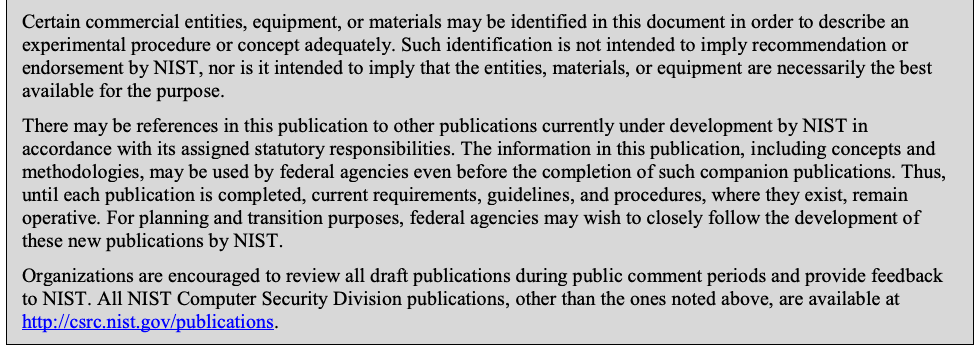
本書では、実験的な手順や概念を適切に説明するために、特定の商業的な組織、装置、または資材を挙げている場合があります。こうした記載は、NIST による推奨や推薦を意味するものではなく、挙げられた組織、資材、または装置が目的に対して必ずしも最良であることを意味するものでもありません。
There may be references in this publication to other publications currently under development by NIST in accordance with its assigned statutory responsibilities. The information in this publication, including concepts and methodologies, may be used by federal agencies even before the completion of such companion publications. Thus, until each publication is completed, current requirements, guidelines, and procedures, where they exist, remain operative. For planning and transition purposes, federal agencies may wish to closely follow the development of these new publications by NIST.
本刊行物には、NIST が法令で定められた責務に従って現在策定中の、ほかの刊行物への言及が含まれている場合があります。本刊行物の情報は、概念や方法論を含め、そうした関連刊行物の完成前であっても、連邦機関が使用する場合があります。したがって、各刊行物が完成するまでは、現行の要件、ガイドライン、手順が存在する場合は、それらが引き続き有効です。計画および移行のため、連邦機関は、NIST によるこれらの新しい刊行物の策定状況を注意深く追うことを検討してもよいです。
Organizations are encouraged to review all draft publications during public comment periods and provide feedback to NIST. All NIST Computer Security Division publications, other than the ones noted above, are available at http://csrc.nist.gov/publications.
組織は、パブリックコメントの期間中にすべてのドラフト刊行物を確認し、NIST にフィードバックを提供することが推奨されます。上記以外の NIST コンピュータセキュリティ部門の刊行物はすべて、http://csrc.nist.gov/publications で入手できます。
Comments on this publication may be submitted to:
本刊行物へのコメントは次の宛先に提出できます。
National Institute of Standards and Technology
Attn: Computer Security Division, Information Technology Laboratory
100 Bureau Drive (Mail Stop 8930) Gaithersburg, MD 20899-8930
National Institute of Standards and Technology
Attn: Computer Security Division, Information Technology Laboratory
100 Bureau Drive (Mail Stop 8930) Gaithersburg, MD 20899-8930
Reports on Computer Systems Technology
コンピュータシステム技術に関する報告書
The Information Technology Laboratory (ITL) at the National Institute of Standards and Technology (NIST) promotes the U.S. economy and public welfare by providing technical leadership for the Nation’s measurement and standards infrastructure. ITL develops tests, test methods, reference data, proof of concept implementations, and technical analyses to advance the development and productive use of information technology. ITL’s responsibilities include the development of management, administrative, technical, and physical standards and guidelines for the cost-effective security and privacy of other than national security-related information in federal information systems.
国立標準技術研究所（NIST）の情報技術研究所（ITL）は、国の測定・標準基盤に対して技術的なリーダーシップを提供することで、米国経済と公共の福祉の向上に寄与しています。ITL は、情報技術の開発と生産的な利用を進めるために、テスト、テスト方法、参照データ、概念実証の実装、技術分析を開発しています。ITL の責務には、連邦情報システムにおける国家安全保障関連情報以外の情報について、費用対効果の高いセキュリティおよびプライバシーのための管理上、運用上、技術上、物理上の標準とガイドラインを策定することが含まれます。
Abstract
要旨
The ability to control access to sensitive data in accordance with policy is perhaps the most fundamental security requirement. Despite over four decades of security research, the limited ability for existing access control mechanisms to enforce a comprehensive range of policy persists. While researchers, practitioners and policy makers have specified a large variety of access control policies to address real-world security issues, only a relatively small subset of these policies can be enforced through off-the-shelf technology, and even a smaller subset can be enforced by any one mechanism. This report describes an access control framework, referred to as the Policy Machine (PM), which fundamentally changes the way policy is expressed and enforced. The report gives an overview of the PM and the range of policies that can be specified and enacted. The report also describes the architecture of the PM and the properties of the PM model in detail.
ポリシーに従って機密データへのアクセスを制御する能力は、おそらく最も基本的なセキュリティ要件です。40 年以上にわたるセキュリティ研究にもかかわらず、既存のアクセス制御機構が包括的な範囲のポリシーを実施する能力には限界があり続けています。研究者、実務者、政策立案者は、現実世界のセキュリティ問題に対処するために多種多様なアクセス制御ポリシーを規定してきましたが、市販の技術で実施できるのはそれらのポリシーのうちごく一部にすぎず、単一の機構で実施できるものはさらに少なくなります。本報告書は、ポリシーの表現方法と実施方法を根本的に変えるアクセス制御フレームワークである Policy Machine（PM）について説明します。本報告書では、PM の概要と、規定・実行できるポリシーの範囲を示します。また、PM のアーキテクチャと PM モデルの特性についても詳しく説明します。
Keywords
キーワード
access control; Attribute Based Access Control (ABAC); access control policies; policy enforcement; privilege management; computer security
アクセス制御、属性ベースアクセス制御（ABAC）、アクセス制御ポリシー、ポリシー実施、権限管理、コンピュータセキュリティ
Acknowledgements
謝辞
The authors, David Ferraiolo and Serban Gavrila of the National Institute of Standards and Technology, and Wayne Jansen of Bayview Behavioral Consulting, wish to thank colleagues at NIST and elsewhere, particularly Roger Cummings, who reviewed drafts of this document and contributed to its technical content. Key improvements to this document would not have been possible without the feedback and valuable suggestions of those individuals.
著者である国立標準技術研究所の David Ferraiolo と Serban Gavrila、および Bayview Behavioral Consulting の Wayne Jansen は、本書のドラフトをレビューして技術的内容に貢献してくれた NIST 内外の同僚、とりわけ Roger Cummings に感謝します。本書の重要な改善は、これらの方々からのフィードバックと貴重な提案なしには実現できませんでした。
Note to Readers
読者への注記
This version (Revision 1) of NISTIR 7987 revises the original publication (dated May 2014). Changes were made to reorganize and improve the content of the report, incorporate additional material, and bring the report into close alignment with the terminology and notation of the emerging NGAC-GOADS standard. This report, while aligned with NGAC-GOADS, provides additional details and background material that are intended to aid readers in understanding the function and operation of the access control model and provide insight into its implementation.
NISTIR 7987 のこの版（改訂第 1 版）は、原版（2014 年 5 月付）を改訂したものです。報告書の内容の再編と改善、追加資料の取り込み、および策定中の NGAC-GOADS 標準の用語と表記との緊密な整合を図るために、変更が加えられました。本報告書は NGAC-GOADS と整合しつつ、アクセス制御モデルの機能と動作を読者が理解し、その実装への洞察を得る助けとなることを意図した、追加の詳細と背景資料を提供します。
Table of Contents
目次
List of Figures
図の一覧
List of Tables
表の一覧
1. Introduction
1. はじめに
Access control as it pertains to a computing environment is the ability to allow or prevent an entity from using a computing resource in some specific manner. A common example of resource use is reading a file. The access control has two distinct parts: policy definition where access authorizations to resources are specified, and policy enforcement where attempts to access resources are intercepted, and allowed or disallowed. An access control policy is a comprehensive set of access authorizations that govern the use of computing resources system wide. Controlling access to sensitive data in accordance with policy is perhaps the most fundamental security requirement that exists. Yet, despite more than four decades of security research, existing access control mechanisms have a limited ability to enforce a wide, comprehensive range of policies, and instead enforce a specific type of policy.
計算環境におけるアクセス制御とは、エンティティが計算資源を特定の方法で使用することを許可または阻止する能力のことです。資源の使用の一般的な例は、ファイルの読み取りです。アクセス制御には 2 つの異なる部分があります。資源へのアクセス認可を規定するポリシー定義と、資源へのアクセス試行を捕捉して許可または不許可とするポリシー実施です。アクセス制御ポリシーとは、システム全体で計算資源の使用を統制するアクセス認可の包括的な集合です。ポリシーに従って機密データへのアクセスを制御することは、おそらく存在する中で最も基本的なセキュリティ要件です。しかし、40 年以上のセキュリティ研究にもかかわらず、既存のアクセス制御機構が幅広く包括的な範囲のポリシーを実施する能力は限られており、代わりに特定の種類のポリシーを実施しています。
Most, if not all, significant information systems employ some means of access control. The main reason is that without sufficient access control, the service being provisioned would likely be undermined. Many types of access control policies exist. An enforcement mechanism for a specific type of access control policy is normally inherent in any computing platform. Applications built upon a computing platform typically make use of the access control capabilities available in some way to suit its needs. An application may also institute its own distinct layer of access controls for the objects formed and manipulated at the level of abstraction it provides. A common example of an application abstraction layer is a database application that implements a role-based access control mechanism, while operating on a host computer that implements a more elementary discretionary access control mechanism.
重要な情報システムのほとんどすべてが、何らかのアクセス制御手段を採用しています。その理由は、十分なアクセス制御がなければ、提供されるサービスが損なわれる可能性が高いためです。アクセス制御ポリシーには多くの種類があります。特定の種類のアクセス制御ポリシーの実施機構は、通常、あらゆる計算プラットフォームに組み込まれています。計算プラットフォーム上に構築されるアプリケーションは通常、利用可能なアクセス制御機能を、自らのニーズに合うよう何らかの方法で利用します。アプリケーションは、自らが提供する抽象化の水準で形成・操作されるオブジェクトに対して、独自のアクセス制御層を設けることもあります。アプリケーションの抽象化層の一般的な例は、より基本的な任意アクセス制御機構を実装するホストコンピュータ上で動作しながら、ロールベースアクセス制御機構を実装するデータベースアプリケーションです。
When composing different computing platforms to implement an information system, a policy mismatch can occur. A policy mismatch arises when the narrow range of policies supported by the various access control mechanisms involved have differences that make them incompatible for meeting a specific need. In some cases, it is possible to work around limitations in the ability for all platforms to express a consistent access control policy, by mapping equivalences between the available access control constructs to effect the intended policy [Tri04]. For example, a traditional multi-level access control system that supports information flow policies has been demonstrated as capable of effecting role-based access control policies through carefully designed and administered configuration options [Kuh98]. However, such mappings require that the correct semantic context is used consistently when administering policy, which can be mentally taxing and error inducing, and prevent the desired policy from being maintained correctly in the information system.
異なる計算プラットフォームを組み合わせて情報システムを実装する場合、ポリシーの不一致が生じることがあります。ポリシーの不一致は、関係するさまざまなアクセス制御機構がサポートする狭い範囲のポリシーに違いがあり、特定のニーズを満たすうえで互換性がない場合に発生します。場合によっては、利用可能なアクセス制御構成要素間の等価性を対応付けて意図したポリシーを実現することにより、すべてのプラットフォームで一貫したアクセス制御ポリシーを表現する能力の制約を回避できます [Tri04]。たとえば、情報フローポリシーをサポートする従来のマルチレベルアクセス制御システムは、慎重に設計・管理された構成オプションを通じて、ロールベースアクセス制御ポリシーを実現できることが実証されています [Kuh98]。しかし、このような対応付けでは、ポリシーを管理する際に正しい意味的文脈を一貫して使用する必要があります。そのため、精神的な負担が大きく、誤りを招きやすくなり、情報システムにおいて望ましいポリシーを正しく維持できなくなります。
NIST has devised a general-purpose access control framework, referred to as the Policy Machine (PM), which can express and enforce arbitrary, organization-specific, attribute-based access control policies through policy configuration settings. The PM is defined in terms of a fixed set of configurable data relations and a fixed set of functions that are generic to the specification and enforcement of combinations of a wide set of attribute-based access control policies. The PM offers a new perspective on access control in terms of a fundamental and reusable set of data abstractions and functions. The goal of the PM is to provide a unifying framework that supports commonly known and implemented access control policies, as well as combinations of common policies, and policies for which no access control mechanism presently exists.
NIST は、ポリシー構成設定を通じて、組織固有の任意の属性ベースアクセス制御ポリシーを表現・実施できる汎用のアクセス制御フレームワークである Policy Machine（PM）を考案しました。PM は、設定可能なデータ関係の固定された集合と、幅広い属性ベースアクセス制御ポリシーの組合せの仕様化と実施に共通する関数の固定された集合によって定義されます。PM は、データ抽象概念と関数の基本的で再利用可能な集合という観点から、アクセス制御に新たな視点をもたらします。PM の目標は、広く知られ実装されているアクセス制御ポリシーに加えて、一般的なポリシーの組合せや、現時点でアクセス制御機構が存在しないポリシーもサポートする、統一的なフレームワークを提供することです。
Access control policies typically span numerous systems and applications used by an organization. However, when users need to access resources that are protected under different control mechanisms, the differences in the type and range of policies supported by each mechanism can differ vastly, creating policy mismatches. If the PM framework was reified in every computing platform, obvious benefits would be not only the elimination of policy mismatches, but also the ability to meet organizational security requirements readily, since a wider range of arbitrary policies could be expressed uniformly throughout the platforms that comprise an information system.
アクセス制御ポリシーは通常、組織が使用する多数のシステムやアプリケーションにまたがります。しかし、利用者が異なる制御機構で保護されている資源にアクセスする必要がある場合、各機構がサポートするポリシーの種類と範囲は大きく異なることがあり、ポリシーの不一致が生じます。PM フレームワークがすべての計算プラットフォームで具体化されれば、ポリシーの不一致がなくなるだけでなく、情報システムを構成するプラットフォーム全体で、より広い範囲の任意のポリシーを一様に表現できるようになるため、組織のセキュリティ要件を容易に満たせるという明白な利点が得られるでしょう。
The PM can arguably be viewed as a dramatic shift in the way policy can be specified and enforced. But more importantly, it can also be viewed as a way to develop applications more effectively by taking advantage of the control features offered by the PM and using them to meet the access control needs for objects within the layer of abstraction the application provides. That is, the PM framework affords applications a single generic facility that can not only enforce access control policies comprehensively across distributed and centralized operating environments, but also subsume aspects involving the characterization, distribution, and control of implemented capabilities, resulting in a dramatic alleviation of many of the administrative, policy enforcement, data interoperability, and usability challenges faced by enterprises today.
PM は、ポリシーの規定・実施の方法における劇的な転換と見ることができます。しかしより重要なのは、PM が提供する制御機能を活用し、アプリケーションが提供する抽象化の層の中でオブジェクトに対するアクセス制御のニーズを満たすために使うことで、アプリケーションをより効果的に開発する方法とも見ることができる点です。つまり PM フレームワークは、分散環境と集中環境の両方でアクセス制御ポリシーを包括的に実施できるだけでなく、実装された機能の特性化、配布、制御に関わる側面も包含できる、単一の汎用的な機能をアプリケーションに提供します。その結果、今日のエンタープライズが直面している管理、ポリシー実施、データ相互運用性、使いやすさに関する多くの課題が大幅に軽減されます。
1.1 Purpose and Scope
1.1 目的と範囲
The purpose of this Internal Report (IR) is to provide an overview of the PM and guidelines for its implementation. The report explains the basics of the PM framework and discusses the range of policies that can be specified and enacted. It also describes the architecture of the PM and the details of key functional components.
この内部報告書（IR）の目的は、PM の概要と、その実装のためのガイドラインを示すことです。本報告書では、PM フレームワークの基本を説明し、規定・実行できるポリシーの範囲を論じます。また、PM のアーキテクチャと、主要な機能構成要素の詳細も説明します。
The intended audience for this document includes the following categories of individuals:
本書の想定読者には、次の区分の人々が含まれます。
•Computer security researchers interested in access control and authorization frameworks
•アクセス制御や認可フレームワークに関心を持つコンピュータセキュリティの研究者
•Security professionals, including security officers, security administrators, auditors, and others with responsibility for information technology security
•セキュリティ責任者、セキュリティ管理者、監査人など、情報技術のセキュリティに責任を持つセキュリティ専門家
•Executives and technology officers involved in decisions about information technology security products
•情報技術のセキュリティ製品に関する意思決定に関わる経営幹部および技術責任者
•Information technology program managers concerned with security measures for computing environments.
•計算環境のセキュリティ対策に関心を持つ情報技術プログラムマネージャー。
This document, while technical in nature, provides background information to help readers understand the topics that are covered. The material presumes that readers have a basic understanding of computer security and possess fundamental operating system and networking expertise.
本書は技術的な性格のものですが、扱う話題を読者が理解できるように、背景情報を提供しています。内容は、読者がコンピュータセキュリティの基本的な理解を持ち、オペレーティングシステムとネットワークの基礎的な専門知識を備えていることを前提としています。
1.2 Standards Alignment
1.2 標準との整合
NIST and other members of an Ad Hoc working group within the International Committee for Information Technology Standards (INCITS) body are developing a multi-part access control standard, under the title of "Next Generation Access Control" (NGAC). This work is being conducted under three sub-projects:
NIST と、情報技術標準国際委員会（INCITS）内のアドホック作業グループのほかのメンバーは、「Next Generation Access Control」（NGAC）という題名で、複数部からなるアクセス制御標準を策定しています。この作業は、次の 3 つのサブプロジェクトの下で進められています。
•Project 2193–D: Next Generation Access Control – Implementation Requirements, Protocols and API Definitions.
•Project 2193–D: Next Generation Access Control – Implementation Requirements, Protocols and API Definitions.
•Project 2194–D: Next Generation Access Control – Functional Architecture.
•Project 2194–D: Next Generation Access Control – Functional Architecture.
•Project 2195–D: Next Generation Access Control – Generic Operations and Abstract Data Structures.
•Project 2195–D: Next Generation Access Control – Generic Operations and Abstract Data Structures.
The Policy Machine's architecture and specifications form the basis for the NGAC work within INCITS. An initial standard from Project 2194-D was published in 2013 and is now available from the American National Standards Institute (ANSI) estandards store as INCITS 499 – NGAC Functional Architecture (NGAC–FA) [ANSI13]. At the time of publication of this IR, a draft proposed standard for Project 2195–D: NGAC Generic Operations & Abstract Data Structures (NGAC-GOADS) had completed the Public Review stage of the approval process and entered into final balloting for approval as a ANSI standard [ANSI15]. Publication of the standard expected to occur in the fall of 2015.
Policy Machine のアーキテクチャと仕様は、INCITS における NGAC の作業の基礎となっています。Project 2194-D の最初の標準は 2013 年に発行され、現在は米国規格協会（ANSI）の estandards ストアで INCITS 499 – NGAC Functional Architecture（NGAC–FA）として入手できます [ANSI13]。この IR の発行時点で、Project 2195–D: NGAC Generic Operations & Abstract Data Structures（NGAC-GOADS）の標準案のドラフトは、承認プロセスのパブリックレビュー段階を完了し、ANSI 標準としての承認に向けた最終投票に入っています [ANSI15]。この標準の発行は 2015 年秋に予定されています。
Although this IR is in a self-consistent state and most aspects are consistent with ANSI INCITS 499 and NGAC-GOADS, some small differences do exist. The most significant of these is the grammar used in obligations, which is not a normative part of NGAC-GOADS.
この IR はそれ自体で整合した状態にあり、ほとんどの側面が ANSI INCITS 499 および NGAC-GOADS と一致していますが、いくつかの小さな相違が存在します。その中で最も重要なのは、義務で使用される文法であり、これは NGAC-GOADS の規範的な部分ではありません。
1.3 Document Structure
1.3 文書の構成
The remainder of this document is organized into the following chapters:
本書の残りは、次の章で構成されています。
•Chapter 2 provides background information on access control models, including several examples of popular, well-known models.
•第 2 章では、広く知られている代表的なモデルの例を含め、アクセス制御モデルの背景情報を示します。
•Chapter 3 explains the framework of the policy machine model, including key elements, relationships, and abstractions of the model, the notation for expressing policies, and some introductory examples of policy.
•第 3 章では、Policy Machine モデルのフレームワークについて、モデルの主要な要素、関係、抽象概念、ポリシーを表現するための表記、およびポリシーの入門的な例を含めて説明します。
•Chapter 4 examines more deeply various aspects of the policy model regarding the administration of policy.
•第 4 章では、ポリシーの管理に関して、ポリシーモデルのさまざまな側面をより深く検討します。
•Chapter 5 reviews ways to apply the framework to specify various types of policies.
•第 5 章では、さまざまな種類のポリシーを規定するためにフレームワークを適用する方法を確認します。
•Chapter 6 looks at issues that arise with the integration of multiple policies and ways to apply the framework in such situations.
•第 6 章では、複数のポリシーの統合に伴って生じる問題と、そのような状況でフレームワークを適用する方法を検討します。
•Chapter 7 provides an overview of the key architectural components and interactions of the PM.
•第 7 章では、PM の主要なアーキテクチャ構成要素と相互作用の概要を示します。
•Chapter 8 contains a list of references.
•第 8 章には、参考文献の一覧を示します。
Sidebars containing auxiliary and summary material related to the main discussion appear in gray text boxes throughout the main body of the document. At the end of the document, there are also appendices that contain supporting material. Appendix A provides a list of acronyms used in the report and Appendix B summarizes the mathematical notation used and the principal abstractions defined in the report. Appendix C provides a list of the core administrative commands for the PM model and their semantic description. Appendix D specifies the administrative routines that constitute the core services of the PM model. Appendix E outlines three different approaches to support personas within the PM model.
主たる議論に関連する補助的な資料や要約資料を含むサイドバーは、本文全体を通じて灰色のテキストボックスで示されています。文書の末尾には、補足資料を含む付録もあります。付録 A は報告書で使用する略語の一覧を、付録 B は使用する数学的表記と報告書で定義する主要な抽象概念の要約を示します。付録 C は PM モデルの中核となる管理コマンドの一覧とその意味的な記述を示します。付録 D は PM モデルの中核サービスを構成する管理ルーチンを規定します。付録 E は、PM モデル内でペルソナをサポートするための 3 つの異なる方法の概要を示します。
2. Background
2. 背景
Classical access control models and mechanisms are defined in terms of subjects (S), access rights (A), and named objects (O). Users represent individuals who directly interact with a system and have been authenticated and established their identities. A user identity is unique and maps to only one individual. A user is unable to access objects directly, and instead must perform accesses through a subject. A subject represents a user and any system process or entity that acts on behalf of a user. Subjects are the active entities of a system that can cause a flow of information between objects or change the security state of the system.
古典的なアクセス制御モデルと機構は、サブジェクト（S）、アクセス権（A）、名前付きオブジェクト（O）によって定義されます。ユーザーは、システムと直接やり取りし、認証されて身元が確立された個人を表します。ユーザーの識別情報は一意であり、ただ 1 人の個人に対応付けられます。ユーザーはオブジェクトに直接アクセスすることはできず、サブジェクトを通じてアクセスを行わなければなりません。サブジェクトは、ユーザーと、ユーザーに代わって動作するシステムプロセスまたはエンティティを表します。サブジェクトは、システムの能動的なエンティティであり、オブジェクト間の情報の流れを生じさせたり、システムのセキュリティ状態を変更したりすることができます。
Objects are system entities that must be protected. Each object has a unique system-wide identifier. The set of objects may pertain to processes, files, ports, and other system abstractions, as well as system resources such as printers. Subjects may also be included in the set of objects. In effect, this allows them to be governed by another subject. That is, the governing subject can administer the access of such subjects to objects under its control. The selection of entities included in the set of objects is determined by the protection requirements of the system.
オブジェクトは、保護しなければならないシステムエンティティです。各オブジェクトは、システム全体で一意の識別子を持ちます。オブジェクトの集合は、プロセス、ファイル、ポート、およびその他のシステム抽象概念のほか、プリンタなどのシステム資源に関するものを含みます。サブジェクトをオブジェクトの集合に含めることもできます。これにより事実上、サブジェクトを別のサブジェクトの統制下に置くことができます。つまり、統制する側のサブジェクトは、自らの制御下にあるそうしたサブジェクトのオブジェクトへのアクセスを管理できます。オブジェクトの集合に含めるエンティティの選択は、システムの保護要件によって決まります。
Subjects operate autonomously and may interact with other subjects. Subjects may be permitted modes of access to objects that are different from those other subjects. When a subject attempts to access an object, a reference mediation function determines whether the subject’s assigned permissions adequately satisfy policy before allowing the access to take place. In addition to carrying out user accesses, a subject may maliciously (e.g., through a Trojan horse) or inadvertently (e.g., through a coding error) make requests that are unknown to and unwanted by its user.
サブジェクトは自律的に動作し、ほかのサブジェクトとやり取りすることがあります。サブジェクトには、ほかのサブジェクトとは異なるオブジェクトへのアクセスモードが許可されることがあります。サブジェクトがオブジェクトにアクセスしようとすると、参照仲介機能が、アクセスを行わせる前に、そのサブジェクトに割り当てられた許可がポリシーを十分に満たしているかどうかを判定します。ユーザーのアクセスを実行することに加えて、サブジェクトは、悪意をもって（たとえばトロイの木馬によって）、または不注意で（たとえばコーディングの誤りによって）、ユーザーが知らず望んでもない要求を行うことがあります。
An access matrix provides a simple representation of the access modes to an object for which a subject is authorized [Lam71, Gra72, Har76]. Figure 1 provides a simple illustration of an access matrix. Each row of the matrix represents a subject, \(S_i\), while each column represents an object, \(O_i\). Each entry, \(A_{i,j}\), at the intersection of a row and column of the matrix, contains the set of access rights for the subject to the object. The access matrix model, while simple, can express a broad range of policies, because it is based on a general form of an access rule (i.e., subject, access mode, object), and imposes little restriction on the rule itself.
アクセス行列は、サブジェクトが認可されているオブジェクトへのアクセスモードを簡潔に表現します [Lam71, Gra72, Har76]。図 1 にアクセス行列の簡単な例を示します。行列の各行はサブジェクト \(S_i\) を表し、各列はオブジェクト \(O_i\) を表します。行列の行と列の交点にある各エントリ \(A_{i,j}\) は、そのサブジェクトのそのオブジェクトに対するアクセス権の集合を含みます。アクセス行列モデルは単純ですが、アクセスルールの一般的な形式（すなわち、サブジェクト、アクセスモード、オブジェクト）に基づいており、ルール自体にほとんど制約を課さないため、幅広い範囲のポリシーを表現できます。
Since, in most situations, subjects do not need access rights to most objects, the matrix is typically sparse. Several, more space-efficient representations have been proposed as alternatives. An authorization relation, for example, represents an access matrix as a list of triples of the form \((S_i, A_{i,j}, O_j)\). Each triple represents the access rights of a subject to an object and this representation is typically used in relational database systems [San94].
ほとんどの状況では、サブジェクトはほとんどのオブジェクトに対するアクセス権を必要としないため、行列は通常、疎になります。代替として、より省スペースな表現がいくつか提案されています。たとえば認可関係は、アクセス行列を \((S_i, A_{i,j}, O_j)\) の形の 3 つ組のリストとして表します。各 3 つ組は、サブジェクトのオブジェクトに対するアクセス権を表し、この表現は通常、リレーショナルデータベースシステムで使用されます [San94]。
Access control and capability lists are two other forms of representation. An access control list (ACL) is associated with each object in the matrix and corresponds to a column of the access matrix. Each access entry in the ACL contains the pair \((S_i, A_{i,j})\), which specifies the subjects that can access the object, along with each subject’s rights or modes of access to the object. ACLs are widely used in present-day operating systems. Similarly, a capability list is associated with each subject and corresponds to a row of the matrix. Each entry in a capability list is the pair \((A_{i,j}, O_j)\), which specifies the objects the subject can access, along with its access rights to each object. A capability list can thus be thought of as the inverse of an access control list. Capability lists, when bound with the identity of the subject, have use in distributed systems.
アクセス制御リストとケーパビリティリストは、ほかの 2 つの表現形式です。アクセス制御リスト（ACL）は行列の各オブジェクトに関連付けられ、アクセス行列の列に対応します。ACL の各アクセスエントリは、対 \((S_i, A_{i,j})\) を含み、そのオブジェクトにアクセスできるサブジェクトと、各サブジェクトのそのオブジェクトに対する権利またはアクセスモードを規定します。ACL は現在のオペレーティングシステムで広く使用されています。同様に、ケーパビリティリストは各サブジェクトに関連付けられ、行列の行に対応します。ケーパビリティリストの各エントリは、対 \((A_{i,j}, O_j)\) であり、そのサブジェクトがアクセスできるオブジェクトと、各オブジェクトに対するアクセス権を規定します。したがって、ケーパビリティリストは、アクセス制御リストの逆と考えることができます。ケーパビリティリストは、サブジェクトの識別情報と結び付けられると、分散システムで用途があります。
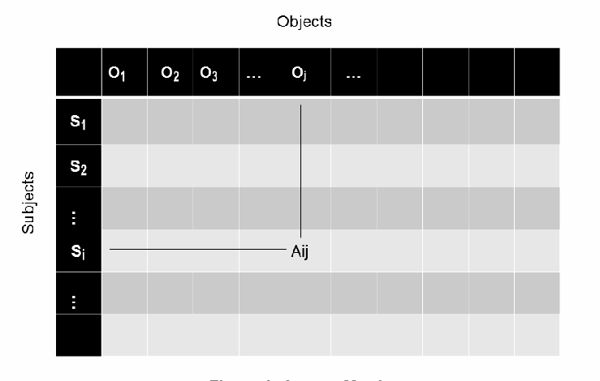
アクセス行列を表す格子の図です。列は「Objects」（オブジェクト）で見出しはO1、O2、O3、…、Oj、…、行は「Subjects」（サブジェクト）で見出しはS1、S2、⋮、Si、⋮です。列Ojと行Siから伸びた線が交わるセルに「Aij」と書かれています。
Figure 1: Access Matrix
図 1: アクセス行列
A key difference between the capability list and access control list is the subject’s ability to identify objects in the latter. With an access control list, a subject can identify any object in the system and attempt access; the access control mechanism can then mediate the access attempt using the object’s access list to verify whether the subject is authorized the request mode of access. In a capability system, a subject can identify only those objects for which it holds a capability. Possessing a capability for the object is a requisite for the subject to attempt access to an object, which is then mediated by the reference mediation function. Both the contents of access control and capability lists, as well as the access control mechanism itself, must be protected from compromise to prevent unauthorized subjects from gaining access to an object.
ケーパビリティリストとアクセス制御リストの重要な違いは、後者においてサブジェクトがオブジェクトを識別できることにあります。アクセス制御リストでは、サブジェクトはシステム内の任意のオブジェクトを識別してアクセスを試みることができます。その後、アクセス制御機構が、オブジェクトのアクセスリストを使って、そのサブジェクトが要求されたアクセスモードを認可されているかどうかを確認し、アクセス試行を仲介します。ケーパビリティシステムでは、サブジェクトは、ケーパビリティを保持しているオブジェクトだけを識別できます。オブジェクトに対するケーパビリティを所持していることは、サブジェクトがオブジェクトへのアクセスを試みるための必須条件であり、そのアクセスは参照仲介機能によって仲介されます。アクセス制御リストとケーパビリティリストの内容、およびアクセス制御機構自体は、認可されていないサブジェクトがオブジェクトへのアクセスを得ることを防ぐために、危殆化から保護しなければなりません。
2.1 Access Control Models
2.1 アクセス制御モデル
Discretionary models form a broad class of access control models. Discretionary in this context means that subjects, which represent users as opposed to administrators, are allowed some freedom to manipulate the authorizations of other subjects to access objects [Hu06]. Non-discretionary models are the complement of discretionary models, insofar as they require that access control policy decisions are regulated by a central authority, not by the individual owner of an object. That is, authorizations to objects can be changed only through the actions of subjects representing administrators, and not by those representing users [Hu06]. With non-discretionary models, subjects and objects are typically classified into or labeled with distinct categories. Category-sensitive access rules that are established through administration completely govern the access of a subject to an object and are not modifiable at the discretion of the subject.
任意モデルは、アクセス制御モデルの広い分類を形成します。この文脈での任意とは、管理者ではなくユーザーを表すサブジェクトが、ほかのサブジェクトのオブジェクトへのアクセス認可を操作する自由をある程度与えられていることを意味します [Hu06]。非任意モデルは任意モデルの補集合であり、アクセス制御ポリシーの決定が、オブジェクトの個々の所有者ではなく中央の権限者によって規制されることを要求します。つまり、オブジェクトに対する認可は、管理者を表すサブジェクトの行為によってのみ変更でき、ユーザーを表すサブジェクトの行為では変更できません [Hu06]。非任意モデルでは、サブジェクトとオブジェクトは通常、異なるカテゴリに分類されるか、ラベルを付けられます。管理を通じて確立されるカテゴリに依存したアクセスルールが、サブジェクトのオブジェクトへのアクセスを完全に統制し、サブジェクトの裁量では変更できません。
Many different access control models, both discretionary and non-discretionary, have been developed to suit a variety of purposes. Models are often developed or influenced by well-conceived organizational policies for controlling access to information, whose key properties are generalized, abstracted, and described in some formal or semi-formal notation. Therefore, models typically differ from organizational policy in several ways. As mentioned, models deal with abstractions that involve a formal or semi-formal definition, from which the presence or lack of certain properties may be demonstrated. Organizational policy on the other hand is usually a more informally stated set of high-level guidelines that provide a rationale for the way accesses are to be controlled, and may also give decision rules about permitting or denying certain types of access. Policies may be also incomplete, include statements at variable levels of discourse, and contain self-contradictions, while models typically involve only essential conceptual artifacts, are composed at a uniform level of discourse, and provide a consistent set of logical rules for access control.
任意・非任意の両方について、さまざまな目的に合わせて多くの異なるアクセス制御モデルが開発されてきました。モデルは、情報へのアクセスを制御するための、よく練られた組織のポリシーから開発されたり、影響を受けたりすることが多く、その主要な特性は、一般化・抽象化され、何らかの形式的または半形式的な表記で記述されます。したがって、モデルは通常、いくつかの点で組織のポリシーとは異なります。前述のとおり、モデルは形式的または半形式的な定義を伴う抽象概念を扱い、そこから特定の特性の有無を示すことができます。一方、組織のポリシーは通常、より非形式的に記述された高水準のガイドラインの集合であり、アクセスをどのように制御するかの根拠を示し、特定の種類のアクセスを許可または拒否する判断規則を示すこともあります。ポリシーは不完全なこともあり、さまざまな水準の言説による記述を含み、自己矛盾を含むこともあります。これに対してモデルは通常、本質的な概念的成果物だけを含み、一様な水準の言説で構成され、アクセス制御のための一貫した論理規則の集合を提供します。
Organizational objectives and policy for access control may not align well with those of a particular access control model. For example, some models enforce a strict policy that may too restrictive for some organizations to carry out their mission, but essential for others. Even if alignment between the two is strong, in general, the organizational access control policy may not be satisfied fully by the model. For example, different federal agencies can have different conformance directives regarding privacy that must be met, which affect the access control policy. Nevertheless, access control models can provide a strong baseline from which organizational policy can be satisfied.
アクセス制御に関する組織の目的やポリシーは、特定のアクセス制御モデルのものとうまく整合しない場合があります。たとえば、一部のモデルは厳格なポリシーを実施しますが、これは任務を遂行するうえで制限が厳しすぎる組織もあれば、不可欠と考える組織もあります。両者の整合が強い場合でも、一般に、組織のアクセス制御ポリシーがモデルによって完全に満たされるとは限りません。たとえば、連邦機関ごとにプライバシーに関して満たすべき適合指令が異なる場合があり、それがアクセス制御ポリシーに影響します。とはいえ、アクセス制御モデルは、組織のポリシーを満たすための強固なベースラインを提供できます。
Well-known models include Discretionary Access Control, Mandatory Access Control, Role Based Access Control, One-directional Information Flow, Chinese Wall, Clark-Wilson, and N-person Control. Several of these models are discussed below to give an idea of the scope and variability between models. They are also used later in the report to demonstrate how seemingly different models can be expressed using the Policy Machine model.
よく知られたモデルには、任意アクセス制御、強制アクセス制御、ロールベースアクセス制御、一方向情報フロー、Chinese Wall、Clark-Wilson、N-person Control があります。これらのモデルのいくつかを以下で論じ、モデルの範囲と多様性を示します。これらはまた、一見異なるモデルが Policy Machine モデルを使ってどのように表現できるかを示すために、本報告書の後半でも使用されます。
It is important to keep in mind that models are written at a high conceptual level, which stipulates concisely the scope of policy and the desired behavior between defined entities, but not the security mechanisms needed to reify the model for a specific computational environment, such as an operating system or database management system. While certain implementation aspects may be inferred from an access control model, such models are normally implementation free, insofar as they do not dictate how an implementation and its security mechanisms should be organized or constructed. These aspects of security are addressed through information assurance processes.
モデルは高い概念水準で記述されており、ポリシーの範囲と、定義されたエンティティ間の望ましい振る舞いを簡潔に規定するものの、オペレーティングシステムやデータベース管理システムなどの特定の計算環境でモデルを具体化するために必要なセキュリティ機構は規定しないことに留意することが重要です。アクセス制御モデルから実装のいくつかの側面を推測できる場合もありますが、そのようなモデルは通常、実装がどのように構成・構築されるべきか、およびそのセキュリティ機構を規定しない点で、実装非依存です。セキュリティのこれらの側面は、情報保証プロセスを通じて扱われます。
2.2 Discretionary Access Control
2.2 任意アクセス制御
The access matrix discussed in the previous section was originally envisioned as a discretionary access control (DAC) model [Lam71, Gra72]. Many other DAC models have been derived from the access matrix and share common characteristics. The access matrix was later formalized as the now well-known HRU model and used to analyze the complexity of computing the safety properties of the model, which was found to be undecidable [Har76, Tri06]. DAC policies can be expressed in the HRU model, but DAC should not be equated to it, since the HRU model is policy neutral and can also be used to express access control policies that are non-discretionary [Li05].
前の節で論じたアクセス行列は、もともと任意アクセス制御（DAC）モデルとして構想されました [Lam71, Gra72]。ほかの多くの DAC モデルがアクセス行列から派生しており、共通の特性を共有しています。アクセス行列は後に、現在よく知られている HRU モデルとして形式化され、モデルの安全性特性を計算する複雑さの解析に使用されました。その結果、それは決定不能であることがわかりました [Har76, Tri06]。DAC ポリシーは HRU モデルで表現できますが、HRU モデルはポリシーに中立であり、非任意のアクセス制御ポリシーを表現するためにも使用できるため、DAC を HRU モデルと同一視すべきではありません [Li05]。
In addition to an administrator’s ability to manipulate a subject’s authorization to access objects, a DAC access matrix model leaves a certain amount of control to the discretion of the object's owner. Ownership of an object is typically conferred to the subject that created the object, along with the capabilities to read and write the object. For example, it is the owner of the file who can control other subjects' accesses to the file. Control then implies possession of administrative capabilities to create and modify access control entries associated with a set of other subjects, which pertain to owned objects. Control may also involve the transfer of ownership to other subjects. Only those subjects specified by the owner may have some combination of permissions to the owner’s files.
管理者がサブジェクトのオブジェクトへのアクセス認可を操作できることに加えて、DAC アクセス行列モデルは、ある程度の制御をオブジェクトの所有者の裁量に委ねます。オブジェクトの所有権は通常、そのオブジェクトを作成したサブジェクトに、そのオブジェクトを読み書きするケーパビリティとともに与えられます。たとえば、ファイルへのほかのサブジェクトのアクセスを制御できるのは、そのファイルの所有者です。この場合の制御とは、所有するオブジェクトに関する、ほかのサブジェクトの集合に関連付けられたアクセス制御エントリを作成・変更する管理上のケーパビリティを保有していることを意味します。制御には、所有権をほかのサブジェクトに移譲することも含まれる場合があります。所有者が指定したサブジェクトだけが、所有者のファイルに対する何らかの許可の組合せを持つことができます。
DAC policy tends to be very flexible and is widely used in the commercial and government sectors. However, DAC potentially has two inherent weaknesses [Hu06]. The first is the inability for an owner to control access to an object, once permissions are passed on to another subject. For example, when one user grants another user read access to a file, nothing stops the recipient user from copying the contents of the file to an object under its exclusive control. The recipient user may now grant any other user access to the copy of the original file without the knowledge of the original file owner. Some DAC models have the ability to control the propagation of permissions. The second weakness is vulnerability to Trojan horse attacks, which is common weakness for all DAC models. In a Trojan horse attack, a process operating on behalf a user may contain malware that surreptitiously performs other actions unbeknownst to the user.
DAC ポリシーは非常に柔軟である傾向があり、民間部門と政府部門で広く使用されています。しかし、DAC には 2 つの固有の弱点がある可能性があります [Hu06]。1 つ目は、許可がほかのサブジェクトに渡されると、所有者がそのオブジェクトへのアクセスを制御できなくなることです。たとえば、あるユーザーが別のユーザーにファイルの読み取りアクセスを付与した場合、受け取ったユーザーがそのファイルの内容を、自分だけが制御するオブジェクトにコピーすることを妨げるものは何もありません。受け取ったユーザーは、元のファイルの所有者に知られることなく、ほかの任意のユーザーにそのコピーへのアクセスを付与できます。許可の伝播を制御できる DAC モデルもあります。2 つ目の弱点は、トロイの木馬攻撃に対する脆弱性であり、これはすべての DAC モデルに共通する弱点です。トロイの木馬攻撃では、ユーザーに代わって動作するプロセスにマルウェアが含まれ、ユーザーの知らないうちにひそかにほかの行為を行うことがあります。
2.3 Mandatory Access Control
2.3 強制アクセス制御
Mandatory Access Control (MAC) is a prime example of a non-discretionary access control model. MAC has its origins with military and civilian government security policy, where individuals are assigned clearances and messages, reports, and other forms of data are assigned classifications [San94]. The security level of user clearances and of data classifications govern whether an individual can gain access to data. For example, an individual can read a report, only if the security level of the report is classified at or below his or her level of clearance.
強制アクセス制御（MAC）は、非任意アクセス制御モデルの代表例です。MAC は軍および民間の政府のセキュリティポリシーに起源を持ち、そこでは個人にクリアランスが割り当てられ、メッセージ、報告書、その他の形態のデータに機密区分が割り当てられます [San94]。ユーザーのクリアランスとデータの機密区分のセキュリティレベルが、個人がデータにアクセスできるかどうかを決定します。たとえば、個人が報告書を読めるのは、その報告書の機密区分のセキュリティレベルが、本人のクリアランスのレベル以下である場合に限られます。
Defining MAC for a computer system requires assignment of a security level to each subject and each object. Security levels form a strict hierarchy such that security level x dominates security level y, if and only if, x is greater than or equal to y within the hierarchy. The U.S. military security levels of Top Secret, Secret, Confidential, and Unclassified are a good example of a strict hierarchy. Access is determined based on assigned security levels to subjects and objects and the dominance relation between the subject’s and object’s assigned security.
コンピュータシステムに MAC を定義するには、各サブジェクトと各オブジェクトにセキュリティレベルを割り当てる必要があります。セキュリティレベルは厳密な階層を形成し、セキュリティレベル x がセキュリティレベル y を支配するのは、階層内で x が y 以上である場合、かつその場合に限られます。米国の軍のセキュリティレベルである Top Secret、Secret、Confidential、Unclassified は、厳密な階層のよい例です。アクセスは、サブジェクトとオブジェクトに割り当てられたセキュリティレベルと、サブジェクトとオブジェクトに割り当てられたセキュリティの間の支配関係に基づいて決定されます。
The security objective of MAC is to restrict the flow of information from an entity at one security level to an entity at a lesser security level. Two properties accomplish this. The simple security property specifies that a subject is permitted read access to an object only if the subject’s security level dominates the object’s security level. The ⋆-property specifies that a subject is permitted write access to an object only if the object’s security level dominates the subject’s security level. Indirectly, the ⋆-property, also referred to as the confinement property, prevents the transfer of data from an object of a higher level to an object of a lower classification and is required to maintain system security in an automated environment.
MAC のセキュリティ目標は、あるセキュリティレベルのエンティティから、より低いセキュリティレベルのエンティティへの情報の流れを制限することです。これを達成するのが 2 つの特性です。単純セキュリティ特性は、サブジェクトのセキュリティレベルがオブジェクトのセキュリティレベルを支配する場合に限り、サブジェクトにそのオブジェクトへの読み取りアクセスを許可すると規定します。⋆-特性は、オブジェクトのセキュリティレベルがサブジェクトのセキュリティレベルを支配する場合に限り、サブジェクトにそのオブジェクトへの書き込みアクセスを許可すると規定します。⋆-特性は閉じ込め特性とも呼ばれ、間接的に、より高いレベルのオブジェクトから、より低い機密区分のオブジェクトへのデータ転送を防ぎます。これは、自動化された環境でシステムのセキュリティを維持するために必要です。
These two properties are supplemented by the tranquility property, which can take either of two forms: strong and weak. Under the strong tranquility property, the security level of a subject or object does not change while the object is being referenced. The strong tranquility property serves two purposes. First, it associates a subject with a security level. Second, it prevents, a subject from reading data with a high security level, storing the data in memory, switching its level to a low security level, and writing the contents of its memory to an object at that lower level.
これら 2 つの特性は、強い形と弱い形の 2 つの形をとり得るトランキリティ特性によって補完されます。強いトランキリティ特性の下では、サブジェクトまたはオブジェクトのセキュリティレベルは、そのオブジェクトが参照されている間は変化しません。強いトランキリティ特性には 2 つの目的があります。第一に、サブジェクトをセキュリティレベルに関連付けます。第二に、サブジェクトが高いセキュリティレベルのデータを読み取り、そのデータをメモリに保存し、自らのレベルを低いセキュリティレベルに切り替えて、メモリの内容をその低いレベルのオブジェクトに書き込むことを防ぎます。
Under the weak tranquility property labels are allowed to change, but never in a way that can violate the defined security policy. It allows a session to begin in the lowest security level, regardless of the user’s security level, and increased that level only if objects at higher security levels are accessed. Once increased, the session security level can never be reduced, and all objects created or modified take on the security level held by the session at the time when the object was created or modified, regardless of its initial security level. This is known as the high water mark principle.
弱いトランキリティ特性の下では、ラベルの変更は許されますが、定義されたセキュリティポリシーに違反し得る形では決して許されません。これにより、ユーザーのセキュリティレベルにかかわらず、セッションを最も低いセキュリティレベルで開始でき、より高いセキュリティレベルのオブジェクトにアクセスした場合にのみ、セッションのセキュリティレベルを引き上げます。いったん引き上げられると、セッションのセキュリティレベルは決して下げられず、作成または変更されるすべてのオブジェクトは、オブジェクトの当初のセキュリティレベルにかかわらず、作成または変更された時点でセッションが保持していたセキュリティレベルを引き継ぎます。これはハイウォーターマーク原則として知られています。
Because of the constraints placed on the flow of information, MAC models prevent software infected with Trojan horse from violating policy. Information can flow within the same security level or higher, preventing leakage to a lower level. However, information can pass through a covert channel in MAC, where information at a higher security level is deduced by inference, such as assembling and intelligently combining information of a lower security level.
情報の流れに課される制約のため、MAC モデルは、トロイの木馬に感染したソフトウェアがポリシーに違反することを防ぎます。情報は同じセキュリティレベルまたはより高いレベルの内部でのみ流れるため、より低いレベルへの漏えいが防がれます。しかし MAC では、情報が隠れチャネルを通過することがあり、そこでは、より低いセキュリティレベルの情報を集めて巧みに組み合わせるなどの推論によって、より高いセキュリティレベルの情報が推測されます。
2.4 Chinese Wall
2.4 チャイニーズウォール
The Chinese Wall policy evolved to address conflict-of-interest issues related to consulting activities within banking and other financial disciplines [Bre89]. The stated objective of the Chinese Wall policy and its associated model is to prevent illicit flows of information that can result in conflicts of interest. The Chinese Wall model is based on several key entities: subjects, objects, and security labels. A security label designates the conflict-of-interest class and the company dataset of each object.
Chinese Wall ポリシーは、銀行業およびその他の金融分野におけるコンサルティング活動に関連する利益相反の問題に対処するために発展しました [Bre89]。Chinese Wall ポリシーとその関連モデルの明示された目的は、利益相反をもたらし得る不正な情報の流れを防ぐことです。Chinese Wall モデルは、サブジェクト、オブジェクト、セキュリティラベルという、いくつかの主要なエンティティに基づいています。セキュリティラベルは、各オブジェクトの利益相反クラスと企業データセットを指定します。
The Chinese Wall policy is application-specific in that it applies to a narrow set of activities that are tied to specific business transactions. Consultants or advisors are naturally given access to proprietary information to provide a service for their clients. When a consultant gains access to the competitive practices of two banks, for instance, the consultant essentially obtains insider information that could be used to profit personally or to undermine the competitive advantage of one or both of the institutions.
Chinese Wall ポリシーは、特定の事業取引に結び付いた限られた範囲の活動に適用されるという点で、アプリケーション固有です。コンサルタントやアドバイザーは、顧客にサービスを提供するために、当然ながら専有情報へのアクセスを与えられます。たとえば、コンサルタントが 2 つの銀行の競争上の慣行にアクセスした場合、そのコンサルタントは実質的にインサイダー情報を入手することになり、それを個人的な利益のために、あるいは一方または双方の機関の競争優位を損なうために使用するおそれがあります。
The Chinese Wall model establishes a set of access rules that comprises a firewall or barrier, which prevents a subject from accessing objects on the wrong side of the barrier. It relies on the consultant’s dataset to be logically organized such that each company dataset belongs to exactly one conflict of interest class, and each object belongs to exactly one company dataset or the dataset of sanitized objects within a specially designated, non-conflict-of-interest class. A subject can have access to at most one company dataset in each conflict of interest class. However, the choice of dataset is at the subject’s discretion. Once a subject accesses (i.e., reads or writes) an object in a company dataset, the only other objects accessible by that subject lie within the same dataset or within the datasets of a different conflict of interest class. In addition, a subject can write to a dataset only if it does not have read access to an object that contains unsanitized information (i.e., information not treated to prevent discovery of a corporation's identity) and is in a company dataset different from the one for which write access is requested.
Chinese Wall モデルは、ファイアウォールまたは障壁にあたる一連のアクセスルールを確立し、サブジェクトが障壁の反対側にあるオブジェクトにアクセスすることを防ぎます。これは、コンサルタントのデータセットが論理的に編成されており、各企業データセットがちょうど 1 つの利益相反クラスに属し、各オブジェクトがちょうど 1 つの企業データセット、または特別に指定された利益相反のないクラスの無害化されたオブジェクトのデータセットに属していることを前提としています。サブジェクトは、各利益相反クラスで多くとも 1 つの企業データセットにアクセスできます。ただし、データセットの選択はサブジェクトの裁量です。サブジェクトが企業データセット内のオブジェクトにいったんアクセス（すなわち読み取りまたは書き込み）すると、そのサブジェクトがアクセスできるほかのオブジェクトは、同じデータセット内か、異なる利益相反クラスのデータセット内にあるものだけになります。さらに、サブジェクトがデータセットに書き込めるのは、無害化されていない情報（すなわち、企業の身元が突き止められることを防ぐ処理がされていない情報）を含み、かつ書き込みアクセスが要求されているデータセットとは異なる企業データセットにあるオブジェクトへの読み取りアクセスを持たない場合に限られます。
The following limitations in the formulation of the Chinese Wall model have been noted [San92]: a subject that has read objects from two or more company datasets cannot write at all, and a subject that has read objects from exactly one company dataset can write only to that dataset. These limitations occur because subjects include both users and processes acting on behalf of users, and can be resolved by interpreting the model differently to differentiate users from subjects [San92]. The policy rules of the model are also more restrictive than necessary to meet the stated conflict-of-interest avoidance objective [Sha13]. For instance, as already mentioned, once a subject has read objects from two or more company datasets, it can no longer write to any data set. However, if the datasets reside in different conflict-of-interest classes, no violation of the policy would result were the subject allowed to write to those objects. That is, while the policy rules are sufficient to preclude a conflict of interest from occurring, they are not necessary from a formal logic perspective, since actions that do not incur a conflict of interest are also prohibited by the rules.
Chinese Wall モデルの定式化には次の制限があることが指摘されています [San92]。2 つ以上の企業データセットからオブジェクトを読み取ったサブジェクトはまったく書き込めず、ちょうど 1 つの企業データセットからオブジェクトを読み取ったサブジェクトは、そのデータセットにのみ書き込めます。これらの制限は、サブジェクトにユーザーとユーザーに代わって動作するプロセスの両方が含まれることから生じており、ユーザーとサブジェクトを区別するようにモデルを別の方法で解釈することで解消できます [San92]。また、このモデルのポリシールールは、示された利益相反回避の目的を満たすために必要以上に制限的です [Sha13]。たとえば、すでに述べたとおり、サブジェクトが 2 つ以上の企業データセットからオブジェクトを読み取ると、それ以降はどのデータセットにも書き込めません。しかし、データセットが異なる利益相反クラスにある場合、サブジェクトがそれらのオブジェクトに書き込むことを許しても、ポリシーの違反は生じません。つまり、ポリシールールは利益相反の発生を防ぐには十分ですが、利益相反を招かない行為もルールによって禁止されるため、形式論理の観点からは必要ではありません。
2.5 Role Based Access Control
2.5 ロールベースアクセス制御
The Role Based Access Control (RBAC) model governs the access of a user to information through roles for which the user is authorized to perform. RBAC is a more recent access control model than those described above [Fer01, ANSI04]. It is based on several entities: users (U), roles (R), permissions (P), sessions (S), and objects (O). A user represents an individual or an autonomous entity of the system. A role represents a job function or job title that carries with it some connotation of the authority held by a members of the role. Access authorizations on objects are specified for roles, instead of users. A role is fundamentally a collection of permissions to use resources appropriate to conduct a particular job function, while a permission represents a mode of access to one or more objects of a system. Objects represent the protected resources of a system.
ロールベースアクセス制御（RBAC）モデルは、ユーザーが実行を認可されているロールを通じて、ユーザーの情報へのアクセスを統制します。RBAC は、上述のモデルよりも新しいアクセス制御モデルです [Fer01, ANSI04]。RBAC は、ユーザー（U）、ロール（R）、許可（P）、セッション（S）、オブジェクト（O）というエンティティに基づいています。ユーザーは、個人またはシステムの自律的なエンティティを表します。ロールは、職務機能または役職を表し、そのロールのメンバーが持つ権限という含意を伴います。オブジェクトに対するアクセス認可は、ユーザーではなくロールに対して規定されます。ロールは本質的に、特定の職務機能を遂行するのに適した資源を使用するための許可の集合であり、許可はシステムの 1 つ以上のオブジェクトへのアクセスモードを表します。オブジェクトは、システムの保護対象の資源を表します。
Users are given authorization to operate in one or more roles, but must utilize a session to gain access to a role. A user may invoke one or more sessions, and each session relates a user to one or more roles. The concept of a session within the RBAC model is equivalent to the more traditional notion of a subject discussed earlier. When a user operates within a role, it acquires the capabilities assigned to the role. Other roles authorized for the user, which have not been activated, remain dormant and the user does not acquire their associated capabilities. Through this role activation function, the RBAC model supports the principle of least privilege, which requires that a user be given no more privilege than necessary to perform a job.
ユーザーは 1 つ以上のロールで動作することを認可されますが、ロールへのアクセスを得るにはセッションを利用しなければなりません。ユーザーは 1 つ以上のセッションを呼び出すことができ、各セッションはユーザーを 1 つ以上のロールに関連付けます。RBAC モデルにおけるセッションの概念は、前に論じたサブジェクトという、より伝統的な概念と等価です。ユーザーがロール内で動作するとき、そのロールに割り当てられたケーパビリティを獲得します。そのユーザーに認可されているほかのロールのうち、有効化されていないものは休止状態のままであり、ユーザーはそれらに関連するケーパビリティを獲得しません。このロール有効化機能を通じて、RBAC モデルは最小権限の原則をサポートします。この原則は、ユーザーに職務の遂行に必要な以上の権限を与えないことを求めます。
Another important feature RBAC is role hierarchies, whereby one role at a higher level can acquire the capabilities of another role at a lower level, through an explicit inheritance relation. A user assigned to a role at the top of a hierarchy, also is indirectly associated with the capabilities of roles lower in the hierarchy and acquires those capabilities as well as those assigned directly to the role. Standard RBAC also provides features to express policy constraints involving Separation of Duty (SoD) and cardinality. SoD is a security principle used to formulate multi-person control policies in which two or more roles are assigned responsibility for the completion of a sensitive transaction, but a single user is allowed to serve only in some distinct subset of those roles (e.g., not allowed to serve in more than one of two transaction-sensitive roles). Cardinality constraints that limit a role’s capacity to a fixed number of users, have been incorporated into SoD relations in standard RBAC.
RBAC のもう 1 つの重要な特徴はロール階層であり、これにより、上位のロールが明示的な継承関係を通じて下位のロールのケーパビリティを獲得できます。階層の最上位のロールに割り当てられたユーザーは、階層の下位にあるロールのケーパビリティにも間接的に関連付けられ、そのロールに直接割り当てられたケーパビリティに加えて、それらも獲得します。標準的な RBAC は、職務分掌（SoD）と基数に関するポリシー制約を表現する機能も提供します。SoD は、複数人による制御ポリシーを定式化するために使用されるセキュリティ原則であり、機微なトランザクションの完了について 2 つ以上のロールに責任が割り当てられる一方、単一のユーザーは、それらのロールのうち特定の部分集合に属するロールでのみ務めることができます（たとえば、トランザクションに関わる 2 つのロールの両方を務めることはできません）。ロールの定員を固定された人数に制限する基数制約は、標準的な RBAC では SoD 関係に組み込まれています。
Two types of SoD relations exist: static separation of duty (SSD) and dynamic separation of duty (DSD). SSD relations place constraints on the assignments of users to roles, whereby membership in one role may prevent the user from being a member of another role, and thereby presumably forcing the involvement of two or more users in performing a sensitive transaction that would involve the capabilities of both roles. Dynamic separation of duty relations, like SSD relations, limit the capabilities that are available to a user, while adding operational flexibility, by placing constraints on roles that can be activated within a user’s sessions. As such, a user may be a member of two roles in DSD, but unable to execute the capabilities that span both roles within a single session.
SoD 関係には 2 種類あります。静的職務分掌（SSD）と動的職務分掌（DSD）です。SSD 関係は、ユーザーのロールへの割当てに制約を課します。これにより、あるロールのメンバーであることが、そのユーザーが別のロールのメンバーになることを妨げる場合があり、それによって、両方のロールのケーパビリティを必要とする機微なトランザクションの実行に 2 人以上のユーザーを関与させることが、おそらく強制されます。動的職務分掌関係は、SSD 関係と同様に、ユーザーが利用できるケーパビリティを制限しつつ、ユーザーのセッション内で有効化できるロールに制約を課すことで、運用上の柔軟性を加えます。このため、ユーザーは DSD において 2 つのロールのメンバーになれるものの、単一のセッション内で両方のロールにまたがるケーパビリティを実行することはできません。
Certain access control models may be simulated or represented by another. For example, MAC can simulate RBAC if the role hierarchy graph is restricted to a tree structure rather than a partially ordered set [Kuh98]. RBAC is also policy neutral, and sufficiently flexible and powerful enough to simulate both DAC and MAC [Osb00]. Prior to the development of RBAC, MAC and DAC were considered to be the only classes of models for access control; if a model was not MAC, it was considered to be a DAC model, and vice versa.
あるアクセス制御モデルを、別のモデルで模擬または表現できる場合があります。たとえば、ロール階層グラフが半順序集合ではなく木構造に制限されていれば、MAC で RBAC を模擬できます [Kuh98]。RBAC もまたポリシーに中立であり、DAC と MAC の両方を模擬できるほど十分に柔軟で強力です [Osb00]。RBAC が開発される以前は、MAC と DAC がアクセス制御のモデルの唯一のクラスと考えられていました。つまり、MAC でないモデルは DAC モデルと見なされ、その逆も同様でした。
3. Policy Machine Framework
3. Policy Machine フレームワーク
The policy machine (PM) is a redefinition of access control in terms of a standardized and generic set of relations and functions that are reusable in the expression and enforcement of policies. Its objective is to provide a unifying framework to support a wide range of policies and policy combinations through a single security model. An important characteristic of the PM framework is that it is inherently policy neutral. That is, no particular security policy is embodied in the PM model. Instead, the model serves a vehicle for expressing a wide range of security polices and enforcing them for a specific system through a precise specification of policy elements and relationships.
Policy Machine（PM）は、ポリシーの表現と実施において再利用可能な、標準化された汎用の関係と関数の集合によって、アクセス制御を再定義したものです。その目的は、単一のセキュリティモデルを通じて、幅広いポリシーとポリシーの組合せをサポートする統一的なフレームワークを提供することです。PM フレームワークの重要な特徴は、本質的にポリシーに中立であることです。つまり、PM モデルには特定のセキュリティポリシーが組み込まれていません。代わりに、このモデルは、ポリシー要素と関係を正確に規定することで、幅広いセキュリティポリシーを表現し、それらを特定のシステムに対して実施するための手段として機能します。
The PM can be thought of as a logical ‘‘machine” comprised of a fixed set of relations and functions between policy elements, which are used to render access control decisions. The relationships incorporated by the PM model are independent of the data used to populate it. Policy specifications are attribute based and capable of expressing and enforcing non-discretionary and discretionary policies [Fer05, Fer11]. Each of the access control security models discussed in the previous chapter can be represented in terms of the PM model’s data elements and relations, such that an access decision rendered by the PM framework would be the same decision as that rendered by the access control model. The simultaneous enforcement of multiple policies, including reconciliation of policy conflicts, is an inherent part of the PM framework [Fer11].
PM は、アクセス制御の決定を下すために使用される、ポリシー要素間の固定された関係と関数の集合からなる論理的な「マシン」と考えることができます。PM モデルに組み込まれた関係は、モデルにデータを入力するために使用されるデータとは独立しています。ポリシー仕様は属性ベースであり、非任意ポリシーと任意ポリシーを表現・実施できます [Fer05, Fer11]。前章で論じたアクセス制御セキュリティモデルは、いずれも PM モデルのデータ要素と関係によって表現でき、その結果、PM フレームワークが下すアクセス決定は、アクセス制御モデルが下す決定と同じになります。ポリシーの競合の調整を含む複数のポリシーの同時実施は、PM フレームワークに本来備わっています [Fer11]。
Policy elements of the PM represent not only the users and objects of a system, but also attributes of those elements that have an effect on access control decisions. Several key relations provide a frame of reference for defining and interpreting a system policy in terms of the policy elements specified. These relations include assignments that link together policy elements into a meaningful structure, associations that are used to define authorizations for classes of users, prohibitions that are used to define what essentially are negative authorizations, and obligations that are used to perform administrative actions automatically based on event triggers. Several key functions also aid in making access control decisions and enforcing expressed policies. The remaining sections of this chapter discuss in detail core policy elements, relations, and functions that comprise the PM model.
PM のポリシー要素は、システムのユーザーとオブジェクトだけでなく、アクセス制御の決定に影響するそれらの要素の属性も表します。いくつかの主要な関係は、規定されたポリシー要素に基づいてシステムポリシーを定義・解釈するための参照枠を提供します。これらの関係には、ポリシー要素を意味のある構造に結び付ける割当て、ユーザーのクラスに対する認可を定義するために使用される関連付け、本質的に否定的な認可を定義するために使用される禁止、およびイベントのトリガーに基づいて管理上の行為を自動的に実行するために使用される義務があります。いくつかの主要な関数も、アクセス制御の決定を下し、表現されたポリシーを実施するのを助けます。この章の残りの節では、PM モデルを構成する中核となるポリシー要素、関係、関数について詳しく論じます。
3.1 Core Policy Elements
3.1 中核となるポリシー要素
The basic data elements of the PM include authorized users (U), processes (P), objects (O), user and object attributes (UA and OA), policy classes (PC), operations (Op), and access rights (AR). Users are individuals that have been authenticated by the system. A process is a system entity with memory, which operates on behalf of a user. Users submit access requests through processes. The PM treats users and processes as independent but related entities. Most other access control models use the term subject instead of process, while a few others use subject to mean both process and user.
PM の基本的なデータ要素には、認可されたユーザー（U）、プロセス（P）、オブジェクト（O）、ユーザー属性とオブジェクト属性（UA と OA）、ポリシークラス（PC）、操作（Op）、アクセス権（AR）があります。ユーザーは、システムによって認証された個人です。プロセスは、メモリを持ち、ユーザーに代わって動作するシステムエンティティです。ユーザーはプロセスを通じてアクセス要求を提出します。PM は、ユーザーとプロセスを独立しているが関連するエンティティとして扱います。ほかのほとんどのアクセス制御モデルは、プロセスの代わりにサブジェクトという用語を使用しており、一部のモデルはサブジェクトという語をプロセスとユーザーの両方を意味するものとして使用しています。
Processes can issue access requests, have exclusive access to their own memory, but none to that of any other process. Processes communicate and exchange data with other processes through some logical medium, such as the system clipboard or sockets. A user may be associated with one or more processes, while a process is always associated with just one user. The function Process_User(p) returns the user u ∈ U associated with process p ∈ P. A user may create and run various processes from within a session. The PM model permits only one session per user, however.
プロセスは、アクセス要求を発行でき、自らのメモリへの排他的なアクセスを持ちますが、ほかのどのプロセスのメモリにもアクセスできません。プロセスは、システムクリップボードやソケットなどの何らかの論理的な媒体を通じて、ほかのプロセスと通信しデータを交換します。ユーザーは 1 つ以上のプロセスに関連付けられることがありますが、プロセスは常にただ 1 人のユーザーに関連付けられます。関数 Process_User(p) は、プロセス p ∈ P に関連付けられたユーザー u ∈ U を返します。ユーザーは、セッション内からさまざまなプロセスを作成して実行できます。ただし、PM モデルはユーザーごとに 1 つのセッションしか許可しません。
Objects are system entities that are subject to control under one or more defined policies. Both users and objects have unique identifiers within the system. The set of objects reflect environment-specific entities needing protection, such as files, ports, clipboards, email messages, records, and fields. The selection of entities included in this set is based on the protection requirements of the system. By definition, every object is considered to be an object attribute within the PM model; i.e., O is a subset of OA. That is, the identifier of the object is treated not only as an object within PM relations, but may also be treated as an object attribute based on its context within a relation.
オブジェクトは、定義された 1 つ以上のポリシーの下で制御の対象となるシステムエンティティです。ユーザーとオブジェクトはどちらも、システム内で一意の識別子を持ちます。オブジェクトの集合は、ファイル、ポート、クリップボード、電子メールメッセージ、レコード、フィールドなど、保護を必要とする環境固有のエンティティを反映します。この集合に含めるエンティティの選択は、システムの保護要件に基づきます。定義により、すべてのオブジェクトは PM モデル内でオブジェクト属性と見なされます。すなわち、O は OA の部分集合です。つまり、オブジェクトの識別子は、PM の関係の中でオブジェクトとして扱われるだけでなく、関係内での文脈に基づいてオブジェクト属性としても扱われることがあります。
User and object attributes are policy elements that represent important characteristics, which are used to organize and distinguish respectively between classes of users and objects. They can also be thought of as containers for users and objects respectively. Policy classes are another important type of element that plays a somewhat similar role to attributes. A policy class is used to organize and distinguish between distinct types of policy being expressed and enforced. A policy class can be thought of as a container for policy elements and relationships that pertain to a specific policy. The way in which policy elements can be assembled and used to represent policy is covered in later chapters.
ユーザー属性とオブジェクト属性は、重要な特性を表すポリシー要素であり、それぞれユーザーのクラスとオブジェクトのクラスを編成し区別するために使用されます。これらは、それぞれユーザーとオブジェクトのコンテナと考えることもできます。ポリシークラスは、属性と多少似た役割を果たす、もう 1 つの重要な種類の要素です。ポリシークラスは、表現・実施される異なる種類のポリシーを編成し区別するために使用されます。ポリシークラスは、特定のポリシーに関するポリシー要素と関係のコンテナと考えることができます。ポリシー要素を組み立ててポリシーを表現するために使用する方法は、後の章で扱います。
Operations denote actions that can be performed on the contents of objects that represent resources or on PM data elements and relations that represent policy. The entire set of generic operations, Op, are partitioned into two distinct, finite sets of operations: resource operations, ROp, and administrative operations, AOp. Common resource operations include read and write, for example.1 Resource operations can also be defined specifically for the environment in which the PM is implemented. Administrative operations on the other hand pertain only to the creation and deletion of PM data elements and relations, and are a stable part of the PM framework, regardless of the implementation environment.
操作は、資源を表すオブジェクトの内容、またはポリシーを表す PM のデータ要素と関係に対して実行できる行為を表します。汎用の操作の全体の集合 Op は、2 つの異なる有限集合、すなわち資源操作 ROp と管理操作 AOp に分割されます。一般的な資源操作には、たとえば読み取りと書き込みがあります。1 資源操作は、PM が実装される環境に特化して定義することもできます。一方、管理操作は PM のデータ要素と関係の作成と削除にのみ関わり、実装環境にかかわらず PM フレームワークの安定した一部です。
To be able to carry out an operation, the appropriate access rights are required. As with operations, the entire set of access rights, AR, are partitioned into two distinct, finite sets of access rights: resource access rights, RAR, and administrative access rights AAR. Normally a one-to-one mapping exists between ROP and RAR, but not necessarily between AOP and AAR. For instructive purposes, access to object resources are discussed separately from administrative access to policy expressions (i.e., data elements and relations comprising policy). Non-administrative resource operations and access rights are emphasized in this chapter, while the next chapter covers administrative operations and access rights in more detail.
操作を実行するには、適切なアクセス権が必要です。操作と同様に、アクセス権の全体の集合 AR は、2 つの異なる有限集合、すなわち資源アクセス権 RAR と管理アクセス権 AAR に分割されます。通常、ROP と RAR の間には一対一の対応がありますが、AOP と AAR の間には必ずしも一対一の対応があるとは限りません。説明のため、オブジェクト資源へのアクセスは、ポリシー表現（すなわち、ポリシーを構成するデータ要素と関係）への管理アクセスとは別に論じます。この章では非管理の資源操作とアクセス権に重点を置き、次の章で管理操作とアクセス権をより詳しく扱います。
Notation for Basic Model Elements. The basic elements of the model discussed so far can be defined more formally as shown below.
原本PDFの抜粋画像
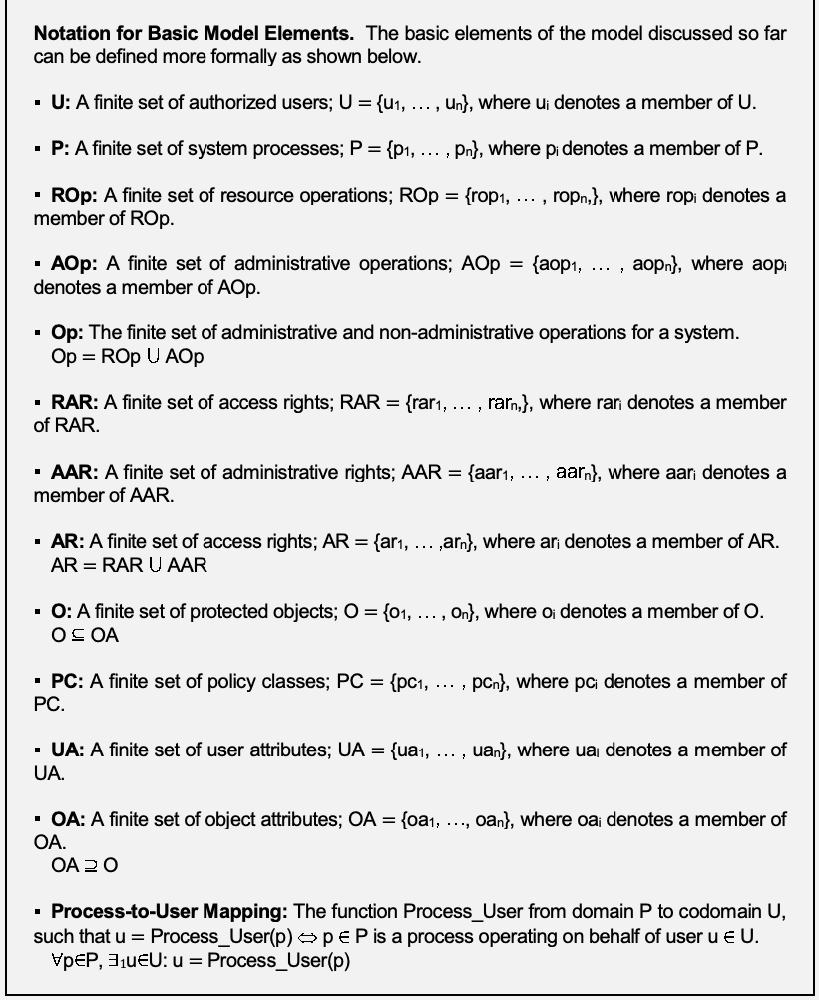
基本モデル要素の表記。ここまでに論じたモデルの基本要素は、以下に示すように、より形式的に定義できます。
•U: A finite set of authorized users; \(U = \{u_1, \ldots, u_n\}\), where \(u_i\) denotes a member of U.
•U: 認可されたユーザーの有限集合。\(U = \{u_1, \ldots, u_n\}\)。ここで \(u_i\) は U の要素を表します。
•P: A finite set of system processes; \(P = \{p_1, \ldots, p_n\}\), where \(p_i\) denotes a member of P.
•P: システムプロセスの有限集合。\(P = \{p_1, \ldots, p_n\}\)。ここで \(p_i\) は P の要素を表します。
•ROp: A finite set of resource operations; \(\mathrm{ROp} = \{\mathrm{rop}_1, \ldots, \mathrm{rop}_{n,}\}\), where \(\mathrm{rop}_i\) denotes a member of ROp.
•ROp: 資源操作の有限集合。\(\mathrm{ROp} = \{\mathrm{rop}_1, \ldots, \mathrm{rop}_{n,}\}\)。ここで \(\mathrm{rop}_i\) は ROp の要素を表します。
•AOp: A finite set of administrative operations; \(\mathrm{AOp} = \{\mathrm{aop}_1, \ldots, \mathrm{aop}_n\}\), where \(\mathrm{aop}_i\) denotes a member of AOp.
•AOp: 管理操作の有限集合。\(\mathrm{AOp} = \{\mathrm{aop}_1, \ldots, \mathrm{aop}_n\}\)。ここで \(\mathrm{aop}_i\) は AOp の要素を表します。
•Op: The finite set of administrative and non-administrative operations for a system.
\(\mathrm{Op} = \mathrm{ROp} \cup \mathrm{AOp}\)
•Op: システムの管理操作と非管理操作の有限集合。
\(\mathrm{Op} = \mathrm{ROp} \cup \mathrm{AOp}\)
•RAR: A finite set of access rights; \(\mathrm{RAR} = \{\mathrm{rar}_1, \ldots, \mathrm{rar}_{n,}\}\), where \(\mathrm{rar}_i\) denotes a member of RAR.
•RAR: アクセス権の有限集合。\(\mathrm{RAR} = \{\mathrm{rar}_1, \ldots, \mathrm{rar}_{n,}\}\)。ここで \(\mathrm{rar}_i\) は RAR の要素を表します。
•AAR: A finite set of administrative rights; \(\mathrm{AAR} = \{\mathrm{aar}_1, \ldots, \mathrm{aar}_n\}\), where \(\mathrm{aar}_i\) denotes a member of AAR.
•AAR: 管理権の有限集合。\(\mathrm{AAR} = \{\mathrm{aar}_1, \ldots, \mathrm{aar}_n\}\)。ここで \(\mathrm{aar}_i\) は AAR の要素を表します。
•AR: A finite set of access rights; \(\mathrm{AR} = \{\mathrm{ar}_1, \ldots, \mathrm{ar}_n\}\), where \(\mathrm{ar}_i\) denotes a member of AR.
\(\mathrm{AR} = \mathrm{RAR} \cup \mathrm{AAR}\)
•AR: アクセス権の有限集合。\(\mathrm{AR} = \{\mathrm{ar}_1, \ldots, \mathrm{ar}_n\}\)。ここで \(\mathrm{ar}_i\) は AR の要素を表します。
\(\mathrm{AR} = \mathrm{RAR} \cup \mathrm{AAR}\)
•O: A finite set of protected objects; \(O = \{o_1, \ldots, o_n\}\), where \(o_i\) denotes a member of O.
\(O \subseteq \mathrm{OA}\)
•O: 保護対象オブジェクトの有限集合。\(O = \{o_1, \ldots, o_n\}\)。ここで \(o_i\) は O の要素を表します。
\(O \subseteq \mathrm{OA}\)
•PC: A finite set of policy classes; \(\mathrm{PC} = \{\mathrm{pc}_1, \ldots, \mathrm{pc}_n\}\), where \(\mathrm{pc}_i\) denotes a member of PC.
•PC: ポリシークラスの有限集合。\(\mathrm{PC} = \{\mathrm{pc}_1, \ldots, \mathrm{pc}_n\}\)。ここで \(\mathrm{pc}_i\) は PC の要素を表します。
•UA: A finite set of user attributes; \(\mathrm{UA} = \{\mathrm{ua}_1, \ldots, \mathrm{ua}_n\}\), where \(\mathrm{ua}_i\) denotes a member of UA.
•UA: ユーザー属性の有限集合。\(\mathrm{UA} = \{\mathrm{ua}_1, \ldots, \mathrm{ua}_n\}\)。ここで \(\mathrm{ua}_i\) は UA の要素を表します。
•OA: A finite set of object attributes; \(\mathrm{OA} = \{\mathrm{oa}_1, \ldots, \mathrm{oa}_n\}\), where \(\mathrm{oa}_i\) denotes a member of OA.
\(\mathrm{OA} \supseteq O\)
•OA: オブジェクト属性の有限集合。\(\mathrm{OA} = \{\mathrm{oa}_1, \ldots, \mathrm{oa}_n\}\)。ここで \(\mathrm{oa}_i\) は OA の要素を表します。
\(\mathrm{OA} \supseteq O\)
•Process-to-User Mapping: The function Process_User from domain P to codomain U, such that \(u = \mathrm{Process\_User}(p) \Leftrightarrow p \in P\) is a process operating on behalf of user \(u \in U\).
\(\forall p \in P, \exists_1 u \in U: u = \mathrm{Process\_User}(p)\)
•プロセスからユーザーへの写像: 定義域 P から余域 U への関数 Process_User。ここで、\(u = \mathrm{Process\_User}(p) \Leftrightarrow p \in P\) がユーザー \(u \in U\) に代わって動作するプロセスである、が成り立ちます。
\(\forall p \in P, \exists_1 u \in U: u = \mathrm{Process\_User}(p)\)
3.2 Assignment Relation
3.2 割当て関係
Assignments are the means used to express relationships between users and user attributes, objects and object attributes, user (object) attributes and user (object) attributes, and user (object) attributes and policy classes. The assignment relation is a binary relation on the set of policy elements, PE, where PE = U ⋃ UA ⋃ OA ⋃ PC and O ⊆ OA. An individual assignment can be expressed as either (x, y) ∈ ASSIGN or x ASSIGN y, on elements x, y of PE. The assignment relation is defined as follows:
割当ては、ユーザーとユーザー属性、オブジェクトとオブジェクト属性、ユーザー（オブジェクト）属性とユーザー（オブジェクト）属性、およびユーザー（オブジェクト）属性とポリシークラスの間の関係を表現するために使用される手段です。割当て関係は、ポリシー要素の集合 PE 上の二項関係であり、PE = U ⋃ UA ⋃ OA ⋃ PC かつ O ⊆ OA です。個々の割当ては、PE の要素 x、y について、(x, y) ∈ ASSIGN または x ASSIGN y のいずれかで表現できます。割当て関係は次のように定義されます。
\[\mathrm{ASSIGN} \subseteq (U\times\mathrm{UA}) \cup (\mathrm{UA}\times\mathrm{UA}) \cup (\mathrm{OA}\times\mathrm{OA}) \cup (\mathrm{UA}\times\mathrm{PC}) \cup (\mathrm{OA}\times\mathrm{PC})\]
\[\mathrm{ASSIGN} \subseteq (U\times\mathrm{UA}) \cup (\mathrm{UA}\times\mathrm{UA}) \cup (\mathrm{OA}\times\mathrm{OA}) \cup (\mathrm{UA}\times\mathrm{PC}) \cup (\mathrm{OA}\times\mathrm{PC})\]
The assignment relation must satisfy the following properties:
割当て関係は、次の性質を満たさなければなりません。
•It is irreflexive; i.e., for all x, y in PE, \(x \mathrel{\mathrm{ASSIGN}} y \Rightarrow x \neq y\).
•非反射的です。すなわち、PE のすべての x、y について、\(x \mathrel{\mathrm{ASSIGN}} y \Rightarrow x \neq y\) です。
•It is acyclic; i.e., there does not exist a finite sequence of distinct elements \(\langle x_{1},x_{2},\ldots,x_{n}\rangle\) in PE, such that \(n > 1 \land\) for all i in \(\{1,2,\ldots,n-1\}\), \(x_{i} \mathrel{\mathrm{ASSIGN}} x_{i+1} \land x_{n} \mathrel{\mathrm{ASSIGN}} x_{1}\).
•非巡回です。すなわち、PE の異なる要素の有限列 \(\langle x_{1},x_{2},\ldots,x_{n}\rangle\) で、\(n > 1 \land\) かつ \(\{1,2,\ldots,n-1\}\) のすべての i について \(x_{i} \mathrel{\mathrm{ASSIGN}} x_{i+1} \land x_{n} \mathrel{\mathrm{ASSIGN}} x_{1}\) を満たすものは存在しません。
•A sequence of assignments (i.e., a path) must exist from every element in U, UA, and OA to some element in PC; i.e., for all elements w in U ⋃ UA ⋃ OA, there exists a sequence of distinct elements \(\langle x_{1},x_{2},\ldots,x_{n}\rangle\) in PE, such that \(n > 1 \land x_{1} = w \land x_{n} \in \mathrm{PC} \land\) for all i in {1,2,...,n-1}, \(x_{i} \mathrel{\mathrm{ASSIGN}} x_{i+1}\).
•U、UA、OA のすべての要素から PC のいずれかの要素への割当ての列（すなわちパス）が存在しなければなりません。すなわち、U ⋃ UA ⋃ OA のすべての要素 w について、PE の異なる要素からなる列 \(\langle x_{1},x_{2},\ldots,x_{n}\rangle\) で、\(n > 1 \land x_{1} = w \land x_{n} \in \mathrm{PC} \land\) かつ {1,2,...,n-1} のすべての i について \(x_{i} \mathrel{\mathrm{ASSIGN}} x_{i+1}\) となるものが存在します。
•An object attribute cannot be assigned to an object; i.e., for all x ∈ OA, all y ∈ PE, an assignment x ASSIGN y implies that y ∉ O.
•オブジェクト属性をオブジェクトに割り当てることはできません。すなわち、すべての x ∈ OA、すべての y ∈ PE について、割当て x ASSIGN y は y ∉ O を意味します。
The assignment relation can be represented as a directed graph or digraph G = (PE, ASSIGN), where PE are the vertices of the graph, and each tuple (x, y) of ASSIGN represents a direct edge or arc that originates at x and terminates at y. Within this report, a digraph of policy elements and the assignments among them is referred to as a policy element diagram and is a key concept underlying the PM model. A policy graph is typically oriented in a top-down fashion with the head of an arrow (i.e., its termination) pointing downward. The simplified policy element diagram of Figure 2 illustrates assignments between each type of policy element.
割当て関係は、有向グラフ G = (PE, ASSIGN) として表現できます。ここで PE はグラフの頂点であり、ASSIGN の各組 (x, y) は、x から始まり y で終わる有向辺または弧を表します。本報告書では、ポリシー要素とそれらの間の割当てからなる有向グラフを、ポリシー要素図と呼び、PM モデルの根底にある重要な概念です。ポリシーグラフは通常、矢印の先端（すなわち終端）が下を向く、上から下への向きで描かれます。図 2 の簡略化したポリシー要素図は、各種類のポリシー要素間の割当てを示しています。
![Directed graph of policy elements arranged top-down. Objects o1 and o2 are assigned to object attributes oa1 and oa2 respectively; oa1 and oa2 are assigned to oa20, which is assigned to oa21. Users u1 and u2 are assigned to user attributes ua1 and ua2 respectively; ua1 is assigned to ua11 and ua12, and ua2 is assigned to ua12. ua11, ua12 and oa21 are assigned to policy class pc1. Braces on the sides label the levels "Users", "User ttributes" [sic], "Objects", "Object Attributes" and "Policy Classes".](assets/ir-7987r1/p0022-figure-01.png)
ポリシー要素を上から下へ並べた有向グラフです。オブジェクトo1とo2はそれぞれオブジェクト属性oa1とoa2に割り当てられ、oa1とoa2はoa20に、oa20はoa21に割り当てられています。ユーザーu1とu2はそれぞれユーザー属性ua1とua2に割り当てられ、ua1はua11とua12に、ua2はua12に割り当てられています。ua11、ua12、oa21はポリシークラスpc1に割り当てられています。左右の中括弧は「Users」（ユーザー）、「User Attributes」（ユーザー属性）、「Objects」（オブジェクト）、「Object Attributes」（オブジェクト属性）、「Policy Classes」（ポリシークラス）の各層を示しています。
Figure 2: Simplified Policy Element Diagram
図 2: 簡略化したポリシー要素図
The transitive closure of the relation ASSIGN is written as \(\mathrm{ASSIGN}^{+}\). The expression \(x \mathrel{\mathrm{ASSIGN}^{+}} y\) denotes that a series of assignments exists from x to y. An equivalent expression is \((x, y) \in \mathrm{ASSIGN}^{+}\). For all x and y in PE, (x, y) is a member of \(\mathrm{ASSIGN}^{+}\), if and only if (iff) there exists a sequence of distinct elements \(\langle x_{1}, x_{2}, \ldots,x_{n}\rangle\) in PE, such that \(n > 1 \land\) for all i in {1,2,...,n-1}, \(x_{i} \mathrel{\mathrm{ASSIGN}} x_{i+1} \land x=x_{1} \land y=x_{n}\). For example, in Figure 2, a pair of assignments exists from \(u_{1}\) to \(\mathrm{ua}_{1}\) and from \(\mathrm{ua}_{1}\) onto \(\mathrm{ua}_{12}\), which can be expressed as \(u_{1} \mathrel{\mathrm{ASSIGN}^{+}} \mathrm{ua}_{12}\). Transitive closure is synonymous with the concept of containment, which is an important concept in policy specification and management. For any x and y in PE, x is said to be contained by y, or y is said to contain x, iff \(x \mathrel{\mathrm{ASSIGN}^{+}} y\). For instance, in the aforementioned example, the user attribute \(\mathrm{ua}_{12}\) can be said to contain the policy elements \(u_{1}\), \(u_{2}\), \(\mathrm{ua}_{1}\), \(\mathrm{ua}_{2}\), while user attribute \(\mathrm{ua}_{11}\) can be said to contain the policy elements \(u_{1}\), \(\mathrm{ua}_{1}\).
関係 ASSIGN の推移閉包は \(\mathrm{ASSIGN}^{+}\) と書きます。式 \(x \mathrel{\mathrm{ASSIGN}^{+}} y\) は、x から y への一連の割当てが存在することを表します。等価な式は \((x, y) \in \mathrm{ASSIGN}^{+}\) です。PE のすべての x と y について、(x, y) が \(\mathrm{ASSIGN}^{+}\) の要素であるのは、PE の異なる要素の列 \(\langle x_{1}, x_{2}, \ldots,x_{n}\rangle\) が存在し、\(n > 1 \land\) かつ {1,2,...,n-1} のすべての i について \(x_{i} \mathrel{\mathrm{ASSIGN}} x_{i+1} \land x=x_{1} \land y=x_{n}\) を満たす場合、かつその場合に限られます（iff）。たとえば図 2 では、\(u_{1}\) から \(\mathrm{ua}_{1}\) への割当てと、\(\mathrm{ua}_{1}\) から \(\mathrm{ua}_{12}\) への割当ての対が存在し、これは \(u_{1} \mathrel{\mathrm{ASSIGN}^{+}} \mathrm{ua}_{12}\) と表現できます。推移閉包は包含の概念と同義であり、これはポリシーの仕様化と管理における重要な概念です。PE の任意の x と y について、x が y に包含される、または y が x を包含するのは、\(x \mathrel{\mathrm{ASSIGN}^{+}} y\) の場合、かつその場合に限られます。たとえば、前述の例では、ユーザー属性 \(\mathrm{ua}_{12}\) はポリシー要素 \(u_{1}\)、\(u_{2}\)、\(\mathrm{ua}_{1}\)、\(\mathrm{ua}_{2}\) を包含し、ユーザー属性 \(\mathrm{ua}_{11}\) はポリシー要素 \(u_{1}\)、\(\mathrm{ua}_{1}\) を包含すると言えます。
Occasionally, it is useful to express that one element in PE is contained by another through a series of zero or more assignments. The reflexive and transitive closure of the relation ASSIGN, denoted as \(\mathrm{ASSIGN}^{*}\), is a convenient way to represent this situation. That is, for any x and y in PE, the expressions \(x \mathrel{\mathrm{ASSIGN}^{*}} y\) or \((x, y) \in \mathrm{ASSIGN}^{*}\) are equivalent ways of stating that y contains x or is itself the element x.
PE のある要素が、0 回以上の割当ての列を通じて別の要素に包含されることを表現すると便利な場合があります。関係 ASSIGN の反射的推移閉包は \(\mathrm{ASSIGN}^{*}\) と表され、この状況を表現する便利な方法です。すなわち、PE の任意の x と y について、式 \(x \mathrel{\mathrm{ASSIGN}^{*}} y\) または \((x, y) \in \mathrm{ASSIGN}^{*}\) は、y が x を包含する、または y 自身が要素 x であると述べる等価な方法です。
Several helpful functions that make use of the transitive closure and the reflexive and transitive closure relations can now be defined. They are the Users, Objects, and Elements functions. The Users function is a total function from UA to \(2^{U}\), which represents the mapping from a user attribute to the set of users that are contained by that user attribute. Intuitively, the function Users(ua) returns the set of users that are contained by or possess the characteristics of the user attribute ua. The function is defined as \(\mathrm{Users} \subseteq \mathrm{UA} \times 2^{U}\), where the following property holds:
推移閉包と反射的推移閉包の関係を利用する、いくつかの有用な関数を定義できます。それらは Users 関数、Objects 関数、Elements 関数です。Users 関数は UA から \(2^{U}\) への全関数であり、ユーザー属性から、そのユーザー属性に包含されるユーザーの集合への写像を表します。直観的には、関数 Users(ua) は、ユーザー属性 ua に包含される、または ua の特性を持つユーザーの集合を返します。この関数は \(\mathrm{Users} \subseteq \mathrm{UA} \times 2^{U}\) として定義され、次の性質が成り立ちます。
\[\forall\mathrm{ua} \in \mathrm{UA}, \forall x \in 2^{U}: ((\mathrm{ua}, x) \in \mathrm{Users} \Leftrightarrow (\forall u \in U: (u \in x \Leftrightarrow (u, \mathrm{ua}) \in \mathrm{ASSIGN}^{+}))).\]
\[\forall\mathrm{ua} \in \mathrm{UA}, \forall x \in 2^{U}: ((\mathrm{ua}, x) \in \mathrm{Users} \Leftrightarrow (\forall u \in U: (u \in x \Leftrightarrow (u, \mathrm{ua}) \in \mathrm{ASSIGN}^{+}))).\]
Similarly, the Objects function represents the mapping from an object attribute to the set of objects that are contained by that object attribute. Intuitively, the function Objects(oa) returns the set of objects that are contained by or possess the characteristics of the object attribute oa. Since all objects are, by definition, members of the set of object attributes, the function must also include the domain of the function within its range, in such instances. The Objects function is a total function from OA to \(2^{O}\), which is defined as \(\mathrm{Objects} \subseteq \mathrm{OA} \times 2^{O}\), where the following property holds:
同様に、Objects 関数は、オブジェクト属性から、そのオブジェクト属性に包含されるオブジェクトの集合への写像を表します。直観的には、関数 Objects(oa) は、オブジェクト属性 oa に包含される、または oa の特性を持つオブジェクトの集合を返します。定義により、すべてのオブジェクトはオブジェクト属性の集合の要素であるため、このような場合には、この関数の値域に関数の定義域も含めなければなりません。Objects 関数は OA から \(2^{O}\) への全関数であり、\(\mathrm{Objects} \subseteq \mathrm{OA} \times 2^{O}\) として定義され、次の性質が成り立ちます。
\[\forall\mathrm{oa} \in \mathrm{OA}, \forall x \in 2^{O}: ((\mathrm{oa}, x) \in \mathrm{Objects} \Leftrightarrow (\forall o \in O: (o \in x \Leftrightarrow (o, \mathrm{oa}) \in \mathrm{ASSIGN}^{*})))\]
\[\forall\mathrm{oa} \in \mathrm{OA}, \forall x \in 2^{O}: ((\mathrm{oa}, x) \in \mathrm{Objects} \Leftrightarrow (\forall o \in O: (o \in x \Leftrightarrow (o, \mathrm{oa}) \in \mathrm{ASSIGN}^{*})))\]
The Elements function generalizes this concept for any policy element. The Elements function is a total function from PE to \(2^{\mathrm{PE}}\), which represents the mapping from a given policy element to the set of policy elements that includes the policy element and all the policy elements contained by that policy element. The function is defined as \(\mathrm{Elements} \subseteq \mathrm{PE} \times 2^{\mathrm{PE}}\), where the following property holds:
Elements 関数は、この概念を任意のポリシー要素へ一般化します。Elements 関数は PE から \(2^{\mathrm{PE}}\) への全関数であり、与えられたポリシー要素から、そのポリシー要素自身とそれに包含されるすべてのポリシー要素を含むポリシー要素の集合への写像を表します。この関数は \(\mathrm{Elements} \subseteq \mathrm{PE} \times 2^{\mathrm{PE}}\) として定義され、次の性質が成り立ちます。
\[\forall\mathrm{pe} \in \mathrm{PE}, \forall x \in 2^{\mathrm{PE}}: ((\mathrm{pe}, x) \in \mathrm{Elements} \Leftrightarrow (\forall e \in \mathrm{PE}: (e \in x \Leftrightarrow (e, \mathrm{pe}) \in \mathrm{ASSIGN*})))\]
\[\forall\mathrm{pe} \in \mathrm{PE}, \forall x \in 2^{\mathrm{PE}}: ((\mathrm{pe}, x) \in \mathrm{Elements} \Leftrightarrow (\forall e \in \mathrm{PE}: (e \in x \Leftrightarrow (e, \mathrm{pe}) \in \mathrm{ASSIGN*})))\]
3.2.1 User and Object Assignments
3.2.1 ユーザーとオブジェクトの割当て
A user may be assigned to one or more user attributes. The assignment u ASSIGN ua means that the user u is assigned to or contained by the user attribute ua. It also denotes that user u takes on or acquires the properties held or represented by the attribute ua. The properties of a user attribute are defined as the capabilities for and constraints against accessing certain types of objects.
ユーザーは、1 つ以上のユーザー属性に割り当てられることがあります。割当て u ASSIGN ua は、ユーザー u がユーザー属性 ua に割り当てられている、または包含されていることを意味します。これはまた、ユーザー u が属性 ua の持つ、または表す特性を帯びる、あるいは獲得することも表します。ユーザー属性の特性は、特定の種類のオブジェクトへのアクセスに関するケーパビリティと制約として定義されます。
Similarly, an object may be assigned to one or more object attributes through one or more object-to-attribute assignments, represented as a binary relation from O to OA. The assignment o ASSIGN oa means that that the object o is assigned to or contained by the object attribute oa and takes on or acquires the properties held by the attribute oa. The properties of an object attribute are defined as the capabilities and constraints allotted to users, which govern access to contained objects (i.e., the access modes allowed and denied to specific users).
同様に、オブジェクトは、O から OA への二項関係として表される 1 つ以上のオブジェクトから属性への割当てを通じて、1 つ以上のオブジェクト属性に割り当てられることがあります。割当て o ASSIGN oa は、オブジェクト o がオブジェクト属性 oa に割り当てられている、または包含されており、属性 oa の持つ特性を帯びる、あるいは獲得することを意味します。オブジェクト属性の特性は、包含されるオブジェクトへのアクセスを統制する、ユーザーに割り当てられたケーパビリティと制約（すなわち、特定のユーザーに許可・拒否されるアクセスモード）として定義されます。
3.2.2 Attribute Assignments
3.2.2 属性の割当て
A user (object) attribute may be assigned to one or more other user (object) attributes. Assignments between user (object) attributes are, by definition, restricted to attributes of the same type (i.e., either all user attributes or object attributes). Containment, as it applies to assignments among attributes, denotes that a user (object) attribute takes on or acquires the properties held or represented by each user (object) attribute that contains it. Containment allows each attribute to augment the properties conferred directly to it with the properties held by every attribute that contains it. Recall that an attribute or other policy element x is said to be contained by another attribute or policy element y, iff \(x \mathrel{\mathrm{ASSIGN}^{+}} y\). For example, focusing exclusively on the object attributes in Figure 2, the following expressions are true: \(\mathrm{oa}_{1} \mathrel{\mathrm{ASSIGN}^{+}} \mathrm{oa}_{20}\), \(\mathrm{oa}_{2} \mathrel{\mathrm{ASSIGN}^{+}} \mathrm{oa}_{20}\), \(\mathrm{oa}_{1} \mathrel{\mathrm{ASSIGN}^{+}} \mathrm{oa}_{21}\), \(\mathrm{oa}_{2} \mathrel{\mathrm{ASSIGN}^{+}} \mathrm{oa}_{21}\), and \(\mathrm{oa}_{20} \mathrel{\mathrm{ASSIGN}^{+}} \mathrm{oa}_{21}\). With respect to these object attributes, both \(\mathrm{oa}_{1}\) and \(\mathrm{oa}_{2}\) are contained by \(\mathrm{oa}_{20}\) and acquire the properties of \(\mathrm{oa}_{20}\), and \(\mathrm{oa}_{1}\), \(\mathrm{oa}_{2}\), and \(\mathrm{oa}_{20}\) are contained by \(\mathrm{oa}_{21}\) and likewise acquire its properties.
ユーザー（オブジェクト）属性は、1 つ以上のほかのユーザー（オブジェクト）属性に割り当てられることがあります。属性間の割当ては、定義により、同じ種類の属性（すなわち、すべてユーザー属性、またはすべてオブジェクト属性）に限られます。属性間の割当てに適用される包含は、ユーザー（オブジェクト）属性が、自らを包含する各ユーザー（オブジェクト）属性の持つ、または表す特性を帯びる、あるいは獲得することを表します。包含により、各属性は、直接与えられた特性に、自らを包含するすべての属性が持つ特性を加えることができます。属性またはその他のポリシー要素 x が、別の属性またはポリシー要素 y に包含されるのは、\(x \mathrel{\mathrm{ASSIGN}^{+}} y\) の場合、かつその場合に限られることを思い出してください。たとえば、図 2 のオブジェクト属性だけに注目すると、次の式が真になります。\(\mathrm{oa}_{1} \mathrel{\mathrm{ASSIGN}^{+}} \mathrm{oa}_{20}\)、\(\mathrm{oa}_{2} \mathrel{\mathrm{ASSIGN}^{+}} \mathrm{oa}_{20}\)、\(\mathrm{oa}_{1} \mathrel{\mathrm{ASSIGN}^{+}} \mathrm{oa}_{21}\)、\(\mathrm{oa}_{2} \mathrel{\mathrm{ASSIGN}^{+}} \mathrm{oa}_{21}\)、および \(\mathrm{oa}_{20} \mathrel{\mathrm{ASSIGN}^{+}} \mathrm{oa}_{21}\)。これらのオブジェクト属性に関しては、\(\mathrm{oa}_{1}\) と \(\mathrm{oa}_{2}\) はどちらも \(\mathrm{oa}_{20}\) に包含され、\(\mathrm{oa}_{20}\) の特性を獲得します。また、\(\mathrm{oa}_{1}\)、\(\mathrm{oa}_{2}\)、\(\mathrm{oa}_{20}\) は \(\mathrm{oa}_{21}\) に包含され、同様にその特性を獲得します。
Assignments among attributes have an effect on the way users and objects contained by those attributes are treated within the PM model. A user x that is contained by user attribute y gains the properties that are both assigned to and acquired by attribute y. Similarly, an object x that is contained by object attribute y, gains the properties that are both assigned to and acquired by attribute y.
属性間の割当ては、それらの属性に包含されるユーザーとオブジェクトが PM モデル内でどのように扱われるかに影響します。ユーザー属性 y に包含されるユーザー x は、属性 y に割り当てられた特性と、属性 y が獲得した特性の両方を得ます。同様に、オブジェクト属性 y に包含されるオブジェクト x は、属性 y に割り当てられた特性と、属性 y が獲得した特性の両方を得ます。
3.2.3 Policy Class Assignments
3.2.3 ポリシークラスの割当て
A user attribute or an object attribute may be assigned to one or more policy classes. As mentioned earlier, a policy class can be thought of as a container for policy elements and relationships that pertain to a specific policy; every policy element is contained by at least one policy class. Unlike attributes, however, a policy class cannot be assigned to any other policy class. In addition, since policy classes do not have properties associated with them, attributes assigned to a policy class do not acquire any properties from it.
ユーザー属性またはオブジェクト属性は、1 つ以上のポリシークラスに割り当てられることがあります。前述のとおり、ポリシークラスは、特定のポリシーに関するポリシー要素と関係のコンテナと考えることができ、すべてのポリシー要素は少なくとも 1 つのポリシークラスに包含されます。ただし、属性とは異なり、ポリシークラスをほかのポリシークラスに割り当てることはできません。さらに、ポリシークラスには関連付けられた特性がないため、ポリシークラスに割り当てられた属性は、そこから特性を獲得することはありません。
Policies can be constructed such that policy elements of one policy class are defined to be mutually exclusive from those of another policy class. That is, if a policy element x is contained by \(\mathrm{pc}_{1}\) in such a policy, it would be precluded from being contained by \(\mathrm{pc}_{2}\) or some other policy class. Policy elements can also be defined to be inclusive of more than one policy class. An access control policy can be characterized through a single policy class, multiple mutually exclusive policy classes, or multiple non-mutually exclusive policy classes.
あるポリシークラスのポリシー要素が、別のポリシークラスのポリシー要素と相互に排他的になるように、ポリシーを構成することができます。つまり、そのようなポリシーでポリシー要素 x が \(\mathrm{pc}_{1}\) に包含される場合、x が \(\mathrm{pc}_{2}\) またはほかのポリシークラスに包含されることは妨げられます。ポリシー要素が複数のポリシークラスに含まれるように定義することもできます。アクセス制御ポリシーは、単一のポリシークラス、相互に排他的な複数のポリシークラス、または相互に排他的でない複数のポリシークラスによって特徴付けられます。
Notation for Element Relationships. The relationships among elements of the PM model discussed so far can be defined more formally as shown below.
原本PDFの抜粋画像
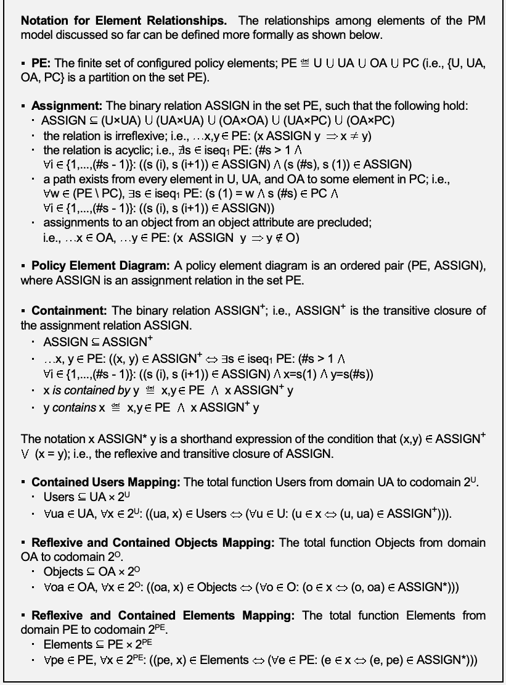
要素関係の表記。ここまでに論じた PM モデルの要素間の関係は、以下に示すように、より形式的に定義できます。
•PE: The finite set of configured policy elements; \(\mathrm{PE} \overset{\mathrm{def}}{=} U \cup \mathrm{UA} \cup \mathrm{OA} \cup \mathrm{PC}\) (i.e., {U, UA, OA, PC} is a partition on the set PE).
•PE: 設定されたポリシー要素の有限集合。\(\mathrm{PE} \overset{\mathrm{def}}{=} U \cup \mathrm{UA} \cup \mathrm{OA} \cup \mathrm{PC}\)（すなわち、{U, UA, OA, PC} は集合 PE の分割です）。
•Assignment: The binary relation ASSIGN in the set PE, such that the following hold:
•割当て: 集合 PE 上の二項関係 ASSIGN。次が成り立ちます。
•\(\mathrm{ASSIGN} \subseteq (U\times\mathrm{UA}) \cup (\mathrm{UA}\times\mathrm{UA}) \cup (\mathrm{OA}\times\mathrm{OA}) \cup (\mathrm{UA}\times\mathrm{PC}) \cup (\mathrm{OA}\times\mathrm{PC})\)
•\(\mathrm{ASSIGN} \subseteq (U\times\mathrm{UA}) \cup (\mathrm{UA}\times\mathrm{UA}) \cup (\mathrm{OA}\times\mathrm{OA}) \cup (\mathrm{UA}\times\mathrm{PC}) \cup (\mathrm{OA}\times\mathrm{PC})\)
•the relation is irreflexive; i.e., \(\ldots x,y\in \mathrm{PE}: (x \mathrel{\mathrm{ASSIGN}} y \Rightarrow x \neq y)\)
•関係は非反射的です。すなわち、\(\ldots x,y\in \mathrm{PE}: (x \mathrel{\mathrm{ASSIGN}} y \Rightarrow x \neq y)\)
•the relation is acyclic; i.e., \(\nexists s \in \mathrm{iseq}_{1} \mathrm{PE}: (\# s > 1 \land \forall i \in \{1,...,(\# s - 1)\}: ((s (i), s (i+1)) \in \mathrm{ASSIGN}) \land (s (\# s), s (1)) \in \mathrm{ASSIGN})\)
•関係は非巡回です。すなわち、\(\nexists s \in \mathrm{iseq}_{1} \mathrm{PE}: (\# s > 1 \land \forall i \in \{1,...,(\# s - 1)\}: ((s (i), s (i+1)) \in \mathrm{ASSIGN}) \land (s (\# s), s (1)) \in \mathrm{ASSIGN})\)
•a path exists from every element in U, UA, and OA to some element in PC; i.e., \(\forall w \in (\mathrm{PE} \setminus \mathrm{PC}), \exists s \in \mathrm{iseq}_{1} \mathrm{PE}: (s (1) = w \land s (\# s) \in \mathrm{PC} \land \forall i \in \{1,...,(\# s - 1)\}: ((s (i), s (i+1)) \in \mathrm{ASSIGN}))\)
•PE の PC 以外のすべての要素から、PC のある要素への経路が存在します。すなわち、\(\forall w \in (\mathrm{PE} \setminus \mathrm{PC}), \exists s \in \mathrm{iseq}_{1} \mathrm{PE}: (s (1) = w \land s (\# s) \in \mathrm{PC} \land \forall i \in \{1,...,(\# s - 1)\}: ((s (i), s (i+1)) \in \mathrm{ASSIGN}))\)
•assignments to an object from an object attribute are precluded; i.e., \(\ldots x \in \mathrm{OA}, \ldots y \in \mathrm{PE}: (x \mathrel{\mathrm{ASSIGN}} y \Rightarrow y \notin O)\)
•オブジェクト属性からオブジェクトへの割当ては排除されます。すなわち、\(\ldots x \in \mathrm{OA}, \ldots y \in \mathrm{PE}: (x \mathrel{\mathrm{ASSIGN}} y \Rightarrow y \notin O)\)
•Policy Element Diagram: A policy element diagram is an ordered pair (PE, ASSIGN), where ASSIGN is an assignment relation in the set PE.
•ポリシー要素図: ポリシー要素図は、順序対 (PE, ASSIGN) です。ここで ASSIGN は集合 PE 上の割当て関係です。
•Containment: The binary relation \(\mathrm{ASSIGN}^{+}\); i.e., \(\mathrm{ASSIGN}^{+}\) is the transitive closure of the assignment relation ASSIGN.
•包含: 二項関係 \(\mathrm{ASSIGN}^{+}\)。すなわち、\(\mathrm{ASSIGN}^{+}\) は割当て関係 ASSIGN の推移閉包です。
•\(\mathrm{ASSIGN} \subseteq \mathrm{ASSIGN}^{+}\)
•\(\mathrm{ASSIGN} \subseteq \mathrm{ASSIGN}^{+}\)
•\(\ldots x, y \in \mathrm{PE}: ((x, y) \in \mathrm{ASSIGN}^{+} \Leftrightarrow \exists s \in \mathrm{iseq}_{1} \mathrm{PE}: (\# s > 1 \land \forall i \in \{1,...,(\# s - 1)\}: ((s (i), s (i+1)) \in \mathrm{ASSIGN}) \land x=s(1) \land y=s(\# s))\)
•\(\ldots x, y \in \mathrm{PE}: ((x, y) \in \mathrm{ASSIGN}^{+} \Leftrightarrow \exists s \in \mathrm{iseq}_{1} \mathrm{PE}: (\# s > 1 \land \forall i \in \{1,...,(\# s - 1)\}: ((s (i), s (i+1)) \in \mathrm{ASSIGN}) \land x=s(1) \land y=s(\# s))\)
•x is contained by y \(\overset{\mathrm{def}}{=} x,y\in \mathrm{PE} \land x \mathrel{\mathrm{ASSIGN}^{+}} y\)
•x は y に包含される \(\overset{\mathrm{def}}{=} x,y\in \mathrm{PE} \land x \mathrel{\mathrm{ASSIGN}^{+}} y\)
•y contains x \(\overset{\mathrm{def}}{=} x,y\in \mathrm{PE} \land x \mathrel{\mathrm{ASSIGN}^{+}} y\)
•y は x を包含する \(\overset{\mathrm{def}}{=} x,y\in \mathrm{PE} \land x \mathrel{\mathrm{ASSIGN}^{+}} y\)
The notation \(x \mathrm{ASSIGN*} y\) is a shorthand expression of the condition that \((x,y) \in \mathrm{ASSIGN}^{+} \lor (x = y)\); i.e., the reflexive and transitive closure of ASSIGN.
表記 \(x \mathrm{ASSIGN*} y\) は、条件 \((x,y) \in \mathrm{ASSIGN}^{+} \lor (x = y)\)、すなわち ASSIGN の反射的推移閉包の略記です。
•Contained Users Mapping: The total function Users from domain UA to codomain \(2^{U}\).
•包含されるユーザーの写像: 定義域 UA から余域 \(2^{U}\) への全関数 Users。
•\(\mathrm{Users} \subseteq \mathrm{UA} \times 2^{U}\)
•\(\mathrm{Users} \subseteq \mathrm{UA} \times 2^{U}\)
•\(\forall\mathrm{ua} \in \mathrm{UA}, \forall x \in 2^{U}: ((\mathrm{ua}, x) \in \mathrm{Users} \Leftrightarrow (\forall u \in U: (u \in x \Leftrightarrow (u, \mathrm{ua}) \in \mathrm{ASSIGN}^{+})))\).
•\(\forall\mathrm{ua} \in \mathrm{UA}, \forall x \in 2^{U}: ((\mathrm{ua}, x) \in \mathrm{Users} \Leftrightarrow (\forall u \in U: (u \in x \Leftrightarrow (u, \mathrm{ua}) \in \mathrm{ASSIGN}^{+})))\).
•Reflexive and Contained Objects Mapping: The total function Objects from domain OA to codomain \(2^{O}\).
•反射的かつ包含されるオブジェクトの写像: 定義域 OA から余域 \(2^{O}\) への全関数 Objects。
•\(\mathrm{Objects} \subseteq \mathrm{OA} \times 2^{O}\)
•\(\mathrm{Objects} \subseteq \mathrm{OA} \times 2^{O}\)
•\(\forall\mathrm{oa} \in \mathrm{OA}, \forall x \in 2^{O}: ((\mathrm{oa}, x) \in \mathrm{Objects} \Leftrightarrow (\forall o \in O: (o \in x \Leftrightarrow (o, \mathrm{oa}) \in \mathrm{ASSIGN*})))\)
•\(\forall\mathrm{oa} \in \mathrm{OA}, \forall x \in 2^{O}: ((\mathrm{oa}, x) \in \mathrm{Objects} \Leftrightarrow (\forall o \in O: (o \in x \Leftrightarrow (o, \mathrm{oa}) \in \mathrm{ASSIGN*})))\)
•Reflexive and Contained Elements Mapping: The total function Elements from domain PE to codomain \(2^{\mathrm{PE}}\).
•反射的かつ包含される要素の写像: 定義域 PE から余域 \(2^{\mathrm{PE}}\) への全関数 Elements。
•\(\mathrm{Elements} \subseteq \mathrm{PE} \times 2^{\mathrm{PE}}\)
•\(\mathrm{Elements} \subseteq \mathrm{PE} \times 2^{\mathrm{PE}}\)
•\(\forall\mathrm{pe} \in \mathrm{PE}, \forall x \in 2^{\mathrm{PE}}: ((\mathrm{pe}, x) \in \mathrm{Elements} \Leftrightarrow (\forall e \in \mathrm{PE}: (e \in x \Leftrightarrow (e, \mathrm{pe}) \in \mathrm{ASSIGN*})))\)
•\(\forall\mathrm{pe} \in \mathrm{PE}, \forall x \in 2^{\mathrm{PE}}: ((\mathrm{pe}, x) \in \mathrm{Elements} \Leftrightarrow (\forall e \in \mathrm{PE}: (e \in x \Leftrightarrow (e, \mathrm{pe}) \in \mathrm{ASSIGN*})))\)
3.3 Associations and Privilege Relations
3.3 関連付けと権限関係
Associations define relationships that represent the authorization of access rights between policy elements. Privileges are derived from association and assignment relations and as discussed later in this section, are shaped in part by the attribute to attribute assignments defined for a policy.
関連付けは、ポリシー要素間のアクセス権の認可を表す関係を定義します。権限は、関連付けと割当ての関係から導かれ、本節で後述するように、ポリシーに対して定義された属性間の割当てによって部分的に形作られます。
3.3.1 Associations
3.3.1 関連付け
The association relation is a policy setting that governs which users are authorized to access which objects and exercise which access rights. Associations are normally formed and rescinded through an according interface of the PM.
関連付け関係は、どのユーザーがどのオブジェクトにアクセスし、どのアクセス権を行使することを認可されるかを統制するポリシー設定です。関連付けは通常、PM の適切なインタフェースを通じて形成・取り消されます。
The ternary relation, \(\mathrm{ASSOCIATION} \subseteq \mathrm{UA} \times 2_{1}^{\mathrm{AR}} \times \mathrm{AT}\), where \(2_{1}^{\mathrm{AR}}\) represents the set of all subsets of AR, except for the empty set, and AT = OA ⋃ UA (i.e., the set of all attributes), defines the set of possible associations within a policy specification. An individual triple of ASSOCIATION, (ua, ars, at), may also be denoted as ua—ars—at. For each policy class containing attribute at, the association ua—ars—at specifies that all users contained by ua possess the authority denoted by ars over at and all policy elements contained by at.
三項関係 \(\mathrm{ASSOCIATION} \subseteq \mathrm{UA} \times 2_{1}^{\mathrm{AR}} \times \mathrm{AT}\) は、ポリシー仕様内で可能な関連付けの集合を定義します。ここで \(2_{1}^{\mathrm{AR}}\) は、空集合を除く AR のすべての部分集合の集合を表し、AT = OA ⋃ UA（すなわちすべての属性の集合）です。ASSOCIATION の個々の 3 つ組 (ua, ars, at) は、ua—ars—at と表記することもできます。属性 at を含む各ポリシークラスについて、関連付け ua—ars—at は、ua に包含されるすべてのユーザーが、at および at に包含されるすべてのポリシー要素に対して、ars で示される権限を持つことを規定します。
Note that attributes appearing within a relation, such as the association relation, often serve as referents. A referent attribute is treated as a designator or representative for the policy elements it contains and possibly the attribute itself, depending on the semantics of the relation. Each referent represents a policy graph containing all policy elements from which the referent is reachable through one or more assignments, and affects all relationships bound to those elements.
関連付け関係などの関係の中に現れる属性は、しばしば指示対象として機能することに注意してください。指示対象属性は、それが包含するポリシー要素と、関係の意味によってはその属性自身を指す指示子または代表として扱われます。各指示対象は、1 回以上の割当てを通じて指示対象に到達できるすべてのポリシー要素を含むポリシーグラフを表し、それらの要素に結び付けられたすべての関係に影響します。
Within the context of an association, (ua, ars, at), the third term, attribute at, is treated as a referent for the policy elements within the section of the policy element diagram rooted at the attribute, as well as itself. Similarly, the first term, attribute ua, is treated as a referent for the users and user attributes within the section of the policy element diagram rooted at ua. Although a referent potentially represents many policy elements and relationships, an access right may be pertinent to only a subset of the policy elements that are represented by the referent. That is, an access right might be relevant for one or more of the policy elements a referent attribute contains, or the access right might have relevance only to the attribute itself—it depends entirely on the access right. For example, an association involving r and w access rights on an object attribute are relevant for the objects contained by the attribute, but not for the attribute or contained attributes.
関連付け (ua, ars, at) の文脈では、第 3 項の属性 at は、at を根とするポリシー要素図の部分内のポリシー要素と、at 自身の指示対象として扱われます。同様に、第 1 項の属性 ua は、ua を根とするポリシー要素図の部分内のユーザーとユーザー属性の指示対象として扱われます。指示対象は多くのポリシー要素と関係を表し得ますが、アクセス権は、指示対象が表すポリシー要素のうちの一部にのみ関係する場合があります。つまり、アクセス権は、指示対象属性が包含するポリシー要素の 1 つ以上に関係する場合もあれば、属性自身にのみ関係する場合もあります。これはアクセス権によって完全に決まります。たとえば、オブジェクト属性に対する r および w のアクセス権を伴う関連付けは、その属性に包含されるオブジェクトには関係しますが、その属性自身や包含される属性には関係しません。
Although not mandatory, as a rule of practice, specifying associations that involve resource access rights separately from associations that involve administrative access rights is advised. One reason for segregating associations this way is that a different perspective applies to each type. Resource associations do not authorize changes to policy and are directed mainly at the actions of ordinary users, while administrative associations are more complex, since they allow policy alterations to occur, and are directed mainly at policy authorities. Another difference relates to access requests: each resource operation is synonymous with and authorizable via a single resource access right (e.g., a “read” operation requires an “r” access right), authorization for an administrative operation, however, often requires possession of multiple administrative access rights.
必須ではありませんが、実務上の原則として、資源アクセス権を含む関連付けは、管理アクセス権を含む関連付けとは別に規定することが推奨されます。関連付けをこのように分離する理由の 1 つは、それぞれの種類に異なる視点が適用されることです。資源の関連付けはポリシーの変更を認可せず、主に一般ユーザーの行為を対象とします。一方、管理上の関連付けは、ポリシーの変更を可能にするため、より複雑であり、主にポリシーの権限者を対象とします。もう 1 つの違いはアクセス要求に関するものです。各資源操作は 1 つの資源アクセス権と同義であり、そのアクセス権を通じて認可できます（たとえば、「read」操作には「r」アクセス権が必要です）。しかし、管理操作の認可には、複数の管理アクセス権の保有が必要になることがよくあります。
Any association tuple, \((\mathrm{ua}, \{\mathrm{rar}_{i}, \mathrm{rar}_{j}, \ldots , \mathrm{rar}_{m}, \mathrm{aar}_{k}, \mathrm{aar}_{l}, \ldots , \mathrm{aar}_{n}\}, \mathrm{at})\), whose access right set is mixed with members that belong to RAR and AAR, can be represented as a pair of tuples, \((\mathrm{ua}, \{\mathrm{rar}_{i}, \mathrm{rar}_{j}, \ldots , \mathrm{rar}_{m}\}, \mathrm{at})\) and \((\mathrm{ua}, \{\mathrm{aar}_{k}, \mathrm{aar}_{l}, \ldots , \mathrm{aar}_{n}\}, \mathrm{at})\), without loss of meaning or function. When the access rights of associations pertain exclusively to either object resources or the data elements and relations that make up policy, the association relation can be expressed in two parts as follows: \(\mathrm{ASSOCIATION} \subseteq (\mathrm{UA} \times 2_{1}^{\mathrm{RAR}} \times \mathrm{AT}) \cup (\mathrm{UA} \times 2_{1}^{\mathrm{AAR}} \times \mathrm{AT})\).
アクセス権の集合が RAR と AAR に属する要素の混在する関連付けの組 \((\mathrm{ua}, \{\mathrm{rar}_{i}, \mathrm{rar}_{j}, \ldots , \mathrm{rar}_{m}, \mathrm{aar}_{k}, \mathrm{aar}_{l}, \ldots , \mathrm{aar}_{n}\}, \mathrm{at})\) は、意味や機能を失うことなく、2 つの組 \((\mathrm{ua}, \{\mathrm{rar}_{i}, \mathrm{rar}_{j}, \ldots , \mathrm{rar}_{m}\}, \mathrm{at})\) と \((\mathrm{ua}, \{\mathrm{aar}_{k}, \mathrm{aar}_{l}, \ldots , \mathrm{aar}_{n}\}, \mathrm{at})\) として表現できます。関連付けのアクセス権が、オブジェクト資源、またはポリシーを構成するデータ要素と関係のいずれか一方にのみ関わる場合、関連付け関係は次のように 2 つの部分で表現できます。\(\mathrm{ASSOCIATION} \subseteq (\mathrm{UA} \times 2_{1}^{\mathrm{RAR}} \times \mathrm{AT}) \cup (\mathrm{UA} \times 2_{1}^{\mathrm{AAR}} \times \mathrm{AT})\)。
3.3.2 Containment and Attribute Properties
3.3.2 包含と属性の特性
Assignments among attributes affect the interpretation of associations. As mentioned earlier, the inherent properties of an attribute include not only those conferred directly to the attribute, but also the properties it acquires from every attribute in which it is contained. A simple example to demonstrate containment among attributes is given in Figure 3.
属性間の割当ては、関連付けの解釈に影響します。前述のとおり、属性の固有の特性には、その属性に直接与えられたものだけでなく、その属性を包含するすべての属性から獲得するものも含まれます。属性間の包含を示す簡単な例を図 3 に示します。
Figure 3 depicts an authorization graph containing the following policy elements: \(U = \{u_{1}, u_{2}, u_{3}\}\), \(O = \{o_{1}, o_{2}, o_{3}\}\), UA = {Group1, Group2, Division}, OA = {Project1, Project2, Projects} ⋃ O, and PC = {OU}. An authorization graph is a policy element diagram annotated with associations and other relationships that exist between policy elements. Associations are illustrated using dotted, downward-arcing connectors between the elements involved in each association. The following three resource associations involving access rights that represent the authority to read or write (i.e., {r, w}) are shown in Figure 3: (Group1, {w}, Project1), (Group2, {w}, Project2), and (Division, {r}, Projects). The inherent properties of each user attribute in the diagram can be determined, by combining those properties granted directly to the attribute through a defined association with those acquired indirectly through containment by an attribute possessing the property, as follows:
図 3 は、次のポリシー要素を含む認可グラフを示しています。\(U = \{u_{1}, u_{2}, u_{3}\}\)、\(O = \{o_{1}, o_{2}, o_{3}\}\)、UA = {Group1, Group2, Division}、OA = {Project1, Project2, Projects} ⋃ O、PC = {OU}。認可グラフは、ポリシー要素間に存在する関連付けやその他の関係を注記したポリシー要素図です。関連付けは、各関連付けに関わる要素の間を結ぶ、下向きに弧を描く点線のコネクタで示されます。図 3 には、読み取りまたは書き込みの権限（すなわち {r, w}）を表すアクセス権を含む、次の 3 つの資源の関連付けが示されています。(Group1, {w}, Project1)、(Group2, {w}, Project2)、(Division, {r}, Projects) です。図中の各ユーザー属性の固有の特性は、定義された関連付けを通じて属性に直接与えられた特性と、その特性を持つ属性による包含を通じて間接的に獲得した特性を組み合わせることで、次のように決定できます。
•Group1 is granted the capability of ({w}, Project1) through an association and acquires the capability of ({r}, Projects) from Division through an assignment. The inherent properties (i.e., capabilities) of Group1, therefore, are ({w}, Project1) and ({r}, Projects).
•Group1 は、関連付けによって ({w}, Project1) のケーパビリティを与えられ、割当てによって Division から ({r}, Projects) のケーパビリティを獲得します。したがって、Group1 の固有の特性（すなわちケーパビリティ）は、({w}, Project1) と ({r}, Projects) です。
•Group2 is granted the capability of ({w}, Project2) and acquires the capability of ({r}, Projects) from Division, resulting in the inherent properties ({w}, Project2) and ({r}, Projects).
•Group2 は ({w}, Project2) のケーパビリティを与えられ、Division から ({r}, Projects) のケーパビリティを獲得するため、固有の特性は ({w}, Project2) と ({r}, Projects) になります。
•Division is granted the capability of ({r}, Projects), but acquires no capabilities, since it is not contained by any another user attribute, resulting in the single, inherent property ({r}, Projects).
•Division は ({r}, Projects) のケーパビリティを与えられますが、ほかのユーザー属性には包含されていないため、ケーパビリティは獲得せず、固有の特性は ({r}, Projects) の 1 つだけになります。
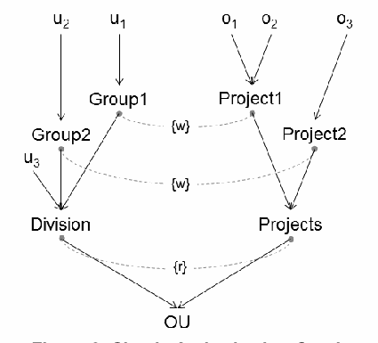
認可グラフ。ユーザー u1 → Group1、u2 → Group2、u3 → Division。Group1 と Group2 → Division、Division → OU。オブジェクト o1 と o2 → Project1、o3 → Project2。Project1 と Project2 → Projects、Projects → OU。点線の弧は、関連付け Group1 —{w}— Project1、Group2 —{w}— Project2、Division —{r}— Projects を示します。
Figure 3: Simple Authorization Graph
図 3: 単純な認可グラフ
For this same example, the properties of each object attribute in the hierarchy that are granted through a defined association or acquired through containment by another object attribute can also be determined. That is, rather than a list of inherent capabilities, a list of inherent access control entries can be determined for each object attribute, as follows:
この同じ例について、階層内の各オブジェクト属性の特性のうち、定義された関連付けを通じて与えられるものや、別のオブジェクト属性による包含を通じて獲得するものも決定できます。つまり、固有のケーパビリティのリストではなく、各オブジェクト属性について固有のアクセス制御エントリのリストを、次のように決定できます。
•Project1 is granted the access control entry (Group1, {w}), and acquires the access control entry (Division, {r}) from Projects, which leads to the inherent properties (Group1, {w}) and (Division, {r}) for Project1.
•Project1 は、アクセス制御エントリ (Group1, {w}) を与えられ、Projects からアクセス制御エントリ (Division, {r}) を獲得します。その結果、Project1 の固有の特性は (Group1, {w}) と (Division, {r}) になります。
•Project2 is granted the access control entry (Group2, {w}), and acquires the access control entry (Division, {r}) from Projects, which leads to the inherent properties (Group2, {w}) and (Division, {r}).
•Project2 は、アクセス制御エントリ (Group2, {w}) を与えられ、Projects からアクセス制御エントリ (Division, {r}) を獲得します。その結果、Project2 の固有の特性は (Group2, {w}) と (Division, {r}) になります。
•Projects is granted the access control entry (Division, {r}), but acquires no access control entries from another object attribute, which leads to the inherent property (Division, {r}).
•Projects は、アクセス制御エントリ (Division, {r}) を与えられますが、ほかのオブジェクト属性からアクセス制御エントリを獲得しないため、固有の特性は (Division, {r}) になります。
While it is relatively easy to determine the granted and acquired properties of attributes for the simple example given in Figure 3, it can be considerably more difficult to illustrate and analyze a more realistic example that involves a larger set of policy elements, assignments, and associations. The interactions between vertical assignment relations and horizontal association relations increase in complexity quickly as more elements and relations are added to an authorization graph.
図 3 の単純な例では、属性に与えられた特性と獲得した特性を決定することは比較的容易ですが、より多くのポリシー要素、割当て、関連付けを含むより現実的な例を図示して分析することは、はるかに困難になり得ます。垂直方向の割当て関係と水平方向の関連付け関係の相互作用は、認可グラフに要素と関係が追加されるにつれて、急速に複雑になります。
3.3.3 Derived Privileges
3.3.3 導出される権限
A privilege specifies a relationship between a user, an access right, and an attribute. Privileges are derived from higher level relations, namely the associations between and the assignments among attributes. That is, every privilege originates from an association and the containment properties of the user attribute and the target attribute of that association, which are designated through assignments.
権限は、ユーザー、アクセス権、属性の間の関係を規定します。権限は、より上位の関係、すなわち属性間の関連付けと属性間の割当てから導かれます。つまり、すべての権限は、関連付けと、割当てによって指定される、その関連付けのユーザー属性および対象属性の包含特性に由来します。
The ternary relation PRIVILEGE ⊆ U × AR × (PE\PC) defines the set of possible privileges within a policy specification. An individual tuple of PRIVILEGE, (u, ar, e), denotes that user u holds the authority to exercise the access right ar on policy element e. The privilege relation may be partitioned into two parts, PRIVILEGE ⊆ (U × RAR × (PE\PC)) ∪ (U × AAR × (PE\PC)), in which tuples of the first term, (u, rar, e), denote resource-oriented privileges, and tuples of the second term, (u, aar, e), denote policy-oriented privileges.
三項関係 PRIVILEGE ⊆ U × AR × (PE\PC) は、ポリシー仕様内で可能な権限の集合を定義します。PRIVILEGE の個々の組 (u, ar, e) は、ユーザー u がポリシー要素 e に対してアクセス権 ar を行使する権限を保持することを表します。権限関係は、PRIVILEGE ⊆ (U × RAR × (PE\PC)) ∪ (U × AAR × (PE\PC)) の 2 つの部分に分割できます。第 1 項の組 (u, rar, e) は資源指向の権限を表し、第 2 項の組 (u, aar, e) はポリシー指向の権限を表します。
For policies comprising a single policy class, the derivation of privileges is straightforward. Specifically, the triple (u, ar, e) is a privilege, iff there exists an association, (ua, ars, at) ∈ ASSOCIATION, such that \(u \mathrel{\mathrm{ASSIGN}^{+}} \mathrm{ua}\), ar ∈ ars, where \(\mathrm{ars} \in 2_{1}^{\mathrm{AR}}\), and e ASSIGN* at. This can also be restated using the Users and Elements functions: the triple (u, ar, e) is a privilege, iff there exists a tuple (ua, ars, at) ∈ ASSOCIATION, such that u ∈ Users(ua), ar ∈ ars, \(\mathrm{ars} \in 2_{1}^{\mathrm{AR}}\), and e ∈ Elements(at). Policies that involve multiple policy classes require a small adjustment to privilege derivation, which is discussed later in Chapter 6.
単一のポリシークラスからなるポリシーでは、権限の導出は単純です。具体的には、3 つ組 (u, ar, e) が権限であるのは、関連付け (ua, ars, at) ∈ ASSOCIATION が存在し、\(u \mathrel{\mathrm{ASSIGN}^{+}} \mathrm{ua}\)、ar ∈ ars（ここで \(\mathrm{ars} \in 2_{1}^{\mathrm{AR}}\)）、かつ e ASSIGN* at となる場合、かつその場合に限られます。これは Users 関数と Elements 関数を使って言い換えることもできます。3 つ組 (u, ar, e) が権限であるのは、組 (ua, ars, at) ∈ ASSOCIATION が存在し、u ∈ Users(ua)、ar ∈ ars、\(\mathrm{ars} \in 2_{1}^{\mathrm{AR}}\)、かつ e ∈ Elements(at) となる場合、かつその場合に限られます。複数のポリシークラスを含むポリシーでは、権限の導出にわずかな調整が必要であり、これは第 6 章で後述します。
Looking again at the example in Figure 3, the entire set of privileges for the authorization graph can be enumerated for each of the associations, as follows:
図 3 の例をもう一度見ると、認可グラフの権限の全体を、各関連付けについて次のように列挙できます。
•For the association triple (Group1, {w}, Project1), Users(Group1)={\(u_{1}\)}, rars={w}, and Elements(Project1)={Project1, \(o_{1,}\) \(o_{2}\)}. Therefore, the derived privileges for this association are (\(u_{1,}\) w, Project1), (\(u_{1,}\) w, \(o_{1}\)), and (\(u_{1,}\) w, \(o_{2}\)).
•関連付けの 3 つ組 (Group1, {w}, Project1) について、Users(Group1)={\(u_{1}\)}、rars={w}、Elements(Project1)={Project1, \(o_{1,}\) \(o_{2}\)} です。したがって、この関連付けから導かれる権限は、(\(u_{1,}\) w, Project1)、(\(u_{1,}\) w, \(o_{1}\))、(\(u_{1,}\) w, \(o_{2}\)) です。
•For the association triple (Group2, {w}, Project2), Users(Group2)={\(u_{2}\)}, rars={w}, and Elements(Project2)={Project2, \(o_{3}\)}. Therefore, the derived privileges for this association are (\(u_{2,}\) w, Project2), (\(u_{2,}\) w, \(o_{3}\)).
•関連付けの 3 つ組 (Group2, {w}, Project2) について、Users(Group2)={\(u_{2}\)}、rars={w}、Elements(Project2)={Project2, \(o_{3}\)} です。したがって、この関連付けから導かれる権限は、(\(u_{2,}\) w, Project2)、(\(u_{2,}\) w, \(o_{3}\)) です。
•For the association triple (Division, {r}, Projects), Users(Division)={\(u_{1,}\) \(u_{2,}\) \(u_{3}\)}, rars={r}, and Elements(Projects)={Projects, Project1, Project2, \(o_{1,}\) \(o_{2,}\) \(o_{3}\)}. Therefore, the derived privileges for this association are (\(u_{1,}\) r, Projects), (\(u_{1,}\) r, Project1), (\(u_{1,}\) r, Project2), (\(u_{1,}\) r, \(o_{1}\)), (\(u_{1,}\) r, \(o_{2}\)), (\(u_{1,}\) r, \(o_{3}\)), (\(u_{2,}\) r, Projects), (\(u_{2,}\) r, Project1), (\(u_{2,}\) r, Project2), (\(u_{2,}\) r, \(o_{1}\)), (\(u_{2,}\) r, \(o_{2}\)), (\(u_{2,}\) r, \(o_{3}\)), (\(u_{3,}\) r, Projects), (\(u_{3,}\) r, Project1), (\(u_{3,}\) r, Project2), (\(u_{3,}\) r, \(o_{1}\)), (\(u_{3,}\) r, \(o_{2}\)), and (\(u_{3,}\) r, \(o_{3}\)).
•関連付けの 3 つ組 (Division, {r}, Projects) について、Users(Division)={\(u_{1,}\) \(u_{2,}\) \(u_{3}\)}、rars={r}、Elements(Projects)={Projects, Project1, Project2, \(o_{1,}\) \(o_{2,}\) \(o_{3}\)} です。したがって、この関連付けから導かれる権限は、(\(u_{1,}\) r, Projects)、(\(u_{1,}\) r, Project1)、(\(u_{1,}\) r, Project2)、(\(u_{1,}\) r, \(o_{1}\))、(\(u_{1,}\) r, \(o_{2}\))、(\(u_{1,}\) r, \(o_{3}\))、(\(u_{2,}\) r, Projects)、(\(u_{2,}\) r, Project1)、(\(u_{2,}\) r, Project2)、(\(u_{2,}\) r, \(o_{1}\))、(\(u_{2,}\) r, \(o_{2}\))、(\(u_{2,}\) r, \(o_{3}\))、(\(u_{3,}\) r, Projects)、(\(u_{3,}\) r, Project1)、(\(u_{3,}\) r, Project2)、(\(u_{3,}\) r, \(o_{1}\))、(\(u_{3,}\) r, \(o_{2}\))、(\(u_{3,}\) r, \(o_{3}\)) です。
Since r and w access rights apply only to objects representing resources, not all the privileges that are derived have relevance in forming an access decision. In this example, the privileges (\(u_{1,}\) w, Project1), (\(u_{2,}\) w, Project2), (\(u_{1,}\) r, Projects), (\(u_{1,}\) r, Project1), (\(u_{1,}\) r, Project2), (\(u_{2,}\) r, Projects), (\(u_{2,}\) r, Project1), (\(u_{2,}\) r, Project2), (\(u_{3,}\) r, Projects), (\(u_{3,}\) r, Project1), (\(u_{3,}\) r, Project2), which involve object attributes as the third element of the triple, are not the primary result. These privileges serve mainly as an intermediate factor in determining the more essential, remaining privileges that are used to reach decisions on access requests for object resources. An implementation could generate such intermediate privileges and, because of the mismatch between the type of policy element to which the access right applies and the type of policy element in the triple, ignore them once essential, primary privileges are derived. Alternatively, the essential privileges could be generated directly, provided that associations do not mix resource and administrative access rights.
r および w アクセス権は資源を表すオブジェクトにのみ適用されるため、導かれたすべての権限がアクセス決定の形成に関連するわけではありません。この例では、3 つ組の第 3 要素としてオブジェクト属性を含む権限、すなわち (\(u_{1,}\) w, Project1)、(\(u_{2,}\) w, Project2)、(\(u_{1,}\) r, Projects)、(\(u_{1,}\) r, Project1)、(\(u_{1,}\) r, Project2)、(\(u_{2,}\) r, Projects)、(\(u_{2,}\) r, Project1)、(\(u_{2,}\) r, Project2)、(\(u_{3,}\) r, Projects)、(\(u_{3,}\) r, Project1)、(\(u_{3,}\) r, Project2) は、主たる結果ではありません。これらの権限は主に、オブジェクト資源へのアクセス要求に関する決定に使用される、より本質的な残りの権限を決定するための中間的な要素として機能します。実装は、そのような中間的な権限を生成し、アクセス権が適用されるポリシー要素の種類と 3 つ組内のポリシー要素の種類の不一致のために、本質的な主たる権限が導出された後にそれらを無視することができます。あるいは、関連付けが資源アクセス権と管理アクセス権を混在させないのであれば、本質的な権限を直接生成することもできます。
Similar to the way inherent properties of associations can be view from either an access entry or capability orientation, these same perspectives can be applied to privileges. That is, a user u may access a policy element via the capability, (ar, e), iff the privilege (u, ar, e) exists, or a user may access an policy element e via the access control entry, (u, ar), iff a privilege (u, ar, e) exists.
関連付けの固有の特性をアクセスエントリの向きからもケーパビリティの向きからも見られるのと同様に、これらの同じ視点を権限にも適用できます。すなわち、ユーザー u がケーパビリティ (ar, e) を介してポリシー要素にアクセスできるのは、権限 (u, ar, e) が存在する場合、かつその場合に限られ、またユーザーがアクセス制御エントリ (u, ar) を介してポリシー要素 e にアクセスできるのは、権限 (u, ar, e) が存在する場合、かつその場合に限られます。
Notation for Associations and Privileges. The relationships among elements of the PM model formed through associations and privileges can be defined more formally as shown below.
原本PDFの抜粋画像
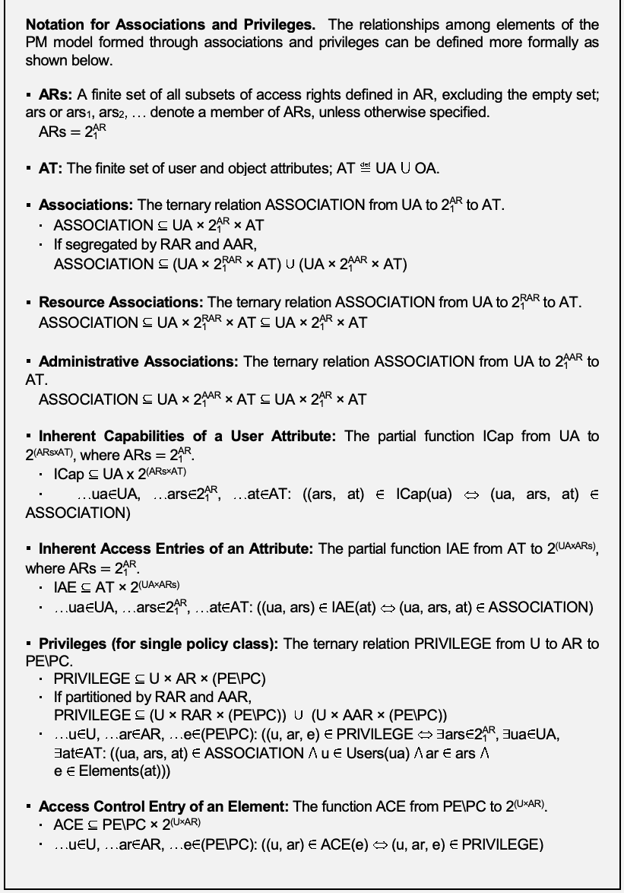
関連付けと権限の表記。関連付けと権限を通じて形成される PM モデルの要素間の関係は、以下に示すように、より形式的に定義できます。
•ARs: A finite set of all subsets of access rights defined in AR, excluding the empty set; ars or \(\mathrm{ars}_{1,}\) \(\mathrm{ars}_{2,}\) … denote a member of ARs, unless otherwise specified.
\(\mathrm{ARs} = 2_{1}^{\mathrm{AR}}\)
•ARs: AR で定義されるアクセス権のすべての部分集合（空集合を除く）の有限集合。特に指定がない限り、ars または \(\mathrm{ars}_{1,}\) \(\mathrm{ars}_{2,}\) … は ARs の要素を表します。
\(\mathrm{ARs} = 2_{1}^{\mathrm{AR}}\)
•AT: The finite set of user and object attributes; \(\mathrm{AT} \overset{\mathrm{def}}{=} \mathrm{UA} \cup \mathrm{OA}\).
•AT: ユーザー属性とオブジェクト属性の有限集合。\(\mathrm{AT} \overset{\mathrm{def}}{=} \mathrm{UA} \cup \mathrm{OA}\)。
•Associations: The ternary relation ASSOCIATION from UA to \(2_{1}^{\mathrm{AR}}\) to AT.
•関連付け: UA から \(2_{1}^{\mathrm{AR}}\) から AT への三項関係 ASSOCIATION。
•\(\mathrm{ASSOCIATION} \subseteq \mathrm{UA} \times 2_{1}^{\mathrm{AR}} \times \mathrm{AT}\)
•\(\mathrm{ASSOCIATION} \subseteq \mathrm{UA} \times 2_{1}^{\mathrm{AR}} \times \mathrm{AT}\)
•If segregated by RAR and AAR,
\(\mathrm{ASSOCIATION} \subseteq (\mathrm{UA} \times 2_{1}^{\mathrm{RAR}} \times \mathrm{AT}) \cup (\mathrm{UA} \times 2_{1}^{\mathrm{AAR}} \times \mathrm{AT})\)
•RAR と AAR で分離する場合、
\(\mathrm{ASSOCIATION} \subseteq (\mathrm{UA} \times 2_{1}^{\mathrm{RAR}} \times \mathrm{AT}) \cup (\mathrm{UA} \times 2_{1}^{\mathrm{AAR}} \times \mathrm{AT})\)
•Resource Associations: The ternary relation ASSOCIATION from UA to \(2_{1}^{\mathrm{RAR}}\) to AT.
\(\mathrm{ASSOCIATION} \subseteq \mathrm{UA} \times 2_{1}^{\mathrm{RAR}} \times \mathrm{AT} \subseteq \mathrm{UA} \times 2_{1}^{\mathrm{AR}} \times \mathrm{AT}\)
•資源の関連付け: UA から \(2_{1}^{\mathrm{RAR}}\) から AT への三項関係 ASSOCIATION。
\(\mathrm{ASSOCIATION} \subseteq \mathrm{UA} \times 2_{1}^{\mathrm{RAR}} \times \mathrm{AT} \subseteq \mathrm{UA} \times 2_{1}^{\mathrm{AR}} \times \mathrm{AT}\)
•Administrative Associations: The ternary relation ASSOCIATION from UA to \(2_{1}^{\mathrm{AAR}}\) to AT.
\(\mathrm{ASSOCIATION} \subseteq \mathrm{UA} \times 2_{1}^{\mathrm{AAR}} \times \mathrm{AT} \subseteq \mathrm{UA} \times 2_{1}^{\mathrm{AR}} \times \mathrm{AT}\)
•管理上の関連付け: UA から \(2_{1}^{\mathrm{AAR}}\) から AT への三項関係 ASSOCIATION。
\(\mathrm{ASSOCIATION} \subseteq \mathrm{UA} \times 2_{1}^{\mathrm{AAR}} \times \mathrm{AT} \subseteq \mathrm{UA} \times 2_{1}^{\mathrm{AR}} \times \mathrm{AT}\)
•Inherent Capabilities of a User Attribute: The partial function ICap from UA to \(2^{(\mathrm{ARsxAT})}\), where \(\mathrm{ARs} = 2_{1}^{\mathrm{AR}}\).
•ユーザー属性の固有のケーパビリティ: UA から \(2^{(\mathrm{ARsxAT})}\) への部分関数 ICap。ここで \(\mathrm{ARs} = 2_{1}^{\mathrm{AR}}\)。
•\(\mathrm{ICap} \subseteq \mathrm{UA} x 2^{(\mathrm{ARs}\times\mathrm{AT})}\)
•\(\mathrm{ICap} \subseteq \mathrm{UA} x 2^{(\mathrm{ARs}\times\mathrm{AT})}\)
•\(\ldots\mathrm{ua}\in\mathrm{UA}, \ldots\mathrm{ars}\in2_{1}^{\mathrm{AR}}, \ldots\mathrm{at}\in\mathrm{AT}: ((\mathrm{ars}, \mathrm{at}) \in \mathrm{ICap}(\mathrm{ua}) \Leftrightarrow (\mathrm{ua}, \mathrm{ars}, \mathrm{at}) \in \mathrm{ASSOCIATION})\)
•\(\ldots\mathrm{ua}\in\mathrm{UA}, \ldots\mathrm{ars}\in2_{1}^{\mathrm{AR}}, \ldots\mathrm{at}\in\mathrm{AT}: ((\mathrm{ars}, \mathrm{at}) \in \mathrm{ICap}(\mathrm{ua}) \Leftrightarrow (\mathrm{ua}, \mathrm{ars}, \mathrm{at}) \in \mathrm{ASSOCIATION})\)
•Inherent Access Entries of an Attribute: The partial function IAE from AT to \(2^{(\mathrm{UAxARs})}\), where \(\mathrm{ARs} = 2_{1}^{\mathrm{AR}}\).
•属性の固有のアクセスエントリ: AT から \(2^{(\mathrm{UAxARs})}\) への部分関数 IAE。ここで \(\mathrm{ARs} = 2_{1}^{\mathrm{AR}}\)。
•\(\mathrm{IAE} \subseteq \mathrm{AT} \times 2^{(\mathrm{UA}\times\mathrm{ARs})}\)
•\(\mathrm{IAE} \subseteq \mathrm{AT} \times 2^{(\mathrm{UA}\times\mathrm{ARs})}\)
•\(\ldots\mathrm{ua}\in\mathrm{UA}, \ldots\mathrm{ars}\in2_{1}^{\mathrm{AR}}, \ldots\mathrm{at}\in\mathrm{AT}: ((\mathrm{ua}, \mathrm{ars}) \in \mathrm{IAE}(\mathrm{at}) \Leftrightarrow (\mathrm{ua}, \mathrm{ars}, \mathrm{at}) \in \mathrm{ASSOCIATION})\)
•\(\ldots\mathrm{ua}\in\mathrm{UA}, \ldots\mathrm{ars}\in2_{1}^{\mathrm{AR}}, \ldots\mathrm{at}\in\mathrm{AT}: ((\mathrm{ua}, \mathrm{ars}) \in \mathrm{IAE}(\mathrm{at}) \Leftrightarrow (\mathrm{ua}, \mathrm{ars}, \mathrm{at}) \in \mathrm{ASSOCIATION})\)
•Privileges (for single policy class): The ternary relation PRIVILEGE from U to AR to PE\PC.
•権限（単一のポリシークラスの場合）: U から AR から PE\PC への三項関係 PRIVILEGE。
•\(\mathrm{PRIVILEGE} \subseteq U \times \mathrm{AR} \times (\mathrm{PE}\setminus\mathrm{PC})\)
•\(\mathrm{PRIVILEGE} \subseteq U \times \mathrm{AR} \times (\mathrm{PE}\setminus\mathrm{PC})\)
•If partitioned by RAR and AAR,
\(\mathrm{PRIVILEGE} \subseteq (U \times \mathrm{RAR} \times (\mathrm{PE}\setminus\mathrm{PC})) \cup (U \times \mathrm{AAR} \times (\mathrm{PE}\setminus\mathrm{PC}))\)
•RAR と AAR で分割する場合、
\(\mathrm{PRIVILEGE} \subseteq (U \times \mathrm{RAR} \times (\mathrm{PE}\setminus\mathrm{PC})) \cup (U \times \mathrm{AAR} \times (\mathrm{PE}\setminus\mathrm{PC}))\)
•\(\ldots u\in U, \ldots\mathrm{ar}\in\mathrm{AR}, \ldots e\in(\mathrm{PE}\setminus\mathrm{PC}): ((u, \mathrm{ar}, e) \in \mathrm{PRIVILEGE} \Leftrightarrow \exists\mathrm{ars}\in2_{1}^{\mathrm{AR}}, \exists\mathrm{ua}\in\mathrm{UA}, \exists\mathrm{at}\in\mathrm{AT}: ((\mathrm{ua}, \mathrm{ars}, \mathrm{at}) \in \mathrm{ASSOCIATION} \land u \in \mathrm{Users}(\mathrm{ua}) \land \mathrm{ar} \in \mathrm{ars} \land e \in \mathrm{Elements}(\mathrm{at})))\)
•\(\ldots u\in U, \ldots\mathrm{ar}\in\mathrm{AR}, \ldots e\in(\mathrm{PE}\setminus\mathrm{PC}): ((u, \mathrm{ar}, e) \in \mathrm{PRIVILEGE} \Leftrightarrow \exists\mathrm{ars}\in2_{1}^{\mathrm{AR}}, \exists\mathrm{ua}\in\mathrm{UA}, \exists\mathrm{at}\in\mathrm{AT}: ((\mathrm{ua}, \mathrm{ars}, \mathrm{at}) \in \mathrm{ASSOCIATION} \land u \in \mathrm{Users}(\mathrm{ua}) \land \mathrm{ar} \in \mathrm{ars} \land e \in \mathrm{Elements}(\mathrm{at})))\)
•Access Control Entry of an Element: The function ACE from PE\PC to \(2^{(U\times\mathrm{AR})}\).
•要素のアクセス制御エントリ: PE\PC から \(2^{(U\times\mathrm{AR})}\) への関数 ACE。
•\(\mathrm{ACE} \subseteq \mathrm{PE}\setminus\mathrm{PC} \times 2^{(U\times\mathrm{AR})}\)
•\(\mathrm{ACE} \subseteq \mathrm{PE}\setminus\mathrm{PC} \times 2^{(U\times\mathrm{AR})}\)
•\(\ldots u\in U, \ldots\mathrm{ar}\in\mathrm{AR}, \ldots e\in(\mathrm{PE}\setminus\mathrm{PC}): ((u, \mathrm{ar}) \in \mathrm{ACE}(e) \Leftrightarrow (u, \mathrm{ar}, e) \in \mathrm{PRIVILEGE})\)
•\(\ldots u\in U, \ldots\mathrm{ar}\in\mathrm{AR}, \ldots e\in(\mathrm{PE}\setminus\mathrm{PC}): ((u, \mathrm{ar}) \in \mathrm{ACE}(e) \Leftrightarrow (u, \mathrm{ar}, e) \in \mathrm{PRIVILEGE})\)
•Capability of a User: The function Cap from U to \(2^{(\mathrm{AR}\times(\mathrm{PE}\setminus\mathrm{PC}))}\).
原本PDFの抜粋画像
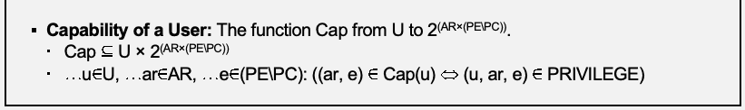
•ユーザーのケーパビリティ: U から \(2^{(\mathrm{AR}\times(\mathrm{PE}\setminus\mathrm{PC}))}\) への関数 Cap。
•\(\mathrm{Cap} \subseteq U \times 2^{(\mathrm{AR}\times(\mathrm{PE}\setminus\mathrm{PC}))}\)
•\(\mathrm{Cap} \subseteq U \times 2^{(\mathrm{AR}\times(\mathrm{PE}\setminus\mathrm{PC}))}\)
•\(\ldots u\in U, \ldots\mathrm{ar}\in\mathrm{AR}, \ldots e\in(\mathrm{PE}\setminus\mathrm{PC}): ((\mathrm{ar}, e) \in \mathrm{Cap}(u) \Leftrightarrow (u, \mathrm{ar}, e) \in \mathrm{PRIVILEGE})\)
•\(\ldots u\in U, \ldots\mathrm{ar}\in\mathrm{AR}, \ldots e\in(\mathrm{PE}\setminus\mathrm{PC}): ((\mathrm{ar}, e) \in \mathrm{Cap}(u) \Leftrightarrow (u, \mathrm{ar}, e) \in \mathrm{PRIVILEGE})\)
3.4 Prohibitions and Restriction Relations
3.4 禁止と制限関係
Prohibitions define relationships that govern the suppression of access rights between policy elements. Three distinct, but related types of prohibitions exist: user-based, process-based, and user attribute-based prohibitions. Prohibitions in a way can be thought of as the antithesis of associations, because restrictions, which are derived from prohibitions, essentially negate privileges that would otherwise allow access to occur. That is, each type of prohibition denotes an effective set of restrictions, which represent privileges that a specific user, process, or class of users is precluded from exercising, regardless of whether the user, process, or class of users in question hold any of the actual privileges.
禁止は、ポリシー要素間のアクセス権の抑止を統制する関係を定義します。互いに異なるが関連する 3 種類の禁止が存在します。ユーザーベース、プロセスベース、ユーザー属性ベースの禁止です。禁止は、ある意味で関連付けの対極と考えることができます。禁止から導かれる制限は、アクセスを可能にするはずの権限を本質的に無効にするからです。つまり、各種類の禁止は有効な制限の集合を表し、それは、特定のユーザー、プロセス、またはユーザーのクラスが、問題のユーザー、プロセス、またはユーザーのクラスが実際の権限を保持しているかどうかにかかわらず、行使することを妨げられる権限を表します。
To illustrate the use of prohibitions, Figure 4 reillustrates the example authorization graph discussed the previous section, augmented with a single user prohibition. The prohibition, denoted (\(u_{2,}\) {r}, {Project1}, ∅}, is depicted using a dotted, upward-arcing connector. The prohibition denies user \(u_{2}\) from exercising the read access right over Project1 and objects contained within Project1, which has the effect of negating the privileges (\(u_{2,}\) r, \(o_{1}\)), (\(u_{2,}\) r, \(o_{2}\)), and (\(u_{2,}\) r, Project1), derived from the association (Division, {r}, Projects1) (i.e, for user \(u_{2,}\) with regard to the objects contained in Project1, \(o_{1}\) and \(o_{2}\)). Note that the prohibition does not negate the effect of the association with regard to objects contained in Project2 (viz., \(o_{3}\)), nor does it affect the access rights of any new user that might be assigned to Group2 in the future.
禁止の使用を説明するために、図 4 は、前節で論じた認可グラフの例に、単一のユーザー禁止を加えて再度図示しています。禁止 (\(u_{2,}\) {r}, {Project1}, ∅} は、上向きに弧を描く点線のコネクタで示されています。この禁止は、ユーザー \(u_{2}\) が Project1 および Project1 に包含されるオブジェクトに対して読み取りアクセス権を行使することを拒否します。その結果、関連付け (Division, {r}, Projects1) から導かれる権限 (\(u_{2,}\) r, \(o_{1}\))、(\(u_{2,}\) r, \(o_{2}\))、(\(u_{2,}\) r, Project1) が無効になります（すなわち、ユーザー \(u_{2,}\) について、Project1 に包含されるオブジェクト \(o_{1}\) および \(o_{2}\) に関して）。この禁止は、Project2 に包含されるオブジェクト（すなわち \(o_{3}\)）に関する関連付けの効果を無効にするものではなく、将来 Group2 に割り当てられる可能性のある新しいユーザーのアクセス権にも影響しないことに注意してください。
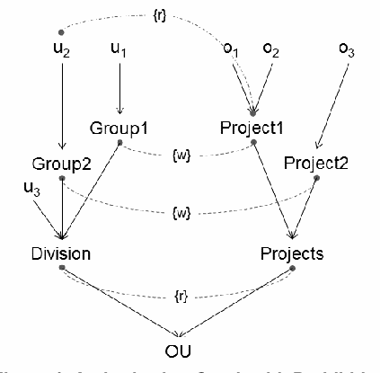
図3の認可グラフに禁止を1つ加えた図です。ユーザーはu1 → Group1、u2 → Group2、u3 → Divisionに割り当てられ、Group1とGroup2はDivisionに、DivisionはOUに割り当てられています。オブジェクトはo1とo2 → Project1、o3 → Project2に割り当てられ、Project1とProject2はProjectsに、ProjectsはOUに割り当てられています。下向きの点線の弧は関連付けGroup1 —{w}— Project1、Group2 —{w}— Project2、Division —{r}— Projectsを示し、u2からProject1へ上向きに伸びる{r}の点線の弧が禁止を表します。
Figure 4: Authorization Graph with Prohibition
図 4: 禁止を含む認可グラフ
Prohibitions can be formed and rescinded through an according interface of the PM. User- and user attribute-based prohibitions are persistent and remain in existence until they are rescinded through an administrative action. Process-based prohibitions are less enduring and treated differently than user- or user attribute-based prohibitions. Process-based prohibitions are normally formed through predefined rules known as obligations, which are executed automatically based on event occurrence to establish the prohibition. Once the affected process terminates, the prohibition no longer has applicability and is rescinded automatically by the PM framework.
禁止は、PM の対応するインタフェースを通じて形成・取り消すことができます。ユーザーベースおよびユーザー属性ベースの禁止は永続的であり、管理上の行為によって取り消されるまで存在し続けます。プロセスベースの禁止は持続性が低く、ユーザーベースまたはユーザー属性ベースの禁止とは異なる扱いを受けます。プロセスベースの禁止は通常、義務として知られる事前定義されたルールによって形成されます。義務は、イベントの発生に基づいて自動的に実行され、禁止を確立します。影響を受けるプロセスが終了すると、その禁止はもはや適用されず、PM フレームワークによって自動的に取り消されます。
A prohibition cannot be partially rescinded and must be rescinded in its entirety. That is, even if a subset of a prohibition’s affected privileges needs to be retained, the entire prohibition must be rescinded and replaced with new prohibition for the remaining subset that are still in effect. As with associations, it is advisable not to mix resource and administrative access rights when specify prohibitions, and instead define prohibitions with the same type of access rights.
禁止を部分的に取り消すことはできず、全体を取り消さなければなりません。すなわち、禁止の影響を受ける権限の一部を維持する必要がある場合でも、禁止全体を取り消し、引き続き有効な残りの部分について新しい禁止に置き換えなければなりません。関連付けと同様に、禁止を規定する際には、資源アクセス権と管理アクセス権を混在させず、同じ種類のアクセス権で禁止を定義することが推奨されます。
The set of policy elements affected by a prohibition is designated via either conjunctive or disjunctive mappings over sets of referent attributes to the policy elements in question. A pair of functions facilitate the discussion of the affected policy elements. The disjunctive range function represents the mapping from two constraint sets of attributes—the first designating policy elements for inclusion, and the second designating policy elements for exclusion—to a set of policy elements formed by logical disjunction of the policy elements contained within or not contained respectively within the subgraphs of the referent attributes of each constraint set. More precisely, the set of policy elements returned by the disjunctive range function, DisjRange(atis, ates), where \(\mathrm{atis}\in2^{\mathrm{AT}}\) and \(\mathrm{ates}\in2^{\mathrm{AT}}\), is the union of Elements(ati), for all ati in the inclusion set atis, along with the union of ((PE\PC) \ Elements(ate)), for all ate in the exclusion set ates, which can be expressed more succinctly as follows:
禁止によって影響を受けるポリシー要素の集合は、問題のポリシー要素への、指示対象属性の集合に対する連言的または選言的な写像によって指定されます。影響を受けるポリシー要素についての議論を助けるために、一対の関数を用います。選言的範囲関数は、2 つの制約属性集合（1 つ目は包含するポリシー要素を指定し、2 つ目は除外するポリシー要素を指定します）から、各制約集合の指示対象属性の部分グラフにそれぞれ包含される、または包含されないポリシー要素の論理和によって形成されるポリシー要素の集合への写像を表します。より正確には、選言的範囲関数 DisjRange(atis, ates) が返すポリシー要素の集合は（ここで \(\mathrm{atis}\in2^{\mathrm{AT}}\) および \(\mathrm{ates}\in2^{\mathrm{AT}}\) です）、包含集合 atis のすべての ati についての Elements(ati) の和集合と、除外集合 ates のすべての ate についての ((PE\PC) \ Elements(ate)) の和集合を合わせたものであり、より簡潔に次のように表現できます。
\[\mathrm{DisjRange}(\mathrm{atis}, \mathrm{ates}) = \bigcup_{\mathrm{ati} \in \mathrm{atis}} \mathrm{Elements}(\mathrm{ati}) \cup \bigcup_{\mathrm{ate} \in \mathrm{ates}} ((\mathrm{PE} \setminus \mathrm{PC}) \setminus \mathrm{Elements}(\mathrm{ate}))\]
\[\mathrm{DisjRange}(\mathrm{atis}, \mathrm{ates}) = \bigcup_{\mathrm{ati} \in \mathrm{atis}} \mathrm{Elements}(\mathrm{ati}) \cup \bigcup_{\mathrm{ate} \in \mathrm{ates}} ((\mathrm{PE} \setminus \mathrm{PC}) \setminus \mathrm{Elements}(\mathrm{ate}))\]
Similarly, the conjunctive range function represents the mapping from two constraint sets of attributes—the first designating policy elements for inclusion, and the second designating policy elements for exclusion—to a set of policy elements formed by logical conjunction of the policy elements contained by or not contained by the attributes of each constraint set respectively. More precisely, the set of policy elements returned by the conjunctive range function, ConjRange(atis, ates), where \(\mathrm{atis}\in2^{\mathrm{AT}}\) and \(\mathrm{ates}\in2^{\mathrm{AT}}\), is the intersection of Elements(ati), for all ati in the inclusion set atis, along with the intersection of ((PE\PC) \ Elements(ate)), for all ate in the exclusion set ates, which can be expressed more succinctly as follows:
同様に、連言的範囲関数は、2 つの制約属性集合（1 つ目は包含するポリシー要素を指定し、2 つ目は除外するポリシー要素を指定します）から、各制約集合の属性にそれぞれ包含される、または包含されないポリシー要素の論理積によって形成されるポリシー要素の集合への写像を表します。より正確には、連言的範囲関数 ConjRange(atis, ates) が返すポリシー要素の集合は（ここで \(\mathrm{atis}\in2^{\mathrm{AT}}\) および \(\mathrm{ates}\in2^{\mathrm{AT}}\) です）、包含集合 atis のすべての ati についての Elements(ati) の共通部分と、除外集合 ates のすべての ate についての ((PE\PC) \ Elements(ate)) の共通部分を合わせたものであり、より簡潔に次のように表現できます。
\[\mathrm{ConjRange}(\mathrm{atis},\mathrm{ates}) = \bigcap_{\mathrm{ati} \in \mathrm{atis}} \mathrm{Elements}(\mathrm{ati}) \cap \bigcap_{\mathrm{ate} \in \mathrm{ates}} ((\mathrm{PE} \setminus \mathrm{PC}) \setminus \mathrm{Elements}(\mathrm{ate}))\]
\[\mathrm{ConjRange}(\mathrm{atis},\mathrm{ates}) = \bigcap_{\mathrm{ati} \in \mathrm{atis}} \mathrm{Elements}(\mathrm{ati}) \cap \bigcap_{\mathrm{ate} \in \mathrm{ates}} ((\mathrm{PE} \setminus \mathrm{PC}) \setminus \mathrm{Elements}(\mathrm{ate}))\]
The disjunctive and conjunctive forms of prohibitions use these two functions to delineate the policy elements targeted by a prohibition. They allow complex expressions to be specified for a prohibition. In practice, the prohibitions for most policies typically require the use of only simple expressions. For example, the sets atis and ates may both be singletons, each containing only one member of the same attribute type (viz., either user or object), or one of the sets may be the empty set and the other a singleton. However, the capabilities are available to meet the demands of more complex policies that might arise.
禁止の選言形式と連言形式は、これら 2 つの関数を使って、禁止の対象となるポリシー要素を描き出します。これにより、禁止に対して複雑な式を規定できます。実際には、ほとんどのポリシーの禁止は、通常、単純な式を使うだけで足ります。たとえば、集合 atis と ates はどちらも、同じ属性の種類（すなわち、ユーザーまたはオブジェクトのいずれか）の要素を 1 つだけ含む単集合である場合もあれば、一方が空集合で他方が単集合である場合もあります。しかし、生じ得るより複雑なポリシーの要求を満たすための機能は利用可能です。
3.4.1 User-based Prohibitions and Restrictions
3.4.1 ユーザーベースの禁止と制限
The quaternary relation \(\mathrm{U\_DENY\_DISJ} \subseteq U \times 2_{1}^{\mathrm{AR}} \times 2^{\mathrm{AT}} \times 2^{\mathrm{AT}}\), defines the set of user-based, disjunctive prohibitions for a policy specification. An individual tuple \((u, \mathrm{ars}, \mathrm{atis}, \mathrm{ates}) \in \mathrm{U\_DENY\_DISJ}\), where \(u \in U\), \(\mathrm{ars} \in 2_{1}^{\mathrm{AR}}\), \(\mathrm{atis} \in 2^{\mathrm{AT}}\), \(\mathrm{ates} \in 2^{\mathrm{AT}}\), and \(\mathrm{atis} \cup \mathrm{ates} \neq \varnothing\), denotes that all processes initiated by the user are withheld the authority to exercise any of the access rights within the access right set, ars, against any policy elements that lie within the disjunctive range of the inclusion and exclusion sets of attributes, DisjRange(atis,ates). That is, any process p, executing on behalf of user u (i.e., u = Process_User(p)), cannot exercise the access rights in ars on any policy element that is contained by at least one of the attributes in atis (i.e., the inclusionary attribute set) or, with the exception of policy classes, is not contained by at least one of the attributes in ates (i.e., the exclusionary attribute set).
四項関係 \(\mathrm{U\_DENY\_DISJ} \subseteq U \times 2_{1}^{\mathrm{AR}} \times 2^{\mathrm{AT}} \times 2^{\mathrm{AT}}\) は、ポリシー仕様におけるユーザーベースの選言的禁止の集合を定義します。個々の組 \((u, \mathrm{ars}, \mathrm{atis}, \mathrm{ates}) \in \mathrm{U\_DENY\_DISJ}\)（ここで \(u \in U\)、\(\mathrm{ars} \in 2_{1}^{\mathrm{AR}}\)、\(\mathrm{atis} \in 2^{\mathrm{AT}}\)、\(\mathrm{ates} \in 2^{\mathrm{AT}}\)、かつ \(\mathrm{atis} \cup \mathrm{ates} \neq \varnothing\)）は、そのユーザーが開始したすべてのプロセスが、属性の包含集合と除外集合の選言的範囲 DisjRange(atis,ates) 内にあるポリシー要素に対して、アクセス権集合 ars 内のいずれのアクセス権も行使する権限を与えられないことを表します。つまり、ユーザー u に代わって実行されるプロセス p（すなわち u = Process_User(p)）は、atis（すなわち包含属性集合）内の少なくとも 1 つの属性に包含されるか、またはポリシークラスを除き、ates（すなわち除外属性集合）内の少なくとも 1 つの属性に包含されないポリシー要素に対して、ars 内のアクセス権を行使できません。
A complementary relation to U_DENY_DISJ that defines user-based, conjunctive prohibitions, also exists within the PM model. An individual tuple (u, ars, atis, ates) of the quaternary relation \(\mathrm{U\_DENY\_CONJ} \subseteq U \times 2_{1}^{\mathrm{AR}} \times 2^{\mathrm{AT}} \times 2^{\mathrm{AT}}\), where \(\mathrm{atis} \cup \mathrm{ates} \neq \varnothing\), denotes that all processes initiated by the user are withheld the authority to exercise any of the access rights defined in the access right set, ars, against any policy elements that lie within the conjunctive range of the inclusion and exclusion sets of attributes, ConjRange(atis,ates). That is, any process p, executing on behalf of user u, cannot exercise the access rights in ars on any policy element that is contained by all of the attributes in atis and, with the exception of policy classes, is also not contained by any of the attributes in ates.
ユーザーベースの連言的禁止を定義する、U_DENY_DISJ の補完的な関係も PM モデル内に存在します。四項関係 \(\mathrm{U\_DENY\_CONJ} \subseteq U \times 2_{1}^{\mathrm{AR}} \times 2^{\mathrm{AT}} \times 2^{\mathrm{AT}}\)（ここで \(\mathrm{atis} \cup \mathrm{ates} \neq \varnothing\)）の個々の組 (u, ars, atis, ates) は、そのユーザーが開始したすべてのプロセスが、属性の包含集合と除外集合の連言的範囲 ConjRange(atis,ates) 内にあるポリシー要素に対して、アクセス権集合 ars で定義されたいずれのアクセス権も行使する権限を与えられないことを表します。つまり、ユーザー u に代わって実行されるプロセス p は、atis 内のすべての属性に包含され、かつポリシークラスを除き、ates 内のどの属性にも包含されないポリシー要素に対して、ars 内のアクセス権を行使できません。
The user restriction relation, \(\mathrm{U\_RESTRICT} \subseteq U \times \mathrm{AR} \times \mathrm{PE}\setminus\mathrm{PC}\), is derived from one or more user prohibition relations. For a policy comprising a single policy class, the triple (u, ar, e) is a user restriction, iff there exists a user prohibition (u, ars, atis, ates), such that the following is true:
ユーザー制限関係 \(\mathrm{U\_RESTRICT} \subseteq U \times \mathrm{AR} \times \mathrm{PE}\setminus\mathrm{PC}\) は、1 つ以上のユーザー禁止関係から導かれます。単一のポリシークラスからなるポリシーでは、3 つ組 (u, ar, e) がユーザー制限であるのは、次が真となるようなユーザー禁止 (u, ars, atis, ates) が存在する場合、かつその場合に限られます。
•The user, u, is designated by the user identifier of the prohibition.
•ユーザー u は、禁止のユーザー識別子によって指定されます。
•The access right, ar, is a member of the access right set of the prohibition.
•アクセス権 ar は、禁止のアクセス権集合の要素です。
•The policy element, e, lies within either the disjunctive or conjunctive range of the inclusion and exclusion attribute sets of the prohibition, respective of whether the prohibition is a disjunctive or conjunctive variant.
•ポリシー要素 e は、禁止が選言型か連言型かに応じて、その禁止の包含属性集合と除外属性集合の選言的範囲または連言的範囲のいずれかの内側にあります。
3.4.2 Process-based Prohibitions and Restrictions
3.4.2 プロセスベースの禁止と制限
Process-based prohibitions are defined similarly to user-based prohibitions. The relation \(\mathrm{P\_DENY\_DISJ} \subseteq P \times 2_{1}^{\mathrm{AR}} \times 2^{\mathrm{AT}} \times 2^{\mathrm{AT}}\) defines the set of process-based, disjunctive prohibitions. A tuple (p, ars, atis, ates) ∈ P_DENY_DISJ denotes that the process, p, is prohibited from exercising any of the access rights defined in the access right set, ars, against any of the policy elements that lie within the disjunctive range of the inclusion and exclusion attribute sets, DisjRange(atis,ates). The inclusion and exclusion sets cannot both be the empty set.
プロセスベースの禁止は、ユーザーベースの禁止と同様に定義されます。関係 \(\mathrm{P\_DENY\_DISJ} \subseteq P \times 2_{1}^{\mathrm{AR}} \times 2^{\mathrm{AT}} \times 2^{\mathrm{AT}}\) は、プロセスベースの選言的禁止の集合を定義します。組 (p, ars, atis, ates) ∈ P_DENY_DISJ は、プロセス p が、包含属性集合と除外属性集合の選言的範囲 DisjRange(atis,ates) 内にあるいずれのポリシー要素に対しても、アクセス権集合 ars で定義されたいずれのアクセス権も行使することを禁止されていることを表します。包含集合と除外集合の両方が空集合であってはなりません。
As with user-based prohibitions, the conjunctive form of process-based prohibitions also exists. The relation \(\mathrm{P\_DENY\_CONJ} \subseteq P \times 2_{1}^{\mathrm{AR}} \times 2^{\mathrm{AT}} \times 2^{\mathrm{AT}}\) defines the set of process-based, conjunctive prohibitions. A tuple (p, ars, atis, ates) ∈ P_DENY_CONJ denotes the process, p, is prohibited from exercising any of the access rights defined in the access right set, ars, against any of the policy elements that lie within the conjunctive range of the inclusion and exclusion attribute sets, ConjRange(atis,ates). The inclusion and exclusion sets cannot both be the empty set. Note that if all existing prohibitions for a user are process-based prohibitions that apply to only a single user process, it may be possible for the user to perform prohibited accesses through another of its processes, presuming that the appropriate associations are defined that would allow them. This situation can be easily remedied through the use of a user-based prohibition, whose scope is broader than a single process.
ユーザーベースの禁止と同様に、プロセスベースの禁止にも連言形式が存在します。関係 \(\mathrm{P\_DENY\_CONJ} \subseteq P \times 2_{1}^{\mathrm{AR}} \times 2^{\mathrm{AT}} \times 2^{\mathrm{AT}}\) は、プロセスベースの連言的禁止の集合を定義します。組 (p, ars, atis, ates) ∈ P_DENY_CONJ は、プロセス p が、包含属性集合と除外属性集合の連言的範囲 ConjRange(atis,ates) 内にあるいずれのポリシー要素に対しても、アクセス権集合 ars で定義されたいずれのアクセス権も行使することを禁止されていることを表します。包含集合と除外集合の両方が空集合であってはなりません。あるユーザーについて存在するすべての禁止が、そのユーザーの単一のプロセスにのみ適用されるプロセスベースの禁止である場合、そのユーザーは、適切な関連付けがそれを許すように定義されていると仮定すると、別のプロセスを通じて禁止されたアクセスを実行できる可能性があることに注意してください。この状況は、適用範囲が単一のプロセスより広いユーザーベースの禁止を使用することで、容易に是正できます。
The process restriction relation, \(\mathrm{P\_RESTRICT} \subseteq P \times \mathrm{AR} \times \mathrm{PE}\setminus\mathrm{PC}\), is derived from one or more process prohibition relations. For a policy comprising a single policy class, the triple (p, ar, e) is a process restriction, iff there exists a process prohibition (p, ars, atis, ates), such that the following is true:
プロセス制限関係 \(\mathrm{P\_RESTRICT} \subseteq P \times \mathrm{AR} \times \mathrm{PE}\setminus\mathrm{PC}\) は、1 つ以上のプロセス禁止関係から導かれます。単一のポリシークラスからなるポリシーでは、3 つ組 (p, ar, e) がプロセス制限であるのは、次が真となるようなプロセス禁止 (p, ars, atis, ates) が存在する場合、かつその場合に限られます。
•The process, p, is designated by the process identifier of the prohibition.
•プロセス p は、禁止のプロセス識別子によって指定されます。
•The access right, ar, is a member of the access right set of the prohibition.
•アクセス権 ar は、禁止のアクセス権集合の要素です。
•The policy element, e, lies within either the disjunctive or conjunctive range of the inclusion and exclusion attribute sets of the prohibition, respective of whether the prohibition is a disjunctive or conjunctive variant.
•ポリシー要素 e は、禁止が選言型か連言型かに応じて、その禁止の包含属性集合と除外属性集合の選言的範囲または連言的範囲のいずれかの内側にあります。
3.4.3 Attribute-based Prohibitions and Restrictions
3.4.3 属性ベースの禁止と制限
The following pair of prohibitions are defined similarly to user-based and process-based prohibitions, but instead are based on user attribute. The quaternary relation \(\mathrm{UA\_DENY\_DISJ} \subseteq \mathrm{UA} \times 2_{1}^{\mathrm{AR}} \times 2^{\mathrm{AT}} \times 2^{\mathrm{AT}}\) defines the set of user attribute-based, disjunctive prohibitions, and the quaternary relation \(\mathrm{UA\_DENY\_CONJ} \subseteq \mathrm{UA} \times 2_{1}^{\mathrm{AR}} \times 2^{\mathrm{AT}} \times 2^{\mathrm{AT}}\) defines the set of user attribute-based conjunctive prohibitions. A tuple (ua, ars, atis, ates) ∈ UA_DENY_DISJ denotes that all processes initiated by any user contained by the attribute, ua, are prohibited from exercising any of the access rights defined in the access right set, ars, against any of the policy elements that lie within the disjunctive range of the inclusion and exclusion attribute sets, DisjRange(atis, ates). Similarly, a tuple (ua, ars, atis, ates) ∈ UA_DENY_CONJ denotes that all processes initiated by any user contained by the attribute, ua, are prohibited from exercising any of the access rights defined in the access right set, ars, against any of the policy elements that lie within the conjunctive range of the inclusion and exclusion attribute sets, ConjRange(atis,ates). The inclusion and exclusion attribute sets cannot both be the empty set.
次の一対の禁止は、ユーザーベースおよびプロセスベースの禁止と同様に定義されますが、代わりにユーザー属性に基づきます。四項関係 \(\mathrm{UA\_DENY\_DISJ} \subseteq \mathrm{UA} \times 2_{1}^{\mathrm{AR}} \times 2^{\mathrm{AT}} \times 2^{\mathrm{AT}}\) はユーザー属性ベースの選言的禁止の集合を定義し、四項関係 \(\mathrm{UA\_DENY\_CONJ} \subseteq \mathrm{UA} \times 2_{1}^{\mathrm{AR}} \times 2^{\mathrm{AT}} \times 2^{\mathrm{AT}}\) はユーザー属性ベースの連言的禁止の集合を定義します。組 (ua, ars, atis, ates) ∈ UA_DENY_DISJ は、属性 ua に包含される任意のユーザーが開始したすべてのプロセスが、包含属性集合と除外属性集合の選言的範囲 DisjRange(atis, ates) 内にあるいずれのポリシー要素に対しても、アクセス権集合 ars で定義されたいずれのアクセス権も行使することを禁止されていることを表します。同様に、組 (ua, ars, atis, ates) ∈ UA_DENY_CONJ は、属性 ua に包含される任意のユーザーが開始したすべてのプロセスが、包含属性集合と除外属性集合の連言的範囲 ConjRange(atis,ates) 内にあるいずれのポリシー要素に対しても、アクセス権集合 ars で定義されたいずれのアクセス権も行使することを禁止されていることを表します。包含属性集合と除外属性集合の両方が空集合であってはなりません。
The user attribute restriction relation, \(\mathrm{UA\_RESTRICT} \subseteq \mathrm{UA} \times \mathrm{AR} \times \mathrm{PE}\), is derived from one or more user attribute prohibition relations. For a policy comprising a single policy class, the triple (ua, ar, pe) is a user attribute restriction, iff there exists a user attribute prohibition (ua, ars, atis, ates), such that the following is true:
ユーザー属性制限関係 \(\mathrm{UA\_RESTRICT} \subseteq \mathrm{UA} \times \mathrm{AR} \times \mathrm{PE}\) は、1 つ以上のユーザー属性禁止関係から導かれます。単一のポリシークラスからなるポリシーでは、3 つ組 (ua, ar, pe) がユーザー属性制限であるのは、次が真となるようなユーザー属性禁止 (ua, ars, atis, ates) が存在する場合、かつその場合に限られます。
•The attribute, ua, is designated by the user attribute identifier of the prohibition.
•属性 ua は、禁止のユーザー属性識別子によって指定されます。
•The access right, ar, is a member of the access right set of the prohibition.
•アクセス権 ar は、禁止のアクセス権集合の要素です。
•The policy element, e, lies within either the disjunctive or conjunctive range of the inclusion and exclusion attribute sets of the prohibition, respective of whether the prohibition is a disjunctive or conjunctive variant.
•ポリシー要素 e は、禁止が選言型か連言型かに応じて、その禁止の包含属性集合と除外属性集合の選言的範囲または連言的範囲のいずれかの内側にあります。
Notation for Prohibitions. The relationships among elements of the PM model affected by prohibitions can be defined more formally as shown below.
原本PDFの抜粋画像
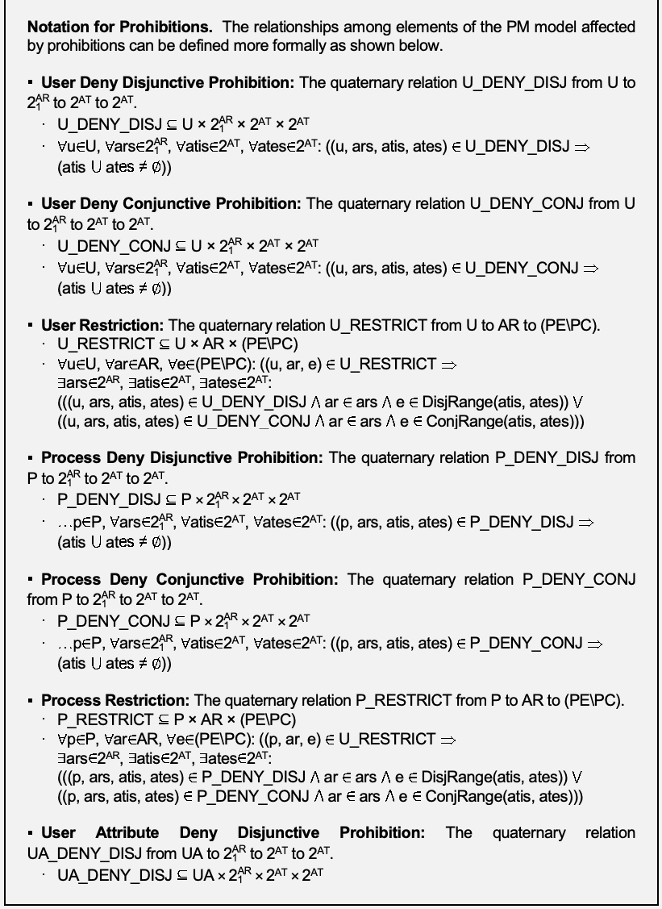
禁止の表記。禁止の影響を受ける PM モデルの要素間の関係は、以下に示すように、より形式的に定義できます。
•User Deny Disjunctive Prohibition: The quaternary relation U_DENY_DISJ from U to \(2_{1}^{\mathrm{AR}}\) to \(2^{\mathrm{AT}}\) to \(2^{\mathrm{AT}}\).
•User Deny Disjunctive Prohibition: U から \(2_{1}^{\mathrm{AR}}\) から \(2^{\mathrm{AT}}\) から \(2^{\mathrm{AT}}\) への四項関係 U_DENY_DISJ。
•\(\mathrm{U\_DENY\_DISJ} \subseteq U \times 2_{1}^{\mathrm{AR}} \times 2^{\mathrm{AT}} \times 2^{\mathrm{AT}}\)
•\(\mathrm{U\_DENY\_DISJ} \subseteq U \times 2_{1}^{\mathrm{AR}} \times 2^{\mathrm{AT}} \times 2^{\mathrm{AT}}\)
•\(\forall u\in U, \forall\mathrm{ars}\in2_{1}^{\mathrm{AR}}, \forall\mathrm{atis}\in2^{\mathrm{AT}}, \forall\mathrm{ates}\in2^{\mathrm{AT}}: ((u, \mathrm{ars}, \mathrm{atis}, \mathrm{ates}) \in \mathrm{U\_DENY\_DISJ} \Rightarrow (\mathrm{atis} \cup \mathrm{ates} \neq \varnothing))\)
•\(\forall u\in U, \forall\mathrm{ars}\in2_{1}^{\mathrm{AR}}, \forall\mathrm{atis}\in2^{\mathrm{AT}}, \forall\mathrm{ates}\in2^{\mathrm{AT}}: ((u, \mathrm{ars}, \mathrm{atis}, \mathrm{ates}) \in \mathrm{U\_DENY\_DISJ} \Rightarrow (\mathrm{atis} \cup \mathrm{ates} \neq \varnothing))\)
•User Deny Conjunctive Prohibition: The quaternary relation U_DENY_CONJ from U to \(2_{1}^{\mathrm{AR}}\) to \(2^{\mathrm{AT}}\) to \(2^{\mathrm{AT}}\).
•User Deny Conjunctive Prohibition: U から \(2_{1}^{\mathrm{AR}}\) から \(2^{\mathrm{AT}}\) から \(2^{\mathrm{AT}}\) への四項関係 U_DENY_CONJ。
•\(\mathrm{U\_DENY\_CONJ} \subseteq U \times 2_{1}^{\mathrm{AR}} \times 2^{\mathrm{AT}} \times 2^{\mathrm{AT}}\)
•\(\mathrm{U\_DENY\_CONJ} \subseteq U \times 2_{1}^{\mathrm{AR}} \times 2^{\mathrm{AT}} \times 2^{\mathrm{AT}}\)
•\(\forall u\in U, \forall\mathrm{ars}\in2_{1}^{\mathrm{AR}}, \forall\mathrm{atis}\in2^{\mathrm{AT}}, \forall\mathrm{ates}\in2^{\mathrm{AT}}: ((u, \mathrm{ars}, \mathrm{atis}, \mathrm{ates}) \in \mathrm{U\_DENY\_CONJ} \Rightarrow (\mathrm{atis} \cup \mathrm{ates} \neq \varnothing))\)
•\(\forall u\in U, \forall\mathrm{ars}\in2_{1}^{\mathrm{AR}}, \forall\mathrm{atis}\in2^{\mathrm{AT}}, \forall\mathrm{ates}\in2^{\mathrm{AT}}: ((u, \mathrm{ars}, \mathrm{atis}, \mathrm{ates}) \in \mathrm{U\_DENY\_CONJ} \Rightarrow (\mathrm{atis} \cup \mathrm{ates} \neq \varnothing))\)
•User Restriction: The quaternary relation U_RESTRICT from U to AR to (PE\PC).
•ユーザー制限: U から AR から (PE\PC) への四項関係 U_RESTRICT。
•\(\mathrm{U\_RESTRICT} \subseteq U \times \mathrm{AR} \times (\mathrm{PE}\setminus\mathrm{PC})\)
•\(\mathrm{U\_RESTRICT} \subseteq U \times \mathrm{AR} \times (\mathrm{PE}\setminus\mathrm{PC})\)
•\(\forall u\in U, \forall\mathrm{ar}\in\mathrm{AR}, \forall e\in(\mathrm{PE}\setminus\mathrm{PC}): ((u, \mathrm{ar}, e) \in \mathrm{U\_RESTRICT} \Rightarrow \exists\mathrm{ars}\in2^{\mathrm{AR}}, \exists\mathrm{atis}\in2^{\mathrm{AT}}, \exists\mathrm{ates}\in2^{\mathrm{AT}}: (((u, \mathrm{ars}, \mathrm{atis}, \mathrm{ates}) \in \mathrm{U\_DENY\_DISJ} \land \mathrm{ar} \in \mathrm{ars} \land e \in \mathrm{DisjRange}(\mathrm{atis}, \mathrm{ates})) \lor ((u, \mathrm{ars}, \mathrm{atis}, \mathrm{ates}) \in \mathrm{U\_DENY\_CONJ} \land \mathrm{ar} \in \mathrm{ars} \land e \in \mathrm{ConjRange}(\mathrm{atis}, \mathrm{ates})))\)
•\(\forall u\in U, \forall\mathrm{ar}\in\mathrm{AR}, \forall e\in(\mathrm{PE}\setminus\mathrm{PC}): ((u, \mathrm{ar}, e) \in \mathrm{U\_RESTRICT} \Rightarrow \exists\mathrm{ars}\in2^{\mathrm{AR}}, \exists\mathrm{atis}\in2^{\mathrm{AT}}, \exists\mathrm{ates}\in2^{\mathrm{AT}}: (((u, \mathrm{ars}, \mathrm{atis}, \mathrm{ates}) \in \mathrm{U\_DENY\_DISJ} \land \mathrm{ar} \in \mathrm{ars} \land e \in \mathrm{DisjRange}(\mathrm{atis}, \mathrm{ates})) \lor ((u, \mathrm{ars}, \mathrm{atis}, \mathrm{ates}) \in \mathrm{U\_DENY\_CONJ} \land \mathrm{ar} \in \mathrm{ars} \land e \in \mathrm{ConjRange}(\mathrm{atis}, \mathrm{ates})))\)
•Process Deny Disjunctive Prohibition: The quaternary relation P_DENY_DISJ from P to \(2_{1}^{\mathrm{AR}}\) to \(2^{\mathrm{AT}}\) to \(2^{\mathrm{AT}}\).
•Process Deny Disjunctive Prohibition: P から \(2_{1}^{\mathrm{AR}}\) から \(2^{\mathrm{AT}}\) から \(2^{\mathrm{AT}}\) への四項関係 P_DENY_DISJ。
•\(\mathrm{P\_DENY\_DISJ} \subseteq P \times 2_{1}^{\mathrm{AR}} \times 2^{\mathrm{AT}} \times 2^{\mathrm{AT}}\)
•\(\mathrm{P\_DENY\_DISJ} \subseteq P \times 2_{1}^{\mathrm{AR}} \times 2^{\mathrm{AT}} \times 2^{\mathrm{AT}}\)
•\(\ldots p\in P, \forall\mathrm{ars}\in2_{1}^{\mathrm{AR}}, \forall\mathrm{atis}\in2^{\mathrm{AT}}, \forall\mathrm{ates}\in2^{\mathrm{AT}}: ((p, \mathrm{ars}, \mathrm{atis}, \mathrm{ates}) \in \mathrm{P\_DENY\_DISJ} \Rightarrow (\mathrm{atis} \cup \mathrm{ates} \neq \varnothing))\)
•\(\ldots p\in P, \forall\mathrm{ars}\in2_{1}^{\mathrm{AR}}, \forall\mathrm{atis}\in2^{\mathrm{AT}}, \forall\mathrm{ates}\in2^{\mathrm{AT}}: ((p, \mathrm{ars}, \mathrm{atis}, \mathrm{ates}) \in \mathrm{P\_DENY\_DISJ} \Rightarrow (\mathrm{atis} \cup \mathrm{ates} \neq \varnothing))\)
•Process Deny Conjunctive Prohibition: The quaternary relation P_DENY_CONJ from P to \(2_{1}^{\mathrm{AR}}\) to \(2^{\mathrm{AT}}\) to \(2^{\mathrm{AT}}\).
•Process Deny Conjunctive Prohibition: P から \(2_{1}^{\mathrm{AR}}\) から \(2^{\mathrm{AT}}\) から \(2^{\mathrm{AT}}\) への四項関係 P_DENY_CONJ。
•\(\mathrm{P\_DENY\_CONJ} \subseteq P \times 2_{1}^{\mathrm{AR}} \times 2^{\mathrm{AT}} \times 2^{\mathrm{AT}}\)
•\(\mathrm{P\_DENY\_CONJ} \subseteq P \times 2_{1}^{\mathrm{AR}} \times 2^{\mathrm{AT}} \times 2^{\mathrm{AT}}\)
•\(\ldots p\in P, \forall\mathrm{ars}\in2_{1}^{\mathrm{AR}}, \forall\mathrm{atis}\in2^{\mathrm{AT}}, \forall\mathrm{ates}\in2^{\mathrm{AT}}: ((p, \mathrm{ars}, \mathrm{atis}, \mathrm{ates}) \in \mathrm{P\_DENY\_CONJ} \Rightarrow (\mathrm{atis} \cup \mathrm{ates} \neq \varnothing))\)
•\(\ldots p\in P, \forall\mathrm{ars}\in2_{1}^{\mathrm{AR}}, \forall\mathrm{atis}\in2^{\mathrm{AT}}, \forall\mathrm{ates}\in2^{\mathrm{AT}}: ((p, \mathrm{ars}, \mathrm{atis}, \mathrm{ates}) \in \mathrm{P\_DENY\_CONJ} \Rightarrow (\mathrm{atis} \cup \mathrm{ates} \neq \varnothing))\)
•Process Restriction: The quaternary relation P_RESTRICT from P to AR to (PE\PC).
•プロセス制限: P から AR から (PE\PC) への四項関係 P_RESTRICT。
•\(\mathrm{P\_RESTRICT} \subseteq P \times \mathrm{AR} \times (\mathrm{PE}\setminus\mathrm{PC})\)
•\(\mathrm{P\_RESTRICT} \subseteq P \times \mathrm{AR} \times (\mathrm{PE}\setminus\mathrm{PC})\)
•\(\forall p\in P, \forall\mathrm{ar}\in\mathrm{AR}, \forall e\in(\mathrm{PE}\setminus\mathrm{PC}): ((p, \mathrm{ar}, e) \in \mathrm{U\_RESTRICT} \Rightarrow \exists\mathrm{ars}\in2^{\mathrm{AR}}, \exists\mathrm{atis}\in2^{\mathrm{AT}}, \exists\mathrm{ates}\in2^{\mathrm{AT}}: (((p, \mathrm{ars}, \mathrm{atis}, \mathrm{ates}) \in \mathrm{P\_DENY\_DISJ} \land \mathrm{ar} \in \mathrm{ars} \land e \in \mathrm{DisjRange}(\mathrm{atis}, \mathrm{ates})) \lor ((p, \mathrm{ars}, \mathrm{atis}, \mathrm{ates}) \in \mathrm{P\_DENY\_CONJ} \land \mathrm{ar} \in \mathrm{ars} \land e \in \mathrm{ConjRange}(\mathrm{atis}, \mathrm{ates})))\)
•\(\forall p\in P, \forall\mathrm{ar}\in\mathrm{AR}, \forall e\in(\mathrm{PE}\setminus\mathrm{PC}): ((p, \mathrm{ar}, e) \in \mathrm{U\_RESTRICT} \Rightarrow \exists\mathrm{ars}\in2^{\mathrm{AR}}, \exists\mathrm{atis}\in2^{\mathrm{AT}}, \exists\mathrm{ates}\in2^{\mathrm{AT}}: (((p, \mathrm{ars}, \mathrm{atis}, \mathrm{ates}) \in \mathrm{P\_DENY\_DISJ} \land \mathrm{ar} \in \mathrm{ars} \land e \in \mathrm{DisjRange}(\mathrm{atis}, \mathrm{ates})) \lor ((p, \mathrm{ars}, \mathrm{atis}, \mathrm{ates}) \in \mathrm{P\_DENY\_CONJ} \land \mathrm{ar} \in \mathrm{ars} \land e \in \mathrm{ConjRange}(\mathrm{atis}, \mathrm{ates})))\)
•User Attribute Deny Disjunctive Prohibition: The quaternary relation UA_DENY_DISJ from UA to \(2_{1}^{\mathrm{AR}}\) to \(2^{\mathrm{AT}}\) to \(2^{\mathrm{AT}}\).
•ユーザー属性拒否選言的禁止: UA から \(2_{1}^{\mathrm{AR}}\) から \(2^{\mathrm{AT}}\) から \(2^{\mathrm{AT}}\) への四項関係 UA_DENY_DISJ。
•\(\mathrm{UA\_DENY\_DISJ} \subseteq \mathrm{UA} \times 2_{1}^{\mathrm{AR}} \times 2^{\mathrm{AT}} \times 2^{\mathrm{AT}}\)
•\(\mathrm{UA\_DENY\_DISJ} \subseteq \mathrm{UA} \times 2_{1}^{\mathrm{AR}} \times 2^{\mathrm{AT}} \times 2^{\mathrm{AT}}\)
•\(\ldots\mathrm{ua}\in\mathrm{UA}, \forall\mathrm{ars}\in2_{1}^{\mathrm{AR}}, \forall\mathrm{atis}\in2^{\mathrm{AT}}, \forall\mathrm{ates}\in2^{\mathrm{AT}}: ((\mathrm{ua}, \mathrm{ars}, \mathrm{atis}, \mathrm{ates}) \in \mathrm{UA\_DENY\_DISJ} \Rightarrow (\mathrm{atis} \cup \mathrm{ates} \neq \varnothing))\)
原本PDFの抜粋画像
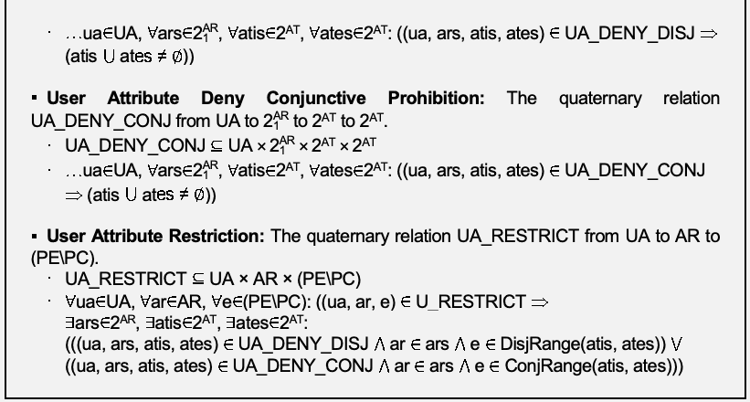
•\(\ldots\mathrm{ua}\in\mathrm{UA}, \forall\mathrm{ars}\in2_{1}^{\mathrm{AR}}, \forall\mathrm{atis}\in2^{\mathrm{AT}}, \forall\mathrm{ates}\in2^{\mathrm{AT}}: ((\mathrm{ua}, \mathrm{ars}, \mathrm{atis}, \mathrm{ates}) \in \mathrm{UA\_DENY\_DISJ} \Rightarrow (\mathrm{atis} \cup \mathrm{ates} \neq \varnothing))\)
•User Attribute Deny Conjunctive Prohibition: The quaternary relation UA_DENY_CONJ from UA to \(2_{1}^{\mathrm{AR}}\) to \(2^{\mathrm{AT}}\) to \(2^{\mathrm{AT}}\).
•ユーザー属性拒否連言的禁止: UA から \(2_{1}^{\mathrm{AR}}\) から \(2^{\mathrm{AT}}\) から \(2^{\mathrm{AT}}\) への四項関係 UA_DENY_CONJ。
•\(\mathrm{UA\_DENY\_CONJ} \subseteq \mathrm{UA} \times 2_{1}^{\mathrm{AR}} \times 2^{\mathrm{AT}} \times 2^{\mathrm{AT}}\)
•\(\mathrm{UA\_DENY\_CONJ} \subseteq \mathrm{UA} \times 2_{1}^{\mathrm{AR}} \times 2^{\mathrm{AT}} \times 2^{\mathrm{AT}}\)
•\(\ldots\mathrm{ua}\in\mathrm{UA}, \forall\mathrm{ars}\in2_{1}^{\mathrm{AR}}, \forall\mathrm{atis}\in2^{\mathrm{AT}}, \forall\mathrm{ates}\in2^{\mathrm{AT}}: ((\mathrm{ua}, \mathrm{ars}, \mathrm{atis}, \mathrm{ates}) \in \mathrm{UA\_DENY\_CONJ} \Rightarrow (\mathrm{atis} \cup \mathrm{ates} \neq \varnothing))\)
•\(\ldots\mathrm{ua}\in\mathrm{UA}, \forall\mathrm{ars}\in2_{1}^{\mathrm{AR}}, \forall\mathrm{atis}\in2^{\mathrm{AT}}, \forall\mathrm{ates}\in2^{\mathrm{AT}}: ((\mathrm{ua}, \mathrm{ars}, \mathrm{atis}, \mathrm{ates}) \in \mathrm{UA\_DENY\_CONJ} \Rightarrow (\mathrm{atis} \cup \mathrm{ates} \neq \varnothing))\)
•User Attribute Restriction: The quaternary relation UA_RESTRICT from UA to AR to (PE\PC).
•ユーザー属性制限: UA から AR から (PE\PC) への四項関係 UA_RESTRICT。
•\(\mathrm{UA\_RESTRICT} \subseteq \mathrm{UA} \times \mathrm{AR} \times (\mathrm{PE}\setminus\mathrm{PC})\)
•\(\mathrm{UA\_RESTRICT} \subseteq \mathrm{UA} \times \mathrm{AR} \times (\mathrm{PE}\setminus\mathrm{PC})\)
•\(\forall\mathrm{ua}\in\mathrm{UA}, \forall\mathrm{ar}\in\mathrm{AR}, \forall e\in(\mathrm{PE}\setminus\mathrm{PC}): ((\mathrm{ua}, \mathrm{ar}, e) \in \mathrm{U\_RESTRICT} \Rightarrow \exists\mathrm{ars}\in2^{\mathrm{AR}}, \exists\mathrm{atis}\in2^{\mathrm{AT}}, \exists\mathrm{ates}\in2^{\mathrm{AT}}: (((\mathrm{ua}, \mathrm{ars}, \mathrm{atis}, \mathrm{ates}) \in \mathrm{UA\_DENY\_DISJ} \land \mathrm{ar} \in \mathrm{ars} \land e \in \mathrm{DisjRange}(\mathrm{atis}, \mathrm{ates})) \lor ((\mathrm{ua}, \mathrm{ars}, \mathrm{atis}, \mathrm{ates}) \in \mathrm{UA\_DENY\_CONJ} \land \mathrm{ar} \in \mathrm{ars} \land e \in \mathrm{ConjRange}(\mathrm{atis}, \mathrm{ates})))\)
•\(\forall\mathrm{ua}\in\mathrm{UA}, \forall\mathrm{ar}\in\mathrm{AR}, \forall e\in(\mathrm{PE}\setminus\mathrm{PC}): ((\mathrm{ua}, \mathrm{ar}, e) \in \mathrm{U\_RESTRICT} \Rightarrow \exists\mathrm{ars}\in2^{\mathrm{AR}}, \exists\mathrm{atis}\in2^{\mathrm{AT}}, \exists\mathrm{ates}\in2^{\mathrm{AT}}: (((\mathrm{ua}, \mathrm{ars}, \mathrm{atis}, \mathrm{ates}) \in \mathrm{UA\_DENY\_DISJ} \land \mathrm{ar} \in \mathrm{ars} \land e \in \mathrm{DisjRange}(\mathrm{atis}, \mathrm{ates})) \lor ((\mathrm{ua}, \mathrm{ars}, \mathrm{atis}, \mathrm{ates}) \in \mathrm{UA\_DENY\_CONJ} \land \mathrm{ar} \in \mathrm{ars} \land e \in \mathrm{ConjRange}(\mathrm{atis}, \mathrm{ates})))\)
3.5 Obligations
3.5 義務
Obligations represent potential changes to the authorization state of the policy. They are used when one or more administrative actions need to be carried out under a specific, known set of circumstances. Events are the means by which obligations are triggered. An event occurs each time a requested access executes successfully. Information related to the event is called the event context and is used by the PM to process obligations. The process identifier, identifier of the associated user, access operation, and sequence of arguments of the triggering event are mandatory and always returned as part of the event context. Other information conveyed via the event context varies based on the type of event that occurred and may include items such as the containing attributes of targeted policy elements (e.g., those pertaining to an object that was deleted), or the types of certain arguments used in an access request (e.g., for a resource access, the type of object (file, message, etc.) accessed.
義務は、ポリシーの認可状態に生じ得る変更を表します。義務は、特定の既知の状況の下で 1 つ以上の管理上の行為を実行する必要がある場合に使用されます。イベントは、義務を引き起こす手段です。イベントは、要求されたアクセスが正常に実行されるたびに発生します。イベントに関連する情報はイベントコンテキストと呼ばれ、PM が義務を処理するために使用します。トリガーとなるイベントのプロセス識別子、関連するユーザーの識別子、アクセス操作、および引数の列は必須であり、常にイベントコンテキストの一部として返されます。イベントコンテキストを通じて伝えられるその他の情報は、発生したイベントの種類によって異なり、対象となるポリシー要素を包含する属性（たとえば、削除されたオブジェクトに関するもの）や、アクセス要求で使用された特定の引数の種類（たとえば、資源アクセスの場合は、アクセスされたオブジェクトの種類（ファイル、メッセージなど））などが含まれる場合があります。
The two main components needed to define an obligation are an event pattern and a response. The pattern and response elements each denote a sentence in a grammar that respectively expresses the triggering conditions of an event pattern and the administrative actions of the response. The event pattern and response each represents sentences that must conform to a formal language over their respective alphabet. That is, the syntax of the sequence of symbols for each item must be well formed according to its respective grammar.
義務を定義するために必要な 2 つの主要な構成要素は、イベントパターンと応答です。パターン要素と応答要素はそれぞれ、イベントパターンのトリガー条件と応答の管理上の行為を表現する文法上の文を表します。イベントパターンと応答はそれぞれ、各自のアルファベット上の形式言語に適合しなければならない文を表します。つまり、各項目の記号列の構文は、それぞれの文法に従って整形式でなければなりません。
The obligation relation, OBLIG, is defined as a ternary relation from U to PATTERN to RESPONSE. For each tuple (u, pattern, response) of the obligation relation, u represents the user that established the pattern and response, and under whose authorization the response is carried out. In this report, the pattern and response of obligation is sometimes expressed less formally, in a more readable form, as follows:
義務関係 OBLIG は、U から PATTERN から RESPONSE への三項関係として定義されます。義務関係の各組 (u, pattern, response) において、u はパターンと応答を確立したユーザーを表し、その認可の下で応答が実行されます。本報告書では、義務のパターンと応答を、より読みやすい形で、次のようにそれほど形式的でなく表現することがあります。
When pattern do response
When pattern do response
The event pattern specifies conditions that if matched with an event context, trigger the execution of the response. The event pattern is a logical expression that can use the information returned via the event context, as well as the policy elements and relations in existence when the event occurs, to specify the triggering conditions. The description of a sequence of administrative actions to be taken (i.e., a computation over the policy specification) constitutes the response. Any unresolved terms used in the response are determined from the details of the triggering event, including items derived from evaluation of the event pattern. Administrative actions are capable of adjusting policy through changes to the prevailing policy element relationships and policy elements.
イベントパターンは、イベントコンテキストと一致した場合に応答の実行を引き起こす条件を規定します。イベントパターンは論理式であり、イベントコンテキストを通じて返される情報と、イベントの発生時に存在するポリシー要素と関係を使って、トリガー条件を規定できます。実行される一連の管理上の行為の記述（すなわち、ポリシー仕様に対する計算）が、応答を構成します。応答で使用される未解決の項は、イベントパターンの評価から導かれる項目を含め、トリガーとなるイベントの詳細から決定されます。管理上の行為は、現行のポリシー要素の関係とポリシー要素への変更を通じて、ポリシーを調整できます。
The conditions for an event pattern can be extensive. For example, an event pattern may apply to certain operations or any operation; the processes of a specific user or group of users, or any user; one type of object or any object; or all defined policy classes or a specific set of policy classes. EC.name denotes the name of an event context item. EC.c, EC.p, EC.u, EC.op, and EC.argseq refer respectively to the identifiers of the creator of the obligation, the triggering process, the user for the process, the triggering access operation, and the associated argument sequence (i.e., the operands of the operation), which are conveyed in the event context of every event.2
イベントパターンの条件は広範になり得ます。たとえば、イベントパターンは、特定の操作または任意の操作、特定のユーザーまたはユーザーのグループのプロセスまたは任意のユーザー、1 種類のオブジェクトまたは任意のオブジェクト、あるいは定義されたすべてのポリシークラスまたは特定のポリシークラスの集合に適用できます。EC.name は、イベントコンテキスト項目の名前を表します。EC.c、EC.p、EC.u、EC.op、EC.argseq はそれぞれ、義務の作成者、トリガーとなるプロセス、そのプロセスのユーザー、トリガーとなるアクセス操作、および関連する引数の列（すなわち操作のオペランド）の識別子を指し、これらはすべてのイベントのイベントコンテキストで伝えられます。2
An obligation is typically created through an administrative routine. The user creating the obligation, normally an administrator, must have sufficient authorization to not only define the obligation, but also perform the body of the response. However, the latter typically cannot be verified when the obligation is created, since some terms used in the response cannot be resolved until the obligation is matched. When the event pattern of a defined obligation is matched, the associated response can be fully resolved and carried out automatically under the authorization of the user that created it, regardless how or by whom the event was caused. Therefore, the user that defined the obligation relation must possess adequate authority to carry out the associated response at the time the pattern is matched with the event; otherwise, the response is not attempted. An obligation’s response can conceivably be involved in a race condition with administrative activities being conducted manually, as well as the responses of other obligations triggered concurrently.
義務は通常、管理ルーチンを通じて作成されます。義務を作成するユーザー（通常は管理者）は、義務を定義するだけでなく、応答の本体を実行するのにも十分な認可を持っていなければなりません。ただし、後者は通常、義務の作成時には検証できません。応答で使用される一部の項は、義務が一致するまで解決できないためです。定義された義務のイベントパターンが一致すると、関連する応答は完全に解決され、イベントがどのように、誰によって引き起こされたかにかかわらず、それを作成したユーザーの認可の下で自動的に実行されます。したがって、義務関係を定義したユーザーは、パターンがイベントと一致した時点で、関連する応答を実行するのに十分な権限を保持していなければなりません。そうでなければ、応答は試行されません。義務の応答は、手作業で行われている管理活動や、同時にトリガーされたほかの義務の応答との間で、競合状態に陥る可能性が考えられます。
Obligations provide a powerful means to define, as part of a policy specification, the specific circumstances associated with a triggering event. An occurrence of those circumstances precipitates automatic changes to policy without intervention from an administrator. While obligations are not represented on an authorization graph, any changes to the policy specification that occur because of an obligation are reflected in the authorization graph, with the exception of any newly created obligations.
義務は、ポリシー仕様の一部として、トリガーとなるイベントに関連する特定の状況を定義する強力な手段を提供します。その状況が生じると、管理者の介入なしに、ポリシーが自動的に変更されます。義務は認可グラフには表されませんが、義務によって生じるポリシー仕様へのあらゆる変更は、新たに作成された義務を除いて、認可グラフに反映されます。
The set of possible obligations within a policy specification is defined by the ternary relation \(\mathrm{OBLIG} \subseteq U \times \mathrm{PATTERN} \times \mathrm{RESPONSE}\). For a tuple of OBLIG, (u, pattern, response), u represents the user responsible for establishing the obligation and under whose authorization the response is carried out. To interoperate, all functional entities supporting an application must use the same grammars for the pattern and the response syntaxes when forming and processing an obligation. For this report, the conditional expressions that appear in a pattern follow the syntax of first-order predicate calculus summarized in Appendix B; the response is expressed as a sequence of one or more administrative routines, whose syntax (i.e., the name of the routine, followed by the calling arguments) is discussed in detail in Section 4.5.2 of the next chapter.
ポリシー仕様内で可能な義務の集合は、三項関係 \(\mathrm{OBLIG} \subseteq U \times \mathrm{PATTERN} \times \mathrm{RESPONSE}\) によって定義されます。OBLIG の組 (u, pattern, response) において、u は義務を確立する責任を持ち、その認可の下で応答が実行されるユーザーを表します。相互運用するために、アプリケーションをサポートするすべての機能エンティティは、義務を形成・処理する際に、パターンと応答の構文に同じ文法を使用しなければなりません。本報告書では、パターンに現れる条件式は、付録 B にまとめた一階述語論理の構文に従い、応答は 1 つ以上の管理ルーチンの列として表現されます。その構文（すなわち、ルーチン名とそれに続く呼び出し引数）については、次章の 4.5.2 節で詳しく論じます。
Insofar as their ability to change the authorization state is concerned, obligations have a similar effect as administrative routines. An important difference exists between them. An administrative routine is typically carried out in response to an access request that has first been subjected to the access decision function for approval, which ensures that the requestor holds sufficient authorization. When the context of an event matches the circumstances of a defined obligation, the routines that make up the associated response are carried out automatically, under the authorization held by the user that defined the obligation. Therefore, to ensure comparable mediation as that done for access requests, before the response can be carried out, the requisite authorization for the administrative routines must be verified for the user that defined the obligation.
認可状態を変更する能力に関する限り、義務は管理ルーチンと同様の効果を持ちます。両者の間には重要な違いがあります。管理ルーチンは通常、まずアクセス決定関数による承認の対象となったアクセス要求に応答して実行され、これにより要求者が十分な認可を保持していることが確認されます。イベントのコンテキストが、定義された義務の状況と一致すると、関連する応答を構成するルーチンは、その義務を定義したユーザーが保持する認可の下で、自動的に実行されます。したがって、アクセス要求に対して行われるものと同等の仲介を確保するために、応答を実行する前に、その義務を定義したユーザーについて、管理ルーチンに必要な認可を検証しなければなりません。
The benefits of obligations are twofold: complex policies that require more dynamic treatment than can be expressed in the policy representation can be accommodated, and repetitive administrative activities that involve a lengthly sequence of administrative actions can be automated. The main drawback is the potential to cause grave harm to the authorization state through error or intent. The former can be mitigated by thoroughly testing any obligation before it is enabled, and the latter by taking judicious care when employing obligations, preferably granting only trusted individuals the authorization to define obligations and restricting the scope of those individual’s authority to well-defined groups of policy elements.
義務の利点は 2 つあります。ポリシー表現で表現できるより動的な扱いを必要とする複雑なポリシーに対応できること、そして長い一連の管理上の行為を伴う反復的な管理活動を自動化できることです。主な欠点は、誤りや意図によって、認可状態に重大な損害を与える可能性があることです。誤りによる損害は、義務を有効にする前に徹底的にテストすることで軽減でき、意図的な損害は、義務を使用する際に慎重に配慮し、できれば信頼できる個人にのみ義務を定義する認可を与え、それらの個人の権限の範囲を明確に定義されたポリシー要素のグループに制限することで軽減できます。
Notation for Obligations. The relationships among elements of the PM model involved in obligations can be defined more formally as shown below.
原本PDFの抜粋画像
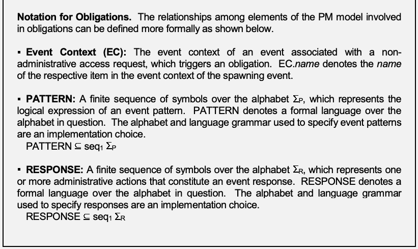
義務の表記。義務に関わる PM モデルの要素間の関係は、以下に示すように、より形式的に定義できます。
•Event Context (EC): The event context of an event associated with a non-administrative access request, which triggers an obligation. EC.name denotes the name of the respective item in the event context of the spawning event.
•イベントコンテキスト（EC）: 義務を引き起こす、非管理アクセス要求に関連するイベントのイベントコンテキスト。EC.name は、そのイベントを生じさせたイベントのイベントコンテキスト内の、対応する項目の名前を表します。
•PATTERN: A finite sequence of symbols over the alphabet \(\Sigma _{P}\), which represents the logical expression of an event pattern. PATTERN denotes a formal language over the alphabet in question. The alphabet and language grammar used to specify event patterns are an implementation choice.
\(\mathrm{PATTERN} \subseteq \mathrm{seq}_{1} \Sigma _{P}\)
•PATTERN: アルファベット \(\Sigma _{P}\) 上の有限の記号列であり、イベントパターンの論理式を表します。PATTERN は、当該アルファベット上の形式言語を表します。イベントパターンを規定するために使用されるアルファベットと言語の文法は、実装の選択です。
\(\mathrm{PATTERN} \subseteq \mathrm{seq}_{1} \Sigma _{P}\)
•RESPONSE: A finite sequence of symbols over the alphabet \(\Sigma _{R}\), which represents one or more administrative actions that constitute an event response. RESPONSE denotes a formal language over the alphabet in question. The alphabet and language grammar used to specify responses are an implementation choice.
\(\mathrm{RESPONSE} \subseteq \mathrm{seq}_{1} \Sigma _{R}\)
•RESPONSE: アルファベット \(\Sigma _{R}\) 上の有限の記号列であり、イベントの応答を構成する 1 つ以上の管理上の行為を表します。RESPONSE は、当該アルファベット上の形式言語を表します。応答を規定するために使用されるアルファベットと言語の文法は、実装の選択です。
\(\mathrm{RESPONSE} \subseteq \mathrm{seq}_{1} \Sigma _{R}\)
•Obligations: The ternary relation OBLIG from U to PATTERN to RESPONSE.
\(\mathrm{OBLIG} \subseteq U \times \mathrm{PATTERN} \times \mathrm{RESPONSE}\)
原本PDFの抜粋画像
•義務: U から PATTERN から RESPONSE への三項関係 OBLIG。
\(\mathrm{OBLIG} \subseteq U \times \mathrm{PATTERN} \times \mathrm{RESPONSE}\)
3.6 Access Request Decisions
3.6 アクセス要求の決定
Authenticated users do not generate access requests directly, but instead instantiate one or more processes to generate requests on their behalf. The access decision function controls accesses in terms of processes. The user on whose behalf the process operates must hold sufficient authority over the policy elements involved in the request, in the form of at least one and possibly several privileges. That is, an access request to perform an operation on a policy element, including objects, are issued only from processes acting on behalf of some user, and is granted provided the appropriate privileges exist that allow the access, and no restriction exists that prevents the access. If a restriction does exist, the access request is denied.
認証されたユーザーはアクセス要求を直接生成せず、代わりに 1 つ以上のプロセスをインスタンス化して、自らに代わって要求を生成させます。アクセス決定関数は、プロセスの観点からアクセスを制御します。プロセスが代理を務めるユーザーは、要求に関わるポリシー要素に対して、少なくとも 1 つ、場合によっては複数の権限の形で、十分な権限を保持していなければなりません。すなわち、オブジェクトを含むポリシー要素に対する操作を実行するアクセス要求は、あるユーザーに代わって動作するプロセスからのみ発行され、そのアクセスを可能にする適切な権限が存在し、かつそのアクセスを妨げる制限が存在しない場合に許可されます。制限が存在する場合、アクセス要求は拒否されます。
The relation, \(\mathrm{AREQ} \subseteq P \times \mathrm{Op} \times \mathrm{Argseq}\), where \(\mathrm{Argseq} = \mathrm{seq}_{1} \mathrm{Arg}\) and \(\mathrm{Arg} = \{x \mid x \in \mathrm{PE} \lor x \in 2^{\mathrm{PE}} \lor x \in 2_{1}^{\mathrm{AR}} \lor x \in \mathrm{PATTERN} \lor x \in \mathrm{RESPONSE}\}\), defines the set of access requests. A tuple of the access request relation, (p, op, argseq), denotes that process, p, is requesting to perform the operation, op, on the resource or policy items referenced by the argument sequence, argseq. The argument sequence is a finite sequence of one or more arguments, which is compatible with the scope of the operation. Each argument in the sequence can be either a distinct policy element, a set of policy elements, a set of access rights, an event pattern, or an event response, as is appropriate for the operation. That is, an access request comprises an operation and a list of enumerated arguments whose type and order are dictated by the operation. Note that resource operations typically take an argument sequence comprising a single element (viz., an object identifier), while administrative operations typically take an argument sequence comprising multiple elements.
関係 \(\mathrm{AREQ} \subseteq P \times \mathrm{Op} \times \mathrm{Argseq}\)（ここで \(\mathrm{Argseq} = \mathrm{seq}_{1} \mathrm{Arg}\) および \(\mathrm{Arg} = \{x \mid x \in \mathrm{PE} \lor x \in 2^{\mathrm{PE}} \lor x \in 2_{1}^{\mathrm{AR}} \lor x \in \mathrm{PATTERN} \lor x \in \mathrm{RESPONSE}\}\)）は、アクセス要求の集合を定義します。アクセス要求関係の組 (p, op, argseq) は、プロセス p が、引数列 argseq によって参照される資源またはポリシー項目に対して、操作 op の実行を要求していることを表します。引数列は、操作の範囲に適合する 1 つ以上の引数の有限列です。列内の各引数は、操作に応じて、個別のポリシー要素、ポリシー要素の集合、アクセス権の集合、イベントパターン、またはイベント応答のいずれかです。つまり、アクセス要求は、操作と、型と順序が操作によって決まる、列挙された引数のリストで構成されます。資源操作は通常、単一の要素（すなわちオブジェクト識別子）からなる引数列を取り、管理操作は通常、複数の要素からなる引数列を取ることに注意してください。
To determine the disposition of an access request, the access decision function requires a mapping from the operation and argument sequence in question to the set of capabilities that the process must hold in order for the request to be granted. The required capabilities mapping is defined as the partial binary function ReqCap from (Op × Argseq) to \(2^{(\mathrm{AR}\times\mathrm{PE})}\), such that \(\forall\mathrm{op}\in\mathrm{Op}, \forall\mathrm{argseq}\in\mathrm{Argseq}: (\mathrm{capset} \in \mathrm{ReqCap}(\mathrm{op}, \mathrm{argseq}) \Rightarrow \forall\mathrm{ar} \in \mathrm{AR}, \forall\mathrm{pe} \in \mathrm{PE}\setminus\mathrm{PC}: ((\mathrm{ar}, e) \in \mathrm{capset}\), if and only if (ar, e), together with the other access rights in capset, form a minimal set of requisite capabilities needed to perform the operation op on argseq)). The mapping ReqCap(op, argseq) returns a set of one or more capability sets, for which the capabilities of a set, if held by the process, would allow the process to carry out the access request.3
アクセス要求の処理を決定するために、アクセス決定関数には、対象の操作と引数列から、要求が許可されるためにプロセスが保持しなければならないケーパビリティの集合への写像が必要です。必要ケーパビリティ写像は、(Op × Argseq) から \(2^{(\mathrm{AR}\times\mathrm{PE})}\) への部分二項関数 ReqCap として定義され、\(\forall\mathrm{op}\in\mathrm{Op}, \forall\mathrm{argseq}\in\mathrm{Argseq}: (\mathrm{capset} \in \mathrm{ReqCap}(\mathrm{op}, \mathrm{argseq}) \Rightarrow \forall\mathrm{ar} \in \mathrm{AR}, \forall\mathrm{pe} \in \mathrm{PE}\setminus\mathrm{PC}: ((\mathrm{ar}, e) \in \mathrm{capset}\) となるのは、(ar, e) が capset 内のほかのアクセス権とともに、argseq に対して操作 op を実行するために必要なケーパビリティの最小集合を構成する場合、かつその場合に限る)) を満たします。写像 ReqCap(op, argseq) は 1 つ以上のケーパビリティ集合からなる集合を返し、そのうちの 1 つの集合のケーパビリティをプロセスが保持していれば、プロセスはそのアクセス要求を実行できます。3
The access decision function grants a process, p, permission to execute an access request (p, op, argseq), provided the following conditions hold for each access right and policy element pair (ar, pe) in one of the capability sets returned by the required capabilities function, ReqCap(op, argseq):
アクセス決定関数は、必要ケーパビリティ関数 ReqCap(op, argseq) が返すケーパビリティ集合の 1 つの中の、各アクセス権とポリシー要素の対 (ar, pe) について次の条件が成り立つ場合に、プロセス p にアクセス要求 (p, op, argseq) の実行を許可します。
•There exists a privilege (Process_User(p), ar, pe).
•権限 (Process_User(p), ar, pe) が存在します。
•There does not exist a process restriction (p, ar, pe) ∈ P_RESTRICT.
•プロセス制限 (p, ar, pe) ∈ P_RESTRICT が存在しません。
•There does not exist a user restriction (Process_User(p), ar, pe) ∈ U_RESTRICT.
•ユーザー制限 (Process_User(p), ar, pe) ∈ U_RESTRICT が存在しません。
•There does not exist a user attribute restriction (ua, ar, pe) ∈ UA_RESTRICT, such that Process_User(p) is contained by user attribute ua.
•Process_User(p) がユーザー属性 ua に包含されるような、ユーザー属性制限 (ua, ar, pe) ∈ UA_RESTRICT が存在しません。
Otherwise, the requested access is denied.
そうでない場合、要求されたアクセスは拒否されます。
The computation of an access decision is illustrated in Figure 5. The thick arrows depict the derivation of the privilege and restriction relations respectively from the association and prohibition relations, while the thin arrows depict the use of those derived relations in reaching an access decision.
アクセス決定の計算を図 5 に示します。太い矢印は、関連付け関係と禁止関係から、それぞれ権限関係と制限関係が導出されることを表し、細い矢印は、アクセス決定に至る際にそれらの導出された関係が使用されることを表します。

アクセス決定の計算を示す図です。「Prohibitions」（禁止）と書かれた破線の枠の中に「U_DENY」「P_DENY」「UA_DENY」があります。太い矢印が「ASSOCIATION」から「PRIVILEGE」へ、「U_DENY」から「U_RESTRICT」へ、「P_DENY」から「P_RESTRICT」へ、「UA_DENY」から「UA_RESTRICT」へ伸びています。PRIVILEGE、U_RESTRICT、P_RESTRICT、UA_RESTRICTからの細い線が合流し、「Access_Decision: AREQ ⟶ {grant, deny}」の箱へ矢印で向かいます。
Figure 5: Computing an Access Decision
図 5: アクセス決定の計算
Notation for Access Request Decisions. The elements of the PM model involved in issues access requests and reaching access request decisions can be described more formally as shown below.
原本PDFの抜粋画像
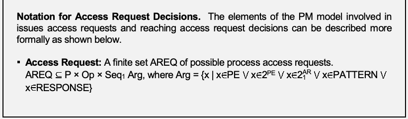
アクセス要求の決定に関する表記。アクセス要求を発行し、その決定に至る過程に関わる PM モデルの要素は、以下に示すように、より形式的に記述されます。
•Access Request: A finite set AREQ of possible process access requests.
\(\mathrm{AREQ} \subseteq P \times \mathrm{Op} \times \mathrm{Seq}_{1} \mathrm{Arg}\), where \(\mathrm{Arg} = \{x \mid x\in\mathrm{PE} \lor x\in2^{\mathrm{PE}} \lor x\in2_{1}^{\mathrm{AR}} \lor x\in\mathrm{PATTERN} \lor x\in\mathrm{RESPONSE}\}\)
•アクセス要求: プロセスのアクセス要求として可能なものの有限集合 AREQ。
\(\mathrm{AREQ} \subseteq P \times \mathrm{Op} \times \mathrm{Seq}_{1} \mathrm{Arg}\)（ここで \(\mathrm{Arg} = \{x \mid x\in\mathrm{PE} \lor x\in2^{\mathrm{PE}} \lor x\in2_{1}^{\mathrm{AR}} \lor x\in\mathrm{PATTERN} \lor x\in\mathrm{RESPONSE}\}\)）
•Required Capabilities: The partial binary function ReqCap from \(\mathrm{Op} \times \mathrm{seq}_{1} \mathrm{Arg}\) to \(2^{(\mathrm{AR}\times\mathrm{PE})}\).
原本PDFの抜粋画像
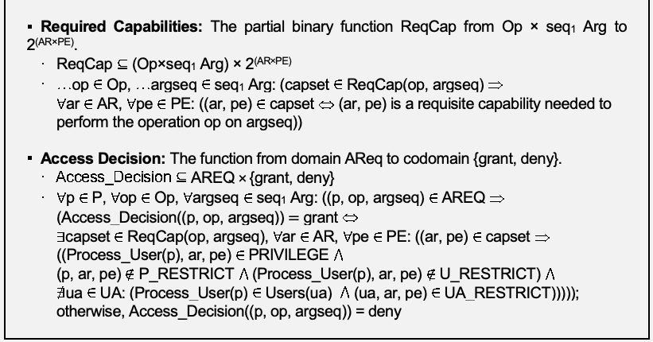
•必要ケーパビリティ: \(\mathrm{Op} \times \mathrm{seq}_{1} \mathrm{Arg}\) から \(2^{(\mathrm{AR}\times\mathrm{PE})}\) への部分二項関数 ReqCap。
•\(\mathrm{ReqCap} \subseteq (\mathrm{Op}\times\mathrm{seq}_{1} \mathrm{Arg}) \times 2^{(\mathrm{AR}\times\mathrm{PE})}\)
•\(\mathrm{ReqCap} \subseteq (\mathrm{Op}\times\mathrm{seq}_{1} \mathrm{Arg}) \times 2^{(\mathrm{AR}\times\mathrm{PE})}\)
•\(\ldots\mathrm{op} \in \mathrm{Op}, \ldots\mathrm{argseq} \in \mathrm{seq}_{1} \mathrm{Arg}: (\mathrm{capset} \in \mathrm{ReqCap}(\mathrm{op}, \mathrm{argseq}) \Rightarrow \forall\mathrm{ar} \in \mathrm{AR}, \forall\mathrm{pe} \in \mathrm{PE}: ((\mathrm{ar}, \mathrm{pe}) \in \mathrm{capset} \Leftrightarrow (\mathrm{ar}, \mathrm{pe})\) is a requisite capability needed to perform the operation op on argseq))
•\(\ldots\mathrm{op} \in \mathrm{Op}, \ldots\mathrm{argseq} \in \mathrm{seq}_{1} \mathrm{Arg}: (\mathrm{capset} \in \mathrm{ReqCap}(\mathrm{op}, \mathrm{argseq}) \Rightarrow \forall\mathrm{ar} \in \mathrm{AR}, \forall\mathrm{pe} \in \mathrm{PE}: ((\mathrm{ar}, \mathrm{pe}) \in \mathrm{capset} \Leftrightarrow (\mathrm{ar}, \mathrm{pe})\) は、操作 op を argseq に対して実行するために必要なケーパビリティです))
•Access Decision: The function from domain AReq to codomain {grant, deny}.
•アクセス決定: 定義域 AReq から余域 {grant, deny} への関数。
•\(\mathrm{Access\_Decision} \subseteq \mathrm{AREQ} \times \{\mathrm{grant}, \mathrm{deny}\}\)
•\(\mathrm{Access\_Decision} \subseteq \mathrm{AREQ} \times \{\mathrm{grant}, \mathrm{deny}\}\)
•\(\forall p \in P, \forall\mathrm{op} \in \mathrm{Op}, \forall\mathrm{argseq} \in \mathrm{seq}_{1} \mathrm{Arg}: ((p, \mathrm{op}, \mathrm{argseq}) \in \mathrm{AREQ} \Rightarrow (\mathrm{Access\_Decision}((p, \mathrm{op}, \mathrm{argseq})) = \mathrm{grant} \Leftrightarrow \exists\mathrm{capset} \in \mathrm{ReqCap}(\mathrm{op}, \mathrm{argseq}), \forall\mathrm{ar} \in \mathrm{AR}, \forall\mathrm{pe} \in \mathrm{PE}: ((\mathrm{ar}, \mathrm{pe}) \in \mathrm{capset} \Rightarrow ((\mathrm{Process\_User}(p), \mathrm{ar}, \mathrm{pe}) \in \mathrm{PRIVILEGE} \land (p, \mathrm{ar}, \mathrm{pe}) \notin \mathrm{P\_RESTRICT} \land (\mathrm{Process\_User}(p), \mathrm{ar}, \mathrm{pe}) \notin \mathrm{U\_RESTRICT}) \land \nexists\mathrm{ua} \in \mathrm{UA}: (\mathrm{Process\_User}(p) \in \mathrm{Users}(\mathrm{ua}) \land (\mathrm{ua}, \mathrm{ar}, \mathrm{pe}) \in \mathrm{UA\_RESTRICT})))))\); otherwise, \(\mathrm{Access\_Decision}((p, \mathrm{op}, \mathrm{argseq})) = \mathrm{deny}\)
•\(\forall p \in P, \forall\mathrm{op} \in \mathrm{Op}, \forall\mathrm{argseq} \in \mathrm{seq}_{1} \mathrm{Arg}: ((p, \mathrm{op}, \mathrm{argseq}) \in \mathrm{AREQ} \Rightarrow (\mathrm{Access\_Decision}((p, \mathrm{op}, \mathrm{argseq})) = \mathrm{grant} \Leftrightarrow \exists\mathrm{capset} \in \mathrm{ReqCap}(\mathrm{op}, \mathrm{argseq}), \forall\mathrm{ar} \in \mathrm{AR}, \forall\mathrm{pe} \in \mathrm{PE}: ((\mathrm{ar}, \mathrm{pe}) \in \mathrm{capset} \Rightarrow ((\mathrm{Process\_User}(p), \mathrm{ar}, \mathrm{pe}) \in \mathrm{PRIVILEGE} \land (p, \mathrm{ar}, \mathrm{pe}) \notin \mathrm{P\_RESTRICT} \land (\mathrm{Process\_User}(p), \mathrm{ar}, \mathrm{pe}) \notin \mathrm{U\_RESTRICT}) \land \nexists\mathrm{ua} \in \mathrm{UA}: (\mathrm{Process\_User}(p) \in \mathrm{Users}(\mathrm{ua}) \land (\mathrm{ua}, \mathrm{ar}, \mathrm{pe}) \in \mathrm{UA\_RESTRICT})))))\)。それ以外の場合、\(\mathrm{Access\_Decision}((p, \mathrm{op}, \mathrm{argseq})) = \mathrm{deny}\)
4. Administrative Considerations
4. 管理上の考慮事項
The PM model distinguishes between access request on resources represented by objects (i.e., non-administrative access) and access requests for the creation and maintenance of policy elements and relations (i.e., administrative access). The previous chapter touched mainly on policies involving non-administrative access rights to object resources, specifically, the definition of associations and various types of prohibitions, and the derivation of privileges and restrictions from them, and also the definition of obligations. This chapter expands on the material from the previous chapters and focuses on the role administrative access rights play in policy.
PM モデルは、オブジェクトで表される資源へのアクセス要求（すなわち非管理アクセス）と、ポリシー要素および関係の作成と維持のためのアクセス要求（すなわち管理アクセス）を区別します。前の章では、主にオブジェクト資源に対する非管理アクセス権を含むポリシー、具体的には、関連付けと各種の禁止の定義、そこからの権限と制限の導出、および義務の定義を扱いました。この章では、前の章の内容を発展させ、ポリシーにおいて管理アクセス権が果たす役割に焦点を当てます。
Many access rights categorized as administrative access rights, such as those needed to create a file and assign it to a folder, arguably seem non-administrative from a usage standpoint. Nevertheless, from a policy specification standpoint, they are considered administrative (e.g., in this case, an association with access rights for creating an object and assigning the object to an object attribute is needed). The main difference between the two types of access rights is that non-administrative actions pertain to activities on protected resources represented as objects, while administrative actions pertain to activities on the policy representation comprising the policy elements and relationships defined within and maintained by the PM. This chapter explains the principles involved in applying administrative access rights to key relations of the PM model. It also discusses the precepts to follow when conducting administrative activities.
管理アクセス権に分類される多くのアクセス権は、たとえばファイルを作成してフォルダーに割り当てるために必要なものなど、使用の観点からは非管理的に思えるかもしれません。しかし、ポリシー仕様の観点からは、それらは管理的と見なされます（たとえばこの場合、オブジェクトを作成し、そのオブジェクトをオブジェクト属性に割り当てるためのアクセス権を持つ関連付けが必要です）。2 種類のアクセス権の主な違いは、非管理的な行為がオブジェクトとして表される保護対象資源に対する活動に関わるのに対し、管理的な行為は、PM の内部で定義・維持されるポリシー要素と関係からなるポリシー表現に対する活動に関わることです。この章では、PM モデルの主要な関係に管理アクセス権を適用する際の原則を説明します。また、管理活動を行う際に従うべき規範についても論じます。
4.1 Administrative Associations
4.1 管理上の関連付け
The term administrative association refers to an association that involves administrative access rights exclusively to designate access authority. Administrative associations appear on an authorization graph, as do non-administrative associations. However, administrative associations can apply to any type of attribute, whereas non-administrative associations typically apply only to object attributes.
管理上の関連付けという用語は、アクセス権限を指定するために管理アクセス権のみを含む関連付けを指します。管理上の関連付けは、非管理の関連付けと同様に認可グラフに現れます。ただし、非管理の関連付けが通常はオブジェクト属性にのみ適用されるのに対し、管理上の関連付けは任意の種類の属性に適用できます。
Administrative associations are characterized by the ternary relation from UA to \(2_{1}^{\mathrm{AAR}}\) to AT (i.e., a subset of \(\mathrm{UA} \times 2_{1}^{\mathrm{AAR}} \times \mathrm{AT}\)). As mentioned in the previous chapter, when resource and administrative access rights are maintained separately within individual associations, the association relation can be correspondingly partitioned into two parts: \(\mathrm{ASSOCIATION} \subseteq (\mathrm{UA} \times 2_{1}^{\mathrm{RAR}} \times \mathrm{AT}) \cup (\mathrm{UA} \times 2_{1}^{\mathrm{AAR}} \times \mathrm{AT})\). Segregating associations this way presents no difficulties, since any association expressed with mixed resource and administrative access rights can be represented, without loss of meaning or function, as a pair of associations, belonging respectively to \(\mathrm{UA} \times 2_{1}^{\mathrm{RAR}} \times \mathrm{AT}\) and \(\mathrm{UA} \times 2_{1}^{\mathrm{AAR}} \times \mathrm{AT}\).
管理上の関連付けは、UA から \(2_{1}^{\mathrm{AAR}}\) から AT への三項関係（すなわち、\(\mathrm{UA} \times 2_{1}^{\mathrm{AAR}} \times \mathrm{AT}\) の部分集合）によって特徴付けられます。前の章で述べたとおり、資源アクセス権と管理アクセス権が個々の関連付けの中で別々に維持される場合、関連付け関係もそれに応じて 2 つの部分に分割できます。\(\mathrm{ASSOCIATION} \subseteq (\mathrm{UA} \times 2_{1}^{\mathrm{RAR}} \times \mathrm{AT}) \cup (\mathrm{UA} \times 2_{1}^{\mathrm{AAR}} \times \mathrm{AT})\)。資源アクセス権と管理アクセス権が混在して表現された関連付けは、意味や機能を失うことなく、それぞれ \(\mathrm{UA} \times 2_{1}^{\mathrm{RAR}} \times \mathrm{AT}\) と \(\mathrm{UA} \times 2_{1}^{\mathrm{AAR}} \times \mathrm{AT}\) に属する一対の関連付けとして表現できるため、このように関連付けを分離しても問題は生じません。
The following classes of administrative access rights apply to relations within the PM model:
次の種類の管理アクセス権が、PM モデル内の関係に適用されます。
•Authority to create or delete a policy element with respect to an existing element of a policy graph
•ポリシーグラフの既存の要素に関して、ポリシー要素を作成または削除する権限
•Authority to create or delete assignments between policy elements
•ポリシー要素間の割当てを作成または削除する権限
•Authority to form or rescind an association, prohibition, or obligation.
•関連付け、禁止、または義務を形成または取り消す権限。
Figure 6 presents a simple example of an authorization graph involving both administrative and non-administrative associations, which builds on the example presented earlier in Figure 3. The left side of the policy graph has been expanded to accommodate a set of administrators for the policy class, which is designated by the Administrators and OUadmin user attributes. A single user, \(u_{4}\), is assigned as an administrator for the OU. Administrative associations that specify the actions the administrator is able to carry out are illustrated in blue. Non-administrative associations that apply to common users are illustrated in black, using a different type of connector between the elements of these associations than that used for the administrative associations. This convention for depicting the two different types of associations with a distinctive type of connector is followed throughout the remainder of this report.
図 6 は、管理上の関連付けと非管理の関連付けの両方を含む認可グラフの簡単な例を示しており、図 3 で先に示した例を発展させたものです。ポリシーグラフの左側は、そのポリシークラスの管理者の集合に対応するために拡張されており、これは Administrators と OUadmin のユーザー属性によって指定されます。単一のユーザー \(u_{4}\) が、OU の管理者として割り当てられています。管理者が実行できる行為を規定する管理上の関連付けは、青で図示されています。一般ユーザーに適用される非管理の関連付けは、黒で図示されており、これらの関連付けの要素間には、管理上の関連付けに使われるものとは異なる種類のコネクタが使われています。2 種類の関連付けを異なる種類のコネクタで描くこの慣例は、本報告書の残りの部分でも踏襲されます。
![Authorization graph of Figure 3 extended with administrators. On the left, user u4 → OUadmin → Administrators → OU. The rest is as in Figure 3: u1 → Group1, u2 → Group2, u3 → Division; Group1 and Group2 → Division → OU; o1, o2 → Project1, o3 → Project2; Project1 and Project2 → Projects → OU; black dotted associations Group1 —{w}— Project1, Group2 —{w}— Project2, Division —{r}— Projects. Blue curved connectors from OUadmin show two administrative associations: "aars1" to Division and "aars2" to Projects.](assets/ir-7987r1/p0043-figure-01.png)
図3の認可グラフに管理者を加えた図です。左側では、ユーザー u4 → OUadmin → Administrators → OU です。残りは図3と同じで、u1 → Group1、u2 → Group2、u3 → Division、Group1 と Group2 → Division → OU、o1 と o2 → Project1、o3 → Project2、Project1 と Project2 → Projects → OU です。黒い点線の関連付けは Group1 —{w}— Project1、Group2 —{w}— Project2、Division —{r}— Projects です。OUadmin からの青い曲線コネクタは 2 つの管理上の関連付けを示し、「aars1」は Division に、「aars2」は Projects に向かいます。
Figure 6: Simple Example Involving Administrative Associations
図 6: 管理上の関連付けを含む単純な例
The authorization graph in Figure 6 contains the following two administrative associations: (OUadmin, \(\mathrm{aars}_{1}\), Division) and (OUadmin, \(\mathrm{aars}_{2}\), Projects), where \(\mathrm{aars}_{1}\) and \(\mathrm{aars}_{2}\) each represent a set of administrative access rights (i.e., each is a subset of AAR). The first association permits the user assigned to OUadmin to create new groups of users and individual users for the OU, to delete existing groups and users, to form new associations for existing and newly created user groups in the OU, and to rescind existing associations involving OU policy elements. The second association permits new groups of projects and individual objects to be created, existing projects and objects to be deleted, new associations to be formed for existing and new projects, and existing associations to be rescinded.
図 6 の認可グラフには、次の 2 つの管理上の関連付けが含まれています。(OUadmin, \(\mathrm{aars}_{1}\), Division) と (OUadmin, \(\mathrm{aars}_{2}\), Projects) であり、ここで \(\mathrm{aars}_{1}\) と \(\mathrm{aars}_{2}\) はそれぞれ管理アクセス権の集合を表します（すなわち、それぞれ AAR の部分集合です）。1 つ目の関連付けは、OUadmin に割り当てられたユーザーが、OU のために新しいユーザーグループと個々のユーザーを作成すること、既存のグループとユーザーを削除すること、OU 内の既存および新規作成のユーザーグループのために新しい関連付けを形成すること、OU のポリシー要素を含む既存の関連付けを取り消すことを許可します。2 つ目の関連付けは、新しいプロジェクトのグループと個々のオブジェクトの作成、既存のプロジェクトとオブジェクトの削除、既存および新規のプロジェクトのための新しい関連付けの形成、既存の関連付けの取り消しを許可します。
Without administrative associations, a system policy would be very limited. For instance, in this example, only existing objects could be viewed and modified; new users could not be created or old ones deleted and new objects could not be created without the appropriate administrative associations.
管理上の関連付けがなければ、システムポリシーは非常に限られたものになります。たとえばこの例では、適切な管理上の関連付けがなければ、既存のオブジェクトの閲覧と変更しかできず、新しいユーザーの作成や古いユーザーの削除、新しいオブジェクトの作成はできません。
Administrative privileges are derived the same way as was described earlier for resource privileges. An administrative privilege specifies a relationship between a user, an administrative access right, and a policy element. Administrative privileges can be characterized as a subset of the PRIVILEGE relation, namely those within the subset \(U \times \mathrm{AAR} \times (\mathrm{PE}\setminus\mathrm{PC})\). An individual tuple of an administrative privilege, (u, aar, e), denotes that user u holds the authority to exercise the access right aar on policy element e. For a policy comprising a single policy class, the triple (u, aar, e) is an administrative privilege, iff there exists an association (ua, ars, at) \(\in \mathrm{ASSOCIATION}\), such that user \(u \in\) Users(ua), \(\mathrm{aar} \in \mathrm{ars}\), \(\mathrm{ars} \in 2_{1}^{\mathrm{AAR}}\), and \(e \in\) Elements(at).
管理上の権限は、資源の権限について先に説明したのと同じ方法で導出されます。管理上の権限は、ユーザー、管理アクセス権、ポリシー要素の間の関係を規定します。管理上の権限は PRIVILEGE 関係の部分集合、すなわち部分集合 \(U \times \mathrm{AAR} \times (\mathrm{PE}\setminus\mathrm{PC})\) 内のものとして特徴付けることができます。管理上の権限の個々の組 (u, aar, e) は、ユーザー u がポリシー要素 e に対してアクセス権 aar を行使する権限を保持することを表します。単一のポリシークラスからなるポリシーでは、3 つ組 (u, aar, e) が管理上の権限であるのは、関連付け (ua, ars, at) \(\in \mathrm{ASSOCIATION}\) が存在し、ユーザー \(u \in\) Users(ua)、\(\mathrm{aar} \in \mathrm{ars}\)、\(\mathrm{ars} \in 2_{1}^{\mathrm{AAR}}\)、かつ \(e \in\) Elements(at) となる場合、かつその場合に限られます。
4.2 Administrative Prohibitions
4.2 管理上の禁止
Recall that prohibitions act antithetically to associations, denoting an effective set of restrictions on privileges for a specific user or process, regardless of whether any of the privileges designated actually can or cannot be derived for the user or process in question. Because the set of privileges needed for administrative operations is distinct from the set of privileges for non-administrative, resource operations, administrative prohibitions and restrictions (i.e., prohibitions specified exclusively with administrative privileges) can be identified and discussed in detail.
禁止は関連付けと対極的に作用し、特定のユーザーまたはプロセスに対する権限への有効な制限の集合を表します。これは、指定された権限のいずれかが、問題のユーザーまたはプロセスについて実際に導出できるかどうかにかかわらないことを思い出してください。管理操作に必要な権限の集合は、非管理の資源操作の権限の集合とは異なるため、管理上の禁止と制限（すなわち、管理上の権限のみで規定された禁止）を特定して詳しく論じることができます。
The quaternary relation \(\mathrm{U\_DENY\_DISJ} \subseteq U \times 2_{1}^{\mathrm{AR}} \times 2^{\mathrm{AT}} \times 2^{\mathrm{AT}}\), defines the set of user-based prohibitions. Similar to associations, any prohibition tuple, (ua, {\(\mathrm{rar}_{i}\), \(\mathrm{rar}_{j}\), … , \(\mathrm{rar}_{m}\), \(\mathrm{aar}_{k}\), \(\mathrm{aar}_{l}\), … , \(\mathrm{aar}_{n}\)}, atis, ates) whose access rights belong to both RAR and AAR can be represented as a pair of tuples, (ua, {\(\mathrm{rar}_{i}\), \(\mathrm{rar}_{j}\), … , \(\mathrm{rar}_{m}\)}, atis, ates) and (ua, {\(\mathrm{aar}_{k}\), \(\mathrm{aar}_{l}\), … , \(\mathrm{aar}_{n}\)}, atis, ates), without loss of meaning or function. When prohibitions that involve resource access rights are specified separately from prohibitions that involve administrative access rights, the user prohibition relation can be specified as \(\mathrm{U\_DENY\_DISJ} \subseteq (\mathrm{UA} \times 2_{1}^{\mathrm{RAR}} \times 2^{\mathrm{AT}} \times 2^{\mathrm{AT}}) \cup (\mathrm{UA} \times 2_{1}^{\mathrm{AAR}} \times 2^{\mathrm{AT}} \times 2^{\mathrm{AT}})\).
四項関係 \(\mathrm{U\_DENY\_DISJ} \subseteq U \times 2_{1}^{\mathrm{AR}} \times 2^{\mathrm{AT}} \times 2^{\mathrm{AT}}\) は、ユーザーベースの禁止の集合を定義します。関連付けと同様に、アクセス権が RAR と AAR の両方に属する禁止の組 (ua, {\(\mathrm{rar}_{i}\), \(\mathrm{rar}_{j}\), … , \(\mathrm{rar}_{m}\), \(\mathrm{aar}_{k}\), \(\mathrm{aar}_{l}\), … , \(\mathrm{aar}_{n}\)}, atis, ates) は、意味や機能を失うことなく、一対の組 (ua, {\(\mathrm{rar}_{i}\), \(\mathrm{rar}_{j}\), … , \(\mathrm{rar}_{m}\)}, atis, ates) と (ua, {\(\mathrm{aar}_{k}\), \(\mathrm{aar}_{l}\), … , \(\mathrm{aar}_{n}\)}, atis, ates) として表現できます。資源アクセス権を含む禁止が、管理アクセス権を含む禁止とは別に規定される場合、ユーザー禁止関係は \(\mathrm{U\_DENY\_DISJ} \subseteq (\mathrm{UA} \times 2_{1}^{\mathrm{RAR}} \times 2^{\mathrm{AT}} \times 2^{\mathrm{AT}}) \cup (\mathrm{UA} \times 2_{1}^{\mathrm{AAR}} \times 2^{\mathrm{AT}} \times 2^{\mathrm{AT}})\) と規定できます。
The tuple, (u, aars, atis, ates) \(\in \mathrm{U\_DENY\_DISJ}\), where \(u \in U\), \(\mathrm{aars} \in 2_{1}^{\mathrm{AAR}}\), \(\mathrm{atis} \in 2^{\mathrm{AT}}\), \(\mathrm{ates} \in 2^{\mathrm{AT}}\), and \(\mathrm{atis} \cup \mathrm{ates} \neq \varnothing\), denotes that any process p, executing on behalf of user u, is withheld the the authority to exercise any of the access rights within the access right set, aars, against any policy elements that lie within the disjunctive range of the inclusion and exclusion sets of attributes, DisjRange(atis,ates). Similarly, an individual tuple (u, aars, atis, ates) of the quaternary relation \(\mathrm{U\_DENY\_CONJ} \subseteq U \times 2_{1}^{\mathrm{AAR}} \times 2^{\mathrm{AT}} \times 2^{\mathrm{AT}}\), denotes that any process p, executing on behalf of user u, is withheld the authority to exercise any of the access rights within the access right set, aars, over any policy element against any policy elements that lie within the conjunctive range of the inclusion and exclusion sets of attributes, ConjRange(atis,ates).
組 (u, aars, atis, ates) \(\in \mathrm{U\_DENY\_DISJ}\)（ここで \(u \in U\)、\(\mathrm{aars} \in 2_{1}^{\mathrm{AAR}}\)、\(\mathrm{atis} \in 2^{\mathrm{AT}}\)、\(\mathrm{ates} \in 2^{\mathrm{AT}}\)、かつ \(\mathrm{atis} \cup \mathrm{ates} \neq \varnothing\)）は、ユーザー u に代わって実行されるあらゆるプロセス p が、属性の包含集合と除外集合の選言範囲 DisjRange(atis,ates) に含まれるポリシー要素に対し、アクセス権集合 aars 内のいずれのアクセス権も行使する権限を与えられないことを表します。同様に、四項関係 \(\mathrm{U\_DENY\_CONJ} \subseteq U \times 2_{1}^{\mathrm{AAR}} \times 2^{\mathrm{AT}} \times 2^{\mathrm{AT}}\) の個々の組 (u, aars, atis, ates) は、ユーザー u に代わって実行されるあらゆるプロセス p が、属性の包含集合と除外集合の連言範囲 ConjRange(atis,ates) に含まれるポリシー要素に対して、アクセス権集合 aars 内のいずれのアクセス権も行使する権限を与えられないことを表します。
The treatment of process-based prohibitions to accommodate the bifurcation of administrative access rights from resources access rights is similar to those for user-based prohibitions. The disjunctive process prohibition relation can be specified as \(\mathrm{P\_DENY\_DISJ} \subseteq (P \times 2_{1}^{\mathrm{RAR}} \times 2^{\mathrm{AT}} \times 2^{\mathrm{AT}}) \cup (P \times 2_{1}^{\mathrm{AAR}} \times 2^{\mathrm{AT}} \times 2^{\mathrm{AT}})\), and the conjunctive process prohibition relation as \(\mathrm{P\_DENY\_CONJ} \subseteq (P \times 2_{1}^{\mathrm{RAR}} \times 2^{\mathrm{AT}} \times 2^{\mathrm{AT}}) \cup (P \times 2_{1}^{\mathrm{AAR}} \times 2^{\mathrm{AT}} \times 2^{\mathrm{AT}})\). The same treatment also applies to user attribute-based prohibitions. The disjunctive user attribute prohibition relation can be specified as \(\mathrm{UA\_DENY\_DISJ} \subseteq (\mathrm{UA} \times 2_{1}^{\mathrm{RAR}} \times 2^{\mathrm{AT}} \times 2^{\mathrm{AT}}) \cup (\mathrm{UA} \times 2_{1}^{\mathrm{AAR}} \times 2^{\mathrm{AT}} \times 2^{\mathrm{AT}})\), and the conjunctive user attribute prohibition relation as \(\mathrm{UA\_DENY\_CONJ} \subseteq (\mathrm{UA} \times 2_{1}^{\mathrm{RAR}} \times 2^{\mathrm{AT}} \times 2^{\mathrm{AT}}) \cup (\mathrm{UA} \times 2_{1}^{\mathrm{AAR}} \times 2^{\mathrm{AT}} \times 2^{\mathrm{AT}})\).
管理アクセス権を資源アクセス権から分離する扱いは、プロセスベースの禁止についてもユーザーベースの禁止と同様です。選言的プロセス禁止関係は \(\mathrm{P\_DENY\_DISJ} \subseteq (P \times 2_{1}^{\mathrm{RAR}} \times 2^{\mathrm{AT}} \times 2^{\mathrm{AT}}) \cup (P \times 2_{1}^{\mathrm{AAR}} \times 2^{\mathrm{AT}} \times 2^{\mathrm{AT}})\) と規定でき、連言的プロセス禁止関係は \(\mathrm{P\_DENY\_CONJ} \subseteq (P \times 2_{1}^{\mathrm{RAR}} \times 2^{\mathrm{AT}} \times 2^{\mathrm{AT}}) \cup (P \times 2_{1}^{\mathrm{AAR}} \times 2^{\mathrm{AT}} \times 2^{\mathrm{AT}})\) と規定できます。同じ扱いはユーザー属性ベースの禁止にも適用されます。選言的ユーザー属性禁止関係は \(\mathrm{UA\_DENY\_DISJ} \subseteq (\mathrm{UA} \times 2_{1}^{\mathrm{RAR}} \times 2^{\mathrm{AT}} \times 2^{\mathrm{AT}}) \cup (\mathrm{UA} \times 2_{1}^{\mathrm{AAR}} \times 2^{\mathrm{AT}} \times 2^{\mathrm{AT}})\) と規定でき、連言的ユーザー属性禁止関係は \(\mathrm{UA\_DENY\_CONJ} \subseteq (\mathrm{UA} \times 2_{1}^{\mathrm{RAR}} \times 2^{\mathrm{AT}} \times 2^{\mathrm{AT}}) \cup (\mathrm{UA} \times 2_{1}^{\mathrm{AAR}} \times 2^{\mathrm{AT}} \times 2^{\mathrm{AT}})\) と規定できます。
4.3 Administrative Obligations
4.3 管理上の義務
Conceptually, obligations for administrative access requests are distinct from, but similar to those for non-administrative access requests. Like a non-administrative obligation, an administrative obligation consists of an event pattern and a response, and the response is triggered by events that match the event pattern. The invocation of administrative routines also constitutes the response for an administrative obligation, and the event context for administrative events follows the same arrangement as that for non-administrative events. The main distinction is that administrative obligations are triggered by events that occur only when an administrative access request is approved by the access decision function and successfully carried out.
概念的には、管理アクセス要求に対する義務は、非管理アクセス要求に対する義務とは別のものですが、類似しています。非管理の義務と同様に、管理上の義務はイベントパターンと応答で構成され、応答はイベントパターンに一致するイベントによって引き起こされます。管理ルーチンの呼び出しも管理上の義務の応答を構成し、管理イベントのイベントコンテキストは、非管理イベントのものと同じ構成に従います。主な違いは、管理上の義務は、アクセス決定関数によって管理アクセス要求が承認され、正常に実行された場合にのみ発生するイベントによって引き起こされることです。
4.4 Administrative Access Request Decisions
4.4 管理上のアクセス要求の決定
Access requests bearing an administrative operation are somewhat different from those bearing a non-administrative operation. Recall that for an individual access request, (p, op, argseq) \(\in \mathrm{AREQ}\), op designates an operation involving the operands (i.e., resources and policy items) referenced in the argument sequence, argseq. The arguments in the sequence can be one of the following items: a distinct policy element, a set of policy elements, an event pattern, a response, and a set of access rights. The access request relation can be conveniently partitioned by the type of operation involved into two parts: \(\mathrm{AREQ} \subseteq (P \times \mathrm{ROP} \times \mathrm{seq}_{1} \mathrm{Arg}) \cup (P \times \mathrm{AOP} \times \mathrm{seq}_{1}\) Arg), where \(\mathrm{Arg} = \{x \mid x \in \mathrm{PE} \lor x \in 2^{\mathrm{PE}} \lor x \in 2_{1}^{\mathrm{AR}} \lor x \in \mathrm{PATTERN} \lor x \in \mathrm{RESPONSE}\}\). When the access request contains a resource operation, the argument sequence contains only a single item representing an object resource of interest. For an administrative operation, however, the access request typically involves not just a single item, but multiple items, needed to enact the desired policy.
管理操作を伴うアクセス要求は、非管理操作を伴うものとは多少異なります。個々のアクセス要求 (p, op, argseq) \(\in \mathrm{AREQ}\) について、op は、引数列 argseq で参照されるオペランド（すなわち資源とポリシー項目）に関わる操作を指定します。列内の引数には、個別のポリシー要素、ポリシー要素の集合、イベントパターン、応答、またはアクセス権の集合のいずれかが含まれます。アクセス要求関係は、関与する操作の種類に応じて、便宜上 2 つに分割できます。\(\mathrm{AREQ} \subseteq (P \times \mathrm{ROP} \times \mathrm{seq}_{1} \mathrm{Arg}) \cup (P \times \mathrm{AOP} \times \mathrm{seq}_{1}\) Arg)、ここで \(\mathrm{Arg} = \{x \mid x \in \mathrm{PE} \lor x \in 2^{\mathrm{PE}} \lor x \in 2_{1}^{\mathrm{AR}} \lor x \in \mathrm{PATTERN} \lor x \in \mathrm{RESPONSE}\}\)。アクセス要求に資源操作が含まれる場合、引数列には対象となるオブジェクト資源を表す項目が 1 つだけ含まれます。一方、管理操作の場合、アクセス要求には通常、単一の項目だけでなく、意図するポリシーを実現するために必要な複数の項目が含まれます。
The order of the arguments in an argument sequence for an administrative access request is significant, as is the number and type. For instance, the creation of an assignment between two object attributes, (p, create-OAtoOA, \(\langle\mathrm{oa}_{i}\), \(\mathrm{oa}_{j}\rangle\)), is completely different from one where the order is reversed, (p, create-OAtoOA, \(\langle\mathrm{oa}_{j}\), \(\mathrm{oa}_{i}\rangle\)). Exactly two policy elements are required by the create-OAtoOA operation: the first in the sequence corresponding to the tail of the assignment and the second to the head. In contrast, an administrative access request containing the administrative operation, create-Assoc, to create a read association between a user attribute and an object attribute, (p, create-Assoc, \(\langle\mathrm{ua}_{i}\), {r}, \(\mathrm{oa}_{j}\rangle\)), requires an argument sequence of exactly three arguments: a user attribute, a set of access rights, and an object attribute.
管理アクセス要求の引数列における引数の順序は、その数や型と同様に重要です。たとえば、2 つのオブジェクト属性の間の割当てを作成する操作 (p, create-OAtoOA, \(\langle\mathrm{oa}_{i}\), \(\mathrm{oa}_{j}\rangle\)) は、順序を逆にした操作 (p, create-OAtoOA, \(\langle\mathrm{oa}_{j}\), \(\mathrm{oa}_{i}\rangle\)) とはまったく異なります。create-OAtoOA 操作には、ちょうど 2 つのポリシー要素が必要です。列の 1 つ目は割当ての始点に、2 つ目は終点に対応します。これに対し、ユーザー属性とオブジェクト属性の間に読み取り関連付けを作成する管理操作 create-Assoc を含むアクセス要求 (p, create-Assoc, \(\langle\mathrm{ua}_{i}\), {r}, \(\mathrm{oa}_{j}\rangle\)) には、ユーザー属性、アクセス権の集合、オブジェクト属性というちょうど 3 つの引数からなる列が必要です。
The computation of an access decision involving an administrative operation proceeds as described in the previous chapter. For an administrative operation to be granted, the user on whose behalf the process operates must hold sufficient authority over the policy items in the argument sequence in the form of at least one, and possibly more, administrative privileges, and any restrictions to the contrary must not exist.
管理操作を伴うアクセス決定の計算は、前の章で説明したとおりに進みます。管理操作が許可されるには、プロセスが代理を務めるユーザーが、引数列内のポリシー項目に対して、少なくとも 1 つ、場合によってはそれ以上の管理上の権限の形で十分な権限を保持していなければならず、それに反する制限が存在してはなりません。
4.5 Administrative Commands and Routines
4.5 管理コマンドとルーチン
Administrative commands and routines are the means by which policy specifications are formed. Each access request involving an administrative operation corresponds on a one-to-one basis to an administrative routine, which uses the sequence of arguments in the access request to perform the access. As described in the previous section, Section 4.4, the access decision function grants the access request (and initiation of the respective administrative routine), only if the process holds all prohibition-free access rights over the items in the argument sequence needed to carry out the access. The administrative routine, in turn, uses one or more administrative commands to perform the access. The diagram in Figure 7 gives an overview of the role administrative routines and commands in the treatment of administrative access requests.
管理コマンドとルーチンは、ポリシー仕様を形成する手段です。管理操作を伴う各アクセス要求は管理ルーチンと一対一に対応し、そのルーチンはアクセス要求内の引数列を使ってアクセスを実行します。前節の 4.4 節で説明したとおり、アクセス決定関数がアクセス要求（および対応する管理ルーチンの開始）を許可するのは、プロセスがアクセスの実行に必要な、引数列内の項目に対する禁止のないアクセス権をすべて保持している場合に限られます。管理ルーチンは、アクセスを実行するために 1 つ以上の管理コマンドを使用します。図 7 は、管理アクセス要求の処理における管理ルーチンとコマンドの役割の概要を示しています。
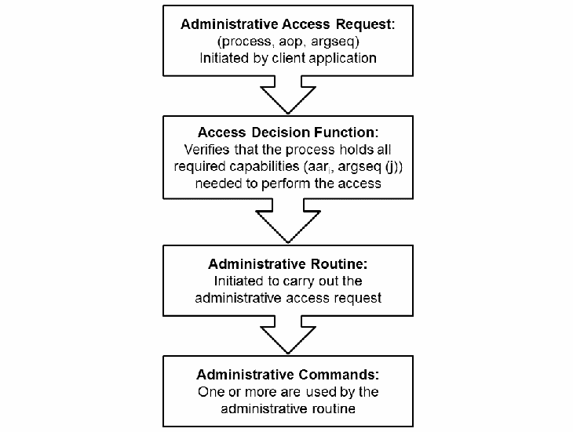
下向きの太い矢印でつながった4つの箱の流れ図です。「Administrative Access Request: (process, aop, argseq) Initiated by client application（管理アクセス要求：(プロセス、aop、argseq)。クライアントアプリケーションが開始）」→「Access Decision Function: Verifies that the process holds all required capabilities (aar_i, argseq (j)) needed to perform the access（アクセス決定関数：アクセスの実行に必要なすべての必須アクセス権 (aar_i, argseq (j)) をプロセスが保持していることを検証）」→「Administrative Routine: Initiated to carry out the administrative access request（管理ルーチン：管理アクセス要求を実行するために開始）」→「Administrative Commands: One or more are used by the administrative routine（管理コマンド：管理ルーチンが 1 つ以上使用）」の順です。
Figure 7: Administrative Routines and Commands in Access Request Processing
図 7: アクセス要求処理における管理ルーチンとコマンド
The syntax and notation for administrative commands and routines are discussed in detail below. The list of core administrative commands and routines for the PM, along with a description of their semantics, are presented respectively in Appendix C and Appendix D.
管理コマンドとルーチンの構文と表記については、以下で詳しく論じます。PM の中核となる管理コマンドとルーチンの一覧と、その意味の記述は、それぞれ付録 C と付録 D に示します。
4.5.1 Administrative Commands
4.5.1 管理コマンド
Administrative commands describe rudimentary operations that alter the policy elements and relationships of the PM model, which comprise the authorization state. An administrative command is represented as a parameterized procedure, whose body describes state changes to policy that occur when the described behavior is carried out (e.g., a policy element or relation Y changes state to Y′ when some function f is applied). Administrative commands are specified using the following format:
管理コマンドは、認可状態を構成する PM モデルのポリシー要素と関係を変更する、基本的な操作を記述します。管理コマンドは、パラメータ付き手続きとして表現され、その本体は、記述された振る舞いが実行されるときに生じるポリシーの状態変化を記述します（たとえば、ポリシー要素または関係 Y は、何らかの関数 f が適用されると、状態 Y′ に変化します）。管理コマンドは、次の形式を使って規定されます。
The name of the administrative command, Cmdname, precedes its declaration of formal parameters, \(x_{1}\): \(\mathrm{type}_{1}\), \(x_{2}\): \(\mathrm{type}_{2}\), …, \(x_{k}\): \(\mathrm{type}_{k}\) (k ≥ 0). Comments may appear anywhere in a command. Single line comments begin with double, forward slashes (i.e., // comment); multiple line comments begin with a forward slash and asterisk and end with an asterisk and forward slash (i.e., /* comment */). A set of preconditions preface the body of the command, which is delineated by left and right braces (i.e., { body }). Preconditions are logical expressions that must be satisfied for the command to be invoked. Complete predicate formulas that appear on consecutive lines are conjoined together by default (i.e., the logical “and” operation, \(\land\), is implied between them). No state changes described in the body can occur unless the preconditions are satisfied. Preconditions for administrative commands are used to ensure that the arguments supplied to the command are valid and that policy elements and relationships are maintained consistently with the properties of the model.
管理コマンドの名前 Cmdname は、形式パラメータの宣言 \(x_{1}\): \(\mathrm{type}_{1}\)、\(x_{2}\): \(\mathrm{type}_{2}\)、…、\(x_{k}\): \(\mathrm{type}_{k}\)（k ≥ 0）の前に置かれます。コメントは、コマンド内のどこにでも置けます。単一行コメントは 2 つの連続したスラッシュ（すなわち // comment）で始まります。複数行コメントは、スラッシュとアスタリスクで始まり、アスタリスクとスラッシュで終わります（すなわち /* comment */）。コマンドの本体の前には一連の事前条件が置かれ、本体は左右の波括弧（すなわち { body }）で区切られます。事前条件は、コマンドを呼び出すために満たされなければならない論理式です。連続する行に現れる完全な述語式は、デフォルトで連言になります（すなわち、それらの間には論理「かつ」演算 \(\land\) が暗黙に置かれます）。事前条件が満たされない限り、本体に記述された状態変化は一切起こりません。管理コマンドの事前条件は、コマンドに渡される引数が有効であること、およびポリシー要素と関係がモデルの特性と整合するように維持されることを確実にするために使用されます。
Consider, as an example, the administrative command CreateAssign shown below, which specifies the creation of an assignment between policy elements. The x and y parameters of the command both have the type ID (i.e., identifier). The preconditions stipulate that x and y are valid members of the set of policy elements of the model and are compatible pair of policy elements, conformant to the ASSIGN relation. The stated precondition also prevent assignment loops and cycles from occurring. The body of the command describes the addition of the ordered tuple (x, y) to the ASSIGN relation, which changes the state of that relation, denoted as ASSIGN′. If the tuple (x, y) was a member of ASSIGN to begin with, the relation is unchanged (i.e., ASSIGN′ = ASSIGN).
例として、ポリシー要素間の割当ての作成を規定する、以下に示す管理コマンド CreateAssign を考えます。このコマンドのパラメータ x と y は、どちらも ID 型（すなわち識別子）です。事前条件は、x と y がモデルのポリシー要素の集合に属する有効な要素であり、ASSIGN 関係に適合する互換性のあるポリシー要素の対であることを規定します。記載された事前条件はまた、割当てのループや循環が生じるのを防ぎます。コマンドの本体は、順序付きの組 (x, y) を ASSIGN 関係に追加することを記述します。これにより、その関係の状態は ASSIGN′ と表される状態に変化します。組 (x, y) がもともと ASSIGN の要素であった場合、関係は変化しません（すなわち ASSIGN′ = ASSIGN）。
Each administrative command entails a modification to the policy configuration that typically involves either the creation or deletion of a policy element, the creation or deletion of an assignment between policy elements, the creation or deletion of other policy entities involved in relations, or the creation or deletion of an association, prohibition, or obligation relation. Compared to administrative routines, which are discussed in the next section, administrative commands are elementary. That is, administrative commands provide the foundation for the PM framework, while administrative routines use one or more administrative commands to carry out their function. Both must perform their intended function correctly and without unwanted side effects. Access to these security-critical components must be restricted, since their deletion, replacement, or modification by unauthorized parties could affect the confidentiality, integrity, and availability of the system.
各管理コマンドは、ポリシー構成の変更を伴い、通常は、ポリシー要素の作成または削除、ポリシー要素間の割当ての作成または削除、関係に関わるその他のポリシーエンティティの作成または削除、あるいは関連付け、禁止、義務の関係の作成または削除のいずれかを含みます。次節で論じる管理ルーチンと比べて、管理コマンドは基本的なものです。つまり、管理コマンドは PM フレームワークの基盤を提供し、管理ルーチンは、その機能を実行するために 1 つ以上の管理コマンドを使用します。どちらも、意図された機能を正しく、望ましくない副作用なしに実行しなければなりません。これらのセキュリティ上重要な構成要素へのアクセスは、制限しなければなりません。認可されていない者による削除、置換、変更が、システムの機密性、完全性、可用性に影響を及ぼし得るためです。
4.5.2 Administrative Routines
4.5.2 管理ルーチン
An administrative routine consists mainly of a parameterized interface and a sequence of administrative command invocations. Administrative routines build upon administrative commands to define the protection capabilities of the PM model. The body of an administrative routine is executed as an atomic transaction—an error or lack of capabilities that causes any of the constituent commands to fail execution causes the entire routine to fail, producing the same effect as though none of the commands were ever executed. Administrative routines are specified using the following format:
管理ルーチンは、主にパラメータ付きインタフェースと、一連の管理コマンドの呼び出しで構成されます。管理ルーチンは、管理コマンドを基盤として、PM モデルの保護機能を定義します。管理ルーチンの本体はアトミックなトランザクションとして実行されます。構成要素のコマンドのいずれかの実行が、誤りまたはケーパビリティの不足によって失敗した場合、ルーチン全体が失敗し、どのコマンドも一度も実行されなかったのと同じ結果になります。管理ルーチンは、次の形式を使って規定されます。
The name of the administrative routine, Rtnname, precedes the routine’s declaration of formal parameters, \(x_{1}\): \(\mathrm{type}_{1}\), \(x_{2}\): \(\mathrm{type}_{2}\), …, \(x_{k}\): \(\mathrm{type}_{k}\) (k ≥ 0). Each formal parameter of an administrative routine can serve as an argument in any of the administrative command invocations, \(\mathrm{cmd}_{1}\), \(\mathrm{cmd}_{2}\), …, \(\mathrm{cmd}_{n}\) (n ≥ 0), that make up the body of the routine, and also in any condition prepended to a command. As with an administrative command, the body of an administrative routine is prefixed by preconditions, which in general, ensure that the arguments supplied to the routine are valid, and that certain properties on which the routine relies are maintained. As illustrated above, an optional condition can precede one or more of the commands.
管理ルーチンの名前 Rtnname は、ルーチンの形式パラメータの宣言 \(x_{1}\): \(\mathrm{type}_{1}\)、\(x_{2}\): \(\mathrm{type}_{2}\)、…、\(x_{k}\): \(\mathrm{type}_{k}\)（k ≥ 0）の前に置かれます。管理ルーチンの各形式パラメータは、ルーチンの本体を構成する管理コマンドの呼び出し \(\mathrm{cmd}_{1}\)、\(\mathrm{cmd}_{2}\)、…、\(\mathrm{cmd}_{n}\)（n ≥ 0）のいずれにおいても、またコマンドの前に付加される条件においても、引数として使用できます。管理コマンドと同様に、管理ルーチンの本体の前には事前条件が置かれ、これは一般に、ルーチンに渡される引数が有効であること、およびルーチンが依存する特定の特性が維持されることを確実にします。上に示したように、省略可能な条件を 1 つ以上のコマンドの前に置くことができます。
Administrative routines are used in a variety of ways. Figure 8 gives an overview of the types of usage possible.
管理ルーチンはさまざまな方法で使用されます。図 8 は、可能な使用の種類の概要を示しています。
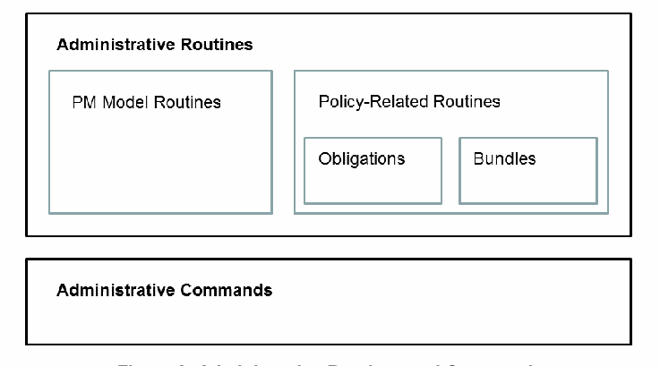
ブロック図です。外側の「Administrative Routines」（管理ルーチン）の箱の中に「PM Model Routines」（PMモデルのルーチン）と「Policy-Related Routines」（方針関連のルーチン）の2つの箱があり、後者の中に「Obligations」（義務）と「Bundles」（バンドル）があります。その下に別の箱「Administrative Commands」（管理コマンド）があります。
Figure 8: Administrative Routines and Commands
図 8: 管理ルーチンとコマンド
First and foremost, administrative routines are used to define services of the PM model. An administrative routine must be in place to carry out each valid administrative access request of the PM model on a one-to-one basis. The PM model routines form the trusted computing base of the PM framework.
何よりもまず、管理ルーチンは PM モデルのサービスを定義するために使用されます。PM モデルの有効な各管理アクセス要求を一対一で実行するために、管理ルーチンが用意されていなければなりません。PM モデルのルーチンは、PM フレームワークのトラステッドコンピューティングベースを形成します。
Another common use of administrative routines is in the definition of an obligation, as the response to be taken whenever the corresponding event pattern is matched. It is important to note that administrative routines used to define system policy through an obligation response are distinct from those that define services of the PM model and are used to fulfill administrative access requests. Not only are they invoked differently, but the authorization requirements for each are also different.4 Another way of explaining the situation is that PM model routines are unsuited for and not usable with obligations. The most common types of administrative routines defined for use in setting policy via obligations involve the creation of assignments or prohibitions. Examples of them are given later in the report.
管理ルーチンのもう 1 つの一般的な使用は、義務の定義において、対応するイベントパターンが一致するたびに実行される応答として用いることです。義務の応答を通じてシステムポリシーを定義するために使用される管理ルーチンは、PM モデルのサービスを定義し、管理アクセス要求を満たすために使用されるものとは別であることに注意することが重要です。それらは呼び出し方が異なるだけでなく、それぞれに必要な認可要件も異なります。4 別の言い方をすれば、PM モデルのルーチンは義務には適さず、義務とともに使用できません。義務を通じてポリシーを設定するために使用するよう定義される管理ルーチンの最も一般的な種類は、割当てまたは禁止の作成を伴うものです。それらの例は、本報告書の後半で示します。
Administrative routines can also be used to facilitate the administration of system policies. For example, when a new user is created, an administrator typically creates a number of containers, links them together through assignments, and through associations, grants the authority for the user to access the containers as its work space. Rather than manually repeating each step of this sequence of administrative actions for each new user, the entire sequence of actions can be defined as a single administrative routine and executed in its entirety as an atomic action.
管理ルーチンは、システムポリシーの管理を容易にするためにも使用できます。たとえば、新しいユーザーが作成されると、管理者は通常、多数のコンテナを作成し、それらを割当てによって相互に連結し、関連付けによって、そのユーザーがコンテナを作業領域としてアクセスする権限を付与します。新しいユーザーごとに、この一連の管理上の行為の各ステップを手作業で繰り返す代わりに、一連の行為全体を単一の管理ルーチンとして定義し、アトミックな行為として全体を実行できます。
Taking this idea of bundling a step further, it is possible to combine a lengthy extended sequence of administrative actions together into a single administrative routine that is capable of building an entire system policy. This type of bundling would allow an established policy to be instantiated quickly elsewhere, and also allow libraries of routines containing various kinds of vetted policies or policy enhancements to be assembled and shared on a broad scale.
この一括化の考え方をさらに進めると、長く拡張された一連の管理上の行為を、システムポリシー全体を構築できる単一の管理ルーチンにまとめることが可能です。この種の一括化により、確立されたポリシーをほかの場所で迅速にインスタンス化できるほか、さまざまな種類の検証済みのポリシーまたはポリシーの強化を含むルーチンのライブラリを、広い規模で作成して共有できるようになります。
4.5.3 Administrative Actions
4.5.3 管理上の行為
Within the PM framework, several basic precepts govern the actions that a user with administrative authority can take when using administrative routines and commands to specify policy. They are as follows:
PM フレームワークでは、管理権限を持つユーザーが、管理ルーチンとコマンドを使ってポリシーを規定する際に取り得る行為を、いくつかの基本原則が統制します。それらは次のとおりです。
•Initial Conditions. In the initial state of the PM framework, certain users designated as administrators may already hold authority over policy elements pre-established by the framework, via one or more associations. Policy classes serve as the foundation of subsequent policy specification activities.
•初期条件。PM フレームワークの初期状態では、管理者として指定された特定のユーザーが、1 つ以上の関連付けを通じて、フレームワークによってあらかじめ確立されたポリシー要素に対する権限をすでに保持していることがあります。ポリシークラスは、その後のポリシー仕様化の活動の基盤として機能します。
•Element Additions. At the moment when a user Alpha creates a policy element Beta, it obtains a reference to the newly created Beta, which it can use in conjunction with other existing policy elements to build up a specification. The ability to create certain policy elements may be reserved exclusively for particular users or administrators.
•要素の追加。ユーザー Alpha がポリシー要素 Beta を作成した時点で、Alpha は新しく作成された Beta への参照を得ます。これを、ほかの既存のポリシー要素と組み合わせて使い、仕様を構築できます。特定のポリシー要素を作成する能力は、特定のユーザーまたは管理者のみに限定されることがあります。
•Relationship Changes. When user A successfully creates a policy element Beta, it may then assign Beta to an existing compatible policy element for which it holds authority and thereby gain additional authority over Beta through the inheritance of properties. The authority that Alpha holds over Beta and other policy elements may in turn allow Alpha to define additional relationships among them or to delete exist relationships.
•関係の変更。ユーザー A がポリシー要素 Beta を正常に作成すると、A は、自らが権限を持つ既存の互換性のあるポリシー要素に Beta を割り当てることができ、それによって、特性の継承を通じて Beta に対する追加の権限を得ます。A が Beta およびほかのポリシー要素に対して持つ権限により、今度は A が、それらの間に追加の関係を定義したり、既存の関係を削除したりできる場合があります。
•Element Deletions. Any user Alpha that holds sufficient administrative authority over a policy element Beta can delete the policy element. However, existing relationships involving Beta must be taken into account and addressed before deleting Beta.
•要素の削除。ポリシー要素 Beta に対して十分な管理権限を持つユーザー Alpha は、そのポリシー要素を削除できます。ただし、Beta を削除する前に、Beta に関わる既存の関係を考慮し、対処しなければなりません。
•Automation. A user with sufficient administrative authority may define obligations that carry out a set of predefined activities on behalf of the user, based on the occurrence of specific types of events.5
•自動化。十分な管理権限を持つユーザーは、特定の種類のイベントの発生に基づいて、そのユーザーに代わって一連の事前定義された活動を実行する義務を定義できます。5
Administrative actions may be conducted through a graphical user interface that renders the authorization graph of a policy for an administrator to view and manipulate to perform desired modifications.
管理上の行為は、ポリシーの認可グラフを描画し、管理者が閲覧・操作して望ましい変更を行えるようにするグラフィカルユーザーインタフェースを通じて実行できます。
5. Policy Specification
5. ポリシーの仕様
This chapter consolidates the concepts and material given in the previous two chapters. It provides additional details about formulating policy specifications, including the application of one or more levels of administration and policy, and the use of access rights to govern and constrain the activities of users and administrators. Examples are given to illustrate key points of the discussion.
この章は、前の 2 つの章で示した概念と内容を統合します。1 つ以上の管理とポリシーのレベルの適用や、ユーザーと管理者の活動を統制・制約するためのアクセス権の使用を含め、ポリシー仕様の策定に関する追加の詳細を示します。議論の要点を説明するために例を示します。
5.1 Model Aspects and Use
5.1 モデルの側面と利用
From the material in previous chapters, it is evident that there are many facets to the PM model. They include the policy elements and assignments that make up a policy element diagram, the associations and prohibitions that apply to the policy element diagram to form the authorization graph, and obligations that are carried out when access-related events occur. Note that to compose a specific policy for the PM, each and every one of these items may not be required. For example, a policy may involve at a minimum only a simple policy element diagram with several associations. On the other hand, capturing a specific policy may require the use of all facets of the PM model.
前の章の内容から、PM モデルには多くの側面があることが明らかです。それらには、ポリシー要素図を構成するポリシー要素と割当て、認可グラフを形成するためにポリシー要素図に適用される関連付けと禁止、およびアクセスに関連するイベントが発生したときに実行される義務があります。PM に対して特定のポリシーを構成するために、これらの項目のすべてが必要であるとは限らないことに注意してください。たとえば、ポリシーは最低限、単純なポリシー要素図といくつかの関連付けだけを含む場合があります。一方、特定のポリシーを捉えるには、PM モデルのすべての側面を使用する必要がある場合もあります。
A couple of detailed examples are provided below to illustrate how aspects of the model can be brought together to define a specific access control policy. The examples involve a data service for electronic mail and discretionary access control for an operating system. They follow the principal mentioned earlier of not mixing resource and administrative access rights in association and prohibition relations. The examples are also purposely limited in the range of functions provided to avoid extensive policy definitions. Nevertheless, the examples should provide a good foundation for the material in the remainder of this report.
モデルの各側面を組み合わせて特定のアクセス制御ポリシーを定義する方法を説明するために、いくつかの詳細な例を以下に示します。例は、電子メールのデータサービスと、オペレーティングシステムの任意アクセス制御に関するものです。これらは、関連付けと禁止の関係において資源アクセス権と管理アクセス権を混在させないという、先に述べた原則に従っています。また、例は、広範なポリシー定義を避けるために、提供される機能の範囲を意図的に限定しています。とはいえ、例は、本報告書の残りの内容のよい土台となるはずです。
A specific policy can be correctly expressed in numerous ways, depending on the preferences of the administrator specifying the policy and the conventions followed. The examples in this section should be interpreted as a general guideline to follow when developing policy specifications, and not as a mandatory approach to follow.
特定のポリシーは、ポリシーを規定する管理者の好みや、従う慣例に応じて、多くの方法で正しく表現できます。本節の例は、ポリシー仕様を策定する際に従うべき一般的なガイドラインとして解釈すべきであり、従わなければならない必須の方法として解釈すべきではありません。
5.1.1 Electronic Mail
5.1.1 電子メール
Electronic mail is a commonly used data service that needs little introduction. For the simple electronic mail system in question, the objects involved are messages, and the object attributes include an inbox, outbox, draft folder, and trash folder for each user. Each user of the system is able to read and delete messages in its inbox, and to create, read, write, and delete messages in its outbox, draft folder, and trash folder. Each user can also write a copy of a message in its outbox to the inbox of any other user.
電子メールは、広く使用されているデータサービスであり、ほとんど説明を必要としません。ここで取り上げる単純な電子メールシステムでは、関わるオブジェクトはメッセージであり、オブジェクト属性には、各ユーザーの受信箱、送信箱、下書きフォルダー、ごみ箱フォルダーがあります。システムの各ユーザーは、自らの受信箱のメッセージを読み取り、削除でき、自らの送信箱、下書きフォルダー、ごみ箱フォルダーのメッセージを作成、読み取り、書き込み、削除できます。各ユーザーはまた、自らの送信箱にあるメッセージのコピーを、ほかの任意のユーザーの受信箱に書き込むことができます。
The policy administrator must first create a policy class for the mail system. It then can create the necessary containers and settings to organize the mail system and to manage users and establish their containers for messages. As an organizing step, the policy administrator creates the user attribute, Users, and the object attribute, Objects, and assigns them to the Mail System policy class. It also creates the object attributes Inboxes and Outboxes as system-wide containers to retain each user’s inbox and outbox respectively, and assigns both Inboxes and Outboxes to Objects. Figure 9 illustrates the policy element diagram constructed so far.
ポリシー管理者は、まずメールシステムのポリシークラスを作成しなければなりません。次に、ポリシー管理者は、メールシステムを編成し、ユーザーを管理してメッセージ用のコンテナを設定するために必要なコンテナと設定を作成できます。編成の手順として、ポリシー管理者はユーザー属性 Users とオブジェクト属性 Objects を作成し、それらを Mail System ポリシークラスに割り当てます。また、各ユーザーの受信箱と送信箱をそれぞれ保持するシステム全体のコンテナとして、オブジェクト属性 Inboxes と Outboxes を作成し、両方を Objects に割り当てます。図 9 は、ここまでに構築したポリシー要素図を示しています。
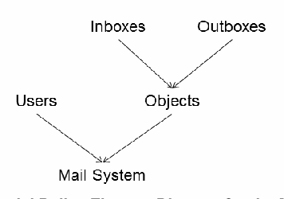
方針要素の図です。「Inboxes」と「Outboxes」が「Objects」に割り当てられ、「Users」と「Objects」が方針クラス「Mail System」に割り当てられています。
Figure 9: Partial Policy Element Diagram for the Mail System
図 9: メールシステムの部分的なポリシー要素図
For each new user, \(u_{i}\), the administrator creates an associated user attribute, ID \(u_{i}\), which is needed in forming associations that involve the user, and assigns the attribute to Users. The following object attributes are also created for each new user: In \(u_{i}\), Other \(u_{i}\), Out \(u_{i}\), Draft \(u_{i}\), and Trash \(u_{i}\). ID \(u_{i}\) is assigned to the Users container, In \(u_{i}\), is assigned to the Inboxes container, Out \(u_{i}\) is assigned to the Outboxes container, and Other \(u_{i}\) is assigned to the Objects container. The remaining containers, Draft \(u_{i}\) and Trash \(u_{i}\), are assigned to Other \(u_{i}\).6
新しいユーザー \(u_{i}\) ごとに、管理者は、そのユーザーを含む関連付けの形成に必要な、対応するユーザー属性 ID \(u_{i}\) を作成し、その属性を Users に割り当てます。新しいユーザーごとに、次のオブジェクト属性も作成されます。In \(u_{i}\)、Other \(u_{i}\)、Out \(u_{i}\)、Draft \(u_{i}\)、Trash \(u_{i}\) です。ID \(u_{i}\) は Users コンテナに、In \(u_{i}\) は Inboxes コンテナに、Out \(u_{i}\) は Outboxes コンテナに、Other \(u_{i}\) は Objects コンテナに割り当てられます。残りのコンテナである Draft \(u_{i}\) と Trash \(u_{i}\) は、Other \(u_{i}\) に割り当てられます。6
Figure 10 below illustrates the policy element diagram constructed, along with the needed associations and prohibitions (i.e., the authorization graph) for a typical user, \(u_{2}\), to conduct generic resource operations on mail objects (i.e., messages) in its containers. Associations are represented by the dotted, downward-arcing connectors and prohibitions by the dotted, upward- arcing connectors. No mail objects are shown in the figure.
下の図 10 は、典型的なユーザー \(u_{2}\) が、自らのコンテナ内のメールオブジェクト（すなわちメッセージ）に対して汎用の資源操作を行うために構築されたポリシー要素図を、必要な関連付けと禁止（すなわち認可グラフ）とともに示しています。関連付けは下向きに弧を描く点線のコネクタで、禁止は上向きに弧を描く点線のコネクタで表されています。図にメールオブジェクトは示されていません。
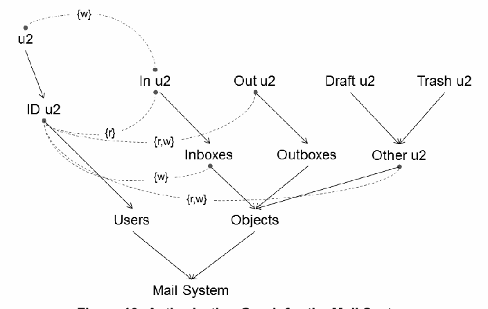
メールシステムのユーザーu2の認可グラフです。割り当ては、u2 → ID u2 → Users → Mail System、In u2 → Inboxes、Out u2 → Outboxes、Draft u2とTrash u2 → Other u2、Inboxes・Outboxes・Other u2 → Objects → Mail Systemです。ID u2から下向きの点線の関連付けが、In u2へ{r}、Out u2へ{r,w}、Inboxesへ{w}、Other u2へ{r,w}と伸びています。u2からIn u2へ、{w}と書かれた上向きの点線の禁止があります。
Figure 10: Authorization Graph for the Mail System
図 10: メールシステムの認可グラフ
The user \(u_{2}\) can read objects in its inbox, In \(u_{2}\), and can read and write objects within its outbox, Out \(u_{2}\), because of the associations between ID \(u_{2}\) and those containers. The user can read and write objects within its own draft and trash folders (i.e., the Draft \(u_{2}\) and Trash \(u_{2}\) containers), which are contained by Other \(u_{2}\), via the association between ID \(u_{2}\) and Other \(u_{2}\). The user can also write to the objects in the inbox of any user, which are by design assigned to Inboxes, but not to its own inbox, due to the write prohibition illustrated with a different style and orientation of connector (i.e., the dotted, upward-arcing connector). No mail objects can be created, however, without further authorizations, nor can any mail objects, if they existed, be deleted.
ユーザー \(u_{2}\) は、ID \(u_{2}\) とそれらのコンテナとの間の関連付けにより、自らの受信箱 In \(u_{2}\) のオブジェクトを読み取ることができ、自らの送信箱 Out \(u_{2}\) のオブジェクトを読み取り・書き込みできます。このユーザーは、ID \(u_{2}\) と Other \(u_{2}\) との間の関連付けにより、Other \(u_{2}\) に包含される自らの下書きフォルダーとごみ箱フォルダー（すなわち Draft \(u_{2}\) と Trash \(u_{2}\) のコンテナ）内のオブジェクトも、読み取り・書き込みできます。このユーザーは、設計上 Inboxes に割り当てられている、任意のユーザーの受信箱のオブジェクトにも書き込めますが、異なる様式と向きのコネクタ（すなわち、上向きに弧を描く点線のコネクタ）で示された書き込みの禁止により、自らの受信箱には書き込めません。ただし、さらなる認可がなければメールオブジェクトを作成することはできず、メールオブジェクトが存在していても、それを削除することもできません。
The administrative associations and prohibitions specified for the user complement those shown above and define the remaining actions for the user. Figure 11 illustrates the authorization graph containing the additional associations and prohibitions needed.
このユーザーに対して規定される管理上の関連付けと禁止は、上に示したものを補完し、このユーザーの残りの行為を定義します。図 11 は、必要な追加の関連付けと禁止を含む認可グラフを示しています。
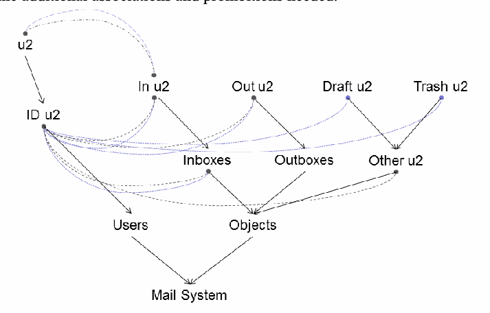
図10の認可グラフに、管理用の関係を青い線（ラベルなし）で加えた図です。要素は図10と同じく、u2、ID u2、In u2、Out u2、Draft u2、Trash u2、Inboxes、Outboxes、Other u2、Users、Objects、Mail Systemです。図10の黒い関連付けと禁止に加え、ID u2からInboxes、In u2、Out u2、Draft u2、Trash u2へ青い点線の関連付けが伸び、u2からIn u2へ青い上向きの禁止があります。
Figure 11: Authorization Graph with Administrative Associations and Prohibitions
図 11: 管理上の関連付けと禁止を含む認可グラフ
The rationale behind the associations and prohibitions that are illustrated in Figure 11 is as follows:
図 11 に示した関連付けと禁止の根拠は、次のとおりです。
•The association between ID \(u_{2}\) and Inboxes allows user \(u_{2}\) to create messages in any user’s inbox, including its own. Since the inbox of every mail system user gets assigned to Inboxes when the user is established, and the properties over Inboxes are inherited, the association essentially grants a system-wide authority.
•ID \(u_{2}\) と Inboxes との間の関連付けにより、ユーザー \(u_{2}\) は、自らの受信箱を含む任意のユーザーの受信箱にメッセージを作成できます。メールシステムのすべてのユーザーの受信箱は、ユーザーが確立されたときに Inboxes に割り当てられ、Inboxes に対する特性は継承されるため、この関連付けは本質的にシステム全体にわたる権限を付与します。
•The prohibition between \(u_{2}\) and In \(u_{2}\) serves as a counter to the system-wide authority granted to every user through the previous association. Prohibitions are illustrated similarly to associations, but with a different style and orientation of connector. This prohibition denies the user from creating messages within its own inbox, slightly overriding the system-wide authority to create messages in any inbox.
•\(u_{2}\) と In \(u_{2}\) の間の禁止は、先の関連付けを通じて各ユーザーに付与されたシステム全体にわたる権限を相殺する役割を果たします。禁止は関連付けと同様に図示されますが、コネクタの様式と向きが異なります。この禁止により、ユーザーは自らの受信箱にメッセージを作成できず、任意の受信箱にメッセージを作成するシステム全体にわたる権限がわずかに上書きされます。
•The association between ID \(u_{2}\) and In \(u_{2}\) allows the user to delete messages from its own inbox.
•ID \(u_{2}\) と In \(u_{2}\) の間の関連付けにより、ユーザーは自らの受信箱からメッセージを削除できます。
•To create and delete messages within the containers Out \(u_{i}\), Draft \(u_{i}\), and Trash \(u_{i}\), an association granting such authorization is needed between ID \(u_{2}\) and each of those containers.
•コンテナ Out \(u_{i}\)、Draft \(u_{i}\)、Trash \(u_{i}\) 内のメッセージを作成・削除するには、そのような認可を付与する関連付けが、ID \(u_{2}\) とそれらの各コンテナとの間に必要です。
A few improvements can be made to the current policy specification. For example, a user can update a copy of a sent message residing in its outbox, which can bring about an unwanted inconsistency from what was actually sent. To avoid this situation, the policy can be revised via an obligation that prevents alterations to messages in the user’s outbox, once they are written to it. The obligation presumes that draft messages are composed in the sender’s drafts folder, and when ready to be sent, copied over in their entirety to newly created message objects in the sender’s outbox, before being deleted from the drafts folder. The following obligation accomplishes the write-once restriction through the creation of a user prohibition:
現在のポリシー仕様には、いくつかの改善を加えられます。たとえば、ユーザーは自らの送信箱にある送信済みメッセージのコピーを更新できるため、実際に送信された内容との間に望ましくない不整合が生じる可能性があります。この状況を避けるために、ユーザーの送信箱にメッセージが書き込まれた後は、そのメッセージへの変更を防ぐ義務によって、ポリシーを改訂できます。この義務は、下書きメッセージが送信者の下書きフォルダーで作成され、送信の準備ができたら、全体が送信者の送信箱に新しく作成されたメッセージオブジェクトにコピーされ、その後下書きフォルダーから削除されることを前提としています。次の義務は、ユーザー禁止の作成によって、一度だけ書き込めるという制限を実現します。
Similarly, the current policy allows a user to update messages that it has posted to another user’s inbox or messages that other users have posted there. The policy can be extended slightly with an obligation to prevent any alterations to a message after it is initially written to an inbox. The obligation presumes that when a message composed in the drafts folder is sent, a new message is created in the receiver’s inbox and the contents of the draft message copied over in its entirety to the new message. The following obligation created for each user u accomplishes the write-once restriction through the creation of a user attribute prohibition:
同様に、現在のポリシーでは、ユーザーは、ほかのユーザーの受信箱に投稿したメッセージや、ほかのユーザーがそこに投稿したメッセージを更新できます。受信箱に最初にメッセージが書き込まれた後は、そのメッセージへの変更を防ぐ義務によって、ポリシーをわずかに拡張できます。この義務は、下書きフォルダーで作成されたメッセージが送信されると、受信者の受信箱に新しいメッセージが作成され、下書きメッセージの内容の全体が新しいメッセージにコピーされることを前提としています。各ユーザー u に対して作成される次の義務は、ユーザー属性禁止の作成によって、一度だけ書き込めるという制限を実現します。
The policy defined for the users of the mail system is discretionary. While the policy grants no authority for a user to create administrative associations for other users to access objects under its control, it grants a user the authority to perform certain mail system activities that allow that information to be shared. For example, one user cannot allow another user to read messages residing in its inbox, but it can create a copy of the message and send it to another user.
メールシステムのユーザーに対して定義されたポリシーは任意です。このポリシーは、ユーザーが自らの管理下にあるオブジェクトにほかのユーザーがアクセスできるようにする管理上の関連付けを作成する権限を与えませんが、その情報を共有できるようにする特定のメールシステムの活動を行う権限は与えます。たとえば、あるユーザーは、別のユーザーが自らの受信箱にあるメッセージを読み取ることを許可できませんが、メッセージのコピーを作成して別のユーザーに送信することはできます。
Note that this example presents an ideal situation in which administrative routines could be used to facilitate the specification of policy. The entire sequence described in the example: creating containers, linking them together through assignments, authorizing the user access to its work space of containers through associations and prohibitions, and imposing constraints on access through obligations, can be defined as a single administrative routine and executed in its entirety as an atomic action by the administrator for each new user.
この例は、管理ルーチンを使ってポリシーの仕様化を容易にできる理想的な状況を示していることに注意してください。例で説明した一連の流れ全体、すなわち、コンテナを作成し、割当てによってそれらを連結し、関連付けと禁止によってユーザーにコンテナの作業領域へのアクセスを認可し、義務によってアクセスに制約を課すことは、単一の管理ルーチンとして定義でき、管理者が新しいユーザーごとに、アトミックな行為としてその全体を実行できます。
5.1.2 Operating System
5.1.2 オペレーティングシステム
As mentioned previously, most present-day operating systems use DAC as their primary access control mechanism. For the simple DAC operating system in question, the objects of interest are files and folders. The latter items also serve as object attributes or containers for files and other folders. Each user of the system has a home container and is able to read, write, create, and delete folders and files contained within its home container. Each user can also grant other users the privileges to read and write any file contained within its home container.
先に述べたとおり、現在のオペレーティングシステムのほとんどは、主要なアクセス制御機構として DAC を使用しています。ここで取り上げる単純な DAC オペレーティングシステムでは、対象となるオブジェクトはファイルとフォルダーです。後者は、ファイルやほかのフォルダーのためのオブジェクト属性またはコンテナとしても機能します。システムの各ユーザーはホームコンテナを持ち、そのホームコンテナに含まれるフォルダーとファイルを読み取り、書き込み、作成、削除できます。各ユーザーはまた、ほかのユーザーに、自らのホームコンテナに含まれる任意のファイルを読み書きする権限を付与できます。
The policy administrator first creates a policy class, DAC, for the DAC operating system. It then creates the user attribute, Users, and the object attribute, Objects, and assigns them to the DAC policy class. For each new user, \(u_{i}\), the administrator creates an associated user attribute, ID \(u_{i}\), and assigns it to Users. The user’s home container, Home \(u_{i}\), is also created and assigned to the Objects container. Figure 12 illustrates the policy element diagram constructed, along with the appropriate associations, for two typical users, \(u_{2}\) and \(u_{3}\).
ポリシー管理者は、まず DAC オペレーティングシステムのポリシークラス DAC を作成します。その後、ユーザー属性 Users とオブジェクト属性 Objects を作成し、それらを DAC ポリシークラスに割り当てます。管理者は、新しいユーザー \(u_{i}\) ごとに、対応するユーザー属性 ID \(u_{i}\) を作成し、それを Users に割り当てます。ユーザーのホームコンテナ Home \(u_{i}\) も作成され、Objects コンテナに割り当てられます。図 12 は、2 人の典型的なユーザー \(u_{2}\) と \(u_{3}\) について、構築されたポリシー要素図を、適切な関連付けとともに示しています。
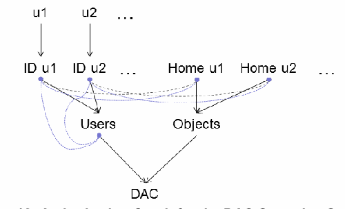
DACオペレーティングシステムの認可グラフです。ユーザーu1、u2、…はID u1、ID u2、…に割り当てられ、それらは「Users」に割り当てられています。Home u1、Home u2、…は「Objects」に割り当てられ、UsersとObjectsは方針クラス「DAC」に割り当てられています。各ID u_iとHome u_iを黒い破線の関連付けが結び、青い（管理用の）線が各ID u_iからHome u_iとUsersへ伸びています。
Figure 12: Authorization Graph for the DAC Operating System
図 12: DAC オペレーティングシステムの認可グラフ
No prohibitions are needed in this example. Two associations are needed for each user and are summarized in terms of \(u_{1}\), as follows:
この例では禁止は必要ありません。各ユーザーには 2 つの関連付けが必要であり、\(u_{1}\) について次のようにまとめられます。
•The association between ID \(u_{1}\) and Home \(u_{1}\) allows the user to read, write, and execute files that are contained within its home container. The administrative association between those same attributes allows the user, \(u_{1}\), to create, and delete files and other containers (i.e., folders) within its home container. It also allows the user to form or rescind an association with other user policy elements, involving the read, write, create, and delete privileges it holds over its home container, Home \(u_{1}\), and through inheritance, to any objects that are contained by the home container.
•ID \(u_{1}\) と Home \(u_{1}\) の間の関連付けにより、ユーザーは自らのホームコンテナに含まれるファイルを読み取り、書き込み、実行できます。同じ属性間の管理上の関連付けにより、ユーザー \(u_{1}\) は、自らのホームコンテナ内でファイルやほかのコンテナ（すなわちフォルダー）を作成・削除できます。また、ユーザーは、自らのホームコンテナ Home \(u_{1}\)、および継承によってそのホームコンテナに含まれるすべてのオブジェクトに対して保持している読み取り、書き込み、作成、削除の権限に関して、ほかのユーザーのポリシー要素との関連付けを形成または取り消すこともできます。
•The administrative association between ID \(u_{1}\) and Users allows the user \(u_{1}\) to involve any user contained by Users (i.e., all users) in the formation of a new association. This privilege combined with the previous administrative association mentioned enables a user to grant the privileges it holds over objects in its home container selectively to any other user, or to rescind them. That is, \(u_{1}\) has the discretion to grant the authority to read, write, execute, create, and delete files and folders within its home container to other users and subsequently, to take back that authority.
•ID \(u_{1}\) と Users の間の管理上の関連付けにより、ユーザー \(u_{1}\) は、Users に包含される任意のユーザー（すなわちすべてのユーザー）を、新しい関連付けの形成に関与させることができます。この権限は、前述の管理上の関連付けと組み合わせることで、ユーザーが自らのホームコンテナ内のオブジェクトに対して保持する権限を、ほかの任意のユーザーに選択的に付与したり、取り消したりすることを可能にします。つまり \(u_{1}\) は、自らのホームコンテナ内のファイルとフォルダーを、読み取り、書き込み、実行、作成、削除する権限をほかのユーザーに付与し、その後その権限を取り戻す裁量を持ちます。
A slight expansion of this example can better illustrate the properties of the authorization graph that allows users to form new associations that affect the contents of their home container. User \(u_{1}\) has created two files, \(o_{11}\) and \(o_{12}\), in its home container, and would like \(u_{2}\) to be able to read and update \(o_{11}\). Using its discretionary authority, \(u_{1}\) forms a new association between ID \(u_{2}\) and \(o_{11}\), as illustrated in Figure 13, which allows \(u_{2}\) the ability to read and write the contents of \(o_{11}\). Although \(u_{2}\) gains the ability to read and write \(o_{11}\), it cannot pass that ability on to other users, since \(u_{1}\) did not grant \(u_{2}\) the ability to form or rescind an association with \(o_{11}\).
この例を少し拡張すると、ユーザーが自らのホームコンテナの内容に影響する新しい関連付けを形成できるようにする認可グラフの特性を、よりよく示すことができます。ユーザー \(u_{1}\) は、自らのホームコンテナに 2 つのファイル \(o_{11}\) と \(o_{12}\) を作成しており、\(u_{2}\) が \(o_{11}\) を読み取り、更新できるようにしたいと考えています。\(u_{1}\) は、その任意の権限を使って、ID \(u_{2}\) と \(o_{11}\) の間に新しい関連付けを形成します。これは図 13 に示すとおりで、\(u_{2}\) に \(o_{11}\) の内容を読み書きする能力を与えます。\(u_{2}\) は \(o_{11}\) を読み書きする能力を得ますが、\(u_{1}\) が \(u_{2}\) に \(o_{11}\) との関連付けを形成または取り消す能力を付与していないため、その能力をほかのユーザーに引き渡すことはできません。
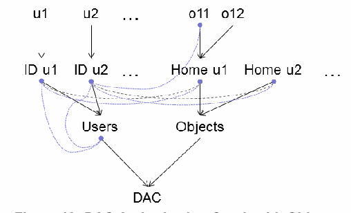
図12のグラフにオブジェクトを加えた図です。o11とo12がHome u1に割り当てられ、図12の関連付けに加えて、ID u2からo11への新しい破線の関連付けがあります。
Figure 13: DAC Authorization Graph with Objects
図 13: オブジェクトを含む DAC 認可グラフ
As plainly evident, the policy defined for the users of the operating system entails discretionary control over certain objects. The policy grants a user not only the authority to perform common operating system activities, such as creating or deleting files and folders their home container, but also authority to form and rescind associations that allow other users access to files and folders under its home container. As with the previous example, the specification of the policy described here can be facilitated through the definition and use of an administrative routine that carries out the required steps for each new user.
明らかなとおり、オペレーティングシステムのユーザーに対して定義されたポリシーは、特定のオブジェクトに対する任意の制御を伴います。このポリシーは、ユーザーに、自らのホームコンテナ内でファイルやフォルダーを作成または削除するなどの一般的なオペレーティングシステムの活動を行う権限を与えるだけでなく、自らのホームコンテナの配下にあるファイルやフォルダーへのアクセスをほかのユーザーに認める関連付けを形成・取り消す権限も与えます。前の例と同様に、ここで説明したポリシーの仕様化は、新しいユーザーごとに必要な手順を実行する管理ルーチンを定義して使用することで容易になります。
5.2 Levels of Policy and Administration
5.2 ポリシーと管理のレベル
As we have seen, associations and prohibitions are the principal means of performing delegation within the PM model. These means of delegation can be used to allow an administrator to empower other administrators or users with some of the rights the administrator hold. The definition of a single level or multiple levels of administrative authority are possible. In principle, three main types of authorities exist. They are as follows:
これまで見てきたとおり、関連付けと禁止は、PM モデルにおいて委任を行う主要な手段です。これらの委任手段は、管理者が保持する権利の一部を、ほかの管理者やユーザーに与えるために使用できます。管理権限は、単一のレベルにも複数のレベルにも定義できます。原則として、権限には 3 つの主な種類があります。以下に示します。
•The Principal Authority (PA), also known as the super user, is a compulsory, predefined entity of the PM. The PA is responsible for creating and controlling the policies of the PM in their entirety and inherently holds universal authorization to carry out those activities within the PM framework. The PA creates policy classes and first-level attributes that define a subordinate administrator and a domain for the subordinate administrator to manage, then allocates sufficient privileges to the subordinate administrator to perform those duties. The PA is a trusted entity and the only authority with the ability to create a policy class, which is the foundation of policy formation. Multiple domains and administrators can be created by the PA at its discretion. The PA can also forego the use of any subordinate administrators and manage a domain itself.
•主権限者（PA）は、スーパーユーザーとも呼ばれ、PM の必須の事前定義されたエンティティです。PA は、PM のポリシーの全体を作成・制御する責任を負い、PM フレームワーク内でそれらの活動を実行するための包括的な認可を本来的に保持します。PA は、下位の管理者と、その下位の管理者が管理するドメインを定義するポリシークラスと第 1 レベルの属性を作成し、その後、下位の管理者がそれらの職務を実行するのに十分な権限を割り当てます。PA は信頼されるエンティティであり、ポリシー形成の基盤であるポリシークラスを作成する能力を持つ唯一の権限者です。PA は、その裁量で複数のドメインと管理者を作成できます。PA は、下位の管理者の使用を見送って、自らドメインを管理することもできます。
•The Domain Administrator (DA) is a subordinate administrator of the PA, which can create users, objects, and attributes within its domain and manage the entire domain itself, as prescribed by the PA. A DA can also define a subdomain of its domain and allocate sufficient privileges for a subordinate subdomain administrator to manage it. The domain administered by a DA may be divided into more than one subdomain. However, the DA must possess sufficient privileges allocated by the PA to be able to define a subdomain and allocate the needed privileges to a subdomain administrator.
•ドメイン管理者（DA）は PA の下位の管理者であり、PA が定めるところに従って、そのドメイン内でユーザー、オブジェクト、属性を作成し、ドメイン全体を自ら管理できます。DA は、自らのドメインのサブドメインを定義し、下位のサブドメイン管理者がそれを管理するのに十分な権限を割り当てることもできます。DA が管理するドメインは、複数のサブドメインに分割されることがあります。ただし、DA は、サブドメインを定義し、サブドメイン管理者に必要な権限を割り当てられるように、PA によって割り当てられた十分な権限を保持していなければなりません。
•The Subdomain Administrator (SA) can perform the activities of a domain administrator within the subdomain under its control. The pattern of subdividing the subdomain, for Sub-SAs (S2A), Sub-S2As (S3A), and so forth to manage, can continue as needed.
•サブドメイン管理者（SA）は、自らの管理下にあるサブドメイン内で、ドメイン管理者の活動を実行できます。サブ SA（S2A）、サブ S2A（S3A）などが管理するようにサブドメインをさらに分割するパターンは、必要に応じて続けることができます。
Various usage patterns of authority levels can be used when specifying policy. The two main types of patterns discussed here are intra-policy class and inter-policy class patterns. It is important when specifying policy to keep in mind the underlying principle that once the PA establishes the policy for a system, creating the requisite domains and domain administrators, the system should move safely from state to state in accordance with that policy. That is, for given policy configuration and an initial starting state, it should not be possible to reach a state in which a policy entity acquires unintended access authorization.
ポリシーを規定する際には、権限レベルのさまざまな使用パターンを用いることができます。ここで論じる主な 2 種類のパターンは、ポリシークラス内パターンとポリシークラス間パターンです。ポリシーを規定する際には、PA がシステムのポリシーを確立し、必要なドメインとドメイン管理者を作成した後は、システムがそのポリシーに従って状態から状態へ安全に遷移すべきであるという基本原則を念頭に置くことが重要です。つまり、所与のポリシー構成と初期状態に対して、ポリシーエンティティが意図しないアクセス認可を獲得する状態に到達できるべきではありません。
5.2.1 Intra-Policy Class Patterns
5.2.1 ポリシークラス内パターン
An intra-policy class pattern denotes an arrangement of authority levels in which each authority and its according domain of control is contained within a single policy class. Figure 14 below illustrates one such pattern. Consistent with existing conventions, the solid-line arrows represent assignments between policy elements. The dotted, downward-arcing connectors indicate administrative associations that allow an authorization administrator, represented by a user attribute, to preside over a domain, represented by user and object attributes.
ポリシークラス内パターンは、各権限者とそれに対応する管理ドメインが、単一のポリシークラス内に包含される権限レベルの配置を表します。下の図 14 は、そのようなパターンの 1 つを示しています。既存の慣例に従い、実線の矢印はポリシー要素間の割当てを表します。下向きに弧を描く点線のコネクタは、ユーザー属性で表される認可管理者が、ユーザー属性とオブジェクト属性で表されるドメインを統括できるようにする管理上の関連付けを示します。
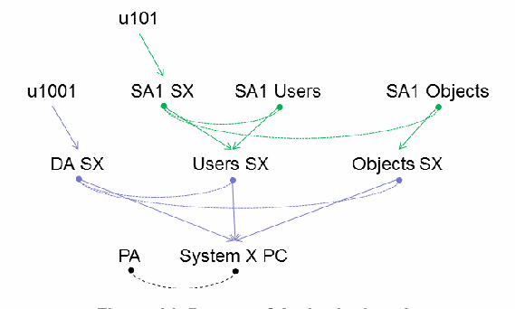
ポリシークラス内パターンを示す認可グラフです。黒い点線のコネクタはPAとSystem X PCを結びます。青（PAによるもの）は、u1001 → DA SX、DA SX・Users SX・Objects SX → System X PCの割当てと、DA SXからUsers SXおよびObjects SXへの点線の関連付けを示します。緑（DAによるもの）は、u101 → SA1 SX、SA1 SX → Users SX、SA1 Users → Users SX、SA1 Objects → Objects SXの割当てと、SA1 SXからSA1 UsersおよびSA1 Objectsへの点線の関連付けを示します。
Figure 14: Pattern of Authority Levels
図 14: 権限レベルのパターン
The assignment and association connectors are colored to convey which authority established the policy. PA’s control over the System X policy class is depicted in black and denotes its de facto authority over all aspects of policy. The PA establishes a policy class for System X (SX), creates the user attribute for the DA (DA SX), and the Users and Objects attributes of SX, and assigns them to the policy class. The PA then creates the associations needed by a DA (i.e., a user assigned to DA SX), such that a DA has sufficient privileges to administer the users and objects of that domain. Finally, the PA creates a user, \(u_{1001}\), and assigns it to DA to preside over that domain. The assignments and associations carried out by the PA are colored blue.
割当てと関連付けのコネクタは、どの権限者がポリシーを確立したかを伝えるために色分けされています。System X ポリシークラスに対する PA の制御は黒で描かれ、ポリシーのあらゆる側面に対するその事実上の権限を表します。PA は、System X（SX）のポリシークラスを確立し、DA 用のユーザー属性（DA SX）と SX の Users および Objects 属性を作成して、それらをポリシークラスに割り当てます。その後 PA は、DA（すなわち DA SX に割り当てられたユーザー）が必要とする関連付けを作成し、DA がそのドメインのユーザーとオブジェクトを管理するのに十分な権限を持つようにします。最後に PA は、ユーザー \(u_{1001}\) を作成し、そのドメインを統括させるために DA に割り当てます。PA が実行した割当てと関連付けは青で色分けされています。
User \(u_{1001}\), in its capacity as a DA, can create subsets of its domain for SAs to manage. Figure 14 illustrates the user attribute for the first SA (SA1) of SX, and the user and object attributes that comprise the subdomain, SA1 Users and SA1 Objects, along with the requisite assignments and associations made by the DA. The DA’s assignments and association are colored green. The assigned SA, \(u_{101}\), can then carry onward from this point populating the subdomain with any users, objects, and attributes that apply.
ユーザー \(u_{1001}\) は、DA の資格において、SA が管理するために自らのドメインの部分集合を作成できます。図 14 は、SX の最初の SA（SA1）のユーザー属性と、サブドメインを構成するユーザー属性とオブジェクト属性である SA1 Users と SA1 Objects を、DA が行った必要な割当てと関連付けとともに示しています。DA の割当てと関連付けは緑で色分けされています。割り当てられた SA \(u_{101}\) は、この時点から、該当するユーザー、オブジェクト、属性をサブドメインに設定して作業を進めることができます。
5.2.2 Inter-Policy Class Patterns
5.2.2 ポリシークラス間パターン
An intra-policy class pattern denotes an arrangement of authority levels in which each authority is contained within a policy class that is distinct from the policy class for its domain of control. An example inter-policy class pattern of authority levels is shown in Figure 15 below. Instead of maintaining DAs and SAs within the same policy class as the users and objects of their domain, a distinct Admin policy class is established by the PA for those authorities. This pattern requires the PA to create the user attribute, SX Admin, as a placeholder for the SX authorities and assign the attribute to Admin. A benefit of this pattern is that it allows the PA to create and manage authorities for other systems under the Admin policy class (e.g., by adding the SY Admin attribute for System Y) and to establish their domain of control over the applicable policy classes that represent those systems.
ポリシークラス内パターンは、各権限者が、その管理ドメインのポリシークラスとは別のポリシークラスに包含される権限レベルの配置を表します。権限レベルのポリシークラス間パターンの例を、下の図 15 に示します。DA と SA を、管理ドメインのユーザーおよびオブジェクトと同じポリシークラス内に維持する代わりに、PA がそれらの権限者のために別個の Admin ポリシークラスを確立します。このパターンでは、PA が SX の権限者のプレースホルダーとしてユーザー属性 SX Admin を作成し、その属性を Admin に割り当てる必要があります。このパターンの利点は、PA が Admin ポリシークラスの下で（たとえば System Y のために SY Admin 属性を追加することで）ほかのシステムの権限者を作成・管理でき、それらのシステムを表す該当のポリシークラスに対する管理ドメインを確立できることです。
From this point the actions are similar to the previous pattern. The PA creates the user attribute for the DA, DA SX, and assigns it to SX Admin. It also establishes a policy class for System X (SX) and the users and objects attributes of SX (i.e., Users SX and Objects SX), and assigns them to the SX policy class. The PA then creates the associations needed by a DA, such that the DA has sufficient privileges to administer the users and objects of that domain, which entails privileges that span the two policy classes (i.e., Admin and System X PC), as well as privileges to manage itself via SX Admin. Finally, the PA creates a user, \(u_{1001}\), and assigns it to DA SX to preside over that domain. As before, the assignments and associations carried out by the PA are colored blue, while those of the DA are colored green.
この時点からの行為は、前のパターンと同様です。PA は、DA 用のユーザー属性 DA SX を作成し、それを SX Admin に割り当てます。また、System X（SX）のポリシークラスと、SX のユーザー属性およびオブジェクト属性（すなわち Users SX と Objects SX）を確立し、それらを SX ポリシークラスに割り当てます。その後 PA は、DA が必要とする関連付けを作成し、DA がそのドメインのユーザーとオブジェクトを管理するのに十分な権限を持つようにします。これには、2 つのポリシークラス（すなわち Admin と System X PC）にまたがる権限と、SX Admin を介して自らを管理する権限が含まれます。最後に PA は、ユーザー \(u_{1001}\) を作成し、そのドメインを統括させるために DA SX に割り当てます。前と同様に、PA が実行した割当てと関連付けは青で、DA のものは緑で色分けされています。
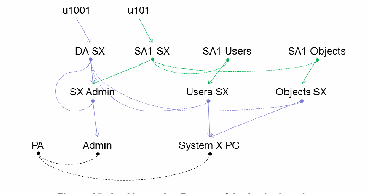
方針クラスをまたぐパターンを示す認可グラフです。黒い点線はPAからAdminとSystem X PCへの線です。青（PAによるもの）は、u1001 → DA SX → SX Admin → Admin、Users SXとObjects SX → System X PCの割り当てと、DA SXからSX Admin・Users SX・Objects SXへの関連付けです。緑（DAによるもの）は、u101 → SA1 SX → SX Admin、SA1 Users → Users SX、SA1 Objects → Objects SXの割り当てと、SA1 SXからSA1 UsersとSA1 Objectsへの点線の関連付けです。
Figure 15: An Alternative Pattern of Authority Levels
図 15: 権限レベルの別のパターン
User \(u_{1001}\), in its capacity as a DA, can create subsets of its domain for SAs to manage. The main difference from the previous pattern is that the user attribute for the first SA (SA1) of SX is assigned to SX Admin. The DA creates the attributes for the users and objects that comprise the subdomain, SA1 Users and SA1 Objects, and makes the requisite assignments and associations for the SA1 administrator \(u_{101}\) to govern the subdomain. Note that if the DA wanted to grant SA1 the authority to create administrative subdomains of SA1 following this pattern, it would need to do the following: create an additional attribute (e.g., SA1 Admin), assign SA1 Admin to SX Admin, assign SA1 SX to SA1 Admin instead of SX Admin, and allocate sufficient privilege for SA1 SX to govern SA1 Admin and to create administrative attributes for the next level of SAs.
ユーザー \(u_{1001}\) は、DA の資格において、SA が管理するために自らのドメインの部分集合を作成できます。前のパターンとの主な違いは、SX の最初の SA（SA1）のユーザー属性が SX Admin に割り当てられることです。DA は、サブドメインを構成するユーザーとオブジェクトの属性である SA1 Users と SA1 Objects を作成し、SA1 の管理者 \(u_{101}\) がサブドメインを統治するために必要な割当てと関連付けを行います。このパターンに従って、DA が SA1 に SA1 の管理サブドメインを作成する権限を与えたい場合は、次のことを行う必要があることに注意してください。追加の属性（たとえば SA1 Admin）を作成し、SA1 Admin を SX Admin に割り当て、SA1 SX を SX Admin の代わりに SA1 Admin に割り当て、SA1 SX が SA1 Admin を統治し、次のレベルの SA のための管理属性を作成するのに十分な権限を割り当てます。
One distinction between this pattern and the previous one is that as a side effect of this pattern, the DA has the authority to assign other users as DAs. This specific authority could be removed via a prohibition, if strict compliance with the policy of the previous pattern is needed. The opposite is also possible. While the previous pattern prescribes that the PA makes all DA user assignments, an association from DA SX to DA SX could be added to that specification to grant the DA this authority, if such a capability is needed.
このパターンと前のパターンとの違いの 1 つは、このパターンの副作用として、DA がほかのユーザーを DA として割り当てる権限を持つことです。前のパターンのポリシーへの厳密な準拠が必要な場合は、禁止によってこの特定の権限を取り除くことができます。その逆も可能です。前のパターンでは PA がすべての DA のユーザー割当てを行うと規定していますが、そのような能力が必要な場合は、DA SX から DA SX への関連付けをその仕様に追加して、DA にこの権限を与えることができます。
A simple change to the above inter-policy class pattern can make it into an intra-policy class pattern. All that it takes is deleting the Admin policy class and assigning SX Admin directly to System X PC. Note too that it is possible to mix intra and inter-policy class patterns. That is, some authorities can be maintained in a distinct policy class external to the one being administered, while other authorities are maintained within the policy class being administered.
上記のポリシークラス間パターンに簡単な変更を加えると、ポリシークラス内パターンにできます。必要なのは、Admin ポリシークラスを削除し、SX Admin を System X PC に直接割り当てることだけです。また、ポリシークラス内パターンとポリシークラス間パターンを混在させることも可能であることにも注意してください。つまり、一部の権限者は、管理対象のポリシークラスの外部にある別個のポリシークラス内で維持し、ほかの権限者は管理対象のポリシークラス内で維持することができます。
5.2.3 Personas and Patterns
5.2.3 ペルソナとパターン
In many situations, an administrator of a system is also potentially a user of that same system. Disregarding the principle of least privilege and assigning an individual the capabilities of both a system user and a system administrator through the same policy element can lead to security issues. One common workaround is to allow the individual to login under either of two distinct user policy elements (e.g., \(u_{i}\) and \(u_{j}\)), each representing a different persona. Having different personas to carry out different activities is a long-standing practice for attaining least privilege (e.g., [Sal75]). However, the fact that one individual can operate as two different users is retained outside of the policy specification and, because it is not expressed explicitly therein, easy to overlook or ignore, leading to problems. For example, when such an individual leaves the organization, only one of the two user elements may be deleted, allowing the individual continued system access through the remaining user element.
多くの状況では、システムの管理者は、同じシステムのユーザーでもある可能性があります。最小権限の原則を無視して、同じポリシー要素を通じて個人にシステムユーザーとシステム管理者の両方のケーパビリティを割り当てると、セキュリティ上の問題につながる可能性があります。一般的な回避策の 1 つは、それぞれが異なるペルソナを表す、2 つの異なるユーザーポリシー要素（たとえば \(u_{i}\) と \(u_{j}\)）のいずれかを使って、その個人がログインできるようにすることです。異なる活動を行うために異なるペルソナを使うことは、最小権限を実現するための長年の慣行です（たとえば [Sal75]）。しかし、1 人の個人が 2 人の異なるユーザーとして動作できるという事実は、ポリシー仕様の外に置かれ、そこに明示的に表現されていないため、見落としたり無視したりしやすく、問題につながります。たとえば、そのような個人が組織を離れるとき、2 つのユーザー要素のうち 1 つだけが削除されて、その個人が残りのユーザー要素を通じてシステムへのアクセスを継続できる場合があります。
It is possible to express explicitly within the PM model an individual’s ability to act in different capacities selectively at different times. Accommodating personas within the model is an advanced topic that builds upon the material covered in this chapter, Appendix C, and Appendix D. Appendix E provides a detailed discussion of three alternative approaches. For simplicity, the examples and discussion in the main body of the report presume that individuals assigned as system administrators are not also assigned as users of the system.
PM モデル内で、個人がさまざまな時点で異なる資格を選択的に使い分ける能力を、明示的に表現することは可能です。モデル内でペルソナに対応することは、この章、付録 C、付録 D で扱った内容を土台とする高度なトピックです。付録 E では、3 つの代替的な方法を詳しく論じます。簡潔にするため、本報告書の本文の例と議論では、システム管理者として割り当てられた個人は、そのシステムのユーザーとしては割り当てられていないことを前提としています。
5.3 Authority Level Examples
5.3 権限レベルの例
To illustrate the use of multiple levels of authority and policy, the examples of Section 5.1 are reexamined in light of the above discussion. For simplicity, the PA and the authorization it holds over policy creation is implied, but not depicted in the examples.
権限とポリシーの複数のレベルの使用を説明するために、5.1 節の例を上記の議論に照らして再検討します。簡潔にするため、PA と、PA がポリシー作成に対して保持する認可は暗黙のものとし、例には描きません。
5.3.1 Electronic Mail
5.3.1 電子メール
To set up the initial authorization policy for a DA to administer the mail system described earlier, the PA creates a framework using the intra-policy class pattern of Figure 14. Figure 16 below illustrates the policy element diagram and associations the PA establishes for the DA. The DA, Users, and Objects attributes shown constitute the key attributes of the Mail System policy class. The user, \(u_{1001}\), is assigned as the DA. In this example, no SA is required. Instead, the DA is expected to manage the entire mail system. More than one user can be assigned as a DA, and a DA has sufficient authority to carve out subdomains, if eventually needed.
前述のメールシステムを DA が管理するための初期の認可ポリシーを設定するために、PA は図 14 のポリシークラス内パターンを使ってフレームワークを作成します。下の図 16 は、PA が DA のために確立するポリシー要素図と関連付けを示しています。示されている DA、Users、Objects の属性は、Mail System ポリシークラスの主要な属性を構成します。ユーザー \(u_{1001}\) が DA として割り当てられています。この例では、SA は必要ありません。代わりに、DA がメールシステム全体を管理することが期待されます。複数のユーザーを DA として割り当てることができ、DA は、最終的に必要になった場合にサブドメインを切り出すのに十分な権限を持ちます。
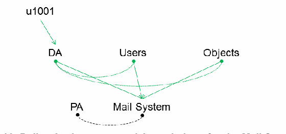
方針要素と関連付けの図で、緑（PAによるもの）で描かれています。u1001 → DA、DA・Users・Objects → Mail Systemの割り当てと、DAからUsersとObjectsへの点線の関連付けがあります。PAからMail Systemへ黒い点線があります。
Figure 16: Policy Assignments and Associations for the Mail System DA
図 16: メールシステム DA のポリシー割当てと関連付け
The DA serves as the policy authority responsible for creating the necessary containers to organize the mail system and for managing other users and establishing their containers for messages. Figure 17 illustrates the authorization graph for the mail system, highlighting a typical user, \(u_{2}\). The administrative assignments, associations and prohibitions made by the DA are in blue to distinguish them from those made by the PA, which are in green.
DA は、メールシステムを編成するために必要なコンテナを作成し、ほかのユーザーを管理し、メッセージのためのユーザーのコンテナを確立する責任を負うポリシー権限者として機能します。図 17 は、典型的なユーザー \(u_{2}\) を強調して、メールシステムの認可グラフを示しています。DA が行った管理上の割当て、関連付け、禁止は、PA が行ったもの（緑）と区別するために青で示されています。
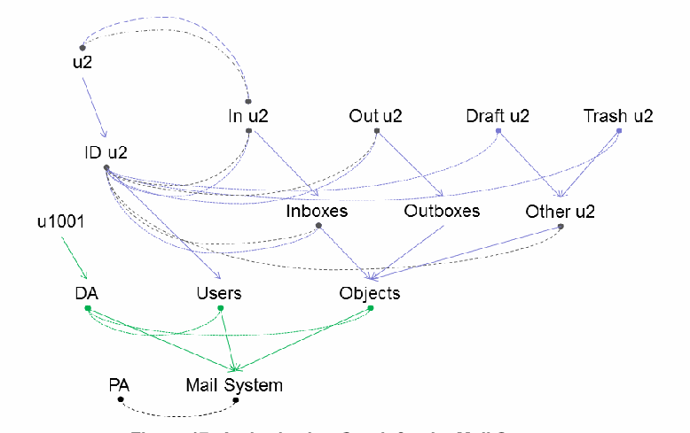
図16（緑、PAによるもの）と、ユーザーu2についての図11のメールシステムのグラフ（青、DAによるもの）を合わせた認可グラフです。u2 → ID u2 → Users、In u2 → Inboxes、Out u2 → Outboxes、Draft u2とTrash u2 → Other u2、Inboxes・Outboxes・Other u2 → Objects、u1001 → DA、DA・Users・Objects → Mail Systemの割り当てがあり、PAはMail Systemとつながっています。黒と青の点線の関連付けと禁止が、図11と同じようにu2、ID u2と各コンテナーを結んでいます。
Figure 17: Authorization Graph for the Mail System
図 17: メールシステムの認可グラフ
The PA has full discretionary authority over the PM, and grants discretionary authority to the DA over the policy domain it establishes for the mail system. This allows the DA to create the necessary attributes, associations, and other relationships for each user to use the functionality of the mail system. The DA also has the discretion to create subdomains and assign an SA to them. The policy for this system with regard to users is also discretionary, since each user has the freedom to use the established policy to share information with other users.
PA は PM に対する完全な任意の権限を持ち、メールシステムのために確立したポリシードメインに対する任意の権限を DA に付与します。これにより DA は、各ユーザーがメールシステムの機能を使用するために必要な属性、関連付け、その他の関係を作成できます。DA は、サブドメインを作成し、それらに SA を割り当てる裁量も持ちます。このシステムのユーザーに関するポリシーも任意です。各ユーザーが、確立されたポリシーを使って、ほかのユーザーと情報を共有する自由を持つためです。
5.3.2 Operating System
5.3.2 オペレーティングシステム
The actions the PA takes to set up the initial authorization policy for a DA to administer the DAC operating system described earlier mirror those given above for the mail system. Figure 18 below illustrates the policy element diagram and administrative associations the PA establishes for the DA using the intra-policy class pattern. The DA, Users, and Objects attributes constitute the key attributes of the DAC policy class. The user, \(u_{1011}\), is assigned as the DA. This example again requires no SA and instead relies on the DA to manage the entire system.
前述の DAC オペレーティングシステムを DA が管理するための初期の認可ポリシーを設定するために PA が行う行為は、上で示したメールシステムのものと同様です。下の図 18 は、PA が、ポリシークラス内パターンを使って DA のために確立するポリシー要素図と管理上の関連付けを示しています。DA、Users、Objects の属性は、DAC ポリシークラスの主要な属性を構成します。ユーザー \(u_{1011}\) が DA として割り当てられています。この例でも SA は必要なく、代わりにシステム全体を管理するために DA に依拠します。
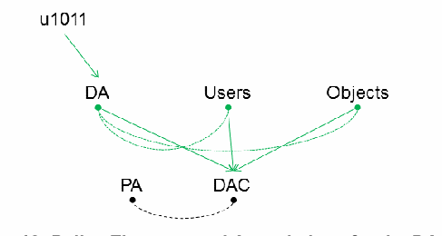
方針要素と関連付けの図で、緑（PAによるもの）で描かれています。u1011 → DA、DA・Users・Objects → DACの割り当てと、DAからUsersとObjectsへの点線の関連付けがあります。PAからDACへ黒い点線があります。
Figure 18: Policy Elements and Associations for the DAC DA
図 18: DAC DA のポリシー要素と関連付け
Figure 19 illustrates the authorization graph for the DAC operating system, showing two typical users, \(u_{1}\) and \(u_{2}\). The assignments, associations and prohibitions made by the DA are colored blue. The defined policy is discretionary at the PA, DA, and user levels. The PA has full discretionary authority over the PM. The PA in turn, grants discretionary authority to the DA over the policy domain it establishes for the operating system, which allows the DA to create the necessary attributes and associations between attributes for each user. The DA grants administrative authority for any user to create associations that allow other users to selectively access objects contained by its home container. The DA also has the discretion to create subdomains and assign an SA to them, if it chooses.
図 19 は、2 人の典型的なユーザー \(u_{1}\) と \(u_{2}\) を示して、DAC オペレーティングシステムの認可グラフを示しています。DA が行った割当て、関連付け、禁止は青で色分けされています。定義されたポリシーは、PA、DA、ユーザーのレベルで任意です。PA は PM に対する完全な任意の権限を持ちます。PA は今度は、オペレーティングシステムのために確立したポリシードメインに対する任意の権限を DA に付与し、これにより DA は、各ユーザーに必要な属性と、属性間の関連付けを作成できます。DA は、任意のユーザーが、自らのホームコンテナに含まれるオブジェクトにほかのユーザーが選択的にアクセスできるようにする関連付けを作成するための管理権限を付与します。DA は、選択すれば、サブドメインを作成し、それらに SA を割り当てる裁量も持ちます。
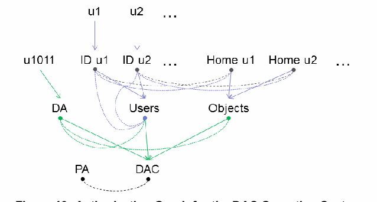
図18（緑、PAによるもの）と図12のDACのグラフ（青、DAによるもの）を合わせた認可グラフです。u1 → ID u1、u2 → ID u2、…、ID u1・ID u2 → Users、Home u1・Home u2 → Objects、u1011 → DA、DA・Users・Objects → DACの割り当てがあり、PAはDACとつながっています。点線の関連付けが各ID u_iとHome u_i、Usersを結んでいます。
Figure 19: Authorization Graph for the DAC Operating System
図 19: DAC オペレーティングシステムの認可グラフ
5.4 Generic Access Rights
5.4 汎用アクセス権
Generic access rights refer to the authority needed to carry out a related mode of access or action. The examples given in this and the previous chapters allude to a variety of access rights needed to structure policy for a system and establish levels of administration for governing the policy over its lifetime. These generic access rights include authority to read and write objects, to create and destroy various policy elements, and to form and rescind various types of relationships between policy elements. This section discusses in detail a core set of access rights for the PM model and explains how such authority can be utilized to specify access control policy.
汎用アクセス権は、関連するアクセスモードまたは行為を実行するために必要な権限を指します。この章と前の章で示した例は、システムのポリシーを構造化し、ポリシーをそのライフタイムにわたって統治するための管理のレベルを確立するために必要な、さまざまなアクセス権に触れています。これらの汎用アクセス権には、オブジェクトを読み書きする権限、さまざまなポリシー要素を作成・破棄する権限、ポリシー要素間のさまざまな種類の関係を形成・取り消す権限が含まれます。本節では、PM モデルの中核となるアクセス権の集合を詳しく論じ、そのような権限をアクセス制御ポリシーを規定するためにどのように利用できるかを説明します。
5.4.1 Classes of Access Rights
5.4.1 アクセス権のクラス
Two general classes of generic access rights exist. They are non-administrative access rights that pertain to protected resources represented by objects, and administrative access rights that pertain to a policy specification comprising the policy elements and relationships defined within and maintained by the PM. Table 1 and Table 2 enumerate the default access rights for each class, identifying the type of access mode, its designation, the type of policy element to which the mode of access applies, and the policy element or relation affected.
汎用アクセス権には 2 つの一般的なクラスがあります。オブジェクトで表される保護対象資源に関する非管理アクセス権と、PM の内部で定義・維持されるポリシー要素と関係からなるポリシー仕様に関する管理アクセス権です。表 1 と表 2 は、各クラスのデフォルトのアクセス権を列挙し、アクセスモードの種類、その呼称、そのアクセスモードが適用されるポリシー要素の種類、および影響を受けるポリシー要素または関係を示しています。
The first class of generic access rights, shown in Table 1, falls into one type of access mode: the input and output of data to and from protected resources represented by objects. Protected resources may be logical (e.g., files and folders) or physical (e.g., printers and networking components). As mentioned previously, for non-administrative access rights, resource operations are synonymous with the access rights needed to carry out those operations: to output data or write to an object requires “w” (i.e., write) authority, and to input data or read from an object requires “r” (i.e., read) authority.
表 1 に示す汎用アクセス権の最初のクラスは、1 種類のアクセスモード、すなわちオブジェクトで表される保護対象資源との間のデータの入出力に分類されます。保護対象資源は、論理的なもの（たとえばファイルとフォルダー）でも、物理的なもの（たとえばプリンタとネットワーキング構成要素）でも構いません。前述のとおり、非管理アクセス権では、資源操作はそれらの操作を実行するために必要なアクセス権と同義です。データを出力する、またはオブジェクトに書き込むには「w」（すなわち write）権限が必要であり、データを入力する、またはオブジェクトから読み取るには「r」（すなわち read）権限が必要です。
Table 1: Generic Non-administrative Access Rights
表 1: 汎用の非管理アクセス権
| Type | Non-admin. Access Right | Applies to | Affects |
|---|---|---|---|
| Input/Output Resources | r | Object attribute | Protected resources represented by the object attribute or an object contained by the object attribute |
| w | Object attribute | Protected resources represented by the object attribute or an object contained by the object attribute |
| 種類 | 非管理アクセス権 | 適用対象 | 影響 |
|---|---|---|---|
| 入出力資源 | r | オブジェクト属性 | オブジェクト属性、またはオブジェクト属性に包含されるオブジェクトで表される保護対象資源 |
| w | オブジェクト属性 | オブジェクト属性、またはオブジェクト属性に包含されるオブジェクトで表される保護対象資源 |
The second class of generic access rights, shown in Table 2, relate to one of four types of administrative modes of access: the creation and deletion of policy elements, the creation and deletion of assignments between policy elements that are contained within the same policy class, the creation and deletion of assignments between policy elements that are each contained within a different policy class, and the creation and deletion of associations, prohibitions, and obligations among policy elements. The generic administrative access rights listed for each type of access modality follows the naming conventions for policy elements established in the previous chapters. Unlike resource access rights, the authority associated with an administrative access right is not necessarily synonymous with an administrative operation. Instead, the authority stemming from one or more administrative access rights may be required for a single operation to be authorized.
表 2 に示す汎用アクセス権の 2 番目のクラスは、管理上の 4 種類のアクセスモードのいずれかに関連します。すなわち、ポリシー要素の作成と削除、同じポリシークラス内に包含されるポリシー要素間の割当ての作成と削除、それぞれ異なるポリシークラスに包含されるポリシー要素間の割当ての作成と削除、およびポリシー要素間の関連付け、禁止、義務の作成と削除です。各種類のアクセスモードについて列挙された汎用管理アクセス権は、前の章で確立されたポリシー要素の命名規則に従っています。資源アクセス権とは異なり、管理アクセス権に関連する権限は、必ずしも管理操作と同義ではありません。1 つの操作を認可するために、1 つ以上の管理アクセス権に由来する権限が必要となる場合があります。
Table 2: Generic Administrative Access Rights by Type
表 2: 種別ごとの汎用管理アクセス権
| Type | Administrative Access Right | Applies to | Affects |
|---|---|---|---|
| Create/Delete Policy Elements | c-u, d-u | User attribute | Actualization of a user policy element |
| c-ua, d-ua | User attribute or Policy class | Actualization of a user attribute policy element | |
| c-o, d-o | Object attribute | Actualization of an object policy element | |
| c-oa, d-oa | Object attribute or Policy class | Actualization of an object attribute policy element | |
| c-pc, d-pc | The PM framework | Actualization of a policy class policy element | |
| Create/Delete Assignments (Intra-Policy Class) | c-uua, d-uua | User attribute | Assignment from a user to the user attribute |
| c-uaua, d-uaua | User attribute | Assignment from a user attribute to the user attribute | |
| c-uapc, d-uapc | Policy class | Assignment from a user attribute to the policy class | |
| c-ooa, d-ooa | Object attribute | Assignment from an object to the object attribute | |
| c-oaoa, d-oaoa | Object attribute | Assignment from an object attribute to the object attribute | |
| c-oapc, d-oapc | Policy class | Assignment from an object attribute to the policy class | |
| Create/Delete Assignments (Inter- or Intra-Policy Class) | c-uua-fr, d-uua-fr | User attribute | Assignment from a user element in the referent’s subgraph to a user attribute |
| c-uua-to, d-uua-to | User attribute | Assignment from a user to a user attribute element in the referent’s subgraph | |
| c-uaua-fr, d-uaua-fr | User attribute | Assignment from a user attribute element in the referent’s subgraph to a user attribute | |
| c-uaua-to, d-uaua-to | User attribute | Assignment from a user attribute to a user attribute element in the referent’s subgraph | |
| c-uapc-fr, d-uapc-fr | User attribute | Assignment from a user attribute element in the referent’s subgraph to the policy class | |
| c-uapc-to, d-uapc-to | Policy class | Assignment from a user attribute to the policy class | |
| c-ooa-fr, d-ooa-fr | Object attribute | Assignment from an object element in the referent’s subgraph to an object attribute | |
| c-ooa-to, d-ooa-to | Object attribute | Assignment from an object attribute to an object attribute element in the referent’s subgraph | |
| c-oaoa-fr, d-oaoa-fr | Object attribute | Assignment from an object attribute in the referent’s subgraph to an object attribute element | |
| c-oaoa-to, d-oaoa-to | Object attribute | Assignment from an object attribute element to an object attribute in the referent’s subgraph | |
| c-oapc-fr, d-oapc-fr | Object attribute | Assignment from an object attribute element in the referent’s subgraph to a policy class | |
| c-oapc-to, d-oapc-to | Policy class | Assignment from an object attribute to the policy class | |
| Create/Delete Multi-way Relationships | c-assoc-fr, d-assoc-fr | User attribute | Association involving a user attribute element in the user attribute’s subgraph and a referent attribute |
| c-assoc-to, d-assoc-to | Reverent attribute | Association involving a user attribute and a policy element in the referent attribute’s subgraph | |
| c-prohib-fr, d-prohib-fr | User, User attribute | Prohibition involving the user, a process operating for the user, or a user element in the referent user attribute’s subgraph, and a policy element | |
| c-prohib-to, d-prohib-to | Set of referent attributes | Prohibition involving a user, user attribute, or process, and an policy element inside or outside the referent attribute’s subgraph | |
| c-oblig, d-oblig | Policy element | Obligation on an access request involving the user or process holding authorization | |
| Input/Output Resources Delegation10 | r-del, w-del | Object attribute | Delegation of read or write access (i.e., r or w access rights) via associations or prohibitions, without possessing the ability to access the resources in question |
| 種類 | 管理アクセス権 | 適用対象 | 影響 |
|---|---|---|---|
| ポリシー要素の作成/削除 | c-u, d-u | ユーザー属性 | ユーザーポリシー要素の実体化 |
| c-ua, d-ua | ユーザー属性またはポリシークラス | ユーザー属性ポリシー要素の実体化 | |
| c-o, d-o | オブジェクト属性 | オブジェクトポリシー要素の実体化 | |
| c-oa, d-oa | オブジェクト属性またはポリシークラス | オブジェクト属性ポリシー要素の実体化 | |
| c-pc, d-pc | PM フレームワーク | ポリシークラスポリシー要素の実体化 | |
| 割当ての作成/削除（ポリシークラス内） | c-uua, d-uua | ユーザー属性 | ユーザーからそのユーザー属性への割当て |
| c-uaua, d-uaua | ユーザー属性 | ユーザー属性からそのユーザー属性への割当て | |
| c-uapc, d-uapc | ポリシークラス | ユーザー属性からそのポリシークラスへの割当て | |
| c-ooa, d-ooa | オブジェクト属性 | オブジェクトからそのオブジェクト属性への割当て | |
| c-oaoa, d-oaoa | オブジェクト属性 | オブジェクト属性からそのオブジェクト属性への割当て | |
| c-oapc, d-oapc | ポリシークラス | オブジェクト属性からそのポリシークラスへの割当て | |
| 割当ての作成/ | c-uua-fr, d-uua-fr | ユーザー属性 | 指示対象の部分グラフ内のユーザー要素からユーザー属性への割当て |
| c-uua-to, d-uua-to | ユーザー属性 | ユーザーから、指示対象の部分グラフ内のユーザー属性要素への割当て | |
| c-uaua-fr, d-uaua-fr | ユーザー属性 | 指示対象の部分グラフ内のユーザー属性要素からユーザー属性への割当て | |
| c-uaua-to, d-uaua-to | ユーザー属性 | ユーザー属性から、指示対象の部分グラフ内のユーザー属性要素への割当て | |
| c-uapc-fr, d-uapc-fr | ユーザー属性 | 指示対象の部分グラフ内のユーザー属性要素からポリシークラスへの割当て | |
| c-uapc-to, d-uapc-to | ポリシークラス | ユーザー属性からポリシークラスへの割当て | |
| c-ooa-fr, d-ooa-fr | オブジェクト属性 | 指示対象の部分グラフ内のオブジェクト要素からオブジェクト属性への割当て | |
| c-ooa-to, d-ooa-to | オブジェクト属性 | オブジェクト属性から、指示対象の部分グラフ内のオブジェクト属性要素への割当て | |
| c-oaoa-fr, d-oaoa-fr | オブジェクト属性 | 指示対象の部分グラフ内のオブジェクト属性からオブジェクト属性要素への割当て | |
| c-oaoa-to, d-oaoa-to | オブジェクト属性 | オブジェクト属性要素から、指示対象の部分グラフ内のオブジェクト属性への割当て | |
| c-oapc-fr, d-oapc-fr | オブジェクト属性 | 指示対象の部分グラフ内のオブジェクト属性要素からポリシークラスへの割当て | |
| c-oapc-to, d-oapc-to | ポリシークラス | オブジェクト属性からポリシークラスへの割当て | |
| 多方向関係の作成/削除 | c-assoc-fr, d-assoc-fr | ユーザー属性 | ユーザー属性の部分グラフ内のユーザー属性要素と指示対象属性を含む関連付け |
| c-assoc-to, d-assoc-to | 指示対象属性 | ユーザー属性と、指示対象属性の部分グラフ内のポリシー要素を含む関連付け | |
| c-prohib-fr, d-prohib-fr | ユーザー、ユーザー属性 | ユーザー、そのユーザーのために動作するプロセス、または指示対象ユーザー属性の部分グラフ内のユーザー要素と、ポリシー要素を含む禁止 | |
| c-prohib-to, d-prohib-to | 指示対象属性の集合 | ユーザー、ユーザー属性、またはプロセスと、指示対象属性の部分グラフの内側または外側のポリシー要素を含む禁止 | |
| c-oblig, d-oblig | ポリシー要素 | 認可を保持するユーザーまたはプロセスが関わるアクセス要求に関する義務 | |
| 入出力資源の委任10 | r-del, w-del | オブジェクト属性 | 当該資源にアクセスする能力を持たずに、関連付けまたは禁止を通じて読み取りまたは書き込みアクセス（すなわち r または w アクセス権）を委任すること |
As described above, administrative access rights convey the authority to manipulate policy elements and relations maintained by the PM, and thereby institute or update the policy specification for a system. The prefix “c-” (i.e., the designation for create) denotes the reification of a policy element or a relationship between policy elements, as designated by its stem. The prefix “d-” denotes the opposite. Two or more administrative access rights are often required to carry out a single administrative action on the policy representation. For example, some administrative access rights are explicitly divided into two parts, as denoted by the “from” and “to” suffixes (viz., “-fr” and “-to”). Both parts of the authority must be held to carry out the implied administrative action. A case in point is the ability to form associations between policy elements. A user must hold c-assoc-fr authority over a user attribute and c-assoc-to authority over an object or user attribute to form an association between those attributes or the attributes within the subgraph of each.
上述のとおり、管理アクセス権は、PM が維持するポリシー要素と関係を操作し、それによってシステムのポリシー仕様を設定または更新する権限を与えます。接頭辞「c-」（すなわち create を表す呼称）は、語幹で指定されるポリシー要素またはポリシー要素間の関係の具体化を表します。接頭辞「d-」はその反対を表します。ポリシー表現に対する単一の管理上の行為を実行するには、2 つ以上の管理アクセス権が必要になることがよくあります。たとえば、一部の管理アクセス権は、「from」と「to」の接尾辞（すなわち「-fr」と「-to」）で示されるように、明示的に 2 つの部分に分けられています。示されている管理上の行為を実行するには、権限の両方の部分を保持していなければなりません。その一例が、ポリシー要素間の関連付けを形成する能力です。ユーザーが、ユーザー属性に対する c-assoc-fr 権限と、オブジェクト属性またはユーザー属性に対する c-assoc-to 権限を保持していなければ、それらの属性間、またはそれぞれの属性の部分グラフ内の属性間の関連付けを形成できません。
Administrative access rights are typically allocated in conjunction with one another. For example, the authority to create a user (c-u) with respect to a user attribute is not useful, if the authority to assign the user to the user attribute (c-uua) is not also held, since both access rights are needed to carry out the creation of the user (i.e., via the create-UinUA operation). Similarly, the authority to create a policy element such as a user (c-u) and assign it (c-uua) is not useful, if the authority to delete the policy element (d-u) and disassign it (d-uua) is not also held for the user attribute. The correspondence between administrative access rights and administrative activities is evidenced in the precondition comments of the administrative routines listed in Appendix D.
管理アクセス権は通常、互いに組み合わせて割り当てられます。たとえば、ユーザー属性に関してユーザーを作成する権限（c-u）は、そのユーザーをユーザー属性に割り当てる権限（c-uua）も保持していなければ役に立ちません。ユーザーの作成（すなわち create-UinUA 操作を介したもの）を実行するには、両方のアクセス権が必要だからです。同様に、ユーザーなどのポリシー要素を作成（c-u）して割り当てる（c-uua）権限は、そのユーザー属性に関してポリシー要素を削除（d-u）して割当てを解除（d-uua）する権限も保持していなければ役に立ちません。管理アクセス権と管理活動の対応関係は、付録 D に列挙された管理ルーチンの事前条件のコメントに示されています。
Because of the unique set of duties entrusted to the PA, its access rights are handled somewhat differently from other users and administrators. The PA implicitly holds universal authorization, denoted as the access right “univ,” over the entire PM framework. The univ access right is treated as the union of all the access rights listed in Table 1 and Table 2. Except for c-uapc, c-oapc, c-pc, and d-pc, the PA can delegate all other access rights to subordinate authorities.
PA に委ねられた職務は独特であるため、PA のアクセス権は、ほかのユーザーや管理者とはやや異なる扱いを受けます。PA は、PM フレームワーク全体に対して、アクセス権「univ」で表される包括的な認可を暗黙に保持します。univ アクセス権は、表 1 と表 2 に挙げたすべてのアクセス権の和集合として扱われます。c-uapc、c-oapc、c-pc、d-pc を除き、PA はそれ以外のすべてのアクセス権を、下位の権限者に委任できます。
5.4.2 Other Considerations
5.4.2 その他の考慮事項
While the lists of generic access rights in Table 1 and Table 2 are complete, they are not intended to be absolute. The control objectives of a policy may differ from one system to another and need to be realized using a different set of access rights to capture and designate the appropriate authority. For example, a requirement for higher level of assurance may dictate more granular access rights, or a requirement for compliance with some prevailing law, regulation, or policy may necessitate additional access rights. The modes of access allowed also depend on the types of resources represented and on the functionality of the system
表 1 と表 2 の汎用アクセス権の一覧は網羅的ですが、絶対的なものとして意図されているわけではありません。ポリシーの制御目的はシステムごとに異なる場合があり、適切な権限を捉えて指定するために、異なるアクセス権の集合を使って実現する必要があります。たとえば、より高い保証水準の要件により、より粒度の細かいアクセス権が必要になることがあり、現行の法律、規制、またはポリシーへの準拠の要件により、追加のアクセス権が必要になることもあります。許可されるアクセスモードは、表現される資源の種類やシステムの機能にも依存します
The computational environment may also influence the set of operations defined, and effect the set of access rights required. Take, for instance, the write operation. If compatible with the computational environment, this operation could be refined or augmented with a write-append variant that allows a user to add additional data to an object, but does not allow a user to change the previous contents of or view an object [NCSC87]. Allowing data to be added only at the beginning or the end of an object would provide more control for maintaining audit information. Similarly, the read operation, which includes the ability to execute an object, could be revised to allow more granular control, and an explicit execute operation defined for this purpose (e.g., requiring an “e” access right to perform).
計算環境は、定義される操作の集合にも影響し、必要なアクセス権の集合にも影響を及ぼすことがあります。たとえば、書き込み操作を考えます。計算環境と適合する場合、この操作は、ユーザーがオブジェクトに追加のデータを追加できる一方で、オブジェクトの以前の内容を変更したり閲覧したりすることはできない追記書き込みの変種によって、洗練または拡張できます [NCSC87]。データをオブジェクトの先頭または末尾にのみ追加できるようにすれば、監査情報を維持するためのより多くの制御が得られます。同様に、オブジェクトを実行する能力を含む読み取り操作は、より粒度の細かい制御を可能にするように改訂でき、この目的のために明示的な実行操作を定義できます（たとえば、実行に「e」アクセス権を必要とするなど）。
One other consideration that can influence the set of access rights is usability. While granular access rights allow a fine degree of control, the sheer number can create difficulties when assigning authority within a significantly sized policy specification. One solution is to consolidate multiple access rights that are usually assigned together (e.g., c- and d- access rights) into distinct sets and use those sets in lieu of individual access rights to assign a broad range of authority collectively when defining policy.
アクセス権の集合に影響を及ぼし得るもう 1 つの考慮事項は、使いやすさです。粒度の細かいアクセス権は細かい制御を可能にしますが、その数が非常に多いと、かなりの規模のポリシー仕様内で権限を割り当てる際に困難が生じることがあります。1 つの解決策は、通常一緒に割り当てられる複数のアクセス権（たとえば c- と d- のアクセス権）を別個の集合に統合し、ポリシーを定義する際に、個々のアクセス権の代わりにそれらの集合を使って、広い範囲の権限をまとめて割り当てることです。
In summary, access rights are abstractions for the types of authorization possible within a computational environment to support a given policy and, as abstractions, may be adjusted to fit a unique situation. It can also be the case that only some subset of the access rights listed is needed to specify the policy for a particular system. For example, the policy specified for the DAC operating system did not require the use of prohibitions or obligations, thus related authorizations, involving access rights such as c-prohib-to/from or c-oblig, were not required.
要約すると、アクセス権は、特定のポリシーを支援するために計算環境内で可能な認可の種類についての抽象概念であり、抽象概念であるため、固有の状況に合うように調整されることがあります。また、特定のシステムのポリシーを規定するために、列挙されたアクセス権のうち一部の部分集合のみが必要な場合もあります。たとえば、DAC オペレーティングシステムに対して規定されたポリシーでは、禁止や義務を使用する必要がなかったため、c-prohib-to/from や c-oblig などのアクセス権を含む関連する認可は必要ありませんでした。
6. Multiple Policy Class Considerations
6. 複数のポリシークラスに関する考慮事項
Some policy specifications, such as the inter-policy class pattern for expressing levels of administration and policy discussed in the previous chapter, can involve more than one policy class. Multiple policy class situations may arise when two or more policies, each represented by a single policy class, are brought together and overlap to the extent that some policy elements fall under each policy. They can also occur when an administrator chooses to express a single policy using multiple policy classes, even though the policy could be expressed using a single policy class.
前の章で論じた管理とポリシーのレベルを表現するためのポリシークラス間パターンのように、一部のポリシー仕様は、複数のポリシークラスを含むことがあります。複数のポリシークラスの状況は、それぞれが単一のポリシークラスで表される2つ以上のポリシーをまとめ、それらを重ね合わせた結果、一部のポリシー要素が各ポリシーの対象となる場合に生じることがあります。また、単一のポリシークラスで表現できるポリシーであっても、管理者が複数のポリシークラスを使って単一のポリシーを表現することを選択した場合にも生じることがあります。
The examples of the basic PM framework discussed so far largely ignores policy specifications that involve multiple policy classes. In order to handle these situations correctly, some slight adjustments to the current description of PM framework are needed. These adjustments specifically involve refining the way privileges are derived for objects that are contained by two or more policy classes and the way prohibitions are applied when two or more policy classes contain objects involved in the prohibition. This chapter looks at the necessary refinements to the PM framework and provides examples of policy specifications that involve multiple policy classes.
ここまでに論じた基本的な PM フレームワークの例は、複数のポリシークラスを含むポリシー仕様をほとんど無視しています。これらの状況を正しく扱うには、PM フレームワークの現在の記述にわずかな調整が必要です。これらの調整は、具体的には、2 つ以上のポリシークラスに包含されるオブジェクトの権限を導出する方法と、2 つ以上のポリシークラスが禁止に関わるオブジェクトを包含する場合に禁止を適用する方法の洗練に関わります。この章では、PM フレームワークに必要な洗練を検討し、複数のポリシークラスを含むポリシー仕様の例を示します。
6.1 Association Refinements
6.1 関連付けの洗練
Recall that the association relation is defined as a ternary relation of the form \(\mathrm{ASSOCIATION} \subseteq \mathrm{UA} \times 2_{1}^{\mathrm{AR}} \times \mathrm{AT}\). Deriving privileges from a triple (ua, ars, at) \(\in \mathrm{ASSOCIATION}\) involves identifying all users that are contained by the first element of the triple, ua, all access rights that are members of the second element of the triple, ars, and all policy entities that are contained by the attribute, at, plus the attribute itself. Each combination of members from the three resultant sets forms a valid privilege of the form (u, ar, e).
関連付け関係は、\(\mathrm{ASSOCIATION} \subseteq \mathrm{UA} \times 2_{1}^{\mathrm{AR}} \times \mathrm{AT}\) の形の三項関係として定義されることを思い出してください。3 つ組 (ua, ars, at) \(\in \mathrm{ASSOCIATION}\) から権限を導出するには、3 つ組の第 1 要素 ua に包含されるすべてのユーザー、3 つ組の第 2 要素 ars の要素であるすべてのアクセス権、および属性 at に包含されるすべてのポリシーエンティティと属性自身を特定します。得られた 3 つの集合からの要素の各組合せが、(u, ar, e) の形の有効な権限を形成します。
A major difference when deriving privileges from associations in specifications that involve multiple policy classes is that for any overlapping objects and attributes, the privileges must hold for each policy class. More formally, the triple (u, ar, e) is a PM privilege, iff for each policy class pc that contains the target element e, there exists an association (ua, ars, at) \(\in \mathrm{ASSOCIATION}\), such that user u \(\mathrm{ASSIGN}^{+} \mathrm{ua}_{i}\), \(\mathrm{ar} \in \mathrm{ars}\), \(\mathrm{ars} \in 2_{1}^{\mathrm{AR}}\), e ASSIGN* at, and at \(\mathrm{ASSIGN}^{+}\) pc. That is, a privilege involving a policy element is valid, iff it can be derived with respect to each of the policy classes that contain the element. This method of derivation works equally well when only a single policy class prevails, since all policy elements are contained by the sole policy class.
複数のポリシークラスを含む仕様で関連付けから権限を導出する際の大きな違いは、重なり合うオブジェクトと属性については、権限が各ポリシークラスについて成り立たなければならないことです。より形式的には、対象要素 e を含む各ポリシークラス pc について、関連付け (ua, ars, at) \(\in \mathrm{ASSOCIATION}\) が存在し、ユーザー u \(\mathrm{ASSIGN}^{+} \mathrm{ua}_{i}\)、\(\mathrm{ar} \in \mathrm{ars}\)、\(\mathrm{ars} \in 2_{1}^{\mathrm{AR}}\)、e ASSIGN* at、かつ at \(\mathrm{ASSIGN}^{+}\) pc となる場合、かつその場合に限り、3 つ組 (u, ar, e) は PM の権限です。つまり、あるポリシー要素に関わる権限が有効であるのは、その要素を含むポリシークラスのそれぞれについて導出できる場合、かつその場合に限られます。この導出方法は、すべてのポリシー要素が唯一のポリシークラスに包含されるため、単一のポリシークラスのみが適用される場合にも同様に機能します。
Privileges can also be derived from the user’s or object’s perspective, by involving inherent capabilities and inherent access entries respectively. That is, a triple (u, ar, e) is a privilege, iff, for each policy class pc that contains e, there exists a user attribute ua with an assigned or inherent capability (ars, at), such that e ASSIGN* at, at \(\mathrm{ASSIGN}^{+}\) pc, u ASSIGN ua, and \(\mathrm{ar} \in \mathrm{ars}\). Similarly, the triple (u, ar, e) is a privilege, iff for each policy class pc that contains e, there exists an attribute at with an assigned or inherent access entry (ua, ars), such that e ASSIGN* at, at \(\mathrm{ASSIGN}^{+}\) pc, u \(\mathrm{ASSIGN}^{+} \mathrm{ua}_{i}\), and \(\mathrm{ar} \in \mathrm{ars}\).
権限は、ユーザーの観点では固有のケーパビリティを、オブジェクトの観点では固有のアクセスエントリをそれぞれ関与させることにより、導出することもできます。すなわち、3 つ組 (u, ar, e) が権限であるのは、e を含む各ポリシークラス pc について、割り当てられた、または固有のケーパビリティ (ars, at) を持つユーザー属性 ua が存在し、e ASSIGN* at、at \(\mathrm{ASSIGN}^{+}\) pc、u ASSIGN ua、かつ \(\mathrm{ar} \in \mathrm{ars}\) となる場合、かつその場合に限られます。同様に、3 つ組 (u, ar, e) が権限であるのは、e を含む各ポリシークラス pc について、割り当てられた、または固有のアクセスエントリ (ua, ars) を持つ属性 at が存在し、e ASSIGN* at、at \(\mathrm{ASSIGN}^{+}\) pc、u \(\mathrm{ASSIGN}^{+} \mathrm{ua}_{i}\)、かつ \(\mathrm{ar} \in \mathrm{ars}\) となる場合、かつその場合に限られます。
6.2 Prohibition Refinements
6.2 禁止の洗練
As discussed earlier, prohibitions are used to override access to object resources or data elements and relations that constitute policy, based on whether the target entities are contained within or not contained within a set of attributes. Prohibitions in multiple policy class situations, like associations, also follow the precept that a policy element and the policy classes containing the element have relevance when determining the scope of a prohibition. The scope of a prohibition can be defined as the set of policy elements delineated by the inclusive and exclusive attribute sets of the relation. When multiple policy classes apply, wherever the scope of a prohibition overlaps with that of a policy class, and the prohibition affects some, but not necessarily all of the same entities within the policy class, difficulties in the specification and interpretation of policies can arise.
先に論じたとおり、禁止は、対象エンティティが属性の集合に包含されるか否かに基づいて、オブジェクト資源、またはポリシーを構成するデータ要素と関係へのアクセスを上書きするために使用されます。複数のポリシークラスの状況における禁止も、関連付けと同様に、禁止の範囲を決定する際に、ポリシー要素とその要素を含むポリシークラスが関連するという原則に従います。禁止の範囲は、その関係の包含属性集合と除外属性集合によって区切られるポリシー要素の集合として定義できます。複数のポリシークラスが適用される場合、禁止の範囲がポリシークラスの範囲と重なり、かつ禁止がそのポリシークラス内の同じエンティティの一部には影響するものの、必ずしもすべてには影響しない場合には、ポリシーの仕様化と解釈に困難が生じることがあります。
In both the conjunctive and disjunctive classes of user-based prohibitions, any member of the inclusory set of attributes, \(\mathrm{atis}\in2^{\mathrm{AT}}\), which is contained by a policy class does not present a problem in a multiple policy class situation, since for each inclusory attribute, the scope of the prohibition is always a subset of the scope of any policy class that contains the object attribute, and therefore, affects only the policy elements within those policy classes. Therefore, in multiple policy class situations where the exclusory set of attribute, \(\mathrm{ates}\in2^{\mathrm{AT}}\), is equal to the empty set and atis is not, the existing definitions for prohibitions apply, without issue. However, when the reverse is true, and atis is equal to the empty set and ates is not, issues arise in the context of multiple policy classes. That is, for each exclusory attribute that is contained by multiple policy classes, the policy entities affected include not only entities that are contained by the policy class, but also entities that fall outside the policy class into one or more other policy classes. The same issue applies as well to disjunctive and conjunctive, process- and attribute- based prohibitions.
ユーザーベースの禁止の連言クラスと選言クラスのどちらにおいても、属性の包含集合 \(\mathrm{atis}\in2^{\mathrm{AT}}\) の要素がポリシークラスに包含されていても、複数のポリシークラスの状況で問題にはなりません。包含属性のそれぞれについて、禁止の範囲は常に、そのオブジェクト属性を含む任意のポリシークラスの範囲の部分集合となり、したがって、それらのポリシークラス内のポリシー要素にのみ影響するためです。したがって、複数のポリシークラスの状況で、属性の除外集合 \(\mathrm{ates}\in2^{\mathrm{AT}}\) が空集合に等しく、atis が空集合でない場合、禁止の既存の定義は問題なく適用されます。しかし、逆の場合、すなわち atis が空集合に等しく ates が空集合でない場合には、複数のポリシークラスの文脈で問題が生じます。つまり、複数のポリシークラスに包含される各除外属性について、影響を受けるポリシーエンティティには、そのポリシークラスに包含されるエンティティだけでなく、そのポリシークラスの外側にあり、1 つ以上のほかのポリシークラスに入るエンティティも含まれます。同じ問題は、選言的および連言的な、プロセスベースおよび属性ベースの禁止にも当てはまります。
It is possible to redefine prohibitions to restrict their scope solely to the scope of the policy classes in which they appear. However, that same effect can be realized through other means, such as constraining the prohibition to a specific policy class through the use of an inclusory attribute in the definition that is contained solely by that policy class. Moreover, in some cases, the broader unconstrained scope of the exclusory attributes of a prohibition may effectuate the target policy more readily and produce the desired effect. For these reasons, no redefinition of prohibitions is necessary; restrictions are derived as described earlier, with the same effect on access requests. Nevertheless, caution is advised when defining prohibitions involving exclusory object attributes, to avoid unwanted effects.
禁止を再定義して、その範囲を、それが現れるポリシークラスの範囲のみに制限することも可能です。しかし、同じ効果は、そのポリシークラスのみに包含される包含属性を定義に使って、禁止を特定のポリシークラスに限定するなど、ほかの手段でも実現できます。さらに、場合によっては、禁止の除外属性の、より広く制約のない範囲によって、対象のポリシーがより容易に実現され、望ましい効果が得られることがあります。これらの理由から、禁止を再定義する必要はありません。制限は先に説明したとおりに導出され、アクセス要求への効果も同じです。とはいえ、望ましくない影響を避けるために、除外オブジェクト属性を含む禁止を定義する際には注意すべきです。
6.3 Obligation Refinements
6.3 義務の洗練
The case of obligations is somewhat different from either that for associations or prohibitions. Obligations are unaffected by multiple policy class considerations. The main reason policy classes do not need special consideration is that the scope of control of an obligation is stipulated by its event pattern, which is capable of defining explicitly whether one or more policy classes pertain to the obligation. The PM access decision function plays no role in the processing of an obligation’s event pattern. Therefore, the existing definition and treatment of obligations remains valid and requires no adjustment.
義務の場合は、関連付けや禁止の場合とはやや異なります。義務は、複数のポリシークラスに関する考慮事項の影響を受けません。ポリシークラスに特別な考慮が必要ない主な理由は、義務の制御の範囲がそのイベントパターンによって規定されており、イベントパターンは、1 つ以上のポリシークラスがその義務に関係するかどうかを明示的に定義できるためです。PM のアクセス決定関数は、義務のイベントパターンの処理に何の役割も果たしません。したがって、義務の既存の定義と扱いは有効なままであり、調整を必要としません。
Revised Notation for Multiple Policy Classes (MPC). Privilege derivation for multiple policy class situations can be defined more formally as shown below.
原本PDFの抜粋画像
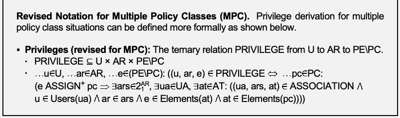
複数のポリシークラス（MPC）に対する改訂表記。複数のポリシークラスの状況における権限の導出は、以下に示すように、より形式的に定義できます。
•Privileges (revised for MPC): The ternary relation PRIVILEGE from U to AR to PE\PC.
•権限（MPC 向けに改訂）: U から AR から PE\PC への三項関係 PRIVILEGE。
•\(\mathrm{PRIVILEGE} \subseteq U \times \mathrm{AR} \times \mathrm{PE}\setminus\mathrm{PC}\)
•\(\mathrm{PRIVILEGE} \subseteq U \times \mathrm{AR} \times \mathrm{PE}\setminus\mathrm{PC}\)
•\(\ldots u\in U, \ldots\mathrm{ar}\in\mathrm{AR}, \ldots e\in(\mathrm{PE}\setminus\mathrm{PC}): ((u, \mathrm{ar}, e) \in \mathrm{PRIVILEGE} \Leftrightarrow \ldots\mathrm{pc}\in\mathrm{PC}: (e \mathrel{\mathrm{ASSIGN}^{+}} \mathrm{pc} \Rightarrow \exists\mathrm{ars}\in2_{1}^{\mathrm{AR}}, \exists\mathrm{ua}\in\mathrm{UA}, \exists\mathrm{at}\in\mathrm{AT}: ((\mathrm{ua}, \mathrm{ars}, \mathrm{at}) \in \mathrm{ASSOCIATION} \land u \in \mathrm{Users}(\mathrm{ua}) \land \mathrm{ar} \in \mathrm{ars} \land e \in \mathrm{Elements}(\mathrm{at}) \land \mathrm{at} \in \mathrm{Elements}(\mathrm{pc}))))\)
•\(\ldots u\in U, \ldots\mathrm{ar}\in\mathrm{AR}, \ldots e\in(\mathrm{PE}\setminus\mathrm{PC}): ((u, \mathrm{ar}, e) \in \mathrm{PRIVILEGE} \Leftrightarrow \ldots\mathrm{pc}\in\mathrm{PC}: (e \mathrel{\mathrm{ASSIGN}^{+}} \mathrm{pc} \Rightarrow \exists\mathrm{ars}\in2_{1}^{\mathrm{AR}}, \exists\mathrm{ua}\in\mathrm{UA}, \exists\mathrm{at}\in\mathrm{AT}: ((\mathrm{ua}, \mathrm{ars}, \mathrm{at}) \in \mathrm{ASSOCIATION} \land u \in \mathrm{Users}(\mathrm{ua}) \land \mathrm{ar} \in \mathrm{ars} \land e \in \mathrm{Elements}(\mathrm{at}) \land \mathrm{at} \in \mathrm{Elements}(\mathrm{pc}))))\)
6.4 Amalgamated Policy Examples
6.4 統合ポリシーの例
Combining the access control policies of two or more systems can be done in a number of ways. The resulting policy should make sense from a security standpoint and maintain the intended security objectives asserted originally by each system individually. Ideally, the resulting policy should also gain efficiency in operation of the administrative levels defined. For example, rather than having redundant user policy elements to represent a user under each system policy, only one set of policy elements could be maintained and applied to both.
2 つ以上のシステムのアクセス制御ポリシーを組み合わせるには、いくつかの方法があります。結果として得られるポリシーは、セキュリティの観点から筋が通っており、各システムが個別にもともと表明していた意図されたセキュリティ目標を維持すべきです。理想的には、結果として得られるポリシーは、定義された管理レベルの運用においても効率を高めるべきです。たとえば、各システムのポリシーの下でユーザーを表す冗長なユーザーポリシー要素を持つ代わりに、1 組のポリシー要素のみを維持し、両方に適用することもできます。
The amalgamation of two or more systems together under a unified policy requires making some assumptions about and adjustments to policy coverage and also to administrative responsibilities. For instance, the degree of interdependence among policy authorities is an important factor. While some duties may be shared between the authorities of each system, other duties may be allocated exclusively to certain authorities to effectuate the required policy. The examples given below illustrate the types of considerations involved in the amalgamation of system policies and the types of trade-off decisions that can occur. Other, less involved examples are also described elsewhere [Fer05, Fer11].
2 つ以上のシステムを統一されたポリシーの下に統合するには、ポリシーの適用範囲や管理上の責任についていくつかの仮定を置き、調整を行う必要があります。たとえば、ポリシー権限者間の相互依存の度合いは重要な要因です。一部の職務は各システムの権限者の間で共有されることがある一方、必要なポリシーを実現するために、ほかの職務は特定の権限者のみに割り当てられることがあります。以下に示す例は、システムポリシーの統合に関わる考慮事項の種類と、生じ得るトレードオフの判断の種類を示しています。そのほかの、それほど複雑でない例も、別の箇所に記載されています [Fer05, Fer11]。
6.4.1 DAC and Email
6.4.1 DAC と電子メール
As an example of an amalgamated policy specification that involves multiple policy class, consider the operating system and mail system examples described earlier in this report. Each system policy is expressed using a single policy class that involves an intra-policy class pattern for administration. The individual policies are somewhat independent, insofar as the scope of objects covered by each policy is distinct and non-overlapping. However, the set of users is potentially the same for each system and overlaps considerably.
複数のポリシークラスを含む統合ポリシー仕様の例として、本報告書で前述したオペレーティングシステムとメールシステムの例を考えます。各システムのポリシーは、管理にポリシークラス内パターンを用いた単一のポリシークラスを使って表現されます。各ポリシーがカバーするオブジェクトの範囲が別個で重なり合わない限りにおいて、個々のポリシーはある程度独立しています。しかし、ユーザーの集合は、各システムで同じである可能性があり、大きく重なり合っています。
The main adjustment needed in this example is to determine how administrative duties should be allocated. The approach taken is to treat the operating system as foundational and a prerequisite for use of the mail system. Accordingly, the PA assigns the entire responsibility for creating and deleting users to the DA of the operating system (DA-OS). The DA for the mail system (DA-MS) no longer creates or deletes a user, and instead, relies on the DA-OS to perform this function. Once a user has been established by the DA-OS, the DA-MS can assign or unassign mail containers to and from the user, thereby respectively enabling and disabling the user’s capability to use the mail system.
この例で必要な主な調整は、管理上の職務を誰に割り当てるべきかを決定することです。とられるアプローチは、オペレーティングシステムを基盤として扱い、メールシステムの使用の前提条件とすることです。したがって、PA は、ユーザーの作成と削除に関する責任のすべてを、オペレーティングシステムの DA（DA-OS）に割り当てます。メールシステムの DA（DA-MS）は、もはやユーザーの作成や削除を行わず、代わりにこの機能の実行を DA-OS に依拠します。ユーザーが DA-OS によって確立されると、DA-MS は、そのユーザーにメールコンテナを割り当てたり、そのユーザーから割当てを解除したりでき、それによって、そのユーザーのメールシステムを使用する能力をそれぞれ有効化・無効化できます。
Figure 20 gives an example of a partial authorization graph illustrating the DAC segment of the integrated DAC-Mail System policy. As before, user \(u_{1011}\) is the DA-OS for the DAC policy class, and \(u_{1}\) and \(u_{2}\) are typical users of the system. The domain authority is created by the PA (not shown), who establishes the users, objects, and relationships for the system. Those relationships are shown in blue and gray, whereby the blue denotes administrative relations and the gray denotes non-administrative relations.
図 20 は、統合された DAC-Mail System ポリシーの DAC セグメントを示す、部分的な認可グラフの例です。前と同様に、ユーザー \(u_{1011}\) は DAC ポリシークラスの DA-OS であり、\(u_{1}\) と \(u_{2}\) はシステムの典型的なユーザーです。ドメイン権限者は PA（図示されていません）によって作成され、PA がシステムのユーザー、オブジェクト、関係を確立します。それらの関係は青と灰色で示されており、青は管理上の関係を、灰色は非管理の関係を表します。
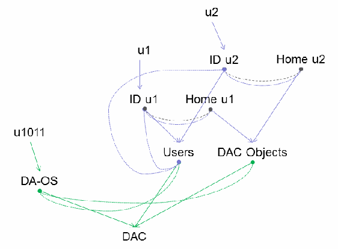
DAC部分の認可グラフの一部です。緑（PAによるもの）は、u1011 → DA-OS、DA-OS・Users・DAC Objects → DACの割り当てと、DA-OSからUsersとDAC Objectsへの関連付けです。青と灰色（DA-OSによるもの）は、u1 → ID u1、u2 → ID u2、ID u1とID u2 → Users、Home u1とHome u2 → DAC Objectsの割り当て、各ID u_iから自分のHome u_iへの灰色の破線の関連付け、ID u_iからHome u_iとUsersへの青い管理用の関連付けです。
Figure 20: DAC Segment of the Integrated System Policy
図 20: 統合システムポリシーの DAC セグメント
Figure 21 gives an example of a partial authorization graph illustrating the Mail System segment of the integrated DAC-Mail System policy. User \(u_{1001}\) is the domain authority for the policy class, and \(u_{1}\) and \(u_{2}\) are DAC users over which the DA-MS has been assigned authority from the PA to establish objects and relationships that pertain exclusively to the mail system. The relationships established for \(u_{2}\) are shown in red and gray, whereby the red denotes administrative relations and the gray denotes non-administrative relations.
図 21 は、統合された DAC-Mail System ポリシーのメールシステムセグメントを示す、部分的な認可グラフの例です。ユーザー \(u_{1001}\) はそのポリシークラスのドメイン権限者であり、\(u_{1}\) と \(u_{2}\) は DAC ユーザーで、このユーザーたちについて、メールシステムにのみ関わるオブジェクトと関係を確立する権限が DA-MS に PA から割り当てられています。\(u_{2}\) のために確立された関係は赤と灰色で示されており、赤は管理上の関係を、灰色は非管理の関係を表します。
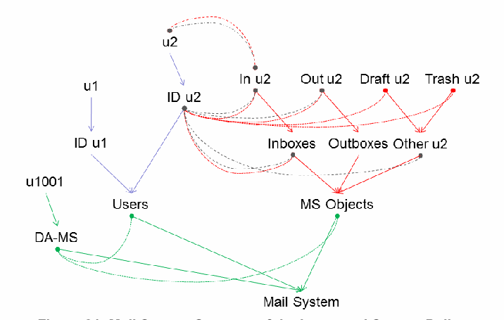
メールシステム部分の認可グラフの一部です。緑（PAによるもの）は、u1001 → DA-MS、DA-MS・Users・MS Objects → Mail Systemの割り当てと、DA-MSからUsersとMS Objectsへの関連付けです。青はu1 → ID u1 → Users、u2 → ID u2 → Usersです。赤と灰色（DA-MSによるもの、ユーザーu2について）は、In u2 → Inboxes、Out u2 → Outboxes、Draft u2とTrash u2 → Other u2、Inboxes・Outboxes・Other u2 → MS Objectsの割り当て、ID u2からメールの各コンテナーへの灰色と赤の破線の関連付け、u2からIn u2への赤い禁止です。
Figure 21: Mail System Segment of the Integrated System Policy
図 21: 統合システムポリシーのメールシステムセグメント
An example of an entire authorization graph for the integrated system policy is shown in Figure 22. The DAC operating system objects and relations for user \(u_{2}\), which were shown in a Figure 20, are omitted to avoid an overly busy illustration.
統合システムポリシー全体の認可グラフの例を図 22 に示します。ユーザー \(u_{2}\) の DAC オペレーティングシステムのオブジェクトと関係は、図 20 に示したものですが、図が煩雑になりすぎないように省略されています。
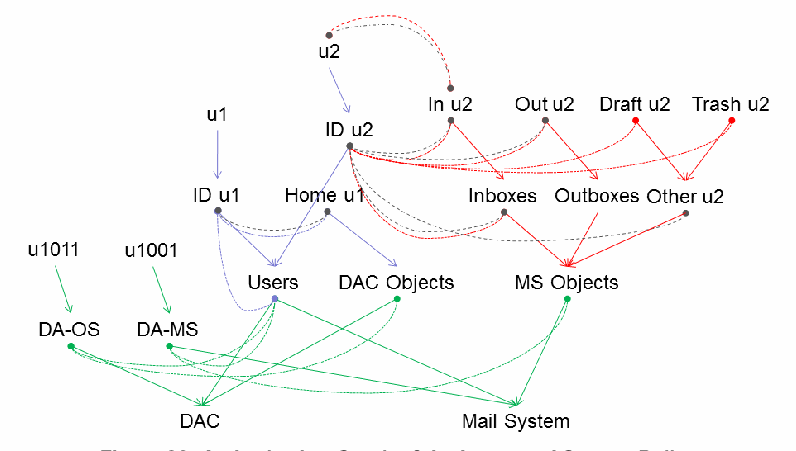
図20と図21を合わせた認可グラフです。u1011 → DA-OSとu1001 → DA-MS（緑、PAによるもの）、DA-OS → DAC、DA-MS → Mail System、Users・DAC Objects・MS Objectsとそれぞれの方針クラスDACとMail System、u1 → ID u1、u2 → ID u2 → Users、Home u1 → DAC Objectsがあります。MS Objectsの下にu2のメールのコンテナー（In u2、Out u2、Draft u2、Trash u2、Inboxes、Outboxes、Other u2）と赤・灰色の関連付けと禁止があり、ID u1から青い管理用の関連付けが伸びています。
Figure 22: Authorization Graph of the Integrated System Policy
図 22: 統合システムポリシーの認可グラフ
Several inferences can be drawn from this example. The first is that policies grow very quickly and can become unwieldy to view in their entirety. The second is that relationships that involve administrative access rights exceed those that involve non-administrative ones, relative to the overall authorization pattern. The third and final inference is that when amalgamating policies together, establishing an approach that fits the needs of all policy stakeholders is an important prerequisite to making any adjustments to existing policies.
この例から、いくつかの推論を導くことができます。1 つ目は、ポリシーは非常に急速に大きくなり、その全体を閲覧するのが扱いにくくなり得ることです。2 つ目は、全体の認可パターンに対して、管理アクセス権を含む関係が、非管理のアクセス権を含むものを上回ることです。3 つ目で最後の推論は、ポリシーを統合する際には、すべてのポリシーの利害関係者のニーズに合うアプローチを確立することが、既存のポリシーに何らかの調整を加える前の重要な前提条件であることです。
6.4.2 DAC and MAC
6.4.2 DAC と MAC
The following MAC policy is defined as an extension to the DAC policy discussed previously to form an integrated DAC-MAC policy. A MAC policy is by its very nature comprehensive and compulsory; therefore, all existing users and objects need to be placed under it for compliance. Three security levels pertain to this multi-level security policy extension: high, medium, and low. Security levels are assigned to users and objects, and are also applicatory to processes working on behalf of users. Users are assigned levels that represent their trustworthiness, while objects are assigned levels that represent their sensitivity. A security level x is said to dominate a security level y, if x is greater than or equal to y. In this example, the security level high dominates medium and low, while medium dominates low.
次の MAC ポリシーは、前に論じた DAC ポリシーの拡張として定義され、統合された DAC-MAC ポリシーを形成します。MAC ポリシーは本質的に包括的かつ強制的であり、そのため、既存のすべてのユーザーとオブジェクトは、準拠のためにその下に置く必要があります。このマルチレベルセキュリティポリシーの拡張には、高、中、低の 3 つのセキュリティレベルが関わります。セキュリティレベルはユーザーとオブジェクトに割り当てられ、ユーザーに代わって動作するプロセスにも適用されます。ユーザーには信頼性を表すレベルが割り当てられ、オブジェクトには機微性を表すレベルが割り当てられます。セキュリティレベル x がセキュリティレベル y を支配するのは、x が y 以上である場合です。この例では、セキュリティレベル高が中と低を支配し、中が低を支配します。
The PA establishes the clearance and classification levels for the multi-level policy illustrated in Figure 23. Since this part of the policy specification is mandatory and remains constant, there is no need to have a DA manage the policy once it is specified. Security levels are represented by attributes within the PM policy. All users are assigned to one of three user attributes that represent a user clearance. Users cleared to the high, medium, and low levels of trust are assigned to the \(H_{T}\), \(M_{T}\), and \(L_{T}\) user attributes respectively. Similarly, all objects are assigned to one of three object attributes that represent a classification. Objects classified at the high, medium, and low sensitivity levels are assigned to the \(H_{S}\), \(M_{S}\), and \(L_{S}\) object attributes. In this example, read means that information flows from the object to the user (or one of its processes), which implies execute, while write means that information flows from the user to the object.
PA は、図 23 に示すマルチレベルポリシーのクリアランスと機密区分のレベルを確立します。ポリシー仕様のこの部分は強制的であり、一定のままであるため、いったん規定された後は、DA にポリシーを管理させる必要はありません。セキュリティレベルは、PM ポリシー内の属性によって表されます。すべてのユーザーは、ユーザーのクリアランスを表す 3 つのユーザー属性のいずれかに割り当てられます。信頼の高、中、低のレベルにクリアランスを持つユーザーは、それぞれユーザー属性 \(H_{T}\)、\(M_{T}\)、\(L_{T}\) に割り当てられます。同様に、すべてのオブジェクトは、機密区分を表す 3 つのオブジェクト属性のいずれかに割り当てられます。機微性の高、中、低のレベルに区分されたオブジェクトは、オブジェクト属性 \(H_{S}\)、\(M_{S}\)、\(L_{S}\) に割り当てられます。この例では、読み取りは、情報がオブジェクトからユーザー（またはそのプロセスの 1 つ）へ流れることを意味し、これは実行を含意します。書き込みは、情報がユーザーからオブジェクトへ流れることを意味します。
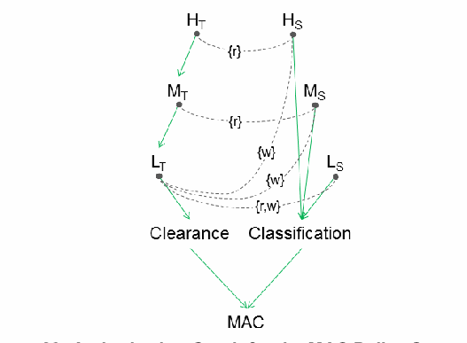
MAC方針部分の認可グラフ（緑、PAによるもの）です。ユーザー属性H_T → M_T → L_T → Clearance、オブジェクト属性H_S・M_S・L_S → Classification、ClearanceとClassification → MACの割り当てがあります。破線の関連付けはH_T —{r}— H_S、M_T —{r}— M_Sと、L_TからH_Sへ{w}、M_Sへ{w}、L_Sへ{r,w}です。
Figure 23: Authorization Graph for the MAC Policy Segment
図 23: MAC ポリシーセグメントの認可グラフ
The aforementioned policy assignments allow users and associated processes that are cleared at the high security level to perform read operations on objects classified at the high, medium, and low security levels. Users (and their processes) that are cleared at the medium level are allowed to perform read operations only on objects classified at the medium and low levels. Finally, users (and their processes) that are cleared low are allowed to perform read operations only on objects classified at the medium and low levels. That is, the simple security property discussed in Section 2.3 is reflected in the policy.
上述のポリシーの割当てにより、セキュリティレベル高にクリアランスを持つユーザーと関連するプロセスは、セキュリティレベル高、中、低に区分されたオブジェクトに対して読み取り操作を実行できます。レベル中にクリアランスを持つユーザー（とそのプロセス）は、レベル中と低に区分されたオブジェクトに対してのみ読み取り操作の実行が許可されます。最後に、クリアランスが低のユーザー（とそのプロセス）は、レベル中と低に区分されたオブジェクトに対してのみ読み取り操作の実行が許可されます。つまり、2.3 節で論じた単純セキュリティ特性が、ポリシーに反映されています。
Write operations are treated differently than read operations. The approach typically used with the PM to prevent leakage of sensitive data to unauthorized principals is to recognize when an authorized process reads sensitive information and then constrain that process or its associated user from writing to objects accessible to any unauthorized principals. This approach, which entails the use of obligations, is general enough to support a large variety of policies that depend on the absence of leakage. Separation of duty and other history-based policies can also be supported in a similar manner—recognizing when a critical event occurs and taking action to constrain the process involved or its associated user from taking an unwanted action or set of actions.
書き込み操作は、読み取り操作とは異なる扱いを受けます。認可されていないプリンシパルへの機微なデータの漏えいを防ぐために PM で通常用いられるアプローチは、認可されたプロセスが機微な情報を読み取ったことを認識し、そのプロセスまたは関連するユーザーが、認可されていないプリンシパルがアクセスできるオブジェクトに書き込むことを制約することです。義務の使用を伴うこのアプローチは、漏えいがないことに依存する多種多様なポリシーをサポートできるほど汎用的です。職務分掌やその他の履歴ベースのポリシーも、同様の方法でサポートできます。すなわち、重要なイベントが発生したことを認識し、関わるプロセスまたは関連するユーザーが望ましくない行為または一連の行為をとることを制約する措置をとります。
For this MAC example, to prevent a user’s process from writing to an object that is at a lower security level than any object it has read, additional restrictions are needed. The obligations specified for this policy to fulfill this objective are as follows:
この MAC の例では、ユーザーのプロセスが、読み取ったどのオブジェクトよりも低いセキュリティレベルのオブジェクトに書き込むことを防ぐために、追加の制限が必要です。この目的を果たすためにこのポリシーに対して規定される義務は、次のとおりです。
The first obligation specifies that once a process successfully reads an object in the \(H_{S}\) container, a process prohibition is created to prevent the process from writing to objects that are outside the \(H_{S}\) container. Similarly, the second obligation specifies that once a process successfully reads an object in the \(M_{S}\) container, a process prohibition is created to prevent the process from writing to objects outside \(M_{S}\) or \(H_{S}\) containers. The two obligations can also be written using the disjunctive form of a process deny prohibition, as follows:
最初の義務は、プロセスが \(H_{S}\) コンテナ内のオブジェクトを正常に読み取ると、そのプロセスが \(H_{S}\) コンテナの外側にあるオブジェクトに書き込むことを防ぐためのプロセス禁止が作成されることを規定します。同様に、2 つ目の義務は、プロセスが \(M_{S}\) コンテナ内のオブジェクトを正常に読み取ると、そのプロセスが \(M_{S}\) または \(H_{S}\) コンテナの外側にあるオブジェクトに書き込むことを防ぐためのプロセス禁止が作成されることを規定します。2 つの義務は、プロセス拒否禁止の選言形式を使って、次のように書くこともできます。
The first obligation establishes that once a process successfully reads an object in the \(H_{S}\) container, the process cannot write to objects that are in the \(L_{S}\) and \(M_{S}\) containers. The second establishes that once a process successfully reads an object in the \(M_{S}\) container, the process cannot write to objects that are in the \(L_{S}\) container. These complimentary ways to state a process deny prohibition for this policy are possible, since the \(L_{S}\), \(M_{S}\), and \(H_{S}\) containers are mutually exclusive and collectively exhaustive with respect to the objects of the DAC-MAC system. Regardless of the form of the obligation pair used, the first successful read of an object by a process constrains the process to write only at or above the sensitivity level of the object, consistent with the ⋆-property.
最初の義務は、プロセスが \(H_{S}\) コンテナ内のオブジェクトを正常に読み取ると、そのプロセスは \(L_{S}\) および \(M_{S}\) コンテナ内のオブジェクトに書き込めないことを定めます。2 つ目は、プロセスが \(M_{S}\) コンテナ内のオブジェクトを正常に読み取ると、そのプロセスは \(L_{S}\) コンテナ内のオブジェクトに書き込めないことを定めます。このポリシーに対してプロセス拒否禁止を述べるこれらの相補的な方法が可能なのは、\(L_{S}\)、\(M_{S}\)、\(H_{S}\) コンテナが DAC-MAC システムのオブジェクトに関して、相互に排他的であり、かつ全体として網羅的であるためです。使用する義務の対がどちらの形であっても、プロセスによるオブジェクトの最初の正常な読み取りにより、プロセスは、⋆-特性と整合して、そのオブジェクトの機微性レベル以上でのみ書き込むよう制約されます。
Adding the DAC policy specification discussed in earlier examples to the MAC policy specification, results in the authorization graph illustrated in Figure 24. Note that the policy specified up to this point is done by the PA. Going forward, the DA established by the PA has responsibility to govern the users and objects of the system. One subtle extension made to the DAC policy is that the DA must have the authority to assign users a security clearance via the \(H_{T}\), \(M_{T}\), and \(L_{T}\) attributes. This authority is represented in the authorization graph by the administrative association from the DA user attribute in the DAC policy class to the Clearance user attribute in the MAC policy class.
前の例で論じた DAC ポリシー仕様を MAC ポリシー仕様に追加すると、図 24 に示す認可グラフになります。ここまでに規定されたポリシーは PA が行うものであることに注意してください。今後は、PA が確立した DA が、システムのユーザーとオブジェクトを統制する責任を負います。DAC ポリシーに加えられた微妙な拡張の 1 つは、DA が、属性 \(H_{T}\)、\(M_{T}\)、\(L_{T}\) を介して、ユーザーにセキュリティクリアランスを割り当てる権限を持たなければならないことです。この権限は、認可グラフでは、DAC ポリシークラスの DA ユーザー属性から、MAC ポリシークラスの Clearance ユーザー属性への、管理上の関連付けによって表されます。
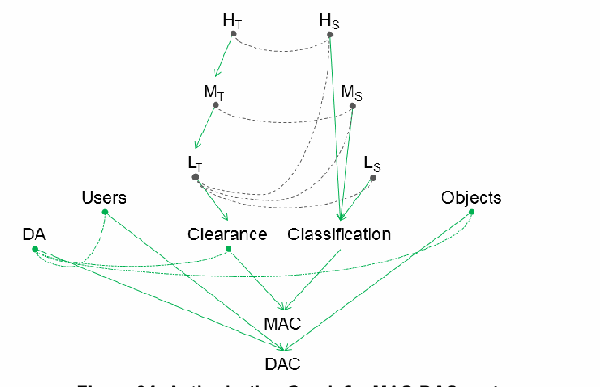
統合したMAC-DACシステムの認可グラフ（緑）です。図23のMAC部分（H_T → M_T → L_T → Clearance、H_S・M_S・L_S → Classification、ClearanceとClassification → MACと、それらの間の破線の関連付け）に、DACの属性UsersとObjectsとDAが加わり、それらはDACに割り当てられています。DAからUsers、Objects、Clearanceへ関連付けがあります。
Figure 24: Authorization Graph for MAC-DAC system
図 24: MAC-DAC システムの認可グラフ
One additional consideration concerning object creation is required, however. When an object is created under the DAC policy, it is assigned to the home container of the user. A newly created object also needs to be assigned an appropriate classification level under the MAC policy. Different policies regarding object creation can be supported by the PM model. For the integrated DAC-MAC policy, the policy is that the assigned classification level of the object defaults to that of the user’s clearance. Figure 25 illustrates the policy applied to the object \(o_{1}\) in the home container of user \(u_{1}\). Such assignments can be accomplished in one of two ways. The first is to require that the create object in object attribute routine, C-OinOA, makes a second assignment to the classification level attribute. The second way is more indirect. The second attribute assignment would be carried out through an administrative obligation that makes the assignment when triggered by the creation of an object in an object attribute event (i.e., a create- OinOA event).
ただし、オブジェクトの作成に関して、もう 1 つ考慮が必要です。DAC ポリシーの下でオブジェクトが作成されると、そのオブジェクトはユーザーのホームコンテナに割り当てられます。新しく作成されたオブジェクトには、MAC ポリシーの下で適切な機密区分レベルを割り当てる必要もあります。オブジェクトの作成に関するさまざまなポリシーを、PM モデルでサポートできます。統合された DAC-MAC ポリシーでは、オブジェクトに割り当てられる機密区分レベルは、デフォルトでユーザーのクリアランスのレベルになるというポリシーです。図 25 は、ユーザー \(u_{1}\) のホームコンテナ内のオブジェクト \(o_{1}\) に適用されるポリシーを示しています。そのような割当ては、2 つの方法のいずれかで実現できます。1 つ目は、オブジェクト属性内でのオブジェクト作成ルーチン C-OinOA が、機密区分レベルの属性への 2 つ目の割当てを行うように要求することです。2 つ目の方法は、より間接的です。2 つ目の属性割当ては、オブジェクト属性内でのオブジェクト作成イベント（すなわち create-OinOA イベント）によってトリガーされたときに割当てを行う、管理上の義務を通じて実行されます。
For the first approach, the existing create object in object attribute routine would be retained as part of the trusted computing base, and a slightly modified version that allows a user to make an additional assignment to a sensitivity level attribute, for objects newly created within a home directory, would be added to the trusted computing base of the PM framework. Users would also need to be granted sufficient authority to execute the new routine via an administrative association. The enhanced object creation routine in effect constitutes an extension to the PM model, which can support not only this MAC policy, but also similar types of lattice-based policies.
1 つ目の方法では、既存のオブジェクト属性内でのオブジェクト作成ルーチンをトラステッドコンピューティングベースの一部として保持し、ホームディレクトリ内で新しく作成されたオブジェクトについて、ユーザーが機微性レベル属性への追加の割当てを行えるようにする、わずかに変更したバージョンを、PM フレームワークのトラステッドコンピューティングベースに追加します。また、管理上の関連付けを通じて、新しいルーチンを実行するのに十分な権限をユーザーに付与する必要もあります。強化されたオブジェクト作成ルーチンは、事実上 PM モデルの拡張にあたり、この MAC ポリシーだけでなく、同様の種類の格子ベースのポリシーもサポートできます。
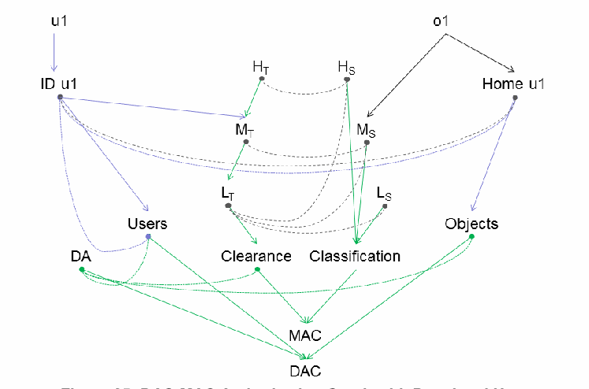
ユーザーを加えた統合DAC-MAC方針の認可グラフです。MAC部分（緑）は、H_T → M_T → L_T → Clearance、H_S・M_S・L_S → Classification、ClearanceとClassification → MACと破線の関連付けです。DAC部分は、DA・Users・Objects → DAC、u1 → ID u1 → UsersとM_T、Home u1 → Objectsで、オブジェクトo1はHome u1とM_Sに割り当てられています。青と灰色の破線の関連付けがID u1とHome u1を結んでいます。
Figure 25: DAC-MAC Authorization Graph with Populated User
図 25: ユーザーが設定された DAC-MAC 認可グラフ
For the second approach, additional authority needs to be granted to the DA via an administrative association from DA to Classification. That authority, coupled with the authority the DA already holds over Objects, allows a DA to create obligations that exercise the DA’s authority to assign a newly created object in the DAC policy class to an appropriate classification level in the MAC policy class. The following set of obligations is needed for this approach:
2 つ目の方法では、DA から Classification への管理上の関連付けを通じて、DA に追加の権限を付与する必要があります。その権限は、DA が Objects に対してすでに保持している権限と組み合わさることで、DA が、DAC ポリシークラスで新しく作成されたオブジェクトを、MAC ポリシークラスの適切な機密区分レベルに割り当てる DA の権限を行使する義務を作成できるようにします。この方法には、次の一連の義務が必要です。
The first obligation applies to users with \(L_{T}\) clearance. For those users, it assigns objects newly created within their home container to the \(L_{S}\) classification container. The second and third obligations carry out similar assignments of newly created objects to \(M_{S}\) and \(H_{S}\) containers for users with \(M_{T}\) and \(H_{T}\) clearances respectively. The main drawback with this approach is that the DA must be trusted to a greater degree than in the first approach, since the DA’s involvement is needed to specify part of the MAC policy. Nonetheless, given that the DA is already trusted to assign newly created users to a clearance level, the additional responsibility is not unreasonable.
最初の義務は、クリアランス \(L_{T}\) のユーザーに適用されます。それらのユーザーについて、自らのホームコンテナ内で新しく作成されたオブジェクトを、機密区分コンテナ \(L_{S}\) に割り当てます。2 つ目と 3 つ目の義務は、新しく作成されたオブジェクトのコンテナ \(M_{S}\) と \(H_{S}\) への同様の割当てを、それぞれクリアランス \(M_{T}\) と \(H_{T}\) のユーザーについて実行します。この方法の主な欠点は、MAC ポリシーの一部を規定するために DA の関与が必要であるため、DA が 1 つ目の方法よりも高い程度で信頼されなければならないことです。とはいえ、DA がすでに新しく作成されたユーザーにクリアランスレベルを割り当てることを信頼されていることを考えると、追加の責任は不合理ではありません。
As with the original DAC system, other users have the discretion to grant user \(u_{1}\) the authority to read or write objects they control, which are classified at the \(H_{S}\), \(M_{S}\), or \(L_{S}\) sensitivity level. However, because that authority must be held under both the DAC and MAC policy classes, the multi-level restrictions defined in MAC prevail over any conflicting authority granted in DAC, as would be expected. The reverse is also true. Even if a user has sufficient clearance to access certain information under MAC, the user may not be given access to the information unless the user has a specific need to know. That is, access to the information must be necessary to carry out official duties and must be expressed via an explicit grant of authority.
元の DAC システムと同様に、ほかのユーザーは、ユーザー \(u_{1}\) に、自らが制御するオブジェクトで、機微性レベル \(H_{S}\)、\(M_{S}\)、または \(L_{S}\) に区分されたものを読み取りまたは書き込みする権限を付与する裁量を持ちます。しかし、その権限は DAC と MAC の両方のポリシークラスの下で保持されなければならないため、MAC で定義されたマルチレベルの制限が、DAC で付与された競合する権限に優先します。これは予想されるとおりです。その逆も真です。ユーザーが MAC の下で特定の情報にアクセスするのに十分なクリアランスを持っていても、その情報を知る特定の必要がない限り、そのユーザーにその情報へのアクセスが与えられないことがあります。つまり、情報へのアクセスは、公務を遂行するために必要でなければならず、権限の明示的な付与によって表現されなければなりません。
One further improvement to the policy is possible. Note that under either approach, a user currently can create an object only at the classification level equivalent to its clearance. If a user is granted discretionary access by another user, it can write to an object at a lower level of classification, provided that it has not read an object at a higher classification level. But, it cannot create an object at a lower level of classification than its clearance equivalent and write to it. With the first approach discussed above, this feature can be instituted easily by modifying the enhanced create object in object attribute routine to create objects based on a classification level via an argument supplied by the user. If the user has read an object at a higher classification level, existing prohibitions prevent writing to the object, as would be warranted. With the second approach, this policy adjustment is not possible, because there is not a way for the user to convey the intended security level to the prohibition making the assignment.
ポリシーには、もう 1 つの改善が可能です。どちらの方法でも、ユーザーは現在、自らのクリアランスと同等の機密区分レベルでのみオブジェクトを作成できることに注意してください。ユーザーがほかのユーザーから任意のアクセスを付与された場合、より高い機密区分レベルのオブジェクトを読み取っていなければ、より低い機密区分レベルのオブジェクトに書き込むことができます。しかし、自らのクリアランスに相当するレベルよりも低い機密区分レベルのオブジェクトを作成して書き込むことはできません。上で論じた 1 つ目の方法では、強化されたオブジェクト属性内でのオブジェクト作成ルーチンを変更して、ユーザーが指定する引数を介して機密区分レベルに基づいてオブジェクトを作成するようにすることで、この機能を容易に導入できます。ユーザーがより高い機密区分レベルのオブジェクトを読み取っていれば、既存の禁止が、当然のことながら、そのオブジェクトへの書き込みを防ぎます。2 つ目の方法では、割当てを行う禁止に、意図するセキュリティレベルをユーザーが伝える手段がないため、このポリシーの調整はできません。
7. Architecture
7. アーキテクチャ
The PM functional architecture is intended to accommodate a number of different situations using a variety of approaches. The architectural components of the PM are amenable to implementation in both centralized and distributed systems. For the former, interactions between the architectural components take place entirely within a computer system and the interfaces between components are defined in terms of programing interfaces. For the latter, interactions take place across a network and the same information is conveyed through a network protocol.
PM の機能アーキテクチャは、さまざまなアプローチを使って、多くの異なる状況に対応することを意図しています。PM のアーキテクチャ構成要素は、集中型システムと分散型システムの両方での実装に適しています。前者では、アーキテクチャ構成要素間の相互作用はコンピュータシステムの内部で完全に行われ、構成要素間のインタフェースはプログラミングインタフェースによって定義されます。後者では、相互作用はネットワークを介して行われ、同じ情報がネットワークプロトコルを通じて伝達されます。
Many types of hybrid designs, in which some components reside within a single system and the rest are dispersed across other systems, are also possible. A separate decision to use either a programming interface or network protocol for an interface may be made, as appropriate, because of the functionally equivalency between the two.
一部のコンポーネントが単一のシステム内にあり、残りがほかのシステムに分散しているような、多くの種類のハイブリッド設計も可能です。インタフェースにプログラミングインタフェースとネットワークプロトコルのどちらを使用するかは、両者が機能的に等価であるため、適宜、別個に決定できます。
7.1 Architectural Components
7.1 アーキテクチャの構成要素
The components of the PM functional architecture work together to bring about controlled access to protected resources. The components include a Policy Enforcement Point (PEP), a Policy Decision Point (PDP), an Event Processing Point (EPP), a Policy Administration Point (PAP), a Policy Information Point (PIP), and a Resource Access Point (RAP). Figure 26 illustrates these components and their interfaces. Note that in this diagram the arrows represent calls or messages between components and the bars represent component interfaces. Typically, the calling/sending component waits for a response from the called/receiving component, before continuing its operation. For simplicity, the response is not shown in the diagram.
PM 機能アーキテクチャの構成要素は、連携して、保護対象資源への制御されたアクセスを実現します。構成要素には、ポリシー実施ポイント（PEP）、ポリシー決定ポイント（PDP）、イベント処理ポイント（EPP）、ポリシー管理ポイント（PAP）、ポリシー情報ポイント（PIP）、資源アクセスポイント（RAP）があります。図 26 は、これらの構成要素とそのインタフェースを示しています。この図では、矢印は構成要素間の呼び出しまたはメッセージを表し、バーは構成要素のインタフェースを表していることに注意してください。通常、呼び出し側または送信側の構成要素は、動作を続ける前に、呼び出された側または受信側の構成要素からの応答を待ちます。簡潔にするため、応答は図に示していません。
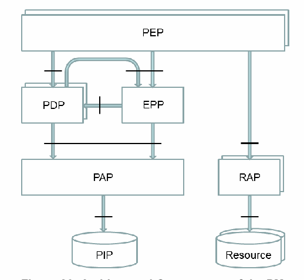
PMの構成要素のブロック図です。上の「PEP」から「PDP」「EPP」「RAP」へのインターフェース（横棒）があります。PDPとEPPの間にもインターフェースがあり、PDPとEPPはともに「PAP」へつながります。PAPはデータストア「PIP」へ、RAPは「Resource」へつながっています。矢印は呼び出しまたはメッセージ、横棒は構成要素のインターフェースを表します。
Figure 26: Architectural Components of the PM
図 26: PM のアーキテクチャ構成要素
Further details for each of the architectural components are as follows:
各アーキテクチャ構成要素の詳細は次のとおりです。
•Policy Enforcement Point. PM-aware applications must rely on a PEP to gain access to protected resources and to policy information via the interface that it provides, which is typically a programming interface. More than one PEP may exist to service applications. The PEP ensures that access requests are verified as being in conformance with the specified policy, before the accesses in question can proceed. To accomplish this objective, the PEP works in tandem with a PDP and must not be bypassable.
The PEP conveys access requests issued by a PM-aware application to a PDP for decisions about their disposition. An application’s access request includes the identity of the requesting process, the requested operation, and the arguments of the operation, including the targeted resource(s) and optional data. Both non-administrative and administrative access requests are handled by the PEP.
For non-administrative resource access requests that are denied, the PEP notifies the application of an authorization failure. For requests that are granted, the PEP receives the Uniform Resource Identifier (URI) for the physical resource in question. This enables the PEP to carry out the requested access using the URI to identify the RAP, issue the appropriate command(s) against it, and return the results to the application. The PEP also generates an event after each access request it successfully executes, which conveys the context of the event to the EPP.
Decisions on access requests involving administrative operations are handled somewhat differently. For administrative requests that are denied, the PEP notifies the application of an authorization failure. For requests that are granted, the PEP receives the results of the administrative action taken against the abstract resources in the PIP, which the PDP carries out itself via the PAP. The PEP does not generate events for access requests carried out by the PDP.
•ポリシー実施ポイント。PM 対応アプリケーションは、保護対象資源とポリシー情報にアクセスするために、PEP が提供するインタフェース（通常はプログラミングインタフェース）に依拠しなければなりません。アプリケーションにサービスを提供する PEP は複数存在することがあります。PEP は、アクセス要求が、問題のアクセスを進める前に、規定されたポリシーに適合していると確認されるようにします。この目的を達成するために、PEP は PDP と連携して動作し、迂回できてはなりません。
PEP は、PM 対応アプリケーションが発行したアクセス要求を、その処理に関する決定のために PDP に伝えます。アプリケーションのアクセス要求には、要求元プロセスの識別情報、要求された操作、および対象の資源と任意のデータを含む操作の引数が含まれます。非管理アクセス要求と管理アクセス要求の両方が PEP によって扱われます。
拒否された非管理の資源アクセス要求については、PEP は認可の失敗をアプリケーションに通知します。許可された要求については、PEP は、問題の物理資源の Uniform Resource Identifier（URI）を受け取ります。これにより PEP は、URI を使って RAP を特定し、それに対して適切なコマンドを発行し、結果をアプリケーションに返すことで、要求されたアクセスを実行できます。PEP はまた、正常に実行した各アクセス要求の後にイベントを生成し、そのイベントのコンテキストを EPP に伝えます。
管理操作を伴うアクセス要求の決定は、やや異なる扱いを受けます。拒否された管理要求については、PEP は認可の失敗をアプリケーションに通知します。許可された要求については、PEP は、PIP の抽象資源に対して実行された管理上の行為の結果を受け取ります。この行為は、PDP が PAP を介して自ら実行します。PEP は、PDP が実行したアクセス要求についてはイベントを生成しません。
•Policy Decision Point. A PDP determines whether an access request made by a PEP complies with policy and renders a grant, deny, or error decision accordingly. The PDP performs the access decision function defined in the PM model. It also carries out all access requests that involve administrative operations for which a grant decision has been rendered. Multiple PDPs may exist in the PM environment.
The PDP obtains the information needed to verify the access request from the PIP, via the PAP. If an access is granted which involves a resource operation on a physical resource, the PDP supplies the necessary details to the requesting PEP for locating and accessing the resource. If denied, that decision is conveyed back to the PEP in the response. If an access is granted, which involves an administrative operation on the abstract data structures of the PM, the PDP performs the access and supplies the results to the requesting PEP along with the decision. The PDP also generates an event describing the access, which is conveyed to the EPP for eventual processing.
The PDP also works with the EPP to perform reference mediation for the event response of any obligations that the EPP matches to an event it receives. Unlike access requests, event responses can involve multiple administrative actions that must be mediated based on the authorization held by the user that created the obligation, not the authorization held by process that triggered the obligation. The actions must be carried out in their entirety as an atomic action by the PDP via the PAP. The result is that either the response is carried out completely, or no part of the response is carried out. Note that unlike an administrative access request, the PDP does not generate events for the EPP to process for the actions carried out in an obligation response. That does not, however, mean that such accesses go unaudited.
•ポリシー決定ポイント。PDP は、PEP が行ったアクセス要求がポリシーに適合しているかどうかを判定し、それに応じて許可、拒否、またはエラーの決定を下します。PDP は、PM モデルで定義されたアクセス決定関数を実行します。また、許可の決定が下された、管理操作を伴うすべてのアクセス要求を実行します。PM 環境には複数の PDP が存在することがあります。
PDP は、アクセス要求を検証するために必要な情報を、PAP を介して PIP から取得します。物理資源に対する資源操作を伴うアクセスが許可された場合、PDP は、資源を特定してアクセスするために必要な詳細を、要求元の PEP に提供します。拒否された場合、その決定は応答で PEP に返されます。PM の抽象データ構造に対する管理操作を伴うアクセスが許可された場合、PDP はそのアクセスを実行し、決定とともに結果を要求元の PEP に提供します。PDP はまた、アクセスを記述するイベントを生成し、これは最終的な処理のために EPP に伝えられます。
PDP はまた、EPP が受け取ったイベントと一致させた義務のイベント応答について、参照仲介を実行するために EPP と連携します。アクセス要求とは異なり、イベント応答は複数の管理上の行為を伴うことがあり、それらは、義務をトリガーしたプロセスが保持する認可ではなく、義務を作成したユーザーが保持する認可に基づいて仲介されなければなりません。行為は、PDP が PAP を介して、アトミックな行為としてその全体を実行しなければなりません。その結果、応答が完全に実行されるか、応答のどの部分も実行されないかのいずれかになります。管理アクセス要求とは異なり、PDP は、義務の応答で実行された行為について、EPP が処理するイベントを生成しないことに注意してください。ただし、これはそのようなアクセスが監査されないことを意味するものではありません。
•Policy Information Point. The PIP contains the data structures that define the policy elements and the relationships between policy elements that collectively constitute the access control policy enforced by the PM. Conceptually, the PIP embodies a reification of the administrative commands specified in Appendix C. All changes to the policy occur at the PIP, but originate from the PAP. The PIP must ensure that transactions issued by the PAP are processed reliably and efficiently.
The implementation strategy and efficiency tradeoffs for derived relations (e.g., privileges) are an important performance consideration. Derived relations act as a single relation, even though they rely on information from one or more other base relations. Data structures representing derived relations may be virtual and computed as needed. However, continual reevaluation of the relation that can affect the performance of the PIP. Derived relations may also be materialized such that the tuples resulting from evaluating the relation over the current instances of the base relations are actually maintained continuously.
•ポリシー情報ポイント。PIP は、PM が実施するアクセス制御ポリシーを集合的に構成する、ポリシー要素とポリシー要素間の関係を定義するデータ構造を含みます。概念的には、PIP は付録 C で規定する管理コマンドの具体化を体現します。ポリシーへのすべての変更は PIP で発生しますが、その発端は PAP です。PIP は、PAP が発行したトランザクションが確実かつ効率的に処理されるようにしなければなりません。
導出される関係（たとえば権限）の実装戦略と効率のトレードオフは、性能面での重要な考慮事項です。導出される関係は、1 つ以上のほかの基底関係の情報に依存しているにもかかわらず、単一の関係として振る舞います。導出される関係を表すデータ構造は、仮想的なものとして、必要に応じて計算されることがあります。ただし、関係を継続的に再評価すると、PIP の性能に影響を及ぼし得ます。導出される関係は、基底関係の現在のインスタンスに対して関係を評価した結果の組が実際に継続的に維持されるように、実体化されることもあります。
•Resource Access Point. A RAP allows one or more PEPs to gain access to protected resources. The only method of accessing protected resources is via a RAP. Multiple RAPs can exist, but each protected resource is accessible only through a single RAP. The PEP issues a command containing its identifier, the location of the physical resource, the operation, and any required data to the RAP. The RAP returns data and status information to the PEP. The RAP does not allow access to resources to any component other than a PEP.
•資源アクセスポイント。RAP は、1 つ以上の PEP が保護対象資源にアクセスできるようにします。保護対象資源にアクセスする唯一の方法は、RAP を介することです。複数の RAP が存在することがありますが、各保護対象資源は単一の RAP を通じてのみアクセスできます。PEP は、自らの識別子、物理資源の場所、操作、および必要なデータを含むコマンドを RAP に発行します。RAP は、データとステータス情報を PEP に返します。RAP は、PEP 以外のどの構成要素にも資源へのアクセスを許可しません。
•Policy Administration Point. A single PAP manages all access to the contents of the PIP, similar to the way a RAP serves as a managed access point to protected resources. A PAP provides read, modify, and write access to the content within the PIP (i.e., the policy configuration), as described by the administrative routines in Appendix D, and ensures that access to the PIP is serialized. A PAP limits the EPP to read access only, but allows a PDP both read and write access.
•ポリシー管理ポイント。単一の PAP が、RAP が保護対象資源への管理されたアクセスポイントとして機能するのと同様に、PIP の内容へのすべてのアクセスを管理します。PAP は、付録 D の管理ルーチンで説明されているとおり、PIP 内の内容（すなわちポリシー構成）への読み取り、変更、書き込みのアクセスを提供し、PIP へのアクセスが直列化されることを確実にします。PAP は、EPP を読み取りアクセスのみに制限しますが、PDP には読み取りと書き込みの両方のアクセスを許可します。
•Event Processing Point. A single EPP is responsible for comparing events against event patterns that have been defined in obligations residing at the PIP. For each event pattern that is matched with an event, the EPP uses a PDP to make an access request decision on the associated event response (i.e., the sequence of administrative actions defined for each obligation), and to carry out the response if the definer of the obligation holds sufficient authorization. The EPP can be viewed as a transaction processing monitor, whose performance is crucial to the overall effectiveness of the architecture. To avoid contention with active PEPs accessing the same PDP as the EPP, a specific PDP can be designated for exclusive use by the EPP and collocated with it.
•イベント処理ポイント。単一の EPP が、イベントを、PIP にある義務で定義されたイベントパターンと比較する責任を負います。EPP は、イベントと一致した各イベントパターンについて、PDP を使って、関連するイベント応答（すなわち、各義務に定義された一連の管理上の行為）に対するアクセス要求の決定を行い、義務の定義者が十分な認可を保持している場合に、その応答を実行します。EPP は、トランザクション処理モニタと見なすことができ、その性能はアーキテクチャ全体の有効性にとって極めて重要です。EPP と同じ PDP にアクセスしている稼働中の PEP との競合を避けるために、特定の PDP を EPP の専用として指定し、EPP と同じ場所に配置することができます。
The PM model separates the policy expression, represented by the data elements and relationships maintained in the PIP, from the mechanisms that enforce the policy, contained mainly in the PEP and PDP, and supported by the PAP and RAP. The EPP can be regarded as an automation facility for defining administrative actions that must be taken immediately after the occurrence of certain, predefined, successfully executed access requests. While the EPP is not needed to express all security policies, for some, such as those that involve separation of duty constraints, it is essential.
PM モデルは、PIP で維持されるデータ要素と関係によって表されるポリシー表現を、主に PEP と PDP に含まれ、PAP と RAP が支援する、ポリシーを実施する機構から分離します。EPP は、事前に定義された特定の、正常に実行されたアクセス要求の発生の直後にとらなければならない管理上の行為を定義するための、自動化機能と見なすことができます。EPP はすべてのセキュリティポリシーを表現するために必要なわけではありませんが、職務分掌の制約を含むポリシーなど、一部のポリシーにとっては不可欠です。
The architecture of the PM lends itself to a range of implementation choices, as mentioned earlier. One interesting aspect is that the more distributed a system implementation becomes, the greater the propensity is for race conditions to arise. The main source of contention is that access request decisions taken by one set of components are carried out by others, all of which are acting concurrently against shared resources. To complicate matters further, decisions on event-driven administrative actions may incur delay before they are taken automatically, which in turn can affect the validity of request decisions taken concurrently with the delay. Undesired, inconsistent results can ensue unless methods are in place to allow critical sections of an execution stream to be executed atomically.
PM のアーキテクチャは、先に述べたとおり、さまざまな実装の選択に適しています。興味深い側面の 1 つは、システムの実装が分散するほど、競合状態が生じやすくなることです。主な競合の原因は、ある構成要素の集合によって行われたアクセス要求の決定が、ほかの構成要素によって実行され、そのすべてが共有資源に対して同時に動作していることです。さらに事態を複雑にするのは、イベント駆動の管理上の行為に関する決定が、自動的に実行されるまでに遅延を生じる場合があり、それが遅延の間に同時に行われた要求の決定の有効性に影響を及ぼし得ることです。実行ストリームのクリティカルセクションをアトミックに実行できる方法が整っていなければ、望ましくない不整合な結果が生じる可能性があります。
7.2 Client Applications
7.2 クライアントアプリケーション
A user signs onto the PM from a client system typically through a Graphical User Interface (GUI). A successful signon opens a user session with the PM environment.
ユーザーは、通常、グラフィカルユーザーインタフェース（GUI）を通じて、クライアントシステムから PM にサインオンします。サインオンが成功すると、PM 環境とのユーザーセッションが開かれます。
A user can have only a single PM session open at any time. Within a session, a logical view can be rendered for the user, which displays all of the user’s accessible resources, such as files, e-mail messages, and work items. As an alternative, the user can be presented with a view of available resource categories and prompted to select a specific set of accessible resources. Within either approach, the user launches applications via resource selection and initiates processes that request access to resources protected by the PM. Changes in policy can affect the user’s view of accessible resources and must be reflected immediately.
ユーザーは、いつでも単一の PM セッションのみを開くことができます。セッション内では、ファイル、電子メールメッセージ、作業項目など、ユーザーがアクセスできるすべての資源を表示する論理ビューを、ユーザーに対して描画できます。代替として、ユーザーに利用可能な資源カテゴリのビューを提示し、アクセスできる資源の特定の集合を選択するよう促すこともできます。どちらの方法でも、ユーザーは資源の選択を通じてアプリケーションを起動し、PM が保護する資源へのアクセスを要求するプロセスを開始します。ポリシーの変更は、ユーザーのアクセス可能な資源のビューに影響することがあり、直ちに反映されなければなりません。
PM-aware applications require the use of a PEP to access protected resources. The PEP provides an Application Programming Interface (API) for developing PM-compliant applications. As shown in Figure 27, the PEP API is the only means available for an application to interact with the PM environment and gain access to protected resources. Alternatively, existing applications developed without the PM in mind can be adapted for the PM by intercepting access requests at key points in the code and converting them to calls on the PEP interface, for eventual mediation by the PDP. The physical location of each object is unknown to the application, but is known to the PM and is included with each access request that is granted by the PDP. The PEP enforces the PDP’s decision, granting or rejecting the access to the object from the application’s processes.
PM 対応アプリケーションは、保護対象資源にアクセスするために PEP の使用を必要とします。PEP は、PM 準拠のアプリケーションを開発するためのアプリケーションプログラミングインタフェース（API）を提供します。図 27 に示すように、PEP API は、アプリケーションが PM 環境とやり取りし、保護対象資源へのアクセスを得るために利用できる唯一の手段です。あるいは、PM を念頭に置かずに開発された既存のアプリケーションも、コード内の主要な箇所でアクセス要求を捕捉して PEP インタフェースへの呼び出しに変換し、最終的な仲介を PDP に任せることで、PM に適応させることができます。各オブジェクトの物理的な場所は、アプリケーションには不明ですが、PM には既知であり、PDP が許可する各アクセス要求に含まれます。PEP は、PDP の決定を実施し、アプリケーションのプロセスからオブジェクトへのアクセスを許可または拒否します。
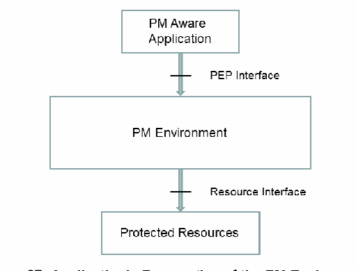
縦に並んだ3つの箱の図です。「PM Aware Application」（PM対応アプリケーション）が「PEP Interface」（PEPインターフェース、矢印上の横棒）を介して「PM Environment」（PM環境）につながり、PM環境は「Resource Interface」（リソースインターフェース）を介して「Protected Resources」（保護対象のリソース）につながっています。
Figure 27: Application’s Perspective of the PM Environment
図 27: アプリケーションから見た PM 環境
Applications that conduct administrative actions on policy structures work a bit differently. Take, for example, a policy manager application developed to allow an administrator to render part of the PM’s current policy configuration within its domain (e.g., in the form of an authorization graph), to navigate the configuration, and to create and delete policy elements and relations between policy elements (i.e., assignments, associations, prohibitions, and obligations). While such an application would use a PEP as other PM-aware applications do, the requested administrative actions do not involve protected physical resources and instead, pertain exclusively to abstract resources—the policy structures maintained at the PIP within the PM environment.
ポリシー構造に対して管理上の行為を行うアプリケーションは、少し異なる動作をします。たとえば、管理者が、そのドメイン内の PM の現在のポリシー構成の一部を（たとえば認可グラフの形で）描画し、構成内を移動し、ポリシー要素とポリシー要素間の関係（すなわち、割当て、関連付け、禁止、義務）を作成・削除できるように開発されたポリシーマネージャーアプリケーションを考えます。このようなアプリケーションは、ほかの PM 対応アプリケーションと同様に PEP を使用しますが、要求される管理上の行為は保護対象の物理資源を伴わず、代わりに、PM 環境内の PIP で維持されるポリシー構造という、抽象資源のみに関わります。
7.3 Security Considerations
7.3 セキュリティに関する考慮事項
The effectiveness of the PM architecture to control access depends on adequately protecting the data elements and relationships that represent the security policy, and also the PM components that contain the mechanisms for policy enforcement. It is also critical that the PM components enforcing policy behave as intended and cannot be bypassed. Potential adversaries may involve more than one legitimate user working in collaboration to defeat access controls to PM protected resources, as well as involvement of non-legitimate external parties. Adversaries may have access to the data paths between components and be able to eavesdrop on exchanges.
アクセスを制御する PM アーキテクチャの有効性は、セキュリティポリシーを表すデータ要素と関係、およびポリシー実施のための機構を含む PM の構成要素を、適切に保護することに依存します。ポリシーを実施する PM の構成要素が意図どおりに動作し、迂回できないことも極めて重要です。潜在的な攻撃者には、PM が保護する資源へのアクセス制御を破るために協力する複数の正規ユーザーのほか、正規でない外部の関係者が関与することも考えられます。攻撃者は、構成要素間のデータ経路にアクセスし、やり取りを盗聴できる可能性があります。
PM components are trusted entities that must work together closely to ensure reference mediation is carried out correctly. Authentication protocols enable one component to prove its claimed identity to another component, typically through some cryptographic means. In a distributed system where several functional components of the same type exist (e.g., multiple PDPs), it may be necessary to find an available component to use from amongst them. Since the potential for an attacker to masquerade as a trusted component exists (e.g., via a man-in-the-middle attack), authentication between PM components is an important safeguard for verifying that a functional component is what it claims to be. In addition, authentication can prevent PM components from being bypassed by an attacker. However, authentication protocols are complex, and because of their complexity, implementations can be done incorrectly and result in vulnerabilities such as incorrect interpretation of credentials.
PM の構成要素は、信頼されるエンティティであり、参照仲介が正しく実行されるように緊密に連携しなければなりません。認証プロトコルにより、ある構成要素は、通常何らかの暗号的手段を通じて、主張する識別情報を別の構成要素に証明できます。同じ種類の機能構成要素が複数存在する分散システム（たとえば複数の PDP）では、それらの中から使用する利用可能な構成要素を見つける必要がある場合があります。攻撃者が（たとえば中間者攻撃によって）信頼される構成要素になりすます可能性があるため、PM の構成要素間の認証は、機能構成要素が主張どおりのものであることを検証するための重要な防護措置です。さらに、認証は、攻撃者が PM の構成要素を迂回することを防ぐこともできます。しかし、認証プロトコルは複雑であり、その複雑さのために、実装が誤って行われ、認証情報の誤った解釈などの脆弱性につながる可能性があります。
Distributed entities rely on networks communications to interoperate. Messages transmitted between PM entities are potentially susceptible to attack by malicious third parties, and therefore, protocols that convey messages require adequate safeguards. Secure transmission protocols use cryptography to convey content between authenticated parties. As with authentication protocols, transmission protocol implementations may contain errors as well as design flaws, which allow exploitation. Protocol attacks may involve message replay, content analysis, deletion, and modification attacks and result in unauthorized disclosure, policy circumvention, state corruption, violation of privacy, or denial of service. Single-occurrence PM components, such as the PAP and EPP, can be particularly attractive targets for denial of service attacks, since they represent choke points in the access control framework.
分散したエンティティは、相互運用するためにネットワーク通信に依拠します。PM のエンティティ間で送信されるメッセージは、悪意のある第三者による攻撃を受ける可能性があり、したがって、メッセージを伝えるプロトコルには適切な防護措置が必要です。安全な伝送プロトコルは、暗号技術を使って、認証された当事者間で内容を伝達します。認証プロトコルと同様に、伝送プロトコルの実装にも、設計上の欠陥だけでなく誤りが含まれる可能性があり、それが悪用されることがあります。プロトコルへの攻撃には、メッセージのリプレイ、内容の分析、削除、改変の攻撃が含まれ、認可されていない開示、ポリシーの回避、状態の破壊、プライバシーの侵害、またはサービス拒否につながる可能性があります。PAP や EPP のような単一の PM 構成要素は、アクセス制御フレームワークのボトルネックとなるため、サービス拒否攻撃の標的として特に魅力的になり得ます。
The PEP, PDP, PAP, and other PM components may themselves contain vulnerabilities that could be exploited to compromise the access control policy and its enforcement by the PM. For example, race conditions between components, discussed earlier, may result in time-of-check/time-of-use vulnerabilities. Other components of a distributed system on which the PM components depend, such as a virtual machine monitor, operating system, or domain-name system (DNS) resolver, may also be exploited and lead to a policy compromise. Similarly, systems supporting client applications and also the client applications themselves may contain vulnerabilities susceptible for exploitation. Even if the PM implementation functions perfectly, transactions stemming from the application may be forged, or intercepted and modified on the client system before the PM components are involved.
PEP、PDP、PAP、およびその他の PM 構成要素自体に、アクセス制御ポリシーと PM によるその実施を危殆化するために悪用され得る脆弱性が含まれている可能性があります。たとえば、先に論じた構成要素間の競合状態は、time-of-check/time-of-use の脆弱性につながる可能性があります。仮想マシンモニタ、オペレーティングシステム、ドメインネームシステム（DNS）リゾルバなど、PM の構成要素が依存する分散システムのほかの構成要素も悪用され、ポリシーの危殆化につながる可能性があります。同様に、クライアントアプリケーションをサポートするシステムとクライアントアプリケーション自体にも、悪用されやすい脆弱性が含まれている可能性があります。PM の実装が完璧に機能していても、アプリケーションに由来するトランザクションが、PM の構成要素が関与する前に、クライアントシステム上で偽造されたり、傍受されて改変されたりする可能性があります。
8. Related Work
8. 関連研究
The notion of a multi-policy machine capable of enforcing multiple, possibly contradictory security policies expressed in terms of user and object attributes was envisioned in the early 90’s [Hos93]. As with the PM, domains could be mutually exclusive or overlap each other, allowing subjects and objects to belong to more than one domain and fall under more than one policy. A conceptual framework was developed for the multi-policy machine, which was represented mathematically in terms of machine states, access requests, decisions, and state-transitions [Bel94]. The framework was used mainly to address strategies for resolving several key issues with multi-policies and policy conflicts that could arise. Accommodation of multiple policies is an inherent part of the PM framework, addressed through the use of policy class-based domains, the ability to derive privileges and restrictions from associations and prohibitions that span multiple policy classes, and the treatment of access requests by the access decision function.
ユーザー属性とオブジェクト属性で表現された、複数の、場合によっては矛盾するセキュリティポリシーを実施できる、マルチポリシーマシンという概念は、90 年代初頭に構想されました [Hos93]。PM と同様に、ドメインは相互に排他的であっても、互いに重なり合ってもよく、サブジェクトとオブジェクトが複数のドメインに属し、複数のポリシーの下に入ることを可能にしていました。マルチポリシーマシンのための概念的フレームワークが開発され、マシンの状態、アクセス要求、決定、状態遷移によって数学的に表現されました [Bel94]。このフレームワークは主に、マルチポリシーと、生じ得るポリシーの競合に関するいくつかの重要な問題を解決するための戦略に対処するために使用されました。複数のポリシーへの対応は PM フレームワークに本来備わっており、ポリシークラスに基づくドメインの使用、複数のポリシークラスにまたがる関連付けと禁止からの権限と制限の導出能力、およびアクセス決定関数によるアクセス要求の扱いを通じて対処されます。
The concept of trust management was introduced with the PolicyMaker system [Bla96]. Trust management presents a comprehensive approach to specifying and interpreting security policies, credentials, and relationships to allow access decisions to be made about security-critical actions. To provide a coherent framework for expressing interrelationships between security policies, security credentials, and trust relationships, PolicyMaker and its successor KeyNote utilize public key infrastructure environments, certificate-based trust, and binding of cryptographic keys to actions [Bla98, Bla99]. Five basic components can be identified: a mechanism for identifying principals, a language for describing security-critical actions, a language for specifying application policies, a language for specifying delegation credentials, and a compliance checker that factors all of the above in its decisions. Unlike other access control approaches focused mainly on centralized operating environments, trust management is particularly suited for situations where security policy is decentralized and distributed across a network, such as multi-system applications and data services that cross departmental and organizational boundaries [Bla99]. In this regard, it is similar to the PM framework.
トラスト管理の概念は、PolicyMaker システムとともに導入されました [Bla96]。トラスト管理は、セキュリティ上重要な行為についてアクセス決定を行えるように、セキュリティポリシー、認証情報、関係を規定・解釈する包括的なアプローチを提示します。セキュリティポリシー、セキュリティ認証情報、トラスト関係の間の相互関係を表現するための首尾一貫したフレームワークを提供するために、PolicyMaker とその後継の KeyNote は、公開鍵基盤環境、証明書ベースのトラスト、および暗号鍵と行為の結び付けを利用します [Bla98, Bla99]。5 つの基本構成要素を特定できます。プリンシパルを特定する機構、セキュリティ上重要な行為を記述する言語、アプリケーションのポリシーを規定する言語、委任の認証情報を規定する言語、そして上記のすべてを決定に反映するコンプライアンスチェッカーです。主に集中型の運用環境に焦点を当てたほかのアクセス制御アプローチとは異なり、トラスト管理は、複数システムのアプリケーションや、部門や組織の境界を越えるデータサービスなど、セキュリティポリシーが分散化され、ネットワーク全体に分散している状況に特に適しています [Bla99]。この点で、PM フレームワークと類似しています。
A family of usage control (UCON) models was devised as a conceptual framework for access control [Par04]. The UCON models offer a broad and diverse scope of coverage that encompasses digital rights management and other modern access control models. The complete family of models is collectively termed \(\mathrm{UCON}_{\mathrm{ABC}}\), since to provide a richer and finer decision capability, decision-related factors are delineated into three categories: Authorizations (A), oBligations (B), and Conditions (C). Authorizations concern the evaluation of authorization rules and usage rights together with subject and object attributes in reaching a usage decision. Attributes are used to represent key characteristics of subjects and objects, such as identities, security labels, properties, and capabilities. Obligations are treated as requirements that subjects have to perform before or during (or even after, in case of a global obligation) obtaining or exercising usage rights. Conditions are environmental or system requirements that are independent from individual subjects and objects, such as time of day and location. In comparison, the PM covers authorizations and obligations, but not conditions, and digital rights management is outside its purview.
使用制御（UCON）モデルのファミリーは、アクセス制御の概念的フレームワークとして考案されました [Par04]。UCON モデルは、デジタル著作権管理とその他の現代的なアクセス制御モデルを包含する、広く多様な適用範囲を提供します。モデルのファミリー全体は、まとめて \(\mathrm{UCON}_{\mathrm{ABC}}\) と呼ばれます。より豊かで細かい決定能力を提供するために、決定に関連する要因が、認可（Authorizations、A）、義務（oBligations、B）、条件（Conditions、C）の 3 つのカテゴリーに区分されているためです。認可は、使用の決定に至る際の、サブジェクト属性とオブジェクト属性に加えた、認可ルールと使用権の評価に関わります。属性は、識別情報、セキュリティラベル、特性、ケーパビリティなど、サブジェクトとオブジェクトの主要な特性を表すために使用されます。義務は、使用権を取得または行使する前または最中（グローバルな義務の場合は事後も）に、サブジェクトが実行しなければならない要件として扱われます。条件は、時刻や場所など、個々のサブジェクトやオブジェクトとは独立した、環境またはシステムの要件です。比較すると、PM は認可と義務を扱いますが、条件は扱わず、デジタル著作権管理はその対象外です。
The \(\mathrm{UCON}_{\mathrm{ABC}}\) decision-related factors may effect subject and object attributes either before or after a usage decision, continually during and after a usage decision, or not at all. Tenable cases narrow the possible alternatives down to sixteen basic models that comprise the \(\mathrm{UCON}_{\mathrm{ABC}}\) family. The basic models are designed to be combined together to capture subtle distinctions that arise in real-world policies, giving rise to a large number of more elaborate, composite models. Despite the broad policy coverage of the models, however, the administrative aspects of \(\mathrm{UCON}_{\mathrm{ABC}}\) are outside its scope. Instead, usage rules for authorizations, obligations, and conditions and other policy constituents are presumed to be in place. The result is a framework that is rather complex, but can serve well as a taxonomy for classifying access control models, for which the sixteen basic models define the taxa. In contrast, the scope of PM model is more focused and covers not only wide segments of what might be termed \(\mathrm{UCON}_{\mathrm{AB}}\), in which relevance to modern access control models has been demonstrated, but also all administrative aspects for configuring and maintaining policy.
\(\mathrm{UCON}_{\mathrm{ABC}}\) の決定に関連する要因は、使用の決定の前または後のいずれか、使用の決定の最中と後に継続的に、またはまったく、サブジェクト属性とオブジェクト属性に影響を与える場合があります。成立し得る場合を絞り込むと、可能な選択肢は、\(\mathrm{UCON}_{\mathrm{ABC}}\) ファミリーを構成する 16 の基本モデルに絞られます。基本モデルは、組み合わせて、実世界のポリシーに生じる微妙な違いを捉えるように設計されており、より精巧な多数の複合モデルを生み出します。しかし、モデルの適用範囲の広さにもかかわらず、\(\mathrm{UCON}_{\mathrm{ABC}}\) の管理上の側面はその範囲外です。代わりに、認可、義務、条件、およびその他のポリシー構成要素の使用ルールが、整っていると仮定されています。その結果は、かなり複雑なフレームワークですが、アクセス制御モデルを分類する分類体系として十分に役立ち、その分類群を 16 の基本モデルが定義します。これに対し、PM モデルの範囲はより焦点が絞られており、現代のアクセス制御モデルとの関連性が実証されている \(\mathrm{UCON}_{\mathrm{AB}}\) と呼べるものの広い部分だけでなく、ポリシーの構成と維持のためのすべての管理上の側面も扱います。
The Extensible Access Control Markup Language (XACML) is an XML-based language standard designed to express security policies, as well as the access requests and responses needed for querying the policy system and reaching an access decision [XAC13]. XACML is similar to the PM insofar as it provides a flexible, mechanism-independent representation of policy rules that may vary in granularity, and it employs attributes in the definition of policy. Both XACML and the PM have the ability to combine policies of different authoritative domains into a single policy set that is used to make access control decisions in a widely distributed system environment. However, while the PM requires only a single policy evaluation algorithm for its policies, an XACML policy may have conflicting policies or rules, which must be resolved during policy evaluation by selectively applying one of several combining algorithms defined in the standard. Moreover, XACML does not allow the specification and enforcement of policies that pertain to processes in isolation to their users, as does the PM, thereby excluding support for a wide variety of policies in which this capability is needed [Fer11].
Extensible Access Control Markup Language（XACML）は、XML ベースの言語標準であり、セキュリティポリシーのほか、ポリシーシステムに問い合わせてアクセス決定に至るために必要なアクセス要求と応答を表現するために設計されています [XAC13]。XACML は、粒度が異なり得るポリシールールの、柔軟で機構に依存しない表現を提供し、ポリシーの定義に属性を使用する点で、PM に類似しています。XACML と PM はどちらも、異なる権威を持つドメインのポリシーを、広く分散したシステム環境でアクセス制御の決定を行うために使用される単一のポリシーセットに結合する能力を持っています。しかし、PM はポリシーに対して単一のポリシー評価アルゴリズムのみを必要とするのに対し、XACML のポリシーには競合するポリシーやルールが存在することがあり、それらは、標準で定義された複数の結合アルゴリズムのいずれかを選択的に適用して、ポリシー評価の際に解決しなければなりません。さらに、XACML は、PM のようには、ユーザーとは切り離されたプロセスに関するポリシーの規定と実施を許さず、そのためこの能力が必要な多種多様なポリシーのサポートが除外されます [Fer11]。
Because XACML is implemented in XML, it inherits XML’s benefits and drawbacks. The flexibility and expressiveness of XACML while powerful, make the specification of policy complex and verbose [Hu07]. Applying XACML in a heterogeneous environment requires fully specified data type and function definitions that produce a lengthy textual document, even if the actual policy rules are trivial. Unlike XACML, the PM is not a policy specification language, which avoids the syntactic and semantic complexity in defining an abstract language for expressing platform-independent policies [Hu07]. PM policies are specified in terms of model elements that are maintained at a centralized point and typically rendered and manipulated graphically. For example, to describe hierarchical relations between attributes, the PM requires only the addition of links representing assignment relations between them.
XACML は XML で実装されているため、XML の利点と欠点を引き継いでいます。XACML の柔軟性と表現力は、強力である一方で、ポリシーの規定を複雑で冗長なものにします [Hu07]。異種混在の環境で XACML を適用するには、データ型と関数の完全な定義が必要であり、実際のポリシールールが自明なものであっても、長い文書が作成されます。XACML とは異なり、PM はポリシー規定言語ではないため、プラットフォームに依存しないポリシーを表現する抽象言語を定義する際の、構文上および意味上の複雑さを回避できます [Hu07]。PM のポリシーは、集中した場所で維持され、通常はグラフィカルに描画・操作される、モデル要素によって規定されます。たとえば、属性間の階層関係を記述するには、PM では属性間の割当て関係を表すリンクを追加するだけで済みます。
Other areas of divergence between the two approaches are also evident. Until recently, XACML policy administration treated the access control of the administration of policies outside of the policy model. To control editing of the policy, OE mechanisms such as operating system access controls had to be used, which for large distributed systems could prove difficult to manage. This was never the case with the PM. Also, in the XACML delegation model for decentralized administration of access policies, administrative control policies that specify delegation rights are separate from other access rights, while the PM treats delegation rights and access rights uniformly.
2 つのアプローチの間には、ほかにも相違点があることが明らかです。最近まで、XACML のポリシー管理は、ポリシーの管理に関するアクセス制御を、ポリシーモデルの外側のものとして扱っていました。ポリシーの編集を制御するには、オペレーティングシステムのアクセス制御などの OE の機構を使用しなければならず、大規模な分散システムでは管理が困難になり得ました。PM では、そうしたことは一度もありませんでした。また、アクセスポリシーの分散管理に関する XACML の委任モデルでは、委任権を規定する管理制御ポリシーがほかのアクセス権とは別にされているのに対し、PM は委任権とアクセス権を一様に扱います。
9. References
9. 参考文献
[ANSI04] Information technology – Role-Based Access Control (RBAC), INCITS 359-2004, American National Standard for Information Technology, American National Standards Institute, 2004.
[ANSI04] Information technology – Role-Based Access Control (RBAC), INCITS 359-2004, American National Standard for Information Technology, American National Standards Institute, 2004.
[ANSI13] Information technology - Next Generation Access Control - Functional Architecture (NGAC-FA), INCITS 499-2013, American National Standard for Information Technology, American National Standards Institute, March 2013.
[ANSI13] Information technology - Next Generation Access Control - Functional Architecture (NGAC-FA), INCITS 499-2013, American National Standard for Information Technology, American National Standards Institute, March 2013.
[ANSI15] Working DRAFT Information technology - Next Generation Access Control – Generic Operations and Data Structures (NGAC-GOADS)), INCITS 526-201x, American National Standard for Information Technology, American National Standards Institute, June 2015.
[ANSI15] Working DRAFT Information technology - Next Generation Access Control – Generic Operations and Data Structures (NGAC-GOADS), INCITS 526-201x, American National Standard for Information Technology, American National Standards Institute, June 2015.
[Bel94] D.E. Bell, “Modeling the Multipolicy Machine,” Proceedings of the 1994 Workshop on New Security Paradigms, Little Compton, Rhode Island, USA, August 3-5, 1994, pp. 2-9. http://dx.doi.org/10.1109/NSPW.1994.656208.
[Bel94] D.E. Bell, “Modeling the Multipolicy Machine,” Proceedings of the 1994 Workshop on New Security Paradigms, Little Compton, Rhode Island, USA, August 3-5, 1994, pp. 2-9. http://dx.doi.org/10.1109/NSPW.1994.656208.
[Bla96] M. Blaze, J. Feigenbaum, and J. Lacy, “Decentralized Trust Management,” IEEE Symposium on Security and Privacy, Oakland, California, USA, May 6-8, 1996, pp. 164-173. http://dx.doi.org/10.1109/SECPRI.1996.502679.
[Bla96] M. Blaze, J. Feigenbaum, and J. Lacy, “Decentralized Trust Management,” IEEE Symposium on Security and Privacy, Oakland, California, USA, May 6-8, 1996, pp. 164-173. http://dx.doi.org/10.1109/SECPRI.1996.502679.
[Bla98] M. Blaze, J. Feigenbaum, and A. Keromytis, “KeyNote: Trust Management for Public-Key Infrastructures,” The 6th International Workshop on Security Protocols, Cambridge, United Kingdom, April 15-17 1998. In Lecture Notes in Computer Science 1550, Berlin: Springer, pp. 59-63. http://dx.doi.org/10.1007/3-540-49135-X_9.
[Bla98] M. Blaze, J. Feigenbaum, and A. Keromytis, “KeyNote: Trust Management for Public-Key Infrastructures,” The 6th International Workshop on Security Protocols, Cambridge, United Kingdom, April 15-17 1998. In Lecture Notes in Computer Science 1550, Berlin: Springer, pp. 59-63. http://dx.doi.org/10.1007/3-540-49135-X_9.
[Bla99] M. Blaze, J. Feigenbaum, J. Ioannidis, and A. Keromytis, “The KeyNote Trust Management System Version 2,” Internet Engineering Task Force (IETF) Request for Comments (RFC) 2704, September 1999. http://www.ietf.org/rfc/rfc2704 [accessed 9/16/2015].
[Bla99] M. Blaze, J. Feigenbaum, J. Ioannidis, and A. Keromytis, “The KeyNote Trust Management System Version 2,” Internet Engineering Task Force (IETF) Request for Comments (RFC) 2704, September 1999. http://www.ietf.org/rfc/rfc2704 [2015 年 9 月 16 日にアクセス].
[Bre89] D.F.C. Brewer and M.J. Nash, “The Chinese Wall Security Policy,” 1989 IEEE Symposium on Security and Privacy, Oakland, California, USA, May 1-3, 1989, pp. 206-214. http://dx.doi.org/10.1109/SECPRI.1989.36295.
[Bre89] D.F.C. Brewer and M.J. Nash, “The Chinese Wall Security Policy,” 1989 IEEE Symposium on Security and Privacy, Oakland, California, USA, May 1-3, 1989, pp. 206-214. http://dx.doi.org/10.1109/SECPRI.1989.36295.
[Fer01] D.F. Ferraiolo, R.S. Sandhu, S.I. Gavrila, D. R. Kuhn, and R. Chandramouli, “Proposed NIST standard for role based access control,” ACM Transactions on Information and System Security (TISSEC), vol. 4, no. 3 (August 2001), pp. 224-274. http://dl.acm.org/citation.cfm?id=501980.
[Fer01] D.F. Ferraiolo, R.S. Sandhu, S.I. Gavrila, D. R. Kuhn, and R. Chandramouli, “Proposed NIST standard for role based access control,” ACM Transactions on Information and System Security (TISSEC), vol. 4, no. 3 (August 2001), pp. 224-274. http://dl.acm.org/citation.cfm?id=501980.
[Fer05] D.F. Ferraiolo, S.I. Gavrila, V.C. Hu, and D.R. Kuhn, “Composing and Combining Policies Under the Policy Machine,” Tenth ACM Symposium on Access Control Models and Technologies (SACMAT ‘05), Stockholm, Sweden, 2005, pp. 11-20. http://dx.doi.org/10.1145/1063979.1063982. http://csrc.nist.gov/staff/Kuhn/sacmat05.pdf [accessed 9/16/2015].
[Fer05] D.F. Ferraiolo, S.I. Gavrila, V.C. Hu, and D.R. Kuhn, “Composing and Combining Policies Under the Policy Machine,” Tenth ACM Symposium on Access Control Models and Technologies (SACMAT ‘05), Stockholm, Sweden, 2005, pp. 11-20. http://dx.doi.org/10.1145/1063979.1063982. http://csrc.nist.gov/staff/Kuhn/sacmat05.pdf [2015 年 9 月 16 日にアクセス].
[Fer11] D.F. Ferraiolo, V. Atluria, and S.I. Gavrila, “The Policy Machine: A Novel Architecture and Framework for Access Control Policy Specification and Enforcement,” Journal of Systems Architecture, vol. 57, no. 4 (April 2011), pp. 412-424. http://dx.doi.org/10.1016/j.sysarc.2010.04.005.
[Fer11] D.F. Ferraiolo, V. Atluria, and S.I. Gavrila, “The Policy Machine: A Novel Architecture and Framework for Access Control Policy Specification and Enforcement,” Journal of Systems Architecture, vol. 57, no. 4 (April 2011), pp. 412-424. http://dx.doi.org/10.1016/j.sysarc.2010.04.005.
[Gra72] G.S. Graham and P.J. Denning, “Protection: Principles and Practice,” Spring Joint Computer Conference (AFIPS ’72 (Spring)), Atlantic City, New Jersey, USA, May 16-18, 1972, pp. 417-429. http://dx.doi.org/10.1145/1478873.1478928.
[Gra72] G.S. Graham and P.J. Denning, “Protection: Principles and Practice,” Spring Joint Computer Conference (AFIPS ’72 (Spring)), Atlantic City, New Jersey, USA, May 16-18, 1972, pp. 417-429. http://dx.doi.org/10.1145/1478873.1478928.
[Har76] M.A. Harrison, W.L. Ruzzo, and J.D. Ullman, “Protection in Operating Systems,” Communications of the ACM, vol. 19, no. 8 (August 1976), pp. 461-471. http://dx.doi.org/10.1145/360303.360333.
[Har76] M.A. Harrison, W.L. Ruzzo, and J.D. Ullman, “Protection in Operating Systems,” Communications of the ACM, vol. 19, no. 8 (August 1976), pp. 461-471. http://dx.doi.org/10.1145/360303.360333.
[Hos93] H.H. Hosmer, “The Multipolicy Paradigm for Trusted Systems,” Proceedings of the 1992-1993 Workshop on New Security Paradigms (NSPW ’92-’93), Little Compton, Rhode Island, USA, August 1993, pp. 19-32. http://dx.doi.org/10.1145/283751.283768.
[Hos93] H.H. Hosmer, “The Multipolicy Paradigm for Trusted Systems,” Proceedings of the 1992-1993 Workshop on New Security Paradigms (NSPW ’92-’93), Little Compton, Rhode Island, USA, August 1993, pp. 19-32. http://dx.doi.org/10.1145/283751.283768.
[Hu06] V.C. Hu, D.F. Ferraiolo, and D.R. Kuhn, “Assessment of Access Control Systems,” NISTIR 7316, National Institute of Standards and Technology, Gaithersburg, Maryland, USA, September 2006, 60 pp. http://www.nist.gov/manuscript-publication-search.cfm?pub_id=50886 [accessed 9/16/2015].
[Hu06] V.C. Hu, D.F. Ferraiolo, and D.R. Kuhn, “Assessment of Access Control Systems,” NISTIR 7316, National Institute of Standards and Technology, Gaithersburg, Maryland, USA, September 2006, 60 pp. http://www.nist.gov/manuscript-publication-search.cfm?pub_id=50886 [2015 年 9 月 16 日にアクセス].
[Hu07] V.C. Hu, D.F.Ferraiolo, and K. Scarfone, “Access Control Policy Combinations for the Grid Using the Policy Machine,” Seventh IEEE International Symposium on Cluster Computing and the Grid, Rio de Janeiro, Brazil, May 14-17, 2007, pp. 225-232. http://dx.doi.org/10.1109/CCGRID.2007.15.
[Hu07] V.C. Hu, D.F.Ferraiolo, and K. Scarfone, “Access Control Policy Combinations for the Grid Using the Policy Machine,” Seventh IEEE International Symposium on Cluster Computing and the Grid, Rio de Janeiro, Brazil, May 14-17, 2007, pp. 225-232. http://dx.doi.org/10.1109/CCGRID.2007.15.
[ISO02] ISO/IEC 13568:2002, “Information technology – Z formal specification notation – Syntax, type system and semantics,” International Organization for Standardization (ISO)/International Electrotechnical Commission (IEC), First Edition, July 1, 2002. http://standards.iso.org/ittf/PubliclyAvailableStandards/c021573_ISO_IEC_13568_2002(E).zip [accessed 9/16/2015].
[ISO02] ISO/IEC 13568:2002, “Information technology – Z formal specification notation – Syntax, type system and semantics,” International Organization for Standardization (ISO)/International Electrotechnical Commission (IEC), First Edition, July 1, 2002. http://standards.iso.org/ittf/PubliclyAvailableStandards/c021573_ISO_IEC_13568_2002(E).zip [2015 年 9 月 16 日にアクセス].
[Kuh98] D.R. Kuhn, “Role Based Access Control on MLS Systems Without Kernel Changes,” Third ACM Workshop on Role Based Access Control (RBAC ’98), Fairfax, Virginia, USA, October 22-23, 1998, pp. 25-32. http://dx.doi.org/10.1145/286884.286890. http://www.nist.gov/manuscript-publication-search.cfm?pub_id=916540 [accessed 9/16/2015].
[Kuh98] D.R. Kuhn, “Role Based Access Control on MLS Systems Without Kernel Changes,” Third ACM Workshop on Role Based Access Control (RBAC ’98), Fairfax, Virginia, USA, October 22-23, 1998, pp. 25-32. http://dx.doi.org/10.1145/286884.286890. http://www.nist.gov/manuscript-publication-search.cfm?pub_id=916540 [2015 年 9 月 16 日にアクセス].
[Lam71] B. Lampson, “Protection,” Proceedings of the 5th Princeton Conference on Information Sciences and Systems, Princeton, New Jersey, USA, March 1971. Reprinted in ACM Operating Systems Review, vol. 8, no. 1 (January 1974), pp. 18-24. http://dx.doi.org/10.1145/775265.775268.
[Lam71] B. Lampson, “Protection,” Proceedings of the 5th Princeton Conference on Information Sciences and Systems, Princeton, New Jersey, USA, March 1971. Reprinted in ACM Operating Systems Review, vol. 8, no. 1 (January 1974), pp. 18-24. http://dx.doi.org/10.1145/775265.775268.
[Li05] N. Li and M.V. Tripunitara, “On Safety in Discretionary Access Control,” 2005 IEEE Symposium on Security and Privacy, Oakland, California, USA, May 8-11, 2005, pp. 96-109. http://dx.doi.org/10.1109/SP.2005.14.
[Li05] N. Li and M.V. Tripunitara, “On Safety in Discretionary Access Control,” 2005 IEEE Symposium on Security and Privacy, Oakland, California, USA, May 8-11, 2005, pp. 96-109. http://dx.doi.org/10.1109/SP.2005.14.
[NCSC87] A Guide to Understanding Discretionary Access Control in Trusted Systems, NCSC-TG-003, Version-1, National Computer Security Center, Fort George G. Meade, Maryland, USA, September 30, 1987, 29 pp. http://fas.org/irp/nsa/rainbow/tg003.htm [accessed 9/16/2015].
[NCSC87] A Guide to Understanding Discretionary Access Control in Trusted Systems, NCSC-TG-003, Version-1, National Computer Security Center, Fort George G. Meade, Maryland, USA, September 30, 1987, 29 pp. http://fas.org/irp/nsa/rainbow/tg003.htm [2015 年 9 月 16 日にアクセス].
[Osb00] S. Osborn, R. Sandhu, and Q. Munawer, “Configuring Role-Based Access Control to Enforce Mandatory and Discretionary Access Control Policies,” ACM Transactions on Information and System Security (TISSEC), vol. 3, no. 2 (May 2000), pp. 85-106. http://dx.doi.org/10.1145/354876.354878.
[Osb00] S. Osborn, R. Sandhu, and Q. Munawer, “Configuring Role-Based Access Control to Enforce Mandatory and Discretionary Access Control Policies,” ACM Transactions on Information and System Security (TISSEC), vol. 3, no. 2 (May 2000), pp. 85-106. http://dx.doi.org/10.1145/354876.354878.
[Par04] J. Park and R.S. Sandhu, “The \(\mathrm{UCON}_{\mathrm{ABC}}\) Usage Control Model,” ACM Transactions on Information and System Security (TISSEC), vol. 7, no. 1 (February 2004), pp. 128-174. http://dx.doi.org/10.1145/984334.984339.
[Par04] J. Park and R.S. Sandhu, “The \(\mathrm{UCON}_{\mathrm{ABC}}\) Usage Control Model,” ACM Transactions on Information and System Security (TISSEC), vol. 7, no. 1 (February 2004), pp. 128-174. http://dx.doi.org/10.1145/984334.984339.
[Per96] R.V. Peri, Specification and Verification of Security Policies, Ph.D. Dissertation, University of Virginia, Faculty of the School of Engineering and Applied Science, January 1996, 179 pp. http://citeseerx.ist.psu.edu/viewdoc/download?doi=10.1.1.28.4368&rep=rep1&type=pdf [accessed 9/16/2015].
[Per96] R.V. Peri, Specification and Verification of Security Policies, Ph.D. Dissertation, University of Virginia, Faculty of the School of Engineering and Applied Science, January 1996, 179 pp. http://citeseerx.ist.psu.edu/viewdoc/download?doi=10.1.1.28.4368&rep=rep1&type=pdf [2015 年 9 月 16 日にアクセス].
[Sal75] J.H. Saltzer and M.D. Schroeder, “The Protection of Information in Computer Systems,” Proceedings of the IEEE, vol. 63, no. 9 (September 1975), pp. 1278-1308. http://dx.doi.org/10.1109/PROC.1975.9939.
[Sal75] J.H. Saltzer and M.D. Schroeder, “The Protection of Information in Computer Systems,” Proceedings of the IEEE, vol. 63, no. 9 (September 1975), pp. 1278-1308. http://dx.doi.org/10.1109/PROC.1975.9939.
[San92] R.S. Sandhu, “Lattice-Based Enforcement of Chinese Walls,” Computers and Security, vol. 11, no. 8 (December 1992), pp. 753-763. http://dx.doi.org/10.1016/0167-4048(92)90131-A. http://profsandhu.com/journals/csec/csec92-cwall-org.pdf [accessed 9/16/2015].
[San92] R.S. Sandhu, “Lattice-Based Enforcement of Chinese Walls,” Computers and Security, vol. 11, no. 8 (December 1992), pp. 753-763. http://dx.doi.org/10.1016/0167-4048(92)90131-A. http://profsandhu.com/journals/csec/csec92-cwall-org.pdf [2015 年 9 月 16 日にアクセス].
[San94] R.S. Sandhu and P. Samarati, “Access Control: Principles and Practice,” IEEE Communications Magazine, vol. 32, no. 9 (September 1994), pp. 40-48. http://dx.doi.org/10.1109/35.312842.
[San94] R.S. Sandhu and P. Samarati, “Access Control: Principles and Practice,” IEEE Communications Magazine, vol. 32, no. 9 (September 1994), pp. 40-48. http://dx.doi.org/10.1109/35.312842.
[Sha13] A. Sharifi, M.V. Tripunitara, “Least-Restrictive Enforcement of the Chinese Wall Security Policy,” 18th ACM Symposium on Access Control Models and Technologies (SACMAT ’13), Amsterdam, The Netherlands, June 12-14, 2013, pp. 61-72. http://dx.doi.org/10.1145/2462410.2462425.
[Sha13] A. Sharifi, M.V. Tripunitara, “Least-Restrictive Enforcement of the Chinese Wall Security Policy,” 18th ACM Symposium on Access Control Models and Technologies (SACMAT ’13), Amsterdam, The Netherlands, June 12-14, 2013, pp. 61-72. http://dx.doi.org/10.1145/2462410.2462425.
[Tri04] M.V. Tripunitara and N. Li, “Comparing the Expressive Power of Access Control Models,” 11th ACM Conference on Computer and Communications Security (CCS ’04), Washington, DC, USA, October 25-29, 2004, pp. 62-71. http://dx.doi.org/10.1145/1030083.1030093.
[Tri04] M.V. Tripunitara and N. Li, “Comparing the Expressive Power of Access Control Models,” 11th ACM Conference on Computer and Communications Security (CCS ’04), Washington, DC, USA, October 25-29, 2004, pp. 62-71. http://dx.doi.org/10.1145/1030083.1030093.
[Tri06] M.V. Tripunitara and N. Li, The Foundational Work of Harrison-Ruzzo-Ullman Revisited, CERIAS Tech Report 2006-33, Center for Education and Research in Information Assurance and Security, Purdue University, West Lafayette, Indiana, USA, 2006, 17 pp. https://www.cerias.purdue.edu/assets/pdf/bibtex_archive/2006-33.pdf [accessed 9/16/2015].
[Tri06] M.V. Tripunitara and N. Li, The Foundational Work of Harrison-Ruzzo-Ullman Revisited, CERIAS Tech Report 2006-33, Center for Education and Research in Information Assurance and Security, Purdue University, West Lafayette, Indiana, USA, 2006, 17 pp. https://www.cerias.purdue.edu/assets/pdf/bibtex_archive/2006-33.pdf [2015 年 9 月 16 日にアクセス].
[XAC13] “eXtensible Access Control Markup Language (XACML), Version 3.0,” OASIS Standard, January 22, 2013. http://docs.oasis-open.org/xacml/3.0/xacml-3.0-core-spec-os-en.pdf [accessed 9/16/2015].
[XAC13] “eXtensible Access Control Markup Language (XACML), Version 3.0,” OASIS Standard, January 22, 2013. http://docs.oasis-open.org/xacml/3.0/xacml-3.0-core-spec-os-en.pdf [2015 年 9 月 16 日にアクセス].
Appendix A—Acronyms
付録 A— 略語
ACL Access Control List
ACL アクセス制御リスト
ANSI American National Standards Institute
ANSI 米国規格協会
API Application Programming Interface
API アプリケーションプログラミングインタフェース
DA Domain Administrator
DA ドメイン管理者
DAC Discretionary Access Control
DAC 任意アクセス制御
DNS Domain Name System
DNS ドメインネームシステム
DSD Dynamic Separation of Duty
DSD 動的職務分掌
EPP Event Processing Point
EPP イベント処理ポイント
INCITS International Committee for Information Technology Standards
INCITS 情報技術標準国際委員会
MAC Mandatory Access Control
MAC 強制アクセス制御
MS Mail System
MS メールシステム
NGAC Next Generation Access Control
NGAC 次世代アクセス制御
PA Principal Authority
PA 主権限者
PAP Policy Administration Point
PAP ポリシー管理ポイント
PDP Policy Decision Point
PDP ポリシー決定ポイント
PEP Policy Enforcement Point
PEP ポリシー実施ポイント
PIP Policy Information Point
PIP ポリシー情報ポイント
PM Policy Machine
PM Policy Machine
RAP Resource Access Point
RAP 資源アクセスポイント
RBAC Role Based Access Control
RBAC ロールベースアクセス制御
SA Subdomain Administrator
SA サブドメイン管理者
S2A Sub-SA
S2A サブ SA
S3A Sub-S2A
S3A サブ S2A
SoD Separation of Duty
SoD 職務分掌
SSD Static Separation of Duty
SSD 静的職務分掌
UCON Usage Control
UCON 使用制御
URI Uniform Resource Identifier
URI Uniform Resource Identifier
XACML eXtensible Access Control Markup Language
XACML eXtensible Access Control Markup Language
XML eXtensible Markup Language
XML eXtensible Markup Language
Appendix B—Notation
付録 B—記法
The mathematical notation used in this report corresponds to a subset of the Z formal specification notation defined in ISO/IEC 13568:2002 [ISO02]. Below is a summary of the notation used and, for any differences that exist, their counterpart in the Z notation.
本報告書で使用する数学的表記は、ISO/IEC 13568:2002 [ISO02] で定義される Z 形式仕様記法の部分集合に対応します。以下に、使用する表記の要約と、相違がある場合のそれに対応する Z 表記を示します。
| Numbers | |
|---|---|
| \(\mathbb{Z}\) | Set of integers |
| \(\mathbb{N}\) | Set of natural numbers { 0, 1, 2, ... } |
| \(\mathbb{N}_1\) | Set of strictly positive numbers { 1, 2, ... } |
| \(m + n\) | Addition |
| \(m - n\) | Subtraction |
| \(m * n\) | Multiplication |
| \(m \mathbin{\mathrm{div}} n\) | Division |
| \(m \bmod n\) | Remainder (modulus) |
| \(m \leq n\) | Less than or equal |
| \(m < n\) | Less than |
| \(m \geq n\) | Greater than or equal |
| \(m > n\) | Greater than |
| \(m \ldots n\) | Number range |
| Logic | |
| \(\neg p\) | Logical negation, not |
| \(p \land q\) | Logical conjunction, and |
| \(p \lor q\) | Logical disjunction, or |
| \(p \Rightarrow q\) | Logical implication |
| \(p \Leftrightarrow q\) | Logical equivalence |
| \(\forall x\) | Universal quantification |
| \(\exists x\) | Existential quantification |
| \(\exists_1 x\) | Uniqueness quantification |
| \(\nexists x\) | Existential quantification negation (in Z, ¬∃) |
| Sets and expressions | |
| \(x = y\) | Equality |
| \(x \neq y\) | Inequality |
| \(x \in A\) | Set membership |
| \(x \notin A\) | Non-membership |
| \(\varnothing\) | Empty set |
| \(A \subseteq B\) | Set inclusion |
| \(A \subset B\) | Strict set inclusion |
| \(\{x_1, \ldots, x_n\}\) | Set display |
| \(A \mathrel{x} B \ldots\) | Cartesian product |
| \(2^A\) | Power set (in Z, ℙA) |
| \(2_1^A\) | Non-empty subsets (in Z, ℙ1A) |
| \(A \cap B\) | Set intersection |
| \(A \cup B\) | Set union |
| \(A \setminus B\) | Set difference |
| \(\mathrm{first}\ x\) | First element of an ordered pair |
| \(\mathrm{second}\ x\) | Second element of an ordered pair |
| \(\#A\) | Number of elements in a set |
| Relations | |
| \(R \subseteq A \mathrel{x} B\) | Binary relation (in Z, R: A ↔ B) |
| \(R \subseteq A \mathrel{x} B \mathrel{x} C\) | Ternary relation (in Z, R: A ↔ B ↔ C) |
| \(\mathrm{dom}\ R\) | Domain of a relation |
| \(\mathrm{ran}\ R\) | Range of a relation |
| \(A \mathbin{\lhd\!\!-} R\) | Domain Subtraction |
| \(R \mathbin{-\!\!\rhd} A\) | Range Subtraction |
| \((a, b)\) | Ordered pair of a binary relation |
| \((a, b, \ldots, c)\) | Ordered tuple of an n-ary relation |
| \(a \mathrel{R} b\) | Relation holds between a and b – infix |
| \(R(a, b)\) | Relation holds between a and b – prefix set membership |
| \((a, b) \in R\) | Relation holds between a and b – set membership |
| \(R^+\) | Transitive closure |
| \(R^*\) | Reflexive transitive closure |
| Functions | |
| \(F(x)\) | Function application |
| \(F \subseteq A \mathrel{x} B\) | Partial functions (in Z, A → B) |
| \(F \subseteq A \mathrel{x} B\) | Total functions (in Z, A ⇸ B) |
| Sequences | |
| \(\langle\rangle\) | Empty sequence |
| \(\mathrm{seq}\ A\) | Set of finite sequences |
| \(\mathrm{seq}_1 A\) | Set of non-empty finite sequences |
| \(\mathrm{iseq}\ A\) | Set of finite injective sequences |
| \(\mathrm{iseq}_1 A\) | Set of non-empty finite injective sequences (in Z, iseq A \ {⟨⟩}) |
| \(\mathrm{head}\ s\) | First element of a sequence |
| \(\mathrm{last}\ s\) | Last element of a sequence |
| \(s (i)\) | ith elment of a sequence |
| \(\langle s_1, \ldots, s_n\rangle\) | Sequence display |
| 数 | |
|---|---|
| \(\mathbb{Z}\) | 整数の集合 |
| \(\mathbb{N}\) | 自然数の集合 { 0, 1, 2, ... } |
| \(\mathbb{N}_1\) | 厳密に正の数の集合 { 1, 2, ... } |
| \(m + n\) | 加算 |
| \(m - n\) | 減算 |
| \(m * n\) | 乗算 |
| \(m \mathbin{\mathrm{div}} n\) | 除算 |
| \(m \bmod n\) | 剰余（法） |
| \(m \leq n\) | 以下 |
| \(m < n\) | 未満 |
| \(m \geq n\) | 以上 |
| \(m > n\) | より大きい |
| \(m \ldots n\) | 数の範囲 |
| 論理 | |
| \(\neg p\) | 論理否定（not） |
| \(p \land q\) | 論理積（and） |
| \(p \lor q\) | 論理和（or） |
| \(p \Rightarrow q\) | 論理包含 |
| \(p \Leftrightarrow q\) | 論理同値 |
| \(\forall x\) | 全称量化 |
| \(\exists x\) | 存在量化 |
| \(\exists_1 x\) | 一意性量化 |
| \(\nexists x\) | 存在量化の否定（Z では ¬∃） |
| 集合と式 | |
| \(x = y\) | 等値 |
| \(x \neq y\) | 不等 |
| \(x \in A\) | 集合の要素であること |
| \(x \notin A\) | 集合の要素でないこと |
| \(\varnothing\) | 空集合 |
| \(A \subseteq B\) | 集合の包含 |
| \(A \subset B\) | 集合の真の包含 |
| \(\{x_1, \ldots, x_n\}\) | 集合の列挙 |
| \(A \mathrel{x} B \ldots\) | 直積 |
| \(2^A\) | べき集合（Z では ℙA） |
| \(2_1^A\) | 空でない部分集合（Z では ℙ1A） |
| \(A \cap B\) | 共通部分 |
| \(A \cup B\) | 和集合 |
| \(A \setminus B\) | 差集合 |
| \(\mathrm{first}\ x\) | 順序対の第 1 要素 |
| \(\mathrm{second}\ x\) | 順序対の第 2 要素 |
| \(\#A\) | 集合の要素数 |
| 関係 | |
| \(R \subseteq A \mathrel{x} B\) | 二項関係（Z では R: A ↔ B） |
| \(R \subseteq A \mathrel{x} B \mathrel{x} C\) | 三項関係（Z では R: A ↔ B ↔ C） |
| \(\mathrm{dom}\ R\) | 関係の定義域 |
| \(\mathrm{ran}\ R\) | 関係の値域 |
| \(A \mathbin{\lhd\!\!-} R\) | 定義域の減算 |
| \(R \mathbin{-\!\!\rhd} A\) | 値域の減算 |
| \((a, b)\) | 二項関係の順序対 |
| \((a, b, \ldots, c)\) | n 項関係の順序タプル |
| \(a \mathrel{R} b\) | a と b の間に関係が成り立つ（中置） |
| \(R(a, b)\) | a と b の間に関係が成り立つ（前置の集合の要素） |
| \((a, b) \in R\) | a と b の間に関係が成り立つ（集合の要素） |
| \(R^+\) | 推移閉包 |
| \(R^*\) | 反射的推移閉包 |
| 関数 | |
| \(F(x)\) | 関数適用 |
| \(F \subseteq A \mathrel{x} B\) | 部分関数（Z では A → B） |
| \(F \subseteq A \mathrel{x} B\) | 全関数（Z では A ⇸ B） |
| 数列 | |
| \(\langle\rangle\) | 空列 |
| \(\mathrm{seq}\ A\) | 有限列の集合 |
| \(\mathrm{seq}_1 A\) | 空でない有限列の集合 |
| \(\mathrm{iseq}\ A\) | 有限単射列の集合 |
| \(\mathrm{iseq}_1 A\) | 空でない有限単射列の集合（Z では iseq A \ {⟨⟩}） |
| \(\mathrm{head}\ s\) | 列の最初の要素 |
| \(\mathrm{last}\ s\) | 列の最後の要素 |
| \(s (i)\) | 列の i 番目（ith）の要素 |
| \(\langle s_1, \ldots, s_n\rangle\) | 列の列挙 |
The mathematical notation shown above is used to define the policy elements, entities, and relations that comprise the PM model. A summary of the core relations of the model and the elements and entities used in those relations appear in Table 3 given below. The relations are listed across the top of the table, and the elements and entities are listed along the left-hand side of the table. Note that the power set or finite sequence of the elements and entities listed may actually be used in a cross-referenced relation, and that for some relations, namely prohibitions, multiple types and variants exist (i.e., process, user and user attribute types, and conjunctive, and disjunctive varients).
上に示した数学的表記は、PM モデルを構成するポリシー要素、エンティティ、関係を定義するために使用されます。モデルの中核となる関係と、それらの関係で使用される要素およびエンティティの要約を、下の表 3 に示します。関係は表の上部に、要素およびエンティティは表の左側に列挙されています。列挙された要素およびエンティティのべき集合または有限列が、相互参照される関係で実際に使用される場合があることに注意してください。また、禁止など一部の関係には複数の種類とバリエーションがあり、たとえばプロセス、ユーザー、ユーザー属性の各種類や、連言型および選言型のバリエーションがあります。
Table 3: Summary of Core Model Abstractions
表 3: 中核モデルの抽象概念の要約
| Process_User | ASSIGN | ASSOCIATION | PROHIBITION13 | OBLIG | AREQ | |
|---|---|---|---|---|---|---|
| P | X | X | X | |||
| U | X | X | X | X | ||
| UA | X | X | X | |||
| O | X | X | ||||
| OA | X | X | X | |||
| PC | X | |||||
| AR | X | X | ||||
| OP | ||||||
| \(\Sigma_P\) | X | |||||
| \(\Sigma_R\) | X | |||||
| Arg | X |
| Process_User | ASSIGN | ASSOCIATION | PROHIBITION13 | OBLIG | AREQ | |
|---|---|---|---|---|---|---|
| P | X | X | X | |||
| U | X | X | X | X | ||
| UA | X | X | X | |||
| O | X | X | ||||
| OA | X | X | X | |||
| PC | X | |||||
| AR | X | X | ||||
| OP | ||||||
| \(\Sigma_P\) | X | |||||
| \(\Sigma_R\) | X | |||||
| Arg | X |
Appendix C—Administrative Commands
付録 C— 管理コマンド
The PM access control model is essentially a finite state machine. The policy elements and the relations that define the access rights between these entities collectively constitute the authorization state of the policy maintained by the PM. Administrative commands define the behavior of state transitions that occur when PM policy elements and relations are created, deleted, and updated.
PM アクセス制御モデルは、本質的に有限状態機械です。ポリシー要素と、それらのエンティティ間のアクセス権を定義する関係が、まとめて、PM が維持するポリシーの認可状態を構成します。管理コマンドは、PM のポリシー要素と関係が作成、削除、更新されるときに生じる状態遷移の振る舞いを定義します。
As noted in Chapter 4, administrative routines rely on administrative commands to define and alter policy. Changes in state, or state transitions, occur when an access request involving an administrative operation is granted by the access decision function, and the associated administrative routine is successfully carried out through one or more administrative commands. Changes in state may also occur when an obligation is triggered and its response (i.e., one or more administrative routines) is successfully carried out. Administrative commands constitute the range of behaviors that can be taken against the policy elements and relationships defined by the PM model. This appendix defines the semantics of the core administrative commands of the PM.
第 4 章で述べたとおり、管理ルーチンは、ポリシーを定義・変更するために管理コマンドに依拠します。状態の変化、すなわち状態遷移は、管理操作を伴うアクセス要求がアクセス決定関数によって許可され、関連する管理ルーチンが 1 つ以上の管理コマンドを通じて正常に実行されたときに生じます。状態の変化は、義務がトリガーされ、その応答（すなわち 1 つ以上の管理ルーチン）が正常に実行されたときにも生じることがあります。管理コマンドは、PM モデルで定義されるポリシー要素と関係に対してとり得る振る舞いの範囲を構成します。この付録では、PM の中核となる管理コマンドの意味を定義します。
C.1 Semantic Definitions
C.1 意味論的定義
The semantic description of an administrative command differs from a syntactic description or programming language representation. The semantic descriptions define the correct behavior expected of administrative commands, which is essential for maintaining the integrity of the PM as it transitions between states. The specifications should not be interpreted as programming statements, and instead should be interpreted as changes to model structures representing the authorization state, which occur when a command is correctly carried out. Behavioral aspects other than those related to access control are outside the scope of these descriptions, including other facets of security such as authentication and audit.
管理コマンドの意味の記述は、構文の記述やプログラミング言語による表現とは異なります。意味の記述は、管理コマンドに期待される正しい振る舞いを定義するもので、PM が状態間を遷移する際の完全性を維持するうえで不可欠です。これらの仕様は、プログラミング文として解釈すべきではなく、コマンドが正しく実行されたときに生じる、認可状態を表すモデル構造の変化として解釈すべきです。アクセス制御に関するもの以外の振る舞いの側面は、認証や監査などのセキュリティのほかの側面を含め、これらの記述の範囲外です。
Preconditions are defined for each administrative command. Preconditions denote requirements. They are expressed as a logical expression that must be satisfied for the command to be carried out. The preconditions for administrative commands ensure that the arguments supplied for the formal parameters of the command are of the correct type, and that the basic properties of the model are observed.
各管理コマンドには事前条件が定義されます。事前条件は要件を表します。事前条件は、コマンドを実行するために満たされなければならない論理式として表現されます。管理コマンドの事前条件は、コマンドの形式パラメータに渡される引数が正しい型であること、およびモデルの基本的な特性が守られていることを確実にします。
The following conventions are observed in the semantic descriptions given below:
以下に示す意味の記述では、次の慣例が守られています。
•The behavior of administrative commands is atomic; their effects are indivisible and uninterruptable.
•管理コマンドの振る舞いはアトミックであり、その効果は分割できず、中断できません。
•The main body of an administrative command specifies state changes for those model elements and relations that are affected by its conduct—the state of any unspecified element or relation is unaffected and remains unchanged.
•管理コマンドの本体は、その実行によって影響を受けるモデル要素と関係の状態変化を規定します。規定されていない要素や関係の状態は影響を受けず、変化しないままです。
•Model elements and relations, whose states are affected by the behavior of an administrative routine or command, are indicated with the prime symbol.
•状態が管理ルーチンまたはコマンドの振る舞いによって影響を受けるモデル要素と関係は、プライム記号で示されます。
•All specified preconditions must be satisfied for the change of state described in the body of the routine or command to occur. More simply stated, no change to the authorization state occurs unless the preconditions are satisfied.
•ルーチンまたはコマンドの本体に記述された状態の変化が生じるには、規定されたすべての事前条件が満たされなければなりません。より簡潔に言えば、事前条件が満たされない限り、認可状態への変更は一切生じません。
•Comments may appear in the semantic descriptions; single line comments begin with a double backslash, and multiline comments begin with a backslash followed by an asterisk and end with an asterisk followed by a backslash.
•意味の記述にはコメントを含めることができます。単一行コメントは 2 つの連続したバックスラッシュで始まり、複数行コメントは、バックスラッシュの後にアスタリスクが続くもので始まり、アスタリスクの後にバックスラッシュが続くもので終わります。
•The formal parameters of an administrative command provide either an input or output to the command, but never provide both an input and an output.
•管理コマンドの形式パラメータは、コマンドへの入力または出力のいずれかを提供しますが、入力と出力の両方を提供することはありません。
In the specification of preconditions, simplifications were made with the notation used; namely, the tuples of a relation are treated as members of a set when the predicate calculus qualifiers ∃, ∄, and ∀ are applied. For example, a triple of the relation ASSOCIATION has three elements: a user attribute, a set of access rights, and an object attribute. To specify that a triple (a, b, c) of ASSOCIATION with the property a=x does not exist would normally be done as follows:
事前条件の規定では、使用する表記を簡略化しています。すなわち、述語論理の限定子 ∃、∄、∀ を適用する際、関係のタプルは集合の要素として扱われます。たとえば、関係 ASSOCIATION の三つ組は、ユーザー属性、アクセス権の集合、オブジェクト属性という 3 つの要素を持ちます。特性 a=x を持つ ASSOCIATION の三つ組 (a, b, c) が存在しないことを規定するには、通常は次のようにします。
\[\forall a\in\mathrm{UA}, \forall b\in\mathrm{ARs}, \forall c\in\mathrm{OA}: \neg((a, b, c) \in \mathrm{ASSOCIATION} \land a = x)\]
\[\forall a\in\mathrm{UA}, \forall b\in\mathrm{ARs}, \forall c\in\mathrm{OA}: \neg((a, b, c) \in \mathrm{ASSOCIATION} \land a = x)\]
Instead, this formula is expressed in the preconditions as follows:
代わりに、この式は事前条件では次のように表現されます。
\[\nexists(a, b, c) \in \mathrm{ASSOCIATION}: a = x\]
\[\nexists(a, b, c) \in \mathrm{ASSOCIATION}: a = x\]
The qualifier in the latter shorthand expression more succinctly denotes both the set membership of each element of the tuple and the tuple membership (or rather, the lack thereof) with the relation. Full predicate calculus notational equivalencies of shorthand expressions involving an existential or universal quantifier (i.e., ∄ in the above formula replaced by ∃ or ∀ respectively) also exist.
後者の省略形の式の限定子は、組の各要素の集合への所属と、関係への組の所属（あるいはむしろ、その欠如）の両方を、より簡潔に表します。存在限定子または全称限定子を含む省略形の式を完全な述語論理の表記で書き換えた等価表現（すなわち、上の式の ∄ をそれぞれ ∃ または ∀ に置き換えたもの）も存在します。
Some foundational data elements and relations are needed to specify the behavior of administrative commands. All commands depend on a basic data type called ID, which represents opaque identifiers of the PM framework. An identifier is a finite sequence of bytes, whose characteristics and interpretation are left unspecified. The set GUID is used to maintain the set of all identifiers allocated to entities that comprise policy and to ensure that each identifier is assigned to only one entity. These items are defined formally as follows:
管理コマンドの振る舞いを規定するには、いくつかの基礎的なデータ要素と関係が必要です。すべてのコマンドは、PM フレームワークの不透明な識別子を表す、ID という基本データ型に依存します。識別子はバイトの有限列であり、その特性と解釈は規定されていません。集合 GUID は、ポリシーを構成するエンティティに割り当てられたすべての識別子の集合を維持し、各識別子がただ 1 つのエンティティにのみ割り当てられることを確実にするために使用されます。これらの項目は、次のように形式的に定義されます。
Several other data elements and relations are also needed to maintain identifiers allocated to various types of entities used in policy formation, namely sets of access rights, sets of event patterns and responses, and sets of exclusive and inclusive attributes, and to maintain mappings from each identifier to its respective members. They are defined as follows:
ポリシー形成で使用される各種のエンティティ、すなわちアクセス権の集合、イベントパターンと応答の集合、除外属性と包含属性の集合に割り当てられた識別子を維持し、各識別子からそれぞれの要素への写像を維持するために、ほかにもいくつかのデータ要素と関係が必要です。それらは次のように定義されます。
An initial state (i.e., the state immediately after initialization of the PM framework) is defined in terms of the abstract data elements and relations and predicates that stipulate the initial conditions of the system. The PM authorization state is initialized to zero or empty as described in the administrative command below. The authorization state can then be populated by the security authority with supported elements, such as inherent administrative operations and associated access rights, and tailored to the specifics of the operating environment with other elements, such as resource operations and access rights.
初期状態（すなわち PM フレームワークの初期化の直後の状態）は、抽象データ要素と関係、およびシステムの初期条件を規定する述語によって定義されます。PM の認可状態は、以下の管理コマンドで説明されるように、ゼロまたは空に初期化されます。その後、認可状態には、セキュリティ権限者が、固有の管理操作と関連するアクセス権などのサポートされる要素を設定でき、資源操作とアクセス権などのほかの要素によって、運用環境の特性に合わせて調整できます。
C.2 Element Creation Commands
C.2 要素作成コマンド
The semantic descriptions of element creation commands describe the changes in the authorization state that occur with the addition of new policy elements to the policy representation. The commands are formulated to preserve model properties. For example, a user can be created only with respect to an existing user attribute, and not independently of any user attribute. The preconditions for these commands ensure that the arguments supplied for the formal parameters of a command are valid.
要素作成コマンドの意味の記述は、ポリシー表現に新しいポリシー要素が追加されることに伴う認可状態の変化を記述します。コマンドは、モデルの特性を保つように定式化されています。たとえば、ユーザーは、既存のユーザー属性に関してのみ作成でき、ユーザー属性とは無関係に作成することはできません。これらのコマンドの事前条件は、コマンドの形式パラメータに渡される引数が有効であることを確実にします。
C.3 Element Deletion Commands
C.3 要素削除コマンド
The semantic descriptions of element deletion commands describe the changes in the authorization state that occur with the removal of existing policy elements from the policy representation. Besides ensuring that the arguments supplied for the formal parameters of a command are valid, the preconditions for these routines also ensure that certain model properties are preserved. The policy element in question must not be involved in any defined relation. For example, if a user attribute is involved in an assignment, association, or prohibition relation, the attribute cannot be deleted until it is no longer involved in the relation.
要素削除コマンドの意味の記述は、ポリシー表現から既存のポリシー要素が削除されることに伴う認可状態の変化を記述します。これらのルーチンの事前条件は、コマンドの形式パラメータに渡される引数が有効であることを確実にするだけでなく、特定のモデルの特性が保たれることも確実にします。問題のポリシー要素は、定義された関係のいずれにも関与していてはなりません。たとえば、ユーザー属性が割当て、関連付け、または禁止の関係に関与している場合、その属性は、その関係に関与しなくなるまで削除できません。
C.4 Entity creation
C.4 エンティティの作成
The semantic descriptions of entity creation commands describe the state changes that occur with the addition of new entities required by the policy representation. These entities typically appear as items used within the formation of the core PM relations.
エンティティ作成コマンドの意味の記述は、ポリシー表現が必要とする新しいエンティティが追加されることに伴う状態の変化を記述します。これらのエンティティは通常、PM の中核となる関係の形成の中で使用される項目として現れます。
C.5 Entity deletion
C.5 エンティティの削除
The semantic descriptions of entity deletion commands describe the state changes that occur with the removal an existing entities from the policy representation.
エンティティ削除コマンドの意味の記述は、ポリシー表現から既存のエンティティが削除されることに伴う状態の変化を記述します。
C.6 Relation Formation Commands
C.6 関係形成コマンド
The semantic descriptions of relation formation commands describe state changes that occur with the addition of tuples to existing relations and functions in the policy representation. Besides ensuring that the arguments supplied for the formal parameters of a command are valid, the preconditions specified below must also maintain certain model properties. An attempt to add tuple that already exists to a relation effects no actual change of state, due to the set operation involved (viz., union).
関係形成コマンドの意味の記述は、ポリシー表現の既存の関係と関数に組が追加されることに伴う状態の変化を記述します。コマンドの形式パラメータに渡される引数が有効であることを確実にするだけでなく、以下に規定する事前条件は、特定のモデルの特性も維持しなければなりません。すでに存在する組を関係に追加しようとしても、関わる集合演算（すなわち和集合）のため、実際の状態の変化は生じません。
The disjunctive forms of user-, user attribute-, and process-based prohibition formation are defined similarly to their conjunctive counterparts above.
ユーザーベース、ユーザー属性ベース、プロセスベースの禁止形成の選言形式は、上の連言形式に対応するものと同様に定義されます。
C.7 Relation Rescindment Commands
C.7 関係取消しコマンド
The semantic descriptions of relation rescindment commands describe state changes that occur with the removal of tuples from existing relations and functions in the policy representation. Besides ensuring that the arguments supplied for the formal parameters of a routine are valid, the preconditions must also maintain certain model properties. An attempt to delete a tuple that does not exist from a relation presents effects no change of state, due to the set operation involved.
関係取消しコマンドの意味の記述は、ポリシー表現の既存の関係と関数から組が削除されることに伴う状態の変化を記述します。ルーチンの形式パラメータに渡される引数が有効であることを確実にするだけでなく、事前条件は、特定のモデルの特性も維持しなければなりません。関係に存在しない組を削除しようとしても、関わる集合演算のため、状態の変化は生じません。
The disjunctive forms of user-, user attribute-, and process-based prohibition rescindment are defined similarly to their conjunctive counterparts above.
ユーザーベース、ユーザー属性ベース、プロセスベースの禁止取消しの選言形式は、上の連言形式に対応するものと同様に定義されます。
Appendix D—Administrative Routines
付録 D— 管理ルーチン
The administrative routines specified in this appendix correspond, on a one-to-one basis, to the set of administrative operations allowable in an administrative access request. Reference mediation must be successfully carried out by the access decision function as a prerequisite to carrying out the behavior described in the body of an administrative routine. The access decision function verifies that a process holds sufficient authorization to perform an administrative routine, based the operation used in the access request, the required permissions needed to perform that operation over the argument sequence in question, and the absence of any restrictions to the contrary.14
この付録で規定する管理ルーチンは、管理アクセス要求で許容される管理操作の集合と一対一で対応します。管理ルーチンの本体に記述された振る舞いを実行するための前提条件として、アクセス決定関数によって参照仲介が正常に実行されなければなりません。アクセス決定関数は、アクセス要求で使用された操作、問題の引数列に対してその操作を実行するために必要な許可、およびそれに反する制限が存在しないことに基づいて、プロセスが管理ルーチンを実行するのに十分な認可を保持していることを検証します。14
Administrative routines perform changes to the authorization state exclusively through one or more administrative commands. In addition to the mediation by the access decision function, administrative routines also rely on the preconditions of administrative commands to ensure that the arguments supplied for the formal parameters of a routine are valid and that the behavior of commands maintain the integrity of the model. Therefore, the preconditions of administrative routines are relatively sparse, especially when compared with those of administrative commands.
管理ルーチンは、1 つ以上の管理コマンドを通じてのみ、認可状態を変更します。アクセス決定関数による仲介に加えて、管理ルーチンは、ルーチンの形式パラメータに渡される引数が有効であること、およびコマンドの振る舞いがモデルの完全性を維持することを確実にするために、管理コマンドの事前条件にも依拠します。したがって、管理ルーチンの事前条件は、特に管理コマンドの事前条件と比べると、比較的簡素です。
D.1 Relation Formation Routines
D.1 関係形成ルーチン
Relation formation routines for creating and assigning objects and object attributes are defined similarly to those given above for users and user attributes.
オブジェクトとオブジェクト属性を作成して割り当てるための関係形成ルーチンは、上で示したユーザーとユーザー属性のものと同様に定義されます。
The disjunctive forms of user, user attribute, and process-based prohibition formation are defined similarly to their conjunctive counterparts above.
ユーザーベース、ユーザー属性ベース、プロセスベースの禁止形成の選言形式は、上の連言形式に対応するものと同様に定義されます。
義務に関する注記:
Obligations have unique characteristics that distinguish them from other relations. The expression of the event pattern cannot be fully evaluated at creation time, since variables used in the expression may refer to the value of items returned in the event context or to policy elements and relations that may not be resolved until the time of match. However, some syntax checks can be made at the time of creation to filter out incorrect expressions and verify that a string supplied as an event pattern is well-formed according to its respective grammar. Where possible, verification should be made that the creator of an obligation holds c-oblig access rights over each recognized policy element that is referenced in the pattern and the obligation response.
義務には、ほかの関係と区別される固有の特性があります。イベントパターンの式は、式で使用される変数が、イベントコンテキストで返される項目の値、または一致の時点まで解決できないポリシー要素と関係を参照することがあるため、作成時に完全に評価することはできません。ただし、作成時に、誤った式を除外し、イベントパターンとして渡された文字列がそれぞれの文法に従って整形式であることを検証するために、一部の構文チェックを行うことができます。可能な場合は、義務の作成者が、パターンと義務の応答で参照される、認識されたすべてのポリシー要素に対して c-oblig アクセス権を保持していることを検証すべきです。
The creation of obligations is modeled by the C-Oblig routine. The preconditions require that the event pattern supplied meets the formal grammar rules for the language used to specify logical expressions (i.e., the EvalPattern function returns True). Similarly, the preconditions for each also require that the response meets the formal grammar rules for the language used to specify the actions to be taken (i.e., the EvalResponse function returns True). The semantics for these routines entail the preservation of the partially checked event pattern and response statements for later use in event context matching and response initiation. The user for which the obligation is created is also preserved to allow verification, at the time a match to the obligation occurs, that the authorization for the user is sufficient to execute the response.
原本PDFの抜粋画像
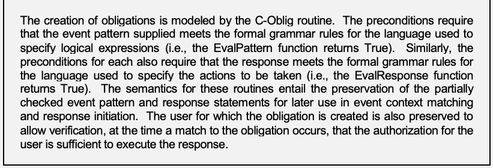
義務の作成は、C-Oblig ルーチンによってモデル化されます。事前条件は、渡されたイベントパターンが、論理式を規定するために使用される言語の形式文法規則を満たすこと（すなわち、EvalPattern 関数が True を返すこと）を要求します。同様に、それぞれの事前条件は、応答が、とるべき行為を規定するために使用される言語の形式文法規則を満たすこと（すなわち、EvalResponse 関数が True を返すこと）も要求します。これらのルーチンの意味は、後のイベントコンテキストの照合と応答の開始で使用するために、部分的にチェックされたイベントパターンと応答の文を保持することを伴います。義務が作成されるユーザーも保持され、義務との一致が生じた時点で、そのユーザーの認可が応答を実行するのに十分であることを検証できるようにします。
D.2 Relation Rescindment Routines
D.2 関係取消しルーチン
Relation rescindment routines for object and object attribute assignments are defined similarly to those given above for user and user attributes.
オブジェクトとオブジェクト属性の割当てのための関係取消しルーチンは、上で示したユーザーとユーザー属性のものと同様に定義されます。
The disjunctive forms of user, user attribute, and process-based prohibition rescindment are defined similarly to their conjunctive counterparts above.
ユーザーベース、ユーザー属性ベース、プロセスベースの禁止取消しの選言形式は、上の連言形式に対応するものと同様に定義されます。
Appendix E—Defining Personas
付録 E— ペルソナの定義
The idea behind personas is that in many circumstances, it is desirable to have certain individuals act in two different, mutually exclusive modes of operation: that of an administrator and that of a user. However, assigning an individual two distinct user identities, one for each mode of operation, takes an important aspect of policy management outside of the policy specification. This situation could eventually lead to problems as policy evolves and personnel changes occur, since the linkage between identities must be maintained elsewhere, and typically would be done less rigorously than the policy specification. Therefore, it would be preferable to accommodate this type of functionality explicitly within the policy specification. Three general approaches are possible: extending the PM model, defining and triggering obligations, and applying a role-based orientation.
ペルソナの背後にある考え方は、多くの状況において、特定の個人が、管理者としての動作と利用者としての動作という、相互に排他的な 2 つの異なる動作モードで行動することが望ましいということです。しかし、個人に 2 つの異なるユーザー識別情報（動作モードごとに 1 つ）を割り当てると、ポリシー管理の重要な側面がポリシー仕様の外に出てしまいます。識別情報間の関連付けは別の場所で維持しなければならず、通常はポリシー仕様よりも厳密さに欠けて行われるため、この状況は、ポリシーが進化し人事異動が生じるにつれて、最終的に問題につながる可能性があります。したがって、この種の機能は、ポリシー仕様の中で明示的に対応するほうが望ましいでしょう。3 つの一般的なアプローチが可能です。PM モデルの拡張、義務の定義とトリガー、ロールベースの志向の適用です。
E.1 Via Model Extension
E.1 モデルの拡張による方法
The first approach is to incorporate the functionality of personas into the PM model. This can be done by defining an extension to the model, which would allow a user with sufficient authorization to change its assignment to a user attribute representing one mode of operation, to a different user attribute that represents the other mode of operation. In other words, a change in personas can be done simply by deleting an assignment and creating another.
1 つ目のアプローチは、ペルソナの機能を PM モデルに組み込むことです。これは、十分な認可を持つユーザーが、1 つの動作モードを表すユーザー属性への割当てを、もう 1 つの動作モードを表す別のユーザー属性へ変更できるようにする、モデルの拡張を定義することで行えます。言い換えれば、ペルソナの変更は、割当てを削除して別の割当てを作成するだけで行えます。
The extension described here provides a straightforward example of this approach. It entails defining a new access right, reassign-user, for the administrative action, together with an administrative routine that carries out the indicated action. To grant the requisite authority, the system administrator has only to establish administrative associations between the user in question and user attributes representing its personas, which allow the user to replace the current assignment to one of the user attributes with an assignment to the other. With that authority in place, the user can initiate the administrative routine via an administrative access request to cause its assignment to change.
ここで説明する拡張は、このアプローチの分かりやすい例を示します。これは、管理上の行為のための新しいアクセス権 reassign-user と、指定された行為を実行する管理ルーチンを定義することを伴います。必要な権限を付与するために、システム管理者は、問題のユーザーと、そのペルソナを表すユーザー属性との間に、管理上の関連付けを確立するだけで済みます。これにより、ユーザーは、ユーザー属性の一方への現在の割当てを、他方への割当てに置き換えることができます。その権限が整っていれば、ユーザーは、管理アクセス要求を通じて管理ルーチンを開始し、自らの割当てを変更させることができます。
The administrative routine below, SwitchAssignmentBetweenUAs, specifies the creation of an assignment from the user u to the new user attribute, uanew, and the deletion of the assignment from the user u to the current user attribute, uacurrent. The syntax and notation for the routine follows that described in Appendix D.
以下の管理ルーチン SwitchAssignmentBetweenUAs は、ユーザー u から新しいユーザー属性 uanew への割当ての作成と、ユーザー u から現在のユーザー属性 uacurrent への割当ての削除を規定します。ルーチンの構文と表記は、付録 D で説明したものに従います。
The solution is general purpose. Persona attributes are not restricted to switching a user between non-administrative and administrative modes of operation, although that is a common use. They can also apply to switching a user solely between several administrative modes or several non-administrative modes of operation. Moreover, the approach works with not only two user persona attributes, each representing an alternative mode of operation for the user, but also any number of such attributes.
この解決策は汎用的です。ペルソナ属性は、非管理の動作モードと管理の動作モードの間でユーザーを切り替えることに限定されませんが、それは一般的な使い方です。複数の管理モードの間だけ、あるいは複数の非管理の動作モードの間だけで、ユーザーを切り替えることにも適用できます。さらに、このアプローチは、それぞれがユーザーの代替の動作モードを表す 2 つのユーザーペルソナ属性だけでなく、任意の数のそのような属性でも機能します。
A simple example based on Figure 6 illustrates usage of the extension more concretely. For that policy, \(u_{2}\) and \(u_{4}\) are presumed to represent two personas for a single individual. Applying the above solution eliminates the need for \(u_{4}\) to be defined, since the single user \(u_{2}\) will suffice. The following steps are required to define the policy:
図 6 に基づく簡単な例で、この拡張の使い方をより具体的に示します。そのポリシーでは、\(u_{2}\) と \(u_{4}\) が単一の個人の 2 つのペルソナを表すものと仮定されます。上記の解決策を適用すると、\(u_{4}\) を定義する必要がなくなります。単一のユーザー \(u_{2}\) で足りるためです。ポリシーを定義するには、次の手順が必要です。
•Create the association (OUadmin, {reassign-user-to}, Group2) ∈ ASSOCIATION, which grants users assigned to OUadmin the authorization to change that assignment to Group2.
•関連付け (OUadmin, {reassign-user-to}, Group2) ∈ ASSOCIATION を作成します。これは、OUadmin に割り当てられたユーザーに、その割当てを Group2 に変更する認可を付与します。
•Create the association (OUadmin, {reassign-user-fr}, OUadmin) ∈ ASSOCIATION, which grants users assigned to OUadmin the authorization to change that assignment away from OUadmin.
•関連付け (OUadmin, {reassign-user-fr}, OUadmin) ∈ ASSOCIATION を作成します。これは、OUadmin に割り当てられたユーザーに、その割当てを OUadmin から別のものに変更する認可を付与します。
•Create the association (Group2, {reassign-user-to}, OUadmin) ∈ ASSOCATION, which grants users assigned to Group2 the authority to change that assignment to OUadmin.
•関連付け (Group2, {reassign-user-to}, OUadmin) ∈ ASSOCATION を作成します。これは、Group2 に割り当てられたユーザーに、その割当てを OUadmin に変更する権限を付与します。
•Create the association (Group2, {reassign-user-fr}, Group2) ∈ ASSOCIATION, which grants users assigned to Group2 the authorization to change that assignment away from Group2.
•関連付け (Group2, {reassign-user-fr}, Group2) ∈ ASSOCIATION を作成します。これは、Group2 に割り当てられたユーザーに、その割当てを Group2 から別のものに変更する認可を付与します。
•Delete the user policy element \(u_{4}\) and its assignment to OUadmin, since they are no longer needed.
•ユーザーポリシー要素 \(u_{4}\) と、その OUadmin への割当てを、不要になったため削除します。
An individual logging in as \(u_{2}\) for the first time defaults to the persona attribute for which \(u_{2}\) is assigned (i.e., Group2). The user can switch via its process to the other persona attribute by issuing the administrative access request (p, switch-assignment, 〈Group2, OUadmin〉), which in turn results in the execution of the administrative routine SwitchAssignmentBetweenUAs(p, \(u_{2}\), Group2, OUadmin) to carry out the action. The individual can switch back to the Group2 persona attribute by issuing a similar access request with the order of the arguments reversed.
\(u_{2}\) として初めてログインする個人は、デフォルトで、\(u_{2}\) が割り当てられているペルソナ属性（すなわち Group2）になります。ユーザーは、自らのプロセスを通じて、管理アクセス要求 (p, switch-assignment, 〈Group2, OUadmin〉) を発行することで、もう一方のペルソナ属性に切り替えることができます。この要求により、その行為を実行する管理ルーチン SwitchAssignmentBetweenUAs(p, \(u_{2}\), Group2, OUadmin) が実行されます。個人は、引数の順序を逆にした同様のアクセス要求を発行することで、Group2 のペルソナ属性に切り替えて戻ることができます。
Note that if multiple users are expected to be assigned to a user attribute designated as a persona, but not all of them require the ability to switch among personas, a slight adjustment can be made to the authorization graph to accommodate the situation. Adding a container, such as persona-ua, and assigning it to the user attribute ua allows the container to be substituted in lieu of ua as the basis for reassign-user associations and persona reassignment requests for the user in question and any other users that operate via the same set of personas. In the Figure 6 example, for instance, if users that do not perform administrative functions are expected to be assigned to Group2, a new user attribute persona-Group2 can be created and assigned to the Group2 user attribute, and the two administrative associations can be redefined with persona-Group2 used in place of Group2.
ペルソナとして指定されたユーザー属性に複数のユーザーが割り当てられることが想定されるものの、そのすべてがペルソナ間で切り替える能力を必要とするわけではない場合、認可グラフにわずかな調整を行って、その状況に対応できることに注意してください。persona-ua などのコンテナを追加して、それをユーザー属性 ua に割り当てると、そのコンテナを ua の代わりに、問題のユーザーと、同じ一連のペルソナを介して動作するほかのユーザーのための、reassign-user の関連付けとペルソナの再割当て要求の基礎として代用できます。たとえば図 6 の例では、管理機能を実行しないユーザーが Group2 に割り当てられることが想定される場合、新しいユーザー属性 persona-Group2 を作成して Group2 ユーザー属性に割り当て、2 つの管理上の関連付けを、Group2 の代わりに persona-Group2 を使うように再定義できます。
E.2 Via Obligations
E.2 義務による方法
The second way to accommodate personas is through obligations. This approach would involve defining a routine very similar to SwitchAssignmentBetweenUAs, but with different preconditions appropriate for use in an obligation. It would also require assigning the appropriate authorization to a user to enable the execution of the routine when the obligation is matched and the response triggered. In this case, however, no new access right like reassign-user would apply to authorizations; instead, an access right for an operation on a resource would apply, such as reading from or writing to some file created for this purpose. Exercising the assigned authority to perform input or output to a file would correspond to a specific switch in user assignments.
ペルソナに対応する 2 つ目の方法は、義務を通じたものです。このアプローチは、SwitchAssignmentBetweenUAs と非常によく似たルーチンを定義することを伴いますが、義務での使用に適した、異なる事前条件を持ちます。また、義務が一致して応答がトリガーされたときに、ルーチンを実行できるようにするための適切な認可を、ユーザーに割り当てる必要もあります。ただしこの場合、reassign-user のような新しいアクセス権は認可に適用されません。代わりに、この目的のために作成されたファイルからの読み取りやファイルへの書き込みなど、資源に対する操作のアクセス権が適用されます。ファイルに対する入力または出力を実行するために割り当てられた権限を行使することが、ユーザーの割当てにおける特定の切り替えに対応します。
Using the Figure 6 policy as an example again, files called switch-to-OUadmin and switch-to-Group2 could be defined and assigned to the Projects container. An obligation could be defined such that a user in Group2 reading the switch-to-OUadmin file would trigger the obligation’s response that causes the user to be resigned to OUadmin. Likewise, another obligation could be defined such that a user in OUadmin reading the switch-to-Group2 file would trigger an obligation that causes the user to be reassigned to Group2.
再び図 6 のポリシーを例にとると、switch-to-OUadmin と switch-to-Group2 というファイルを定義し、Projects コンテナに割り当てることができます。Group2 のユーザーが switch-to-OUadmin ファイルを読み取ると、そのユーザーを OUadmin に再割当てする応答を引き起こす義務を定義できます。同様に、OUadmin のユーザーが switch-to-Group2 ファイルを読み取ると、そのユーザーを Group2 に再割当てする義務を引き起こす、別の義務を定義できます。
With this approach, issuing an access request to read one of the designated files has a similar effect to issuing an administrative access requested to switch assignments in the other—they both cause the administrative routine to be executed to carry out the change in assignments. As with the earlier approach, if it is intended to assign multiple users to a user attribute designated as a persona, but only some of them require the ability to switch among personas, the same adjustment to the authorization graph can be applied to accommodate the situation when obligations are used.
このアプローチでは、指定されたファイルの 1 つを読み取るアクセス要求を発行することは、もう一方で割当てを切り替える管理アクセス要求を発行することと同様の効果を持ちます。どちらも、割当ての変更を実行するための管理ルーチンを実行させます。先のアプローチと同様に、ペルソナとして指定されたユーザー属性に複数のユーザーを割り当てる意図があるものの、そのうち一部のみがペルソナ間で切り替える能力を必要とする場合は、義務を使用するときにも、認可グラフに同じ調整を適用してその状況に対応できます。
While personas can be instituted employing obligations, the approach is less direct and more cumbersome than incorporating personas via an extension the model. For example, two or more persona attributes can be supported for a user or class or users, but each persona attribute would require the definition of an obligation and a special-purpose file to trigger its respective obligation. Nevertheless, for policies where only a single class of administrator is needed, obligations may provide a useful means to support personas.
義務を利用してペルソナを設けることはできますが、そのアプローチは、モデルの拡張によってペルソナを組み込むよりも間接的で、扱いにくくなります。たとえば、あるユーザーまたはユーザーのクラスに対して 2 つ以上のペルソナ属性をサポートできますが、各ペルソナ属性には、義務の定義と、それぞれの義務を引き起こす専用のファイルが必要になります。とはいえ、管理者のクラスが 1 つだけ必要なポリシーでは、義務はペルソナをサポートする有用な手段となり得ます。
E.3 Via a Role-based Orientation
E.3 ロールベースのアプローチ
The third approach for incorporating the functionality of personas is to treat each persona as though it were a role. This is by far the best approach, since it can be done entirely through the policy specification, requiring no extensions to the model as in the first approach (viz., new administrative routines) or triggering of obligations through special-purpose files, as in the second. To begin, a slight change is needed to the initial policy represented in Figure 6. The user \(u_{4}\) would be eliminated, user \(u_{2}\) would be assigned to a new attribute, \(\mathrm{persona\text{-}u}_{2}\), instead of Group2, and \(\mathrm{persona\text{-}u}_{2}\) would be assigned to Administrators. The following steps can then be used to define the base policy:
ペルソナの機能を組み込む 3 つ目のアプローチは、各ペルソナをロールであるかのように扱うことです。これは、1 つ目のアプローチのようなモデルの拡張（すなわち新しい管理ルーチン）や、2 つ目のような専用のファイルによる義務のトリガーを必要とせず、完全にポリシー仕様を通じて行えるため、はるかに優れたアプローチです。まず、図 6 に示した初期ポリシーにわずかな変更が必要です。ユーザー \(u_{4}\) は削除され、ユーザー \(u_{2}\) は Group2 の代わりに新しい属性 \(\mathrm{persona\text{-}u}_{2}\) に割り当てられ、\(\mathrm{persona\text{-}u}_{2}\) は Administrators に割り当てられます。その後、次の手順を使ってベースとなるポリシーを定義できます。
•Create the administrative association (\(\mathrm{persona\text{-}u}_{2}\), {c-uaua-fr, d-uaua-fr}, \(\mathrm{persona\text{-}u}_{2}) \in \mathrm{ASSOCIATION}\), which grants \(u_{2}\) the authorization to create or delete an assignment from \(\mathrm{persona\text{-}u}_{2}\) to another user attribute for which it holds respectively c-uaua-to or d-uaua-to assignment authority.
•管理上の関連付け (\(\mathrm{persona\text{-}u}_{2}\), {c-uaua-fr, d-uaua-fr}, \(\mathrm{persona\text{-}u}_{2}) \in \mathrm{ASSOCIATION}\) を作成します。これは、\(u_{2}\) に、それぞれ c-uaua-to または d-uaua-to の割当て権限を保持している別のユーザー属性への、\(\mathrm{persona\text{-}u}_{2}\) からの割当てを作成または削除する認可を付与します。
•Create the administrative association (\(\mathrm{persona\text{-}u}_{2}\), {c-uaua-to, d-uaua-to}, OUadmin) \(\in \mathrm{ASSOCIATION}\), which grants \(u_{2}\) the authorization to create or delete an assignment to OUadmin from another user attribute (viz., \(\mathrm{persona\text{-}u}_{2}\)) for which it respectively holds c-uaua-fr or d-uaua-fr assignment authority.
•管理上の関連付け (\(\mathrm{persona\text{-}u}_{2}\), {c-uaua-to, d-uaua-to}, OUadmin) \(\in \mathrm{ASSOCIATION}\) を作成します。これは、\(u_{2}\) に、それぞれ c-uaua-fr または d-uaua-fr の割当て権限を保持している別のユーザー属性（すなわち \(\mathrm{persona\text{-}u}_{2}\)）から OUadmin への割当てを作成または削除する認可を付与します。
•Create the administrative association (\(\mathrm{persona\text{-}u}_{2}\), {c-uaua-to, d-uaua-to}, Group2) \(\in \mathrm{ASSOCIATION}\), which grants \(u_{2}\) the authorization to create or delete an assignment to Group2 from another user attribute (viz., \(\mathrm{persona\text{-}u}_{2}\)) for which it respectively holds c-uaua-fr or d-uaua-fr assignment authority.
•管理上の関連付け (\(\mathrm{persona\text{-}u}_{2}\), {c-uaua-to, d-uaua-to}, Group2) \(\in \mathrm{ASSOCIATION}\) を作成します。これは、\(u_{2}\) に、それぞれ c-uaua-fr または d-uaua-fr の割当て権限を保持している別のユーザー属性（すなわち \(\mathrm{persona\text{-}u}_{2}\)）から Group2 への割当てを作成または削除する認可を付与します。
The above policy allows a process operating on behalf of \(u_{2}\) to create and delete assignments that allow it to operate with OUadmin authorizations, Group2 authorizations, and both OUadmin and Group2 authorizations. To avoid the latter from occurring and have all \(u_{2}\) processes operate under either OUadmin or Group2 authorizations, the following dynamic separation of duty obligations must be defined.
上記のポリシーにより、\(u_{2}\) に代わって動作するプロセスは、OUadmin の認可、Group2 の認可、および OUadmin と Group2 の両方の認可で動作できるようにする割当てを、作成・削除できます。後者が生じることを避け、\(u_{2}\) のすべてのプロセスを OUadmin の認可または Group2 の認可のいずれかの下で動作させるために、次の動的職務分掌の義務を定義しなければなりません。